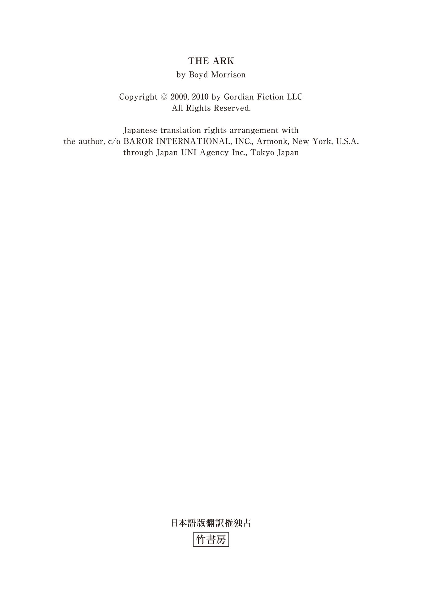
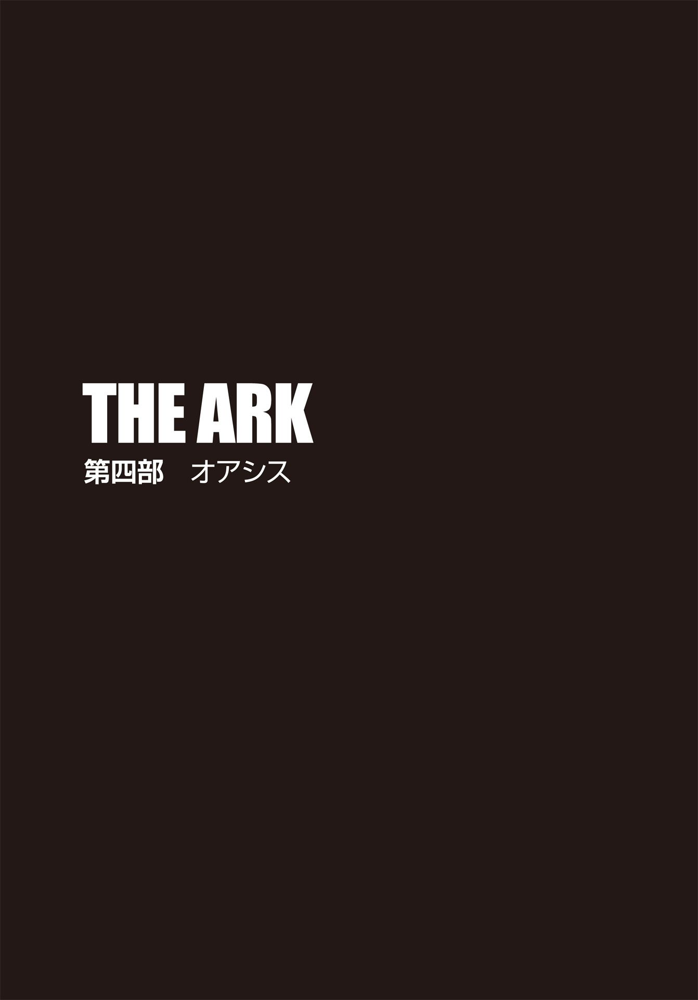
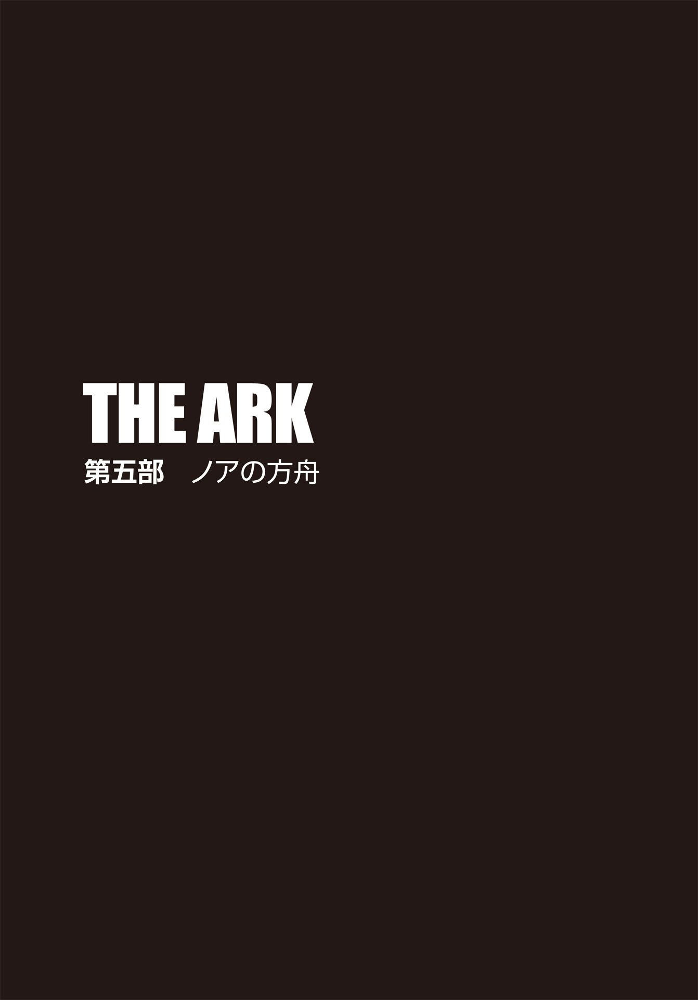

| ＴＨＥ ＡＲＫ 失われたノアの方舟 下 タイラー・ロックの冒険 (竹書房文庫) | |
| ボイド・モリソン | |
| (2013) | |

主な登場人物
タイラー・ロック .........世界有数の民間エンジニアリング企業〈ゴルディアン・エンジニアリング社〉の主任エンジニア。
ディララ・ケナー .........ＵＣＬＡの教授。生物考古学者。
グラント・ウェストフィールド .........〈ゴルディアン・エンジニアリング社〉の電気工学のエキスパート。タイラーの親友。
ハサド・アーヴァディ .........考古学者。ディララの父親。生涯を〝ノアの方舟〟の探求に捧げた。
サム・ワトソン .........生化学者。ディララの父親の友人。
エイデン・マッケンナ .........〈ゴルディアン・エンジニアリング社〉の情報検索のエキスパート。
マイルズ・ベンソン .........〈ゴルディアン・エンジニアリング社〉の社長兼会長。
ジョン・コールマン .........〈コールマン・エンジニアリング＆コンサルティング社〉のエンジニア。
セバスチャン・ウルリック .........〈ウルリック製薬会社〉の会長兼最高技術責任者。
スヴェトラーナ・ペトロワ .........ウルリックの忠実な部下で愛人。
ダン・カッター .........元陸軍軍人。ウルリックの忠実な部下。
トーマス・ペレス .........ＦＢＩ特別捜査官。
メラニー・ハリス .........ＦＢＩ特別捜査官。
デヴィッド・ディール .........薬理学者。〈ホーリー・ウォーターズ教会〉の賛同者。
レックス・ヘイデン .........国際的な映画俳優。
マイケル・ラムジー .........陸軍大尉。デルタ・フォースのアサルトチーム隊長。
シャーマン・ロック .........空軍少将。タイラーの父親。
タイラー・ロックの冒険① ＴＨＥ ＡＲＫ 失われたノアの方舟 下
34
ジェネシス・ドーン号のスイートルームのバルコニーを見やると、遠くに見えるマイアミの高層ビルが、沈みゆく太陽の光を浴びて輝いていた。開放した窓辺からは、ドッジ島クルーズ船ターミナルを通りすぎるシガレット・ボートの音がかすかに聞こえてくる。タイラー・ロックは腕時計で時間を確認した。午後七時半。ジェネシス・ドーン号就航クルーズ記念祝典は、一時間半前に始まっていた。早く会場入りする意味はない。なるべく目立ちたくはなかった。
リビングの姿見にタキシードを着た姿を映し、似合っているかどうかを確かめる。わずか二日前には、煉 瓦 の山で押し潰される寸前だった。馬子にも衣装かもしれないが、あのときの汗まみれのエンジニアと同じ人物だとは思えない。巨大トラックの追跡劇の最中、グロックを落としてしまっていたが、誰かが拾ってくれていて、自分の手元に返ってきた。表面に傷は付いていたものの、少し手入れをしただけで、元のコンディションに戻った。フロリダでは、表から見えなければ武器を携帯するのが許されているので、上着をワンサイズ大きめにして銃を隠すことにした。フェニックスでのカーチェイスの後、レザーマンの多機能ナイフ同様、銃の必要性を痛感して、今も腰のホルスターに入れてある。
セバスチャン・ウルリックの名前を聞いて以来、タイラーは考えをめぐらせていた。やはり、あの元クライアントがこれまでの出来事全てに関与しているに違いない。問題は、ウルリックと事件の関連性を証明することだ。この二十四時間、タイラーはどうやって証拠を手に入れるかをずっと思いあぐねていたが、一向にいい案が浮かばない。偶然の一致と一個人の直感だけではあまりにも説得力に欠ける。怪しげなカルト教団のリーダーという裏の顔を持っているとしても、この国で有数の大富豪の言葉を誰も疑わないだろう。
莫大な富と自分こそが正しいという独善的な考えが、ウルリックを恐ろしく危険な敵に仕立て上げた。ＦＢＩがすでに船内と荷物の捜索をしていたので、タイラーは違ったアプローチを試みようと決めた。もしパーティでウルリックを驚かせることができれば、うろたえたやつはミスを犯すかもしれない。あるいは少なくとも、ジェネシス・ドーン号での計画の実行を先延ばしにする可能性だってある。
タイラーがマイアミ行きを決めた直後、ほんの一瞬、ディララ・ケナーを同伴させるかどうか迷った。恐ろしい生物兵器が使われるかもしれない船に彼女を連れていくのは危険すぎる。だが、あのロケットペンダントの一件で、父親の死に関与した人間を暴くことがディララにとってどれだけ重要かを悟り、タイラーは彼女なしでは来られないと思ったのだ。ディララは自分以上にこの事件の真相を知りたいと感じているはずなのだから。
「準備はできたかい？」タイラーはベッドルームのドア越しに声をかけた。
「もうちょっとよ」
中から返事が聞こえてくる。「あとホックを留めるだけ。少しきついの」
「手を貸そうか？」
「必要だったら言うわ」
ほどなくして扉が開かれ、振り向いたタイラーは目を丸くした。口をあんぐり開けてしまい、慌てて息を吸い込んで唇を閉じる。
昨日、ＴＥＣを飛び出した二人はフェニックスの高級ブティックに駆け込み、ディララはそこでシンプルな黒のイブニングドレスとハイヒールを選んだ。店内で試着しなかったので、ドレス姿を見るのは今が初めてだ。思い返せば、ここまでひどい出来事の連続で、彼女はろくな格好も化粧もしていない。髪型もずっとポニーテールに結っていた。
見違えるように変身したディララを前にし、タイラーは言葉を失ってしまった。肩にかかるセミロングの黒髪は、黒いドレスとよく似合う。シルクの生地は彼女の身体を滑らかに包み、腰元からのドレープがしなかやな曲線を描いている。父親の形見のロケットペンダントがＶ字に深く開いた胸元のワンポイントになっており、柔らかな印象のメイクは美しいチョコレート色の瞳を際立たせていた。
ディララは軽く膝を曲げ、気取っておじぎをしてみせた。「どうかしら？」
「すごく......きれいだ」タイラーは咄 嗟 に気の利いた返答ができず、それしか言葉が出てこなかった。
彼女は照れくさそうに微笑み、「発掘調査ばかりで、滅多にドレスなんて着ないから慣れてなくて」と、垂らした髪の先を指でいじっている。
「じゃあ、パーティ会場のみんなにも見せびらかせてやろう」
彼は右腕を曲げて肘を突き出した。「エスコートさせてもらえますか、ミス・ケナー？」
「ええ、よろしくてよ、ミスター・ロック」
ディララはタイラーの隣に寄り添い、そっと腕を組んできた。ハイヒールを履いた彼女はほとんど身長が変わらず、目の高さが同じになる。自 ずと視線が重なり、二人は見つめ合った。
「タキシードをここまで素敵に着こなせるエンジニアがいたなんて、夢にも思わなかったわ」
「もっと着る機会を増やすべきかな」
「その方がいいわよ」ディララはそう答え、前方を向く。「さあ、私たちが求める答えが見つかるかどうか、確かめに行きましょう」
彼女の凛 とした横顔にタイラーはうなずき、二人は歩き出した。
船室から通路に出ると、ジェネシス・ドーン号のセントラルモールが見渡せる通路に出た。九階建ての船内中央には巨大な吹き抜け部分があり、その面積はフットボール競技場二つ分ほどもある。上層の七階分は客室エリアで、様々な店舗やレストラン、バーが並ぶ下二階は大勢の人でにぎわっていた。吹き抜けの空間に沿う緩やかなスパイラルスロープで上階と下階を行き来できるのだが、船内の一角には三面がガラス張りのエレベーターが設置され、なるべく歩きたくない客たちをひっきりなしに運んでいる。一階アトリウムは、今夜だけ祝典の大会場に変えられていた。そこでは何千人もの客がひしめき、シャンパンやオードブルのトレイを持った白い上着のウェイターたちが、人波の隙間を縫うように移動している。
廊下からエレベーターに向かいながら、タイラーはすでにウルリックを探して視線を滑らせていた。
「やつは見つかった？」
ディララに訊 かれ、手すりのはるか下の祝典会場を見下ろしながら首を横に振る。
「まだだ。これだけ大勢の中からひとりを見つけ出すのは時間がかかる」
しかしそのとき、傍らに細身の美女を従え、ある一団に熱弁をふるっているブロンドの男が目に留まった。生き生きと語る姿を見て、タイラーははっとする。ハワイのあの日、罪と報いについて一方的にしゃべりまくっていたウルリックの仕草と同じだ。目を凝らすと、男が周囲を見渡すように顔の向きを変えたので、表情がはっきりとわかった。人気俳優にも劣らないハンサムな顔立ち。完璧な髪型と五千ドルは下らなそうな高級スーツ。間違いない。
──見つけたぞ、セバスチャン・ウルリック。
「いた。あれがやつだ」タイラーは男を顎で指し示した。
フェニックスからマイアミへ来る機内で、ディララにはウルリックの略歴を説明してあった。
「あの男が父を死に至らしめた張本人なのね」彼女の瞳が鋭く光る。
「まだ断言できないが、一連の出来事の黒幕であることは十中八九確かだろう。やつならやりかねない」
「だけど、ウルリックって、見た目はすごく魅力的。彼が大量殺 戮 を行おうとしてるなんて、到底信じられないわ」
確かに彼女の見解には一理あるが、外見に騙 されてはいけない。ひと皮剝 けば、恐ろしい悪魔の心を持つ男なのだ。
「ディララ、十分気をつけろ。あいつは危険だ。反社会性人格障害 の可能性すらある。とは言っても、ものすごく頭が切れる。どんな展開になろうと、俺たちはうまく立ち回らなければならない。俺のリードに従ってくれ」
ディララは腕を組んだまま、しっかりとうなずいた。
タイラーは彼女をエスコートしてエレベーターに乗った。メインフロアで降りた二人を待ち構えるように、クルーズ・ディレクターのひとりが明るく声をかけてくる。船内のイベントを企画運営するスタッフのようだ。
「くじのチケットをご購入してはいかがです？ 当クルーズのお客様は自動的に商品が当たりますので、買わないと損ですよ。あちらに揃 えてある豪華賞品のどれかが手に入るんですから！」
彼女はにこやかに、フロア中央にある台を指差す。そこには、赤いムスタングのオープンカーとスズキの赤と黒の二台のオートバイをはじめ、プラズマテレビ、パソコンといった最新電気製品などが山と積まれている。車体の色に合わせたキーチェーン付きの車とオートバイの鍵は、それぞれガラスケースに入れられて電気製品と一緒に置かれていた。
「船旅の終わりには、あの鍵のひとつを手に入れるチャンスが増しますよ！」朗らかな声がエレベーター前に響く。「ただし、追加チケットをご購入していただいた場合ですが」
「ありがとう。だが、結構だ」タイラーは笑顔で断り、通りすぎようとしたウェイターのトレイからシャンパンのグラスを二つ取り、ひとつをディララに渡した。二人は参加客を搔 き分けて混雑する会場を進み、数分後、ウルリックの後方へとたどり着く。タイラーは、腕を摑 むディララの手に力が込められるのを感じた。
「隣にいる女性......。以前見たことがある」彼女は耳元で囁 いた。
「ウルリックが同伴している女か？ どこで見た？」
「ロサンゼルス空港。そうよ、あのときの......」目を細め、ディララは女を見つめている。「つまずいてバッグを落としたキャリアウーマンだわ！ それをサムが拾ってあげたの」
驚きと憎しみの色が彼女の瞳に入り交じる。
「じゃあ、あの女がサム・ワトソンに毒を盛ったのか？」
ディララは小さく首を縦に振った。「髪の色とヘアスタイルは違ってる。当時はあまり気に留めていなかったから、よく覚えてないけど、今、横顔を見たとき、空港のあのキャリアウーマンが頭に浮かんだの」
「声は覚えてるか？」
「たぶん。空港であった女性は訛 りがあったはず」
「じゃあ、確かめてみよう」
タイラーは歩き出し、ウルリックたちの会話が聞き取れる場所まで移動した。ちょうどウルリックが話し終えたところで、取り巻きのひとりが質問をした。
「なるほど、おっしゃることはわかりましたが、事業展望と環境保全のバランスを取るのは重要だとは思わないのですか？」
恰 幅 のいいその男の問いに、ウルリックはさも感心したかのように眉を上げる。
「バランスを保てるとでも？」アメリカが誇る富豪のバリトンの声は、おそらく堂々とした印象を与えるのだろうが、タイラーにとっては冷酷な性格を表わしている気がした。
「この地球上で、人類ほど強欲で破壊的な生物はいない。この惑星が誕生して以来、他のどの動物よりもたくさんの種を滅ぼしてきた。これまで我々が世界に対して行ってきたことを深く憂う個人はもちろん存在するが、全体的に考えれば、人間はこの世の害悪でしかない。とにかく、劇的な何かが起こらない限り、地球破壊は止まらないだろう」
あまりに大胆な意見を聞き、質問者は少し驚いた表情になる。
「劇的な何か？ 地球温暖化がひどくなって人々の目が覚める......とかですか？」
「目が覚める？」ウルリックは鼻で笑った。「残念ながら、気候変動は、我々が他の生物を根絶やしにする行為のひとつの兆候にすぎない。それはそれで関心を引くかもしれないが、皆、一時的に目を向けるだけだ。結局、動物園で保護されない種は、人間によって絶滅の危機に立たされる。いや、もっと厳しい状況にならざるを得ないだろう」
「──神が地を見られると、それは乱れていた」
タイラーはウルリックたちの会話にいきなり割って入った。「全ての人が地の上でその道を乱したからである」
聖書の引用──しかも、神が洪水を起こすとノアに打ち明ける直前の部分──に、ウルリックは即座に反応し、振り返る。相手の顔が驚 愕 と不安で歪 んだ一瞬をタイラーは見逃さなかった。それからすぐに破顔したウルリックの表情の早変わりは、演技派の役者顔負けだ。
「タイラー・ロック、君が聖書学者だとは知らなかった」
よそゆきの笑顔に戻ったウルリックだったが、握手を求めてくることはなく、タイラーも敢 えて腕を差し出しはしなかった。
「ちょっと齧 ったことがあるだけです」
彼は何食わぬ顔で返す。本当はマイアミまでのフライトの最中、ノアの方舟の箇所をもう一度おさらいしていたのだ。「こっちこそ驚きましたよ。自家用の豪華クルーザーを持てる億万長者が格下げして、汗水垂らして稼いでいる我々と同じ船に乗るとは」
その場にいた他の乗船客は、好奇の目で二人のやり取りを見ている。
「たまたま縁あって、この船旅会社には資金援助をさせてもらった。この歴史的な出来事に、私でも役に立てればと思っただけだ」
相手の言葉に、タイラーは耳ざとく反応した。「歴史的出来事？ それは何です？」
ウルリックの目がぎろりと鋭く光ったかと思うと、おまえの真意はお見通しだとでも言わんばかりにわざとらしく微笑む。「世界最大の豪華客船の船出だよ、言うまでもなくね」そして、いささかに唐突に左側に立つ女を紹介した。「隣にいるのは、スヴェトラーナ・ペトロワだ。タイラー、君のお連れの素敵な方はどなたかね？」
ウルリックの目はペトロワからディララに移動し、さらに彼女の胸元のロケットペンダントで留まった。もちろん、ディララのことはすでに知っているはずだ。
「ディララ・ケナーです」彼女は自ら名乗ってウルリックを一 瞥 した後、射抜くような視線でペトロワを見やる。「そのお名前からすると、ロシア系かしら？」
「ええ。モスクワ郊外の出身よ。十三のときにアメリカに来たの」
ペトロワの口調には、少し訛りが感じられる。ディララは愛想よくうなずいたが、こちらの腕を摑む手にぎゅっと力を入れた。なるほど。目の前の女は、やはりサム・ワトソンに毒を盛った犯人のようだ。
「仕事でここに？ それとも休暇かい？」
ウルリックに訊かれ、タイラーは「両方ですかね」とそつなく答えた。「次の企画で、この船旅会社に技術コンサルタントの仕事を頼まれているんです。この客船で部屋を用意してもらえたのは、その一環。せっかくの機会だし、断る理由はありませんから」
「今回の航行の全行程に参加するのか？」
「ニューヨークまでです。さすがに四十日を船の上で過ごす余裕はなくて。そちらは？ 四十日のクルーズを堪能する予定とか？」
「いや。この船で過ごすのは今夜のみだ」ウルリックは手を振った。「私もスケジュールが詰まっているもので」
相手の予定をさりげなく聞き出したタイラーは、すかさず核心へと切り込んだ。
「レックス・ヘイデンの自家用機墜落の一件、あれはどう思ってます？ 確か、ヘイデンの兄はあなたの教会に関係していたと聞いてますが」
「兄弟二人とも、若くして亡くなるとは悲劇だ」
いきなりヘイデンの話題を振ってみたものの、ウルリックは顔色ひとつ変えずに答えた。「報道によれば、現時点でも墜落原因は不明のままみたいだな」
「実は、その事故の調査にも関わってまして」
今度は、ウルリックの目が怪しく光った。「ほう。それで、何かわかったのか？」
「それはお教えできません。まだ調査中ですので」
「そうだったな。君たちエンジニアは、プロセスに非常にこだわる」ウルリックは、そこでディララに顔を向けた。「ミス・ケナー、君のご職業は？」
「考古学者です。父の影響を受けて、私も同じ仕事に。父の名はハサド・アーヴァディと言いますが、お聞きになったことはありますか？」
彼女は大胆にも父親の実名を出した。ウルリックの反応を見るためだろう。ところが、知らんぷりを決め込むのかと思いきや、相手の返答は意外なものだった。
「何を隠そう、私はノアの方舟マニアでね。当然のことながら、お父上の仕事ぶりも知っている。若干、方向性が間違っているとは思うが、なかなか興味深い考察をされていた。行方知れずになってしばらく経 つみたいだね。本当に残念だ」
わざとらしく心配してみせる様は、まるで腹の探り合いを楽しんでいるかのようで、ディララの誘導をものの見事に一蹴した形となった。ならば自分がと、今度はタイラーがかまをかけてみた。
「先ほど、他の方との会話で〝劇的な何か〟とおっしゃっていましたが、それって洪水ですか？ 人類を一掃し、世の中を一からやり直す手段として？」
「もし神がゼロから始めるのを強く望むのなら──」ウルリックは動じることなく、タイラーの目を見据えた。「それが神の決断になるだろう」
「お言葉ですが、神がノアと交わした契約はご存知ですよね？ 神は洪水で人間を絶滅させることは二度とないと言った。聖書には明記されています」
「ああ、そうだ。しかし、神は洪水ではなく、核戦争や小惑星など他の手段で、人類だけ全て、あるいは少なくともそのほとんどを根絶やしにするかもしれん。神からすれば、我々人間がこれまで地球に与えてきたダメージをなかったことにするには、そのような恐ろしい結果もやむを得ないのだろう」
「町を守るためには、町を破壊せねばならない──べトナム戦争でもそう言われていました」
食い下がる彼に、ウルリックは神経質そうな笑顔を浮かべた。
「タイラー、君は人間が変わると思っているのか？ 七十億の人間は、この星を守るべく、正しい選択をすることができると？」
「我々がしなければ、誰がするというのです？ 己だけが皆にとって何が正しいかを知っていると思い込む至上の存在 がそうするとでも？」
タイラーは、至上の存在を強調して言った。その言葉がウルリックを指していることは、相手にもわかるはずだ。
「それが必要ならば、神は人類にとって最善の道を選んだと言える。私はそう信じるよ」
ウルリックはきっぱりと言い、傍らのペトロワに顔を向けた。「パーティは十分堪能した。せっかくだから、スイートルームの素晴らしさも経験しておかないとな」
ペトロワは薄い笑みをたたえ、小さくうなずく。
「それでは、皆さん。最高の祝典だった」ウルリックは自分を囲んでいた客人に挨拶をし、それからこちらに向き直った。「タイラー、あとでまた会えるかどうかわからないから、言わせてくれ。どうか素敵なクルーズを」
わざとらしく付け加えたウルリックは、最後ににこりと頰を緩め、くるりと背を向けた。そのとき、タイラーは身体を傾け、立ち去ろうとする相手の耳元にこう囁いた。
「セバスチャン、俺たちが二度と会わないことを祈れ。再会したときには、おまえは敗者で、俺が勝者になる」
そのひと言で、ウルリックから笑顔が消え、表情を曇らせたものの、相手は冷ややかに一瞥しただけで歩き去っていった。
大勢の乗船客に紛れていく二人の後ろ姿を、隣のディララは憎しみを込めて見送っている。
「あの女の顔面にパンチしないように我慢するのは大変だったわ」
「君の気持ちはわかるよ。だが、少なくともひとつ確信した」
「何？ ウルリックがサイコパスだってこと？」
「それは前からわかってたことだ」タイラーは、小さくなっていくウルリックたちを目で追っていく。「あの傲慢な態度......。俺たちが尻尾を摑んでいようと、今さら手遅れだと高を括 っているんだ。ウルリックは必ずここでプランを実行する」
「あの男が船にいる間は、まだ何も起こらないわよね」
「ああ、そうだ。出航前に下船するつもりらしいから、タイムリミットは明日の朝、ジェネシス・ドーン号の出発時。それまでに計画を暴かないと、やつが思い描く地球滅亡のシナリオ通りになってしまう」
タイラーは腕時計を見た。残された時間は、あまりにも少なかった。
35
タイラーとディララは、パーティ会場で食事を済ませることにした。その間も、五階上にある自分たちの部屋のドアに頻繁に目をやり、不在中に入室する不審者がいないか注意を払う。ウルリックが去って以来、彼はほとんどディララと言葉を交わさず、今後の出方を考えていた。
ウルリックはここで何をするつもりだ？ レックス・ヘイデンの機上で起きた事態を、この船で再現するのか？ とは言え、これほど巨大な船では、そう簡単に生物兵器の効果を出せないだろう。食べ物を利用する？ ノロウイルスや食中毒の原因菌などを乗船客に感染させる可能性はあるが、安全な食事を提供するため、食品の衛生管理は徹底されている。タイラーは自分のテーブルに置かれた空の皿に視線を落とし、食べ物を媒介とする手段を選択肢から外した。
では、給水システムは？ 船全体にめぐらされた給水パイプは標的にされやすいが、海水淡水化設備に連結した中央配水ポイントに近づく必要があり、厳重に管理されたエリアに立ち入らなければ無理だ。可能性はあるものの、リスクは大きい。
最も簡単な手段──それは、タイラーがヘイデンの機内でも使われたのではないかと推測している、空中浮遊病原体だ。船の空調システムの中心地点を探し出し、そこから生物兵器を空気に送り込めばいい。しかしながら、新しい船は厳しいチェックをあれこれ受けるため、あらかじめなんらかの装置を設置しておくのは難しい。ウルリックもそれは予想できたはずだ。となると、誰にも妨害されない場所を確保しなければならない──。
「そうか！」
突然タイラーは閃 き、勢いよくイスから立ち上がった。
「いきなり何？」ディララは驚いて目を丸くしている。
「ウルリックさ。やつはこのクルーズには参加しないと口を滑らし、ミスを犯した。俺はエイデンに電話する。コンピュータに送ってもらうものがあるから」
会場の音楽が止 む。祝典終了の合図だ。タイラーとディララは帰り始めた大勢の客の間を縫うように進み、エレベーターに向かっていく。
部屋に戻る道すがら、彼はエイデンに連絡し、ジェネシス・ドーン号の設計図、特に空調システムの系統図をパソコンに転送するように頼んだ。
自分たちのスイートルームに入った彼は室内を見回し、荒らされたりしていないかをチェックした。大丈夫だと確認した後、ノートパソコンを開く。船内ではどこでもワイヤレスでインターネットが楽しめるのが、この船の特徴のひとつ。だから、タイラーはすぐにエイデンからの返事のメールを読むことができ、依頼しておいた別の情報も入手した。ウルリックの部屋番号だ。
モニター上に船の図面を展開させると、ウルリックのスイートルームは二百五十平方メートル近い広さで、客室層最上階にあることがわかった。船首側には、甲板上の高所に操船用の見晴らしのいい空間が設けられているのだが、ちょうどその上に位置している。船の両サイドがぐるりと見渡せるバルコニーからの眺めは最高だろう。
そこで、ウルリックの部屋に換気システムの図面を重ね合わせたところ、やはりタイラーが予想した通りだった。
「なんてこった」
彼がモニターを見て凍りついていると、ディララは「何を見てるの？」とこちらに身を乗り出してきた。香水の甘い匂いに鼻孔をくすぐられてどきりとしたが、それを悟られまいと、慌ててパソコンの画面を指差す。
「これは、この船の空調システムの設計図だ。やつのスイートは船への吸気口と隣接している。これほど大きな吸気口のちょうど隣にある客室は、広い船内でここだけ。この箇所から気流に取り込まれたものは、船全体に行き渡るようになっている」
「その原理を利用して何かを流し、船内の人々を感染させるつもりなのね」
「あくまでも俺個人の推測だが、その可能性は大いにある。壁ごしに吸気口に通じる小さな穴を開けたとしても、簡単に知られることはない。扉の前に〝ＤＯ ＮＯＴ ＤＩＳＴＵＲＢ〟の札を下げておけば、ウルリックたちがこっそり立ち去った後もしばらく仕掛けは発見されないだろう」タイラーは腕組みをし、背もたれに寄りかかる。「そうなると、生物兵器の放出を未然に防ぐチャンスはなくなる」
「誰かに教えなくちゃ」
「問題は、やつの部屋への立ち入りだ。おそらく見張りがついているだろうし」
沈思するタイラーに、ディララが横からこう言った。「ＦＢＩは？」
「それも考えたが、連中は捜査令状がないと動かない。圧倒的な証拠不足の今、令状を取るのは困難だ」
「そんなにのんびり構えてる場合？ あなたっていつも──」
ディララの苛 立 ちが伝わり、タイラーは唐突に立ち上がって相手の言葉をさえぎった。
「俺だって他のやり方がないか、ちゃんと考えてる」
そう返しつつ向き直ると、思いがけず距離が近く、目の前に彼女の顔があった。胸が高鳴るのを払拭するように、タイラーは先を続ける。
「信じてくれ。俺はやつの部屋にある装置を発見し、計画を阻止する。そして、君のお父さんに何があったかを突き止める」
「父のことを考えてくれるのはうれしいけど、あなたがそこまでする必要はないわ」
彼はディララの吐息を感じた。目と目が合う。彼女の瞳は琥 珀 のように深く澄んでいた。
「いや、そうしたいんだ」
次の瞬間、衝動に気づくよりも先に身体が動いていた。タイラーはディララを抱き寄せ、唇を重ねた。情熱的な口づけを交わしながら、長い間忘れていた熱い想いが全身を突き抜けるのを感じていた。密着した身体から、ディララの温 もりと柔らかさが伝わってくる。夢中になってキスをしていると、彼女の指が自分の髪の毛を搔き分けてきた。次第にタイラーも、滑らかな背中に回した手を下げていく。
そのとき、ドアをノックする音が聞こえ、二人は反射的に身体を離した。まるでいい雰囲気のところに親が突然現われ、慌てて取り繕う高校生カップルのようだ。
もう一度扉がノックされた。今度はさっきよりも強く叩 かれた。
照れくさそうに笑ったタイラーは、ハンカチで唇についた口紅を拭き取り、入り口へと歩いていく。ドアを開けると、そこにはＦＢＩのペレス捜査官が立っていた。ペレスはタイラーが招き入れないうちにずかずかと入り込み、髪の毛を手ぐしで整えているディララをじろりと見やった。
「お邪魔だったかな？」ペレスは、わざとらしく片眉を上げて訊ねた。
「いや、大丈夫」タイラーは咳 払 いをする。「俺もちょうど話があったんだ」
「ほう？ 私は午後からずっとここにいたんだが、今まで話に来なかったじゃないか」
「俺が乗船したときは、まだ不確定なことだったから、捜査の邪魔をしたくなかった。だが、今は確信に至った。話を聞いてほしい」
「どんな内容だ。昨日話したようなことか？」
タイラーは首を横に振った。「セバスチャン・ウルリック。やつは今、この船にいる。レックス・ヘイデン自家用機墜落の裏にいるのは、そのウルリックだ。機内で起きたのと同じようなことがここでも起こる。そして、そのからくりを思いついた」
「あの億万長者が？」ペレスは信じられないというふうに目を丸くする。「そいつはとんでもない事態だぞ。そこまで言い切れるなら、証拠を手に入れたんだな？」
「理論上、辻 褄 は合う。パソコンで説明しよう」
タイラーがモニターの方へ向かおうとするや、ペレスは両方の手のひらを向け、こちらの動きを制止した。
「それは後でもいい。私と一緒に来てくれ。だからここに来たんだ。乗船者名簿で君たちの名前を見つけ、祝典の間も監視させてもらった。君と接触するのを他の人間に見られたくなかったから、会場では声をかけず、君たちが部屋に戻るのを待っていたんだ」
「一緒にどこへ？ 用件は？」
タイラーの質問に、ペレスは渋い顔で答えた。
「下の階の客室を特別に取ってある。そこであるものを見てもらいたいんだが、詳細はここでは言えない」
「わかった」彼はそう返事をし、傍らのディララにうなずく。「じゃあ、行こう」
ところが、ペレスは一歩踏み出し、やや強い口調で言った。
「申し訳ないが、彼女には権限がない。ここで待っていてもらう」
予想外の言葉に、タイラーは毅 然 として訴える。
「彼女は連れていく」
「それはできない。君だけだ」ペレスも厳しい表情を崩さない。
タイラーが躊 躇 していると、相手は追い打ちをかけるように告げた。
「重大な用件なんだ。さあ、行くぞ」
ディララを蚊 帳 の外にするなど腑 に落ちなかったものの、軍事機密に関わることかもしれない。彼は不承不承ペレスに従うことにした。
「俺は鍵を持ってるから、戻ってきたら直接ドアを開けるよ」タイラーは彼女に向き合い、ポケットを叩いてみせる。「だから、誰かにノックされても、扉を開けるな。怪しい気配がしたら、電話してくれ。三十秒以内に駆けつける」
「あらゆるケースを想定してるでしょ？ 気を回しすぎよ。それじゃ頭が疲れるわ」ディララは苦笑した。「私は大丈夫」
タイラーは彼女の気丈さが好きだった。そんなところはカレンととてもよく似ている。とは言え、ディララはディララだ。亡き妻に似ているからではなく、ひとりの人間としての彼女に惹 かれているのだ。彼も微笑みを返し、こくりとうなずいた。そして、ペレスの後に続いて部屋を出る。わざわざ自分だけを連れ出す重大な用件とは、何なのか。それを確かめなければならない。
ペレスに続いてタイラーも出ていき、木目の美しい扉がパタンとしまった。部屋にひとり残されたディララは、今しがた起きたことを振り返る。あのキスは、決して気紛れなものではない。彼女はこの数日間、ずっと彼に惹かれていた。それでも、特異な状況下に置かれたがゆえの一時の気の迷いだと、芽生えた想いを追い払おうとしていたのも事実だ。ところが、情熱的なキスをされた今、彼への気持ちをどうしていいかわからない。落ち着きなく室内を歩き回ってみたものの、何も結論は出なかった。新たな恋心に折り合いをつけるのは、全てが終わってからでもいい。ディララは頭を切り替え、目の前の現実に向き合うことにした。
ウルリックの部屋で装置が発見された場合、自分も何かしら手伝うつもりだ。となれば、身体に貼りつくような窮屈なドレスでは不都合だろうから、もっと動きやすい格好の方がいい。まずはよそゆきの化粧を落とそうと、ディララはバスルームへと入った。
洗面ボウルに水を溜 めようとしたそのとき、背後でかすかな物音が鳴った。船室の扉の電子ロックを外したときの音？ タイラーがペレスと出ていって、まだ数分も経っていない。彼がパソコンを取りに戻ってきたのだろうか。
「忘れ物でもしたの？」彼女はバスルームのドアの向こうに叫んだ。
返事はない。
「平気よ。私、バスルームにいるから」
それでも何も返ってこなかった。
おかしい。ノックされても誰も入れるなと忠告していた彼が、こっそり部屋に忍び込むような真 似 をするだろうか。タイラーと知り合って日は浅いけれど、彼なら必ず声をかけるはずだ。何かが変だとディララは思い始めていた。
──タイラー以外の何者かが部屋にいる!?
そう悟った彼女は慄然とした。
バスルームのドアは少し開いている。鍵をかけようかとも考えたが、侵入者が誰かを知るチャンスを逃したくはない。そこでディララは、相手を警戒させぬよう、タイラーだと思い込んでいるふりを通そうと決めた。武器を持っていない自分に唯一有効なのは、不意を衝 くことなのだ。
「今、着替えてるの」
声のトーンを変えず、タイラーを想定して語りかける。「あと少しで出るから」
彼女はハイヒールを脱ぎ、ポーチから取り出したコンパクトを開いた。中の小さなミラーを洗面台の鏡に向け、背後の扉の隙間を映し出す。ドアの陰になって不審者からこちらは見えないはず。タイミングさえあえば、うまく相手を驚かせるだろう。
最初に見えたのは、銃を握る手だった。まっすぐに伸ばされた腕がバスルームにゆっくりと近づいてくる。それから次に、顔が露 になった。
──スヴェトラーナ・ペトロワ！
部屋に忍び込んできたのは、サム・ワトソンを殺したあの女だった。
ディララはコンパクトを下げ、銃を持つ手がドアの隙間から覗 く瞬間を待った。敵が一歩一歩近づく中、息を潜めていると、己の高鳴る心臓の鼓動が感じられる。と、銃身の先が突き出されるのを認めるや否や、彼女は全体重をかけてドアを押しやった。
扉の端に銃がぶつかる鈍い感触とともに、ペトロワが小さく悲鳴を上げた。その手から離れた銃は床に落ち、乾いた音を立てて滑っていく。拾い上げようとディララは突進したが、ペトロワは予想以上に俊敏だった。
いきなり外から乱暴に開かれたドアにぶつかり、ディララの身体は奥のシャワーの方まで跳ね飛ばされた。タイルの壁に背中をしたたかに打ちつけたものの、ペトロワに銃を奪われる前にと必死の思いで立ち上がる。身を屈 めた彼女は、バスルームに入ってきた相手に突進した。ペトロワのみぞおちに思い切りタックルし、寝室側へと押し倒す。床に背中を強打したロシア人美女は、空気を求めて苦しそうに喘 いでいた。ディララは急いでバスルームに転がっていた銃を拾い上げ、仰向けに横たわるペトロワに銃口を向ける。
「さあ、観念して。いつでも引き金を引けるわ。もし私が撃つべきじゃない理由があるのなら、さっさと言いなさい！」
武器を構えた彼女は、苦痛で顔を歪める敵に言い放つ。するとそのとき、入り口の方から男の声がした。
「理由はある。それは私が望まないからだ」
ディララがはっとして顔を上げると、銃をこちらに向けるセバスチャン・ウルリックの姿があった。自分が持っているものと同じく、サイレンサーが装着されている。
「銃を下ろしなさい！」ディララは男を睨 みつけた。「さもなくば、彼女の脳天に穴が開くわよ」
できるだけ落ち着き払った物言いを努めたが、実際は心臓が破裂しそうなほど緊張している。内心を悟られぬよう精一杯虚勢を張ったものの、手の中の拳銃がひどく重く感じられた。この小さな鉄の塊が自分の命を左右する。しかしながら、ディララはこれまで誰かに向かって発砲したことすらなかった。
「だとすれば、私も君を撃たねばならない。それは君も嫌だと思うが？」
「私は本気よ。引き金を引くわ」
私ならできる──ディララは自分に言い聞かせた。
「ああ、君が真剣なのはわかっている。だが、私にとっては、君を殺すことよりペトロワを救う方が大事だ。彼女を撃とうとした瞬間、私は容赦なく君を蜂の巣にする。その美しい身体が穴だらけになり、血を噴き出しながら絶命するんだぞ。とは言え、彼女を殺さないなら、私も君を殺さない。理解してもらえるかな？」
ウルリックは柔和な笑みを浮かべ、穏やかな口調で恐ろしい描写を口にしている。目の前の社会病質者 と対 峙 したディララは、ごくりと唾を飲み込んだ。相手は、ほんの些 細 なきっかけでなんのためらいもなく発砲してくるだろう。
「私の言葉を信じてないな？ まだ銃を構えたままなのは、君が撃つのをやめても私が君を殺すと思っているからだろう」ウルリックはこちらの胸の内を読み当てた。「だが、こうは思わないかね？ もし私が君を撃ち殺したいなら、こんな話し合いは無用では？ 私の銃の腕前はかなりのものだぞ」
撃たない理由がどうのこうのと議論しても意味はない。この状況下では、彼らが何を望んでいるのかを探り出すことが最善の策だろう。ディララはひとつ息を吐き、銃をぽとりと落とした。ペトロワが目ざとくそれを摑み取り、立ち上がる。さっきの仕返しに頭を殴られるかと覚悟したものの、何もされなかった。
「それで？」ディララは二人を交互に見やる。
「ここで我々がやるべき仕事は済んだ。今から船を降りるから、一緒に来てもらおう」
ウルリックの言葉を聞き、彼らが自分に暴力を振るわなかったわけを納得する。同伴者の顔に痣 ができていたり、血を流したりしていては人目につき、不審がられるからだ。ペトロワは、わざわざバスルームからディララのハイヒールを持ってきた。
「一体どこに行くの？」靴を履きながら彼女はウルリックに訊ねる。
「ついてくればわかる」ウルリックは薄ら笑いを浮かべた。「だが、断言しよう。この船よりはマシな場所だ」
「そう。じゃあ行くわ」彼女は小さく首を縦に振る。途中で、誰かに自分の苦境を伝えられるかもしれない。
「そんなことを考えても無駄だ」ドアに向かって歩き出したウルリックは肩越しに言った。「君が連れ去られようとしていると他の人間に告げる素振りを見せた場合、我々は君を撃ったりはしない。君ではなく、君が合図を送ったなんの罪もない相手を射殺する」
また心を読まれた!? ディララはぞっとし、顔をしかめる。
三人は船室を出て、廊下を歩き出した。ペトロワは彼女の背後にぴったりと寄り添い、ショールで隠した銃を突きつけている。
「パーティの間、タイラー・ロックにべったりだったわね」
かすかなロシア語訛りの英語が耳元で囁かれる。「あの男のことは忘れるのね。もう二度と会うことはないわ。彼はもう死んだも同然だから」
ディララは悔しさで唇を嚙 んだ。吹き抜けの下の会場では後片づけが行われている。盛大な宴 は終わったが、船内には依然として華やかな雰囲気が残り香のように漂っていた。
36
タイラーとペレスはガラス張りのエレベーターに乗り、中央吹き抜け部分を見ながら祝典が行われた階の二階分上となるフロアまで降り始めた。階下を覗くと、スタッフたちがパーティ会場の清掃を始めていたが、まだその場をうろついていたり、船内のバーに流れたりするたくさんの乗船客の様子が見える。
エレベーターが目的のフロアに到着し、二人は船尾に向かって進んでいく。
ペレスが見せたいものとは一体なんなのか。タイラーには見当もつかなかったが、少し先を行くＦＢＩ捜査官に敢 えて訊ねることもしないでいた。代わりに、タイラーはこう質問した。
「ウルリックはどうする？ ジェネシス・ドーン号の出航まで、あと数時間しかない」
「私にどうしろと？」ペレスはじろりとこちらを横目で見た。
「やつの部屋を強制捜査してほしい。俺の推測通りなら、船の通気システムに仕掛けられたなんらかの装置が見つかるはずだ。ウルリックは下船するまで、装置を起動させないだろうが、その装置とともにやつも捕えられれば、やつがこの事件の裏にいる証拠になる」
タイラーの熱心な訴えを聞いたペレスは、表情を変えずにこう返してきた。
「いいか、ロック博士。君は私に告げずにここに来たことで、信用を失った。昨日話した際に、セバスチャン・ウルリックを疑っていることを言わなかったのはなぜだ？」
「あのときは、わからなかった。例のシェルター建造に彼が関わっているかもしれないとの情報を入手した後でさえ、俺は確証を摑めていなかったんだ。俺は直接やつと話したいと思った。でも、それをあんたに伝えたら、邪魔される可能性があると考えた」
ペレスの鋭い視線がこちらを射抜く。
「全く驚きだよ！ セバスチャン・ウルリックはホーリー・ウォーターズ教会に関わっているが、ＦＢＩがしばらく調査してきたのに、犯罪の証拠は全く発見されていない。プロジェクト・ホワールウィンドに関係しているとしてアメリカ一の富豪を罪に問うのは、事実無根だった場合、とんでもないことになるぞ」
そのとき、一瞬、タイラーの直感が警告を発した気がした。それがなぜかはわからない。ただ、ペレスにどこか違和感を覚えたのだ。しかし彼は、すぐに会話を先に進めた。
「ペレス捜査官、荷物のチェックは済んだのか？」
「ああ、全部終えた。密輸品をいくつか発見したが、生物兵器とおぼしきものはなかった」
「ウルリックの荷物は？」
「全部調べ終えたと言ったぞ」
二人は廊下の外れにある船室に到着した。
タイラーはペレスの返事に納得していなかった。ウルリックは装置を船内に運び込まなければならなかったはずだ。荷物に忍ばせるのがもっともな方法だろうが、だとしたら、どうやって荷物の検査をクリアできたのか？
何か腑に落ちない。タイラーは、腰に差したレザーマンの多機能ナイフを指で撫 でた。
「捜査官、エイデン・マッケンナかグラント・ウェストフィールドと話をしたのか？」
タイラーの問いにペレスは首を振った。「いや、彼らのことは知らない」そう答えながら、捜査官は扉のスリットにカードキーを滑らせる。そして、ドアを開け、先にタイラーを部屋に通した。
部屋に足を踏み入れた彼は、はっとした。違和感の理由がわかったからだ。
──プロジェクト・ホワールウィンド！
それは、タイラーが短期間携わっていた企画の名前で、ジョン・コールマンの手に仕事が移ってからは、プロジェクト・オアシスという名称に変更されている。確か、昨日ペレスに話したときは、オアシスと呼んでいたはずではなかったか。ホワールウィンドとオアシスのつながりを知っているのは、自分とディララ、グラント、エイデンだけだ。もしペレスがその中の誰かから聞いたのでなければ、ホワールウィンドと知る方法はひとつ。
──ペレスは黒幕と通じている。
そこは二つ部屋があるスイートルームで、タイラーとディララの部屋と同じ造りだった。ＦＢＩが押さえているのだから、てっきり作戦本部として使用されているのだろうと彼は予想していた。ところが、視線の先にあったのは、複数の捜査官がハイテク機器の前に座って作業している光景ではなく、がらんとした室内だったのだ。
一瞬のうちに、様々な思いが脳裏を駆けめぐる。たった一歩前に進んだだけで、タイラーは、安全な場所から恐ろしく危険な空間に入り込んでしまった。何も気づかないふりをしたまま、腰の拳銃を引き抜こうかどうか考える。ダメだ、それはできない。彼のグロックは左側にあり、ホルスターから武器を取り出す素振りが少しでも勘づかれれば、こちらが発砲する前にペレスに先手を打たれるだろう。
そこでタイラーは、銃ではなく、偶然触っていた多機能ナイフをそっと鞘 から出し、折り畳み式の刃を伸ばした。
「ペレス捜査官、ここに俺を連れてきた理由は？」
そう肩越しに問うのと同時に、さっと身を屈 めて振り返る。ペレスは入り口の扉を閉めるよりも先に拳銃を抜き、グリップの角でこちらを殴りつけてきた。
タイラーは咄嗟に上体を右に傾けて攻撃を避けようとしたが、振り下ろされた銃が左上腕に当たってしまった。衝撃に耐えつつ、すかさず右手のナイフを振るい、鋭利な刃で相手の手首を斬りつける。ペレスは痛みで小さく悲鳴を上げ、手から離れた拳銃がカーペット敷きの床の上に落ちた。間髪入れずに顔面に肘鉄を喰 らわすと、捜査官は勢いよくドア脇の壁に背中を打ちつけた。苦しそうに顔を歪めるも、まだ相手は立っている。その視線が足元に転がるピストルに向けられたのを見て、タイラーはナイフを捨て、己の拳銃を引き抜いた。ペレスが身を曲げて銃を取ろうとした矢先、彼はグロックを構えて叫んだ。
「動くな！」
ペレスはぎくりとして凍りついた。その指先の数センチ先に、銃が横たわっている。
「ホワールウィンドで気づいたんだな？ おまえは一度も口にしていなかった。そうだろ？」こちらを見上げながら、ペレスは不敵な笑みを浮かべている。「確か、おまえが関わっていたときの名称だったな。うっかり口を滑らして、私もしまったと思った。こんな些細なミスでおまえにばれることになるとはな」
「パートナーはどこだ？」彼はペレスの相棒の女性捜査官のことを問いただした。
「彼女なら隣室だ」
その返事を聞き、タイラーは寝室をちらりと見やった。開かれた扉の隙間から、メラニー・ハリス捜査官と思われる姿が覗いている。ベッドの上に横たわる身体はぐったりとして動かない。
「ペレス捜査官、あんたはあの男の手下だったのか？」
「セバスチャン・ウルリックは偉大な人物だ。歴史がそれを証明する」
血走った相手の目は、怪しい光を放っていた。こいつもウルリック同様、どうかしている。
「立て」タイラーは銃口を向けながら命じた。
しかし、ペレスは動こうとせず、偏った持論を展開するばかりだ。
「世界はもうすぐ変わる。完璧な変化が訪れるのだ。人類はあまりにも脆 い。我々が人々を強くする」
「立てと言っただろう？」タイラーは繰り返す。
「おまえは阻止できない」
「何が阻止できないんだ？」
「新世界の到来を、だ」
突然襲い掛かるコブラのように、ペレスは目にも留まらぬ速さで拳銃を摑み上げ、勢いよく立ち上がった。握られた銃がこちらに向けられるのがわかり、もはやタイラーに選択肢はひとつしか残されていない。腰を据えて三度引き金を引き、ペレスの胸に三発の銃弾が埋め込まれた。被弾するたびに激しく身体が撥 ね、ドアにぶつかった拍子に拳銃が舞い上がった。そしてそれは、開いた扉の隙間から通路の手すりの向こうへと飛んでいく。やがて、捜査官の身体は力なく床にくずおれた。
タイラーは肩で呼吸をしつつ、急いでメラニーの方へ向かった。彼女は両手両足を縛られ、猿ぐつわもされており、くぐもったうめき声を上げている。まだ息はあるようだが、強打されたのか、側頭部が赤く腫れ上がっていた。
「しっかりしろ。もう大丈夫だ」
口のタオルを外し、両手足の拘束も解いてロープが緩むと、彼女のブラウスがたくし上げられた。白い服の下から覗いた灰色の何かを見て、タイラーは顔をしかめた。彼女を起こそうと身体を支えた手が、胴体に巻かれた灰色のものに触れる。固い。これは──。
──クソッ、防弾ベストか！
彼は慌てて船室の入り口へと戻り、愕然とした。
すでにペレスの姿はそこになかった。
37
タイラーが廊下に飛び出すと、すでに銃声を聞きつけた乗客が何事かと集まってきていた。隣の部屋のドアから顔を出していた年配の女性に、彼は声をかけた。
「９１１番に電話してくれ。ＦＢＩ捜査官が負傷している」
タイラーが手にした拳銃を見て、女性は目を剝き、そのままドアをばたんと閉めた。彼女は通報してくれるだろうが、すでに警察には連絡が入り、こちらに向かっているかもしれない。当然、船の警備員たちはほどなく駆けつけるだろう。だが、事情聴取で足止めされ、ペレスを逃がすわけにはいかない。ペレスがウルリックと連絡を取ることは絶対に阻止する必要がある。ペレスが自分をあの部屋に呼び出したのは、暗殺するためだった可能性が高い。それに失敗したとウルリックの耳に入れば、やつの部屋から装置を見つけ出せなくなるかもしれないのだ。
タイラーは廊下の両側に目をやるが、ペレスはどこにもいない。ならば、下か？ 吹き抜け部分の手すりから顔を覗かせると、二階下の祝典会場だった広間に男は確かにいた。向こうは、銃撃された際に飛ばした拳銃を探しているようだ。一刻も早く追いついて捕まえないと、ペレスが銃器を再び手に入れてしまう。
タイラーの九ミリの銃弾では、ペレスの防弾ベストを突き破ることはできなかっただろうが、それなりのダメージは与えられたはずだ。顔を歪めながら走るペレスの様子は、先ほどの被弾の衝撃を物語っている。とは言え、向こうが拳銃を再び手に入れたら、タイラーの優位性は覆される。生きて下船させるものかと、死に物狂いでこちらの命を狙ってくるだろう。殺 られる前に、無力化しなければ。
つまり、ペレスよりも先に拳銃を奪うことが先決だ。そう判断したタイラーは階下を俯 瞰 し、人が往来する中、必死に床に視線を滑らせていく。
──あった！
黒い鉄の塊は、まだ誰の目にもつかず、床に転がっている。問題は、これからの行動だ。このまま走り出しても、ペレスを追い越すことができない。上から見下ろしていたタイラーだったが、拳銃をホルスターにしまうや、意を決していきなり手すりを飛び越えた。階下には、丈夫そうな布製の天幕が張り出していたので、その上に落下すれば、二階分駆け下りるよりもずっと時間が短縮できると思ったからだ。しかも、拳銃のすぐそばに降りられる。ところが、布だと思った天幕は、実際は布が貼られた金属板だったようだ。着地の衝撃は強烈で、彼はまともに息もできないまま天幕から転げ落ちた。その音で振り向いた捜査官はタイラーと拳銃に気づいたらしく、猛然とこちらに向かってくる。
足に痺 れは残っていたものの、タイラーは気合いで這 い進み、床のシグ・ザウエルをタッチの差でペレスより先に拾い上げた。一方の相手は、拳銃の奪回に失敗したと気づくや、こちらの横を通りすぎ、そのまま全力疾走で広間の奥へと逃げていく。タイラーは必死の思いで起き上がって膝をつき、ペレスに照準を合わせた。
ところが、向こうは経験豊富なＦＢＩ捜査官だ。タイラーに銃口を向けられていると知っているのだろう、狙いを定めにくくするためにジグザグに走っていく。祝典の参加者はまだ何人も会場に残っており、ペレスは彼らをうまく盾にしているのだ。
「止まれ！」
タイラーは声を振り絞った。
撃たれる恐怖から立ち止まらないかと期待したものの、ペレスは逃げ続けている。このまま発砲はできない。ペレスが防弾ベストを着用しているからだけでなく、なんの罪もない乗船客に弾が当たる恐れがある。
だが、ここでみすみすペレスを逃すわけにはいかない。回復したタイラーは立ち上がり、標的を追って脱 兔 のごとく駆け出した。防弾ベスト越しとは言え、被弾したせいでペレスは明らかに痛手を受けており、二人の距離はどんどん縮んでいく。パーティ会場の端にたどり着くまでには、やつを止めることができそうだ。
ペレスは何度も後ろを振り返り、徐々に迫るタイラーを確認していた。追いつかれるのは時間の問題だと悟ったのか、男は突然方向を変え、くじの豪華賞品が並ぶ台座へと向かっていく。そして台座に飛び乗ると、スズキのバイクの鍵が入ったディスプレイケースを蹴飛ばした。ガラスケースは落下し、大きな音を立てて割れる。黒いキーチェーンが付いた鍵を摑んだペレスは、二台あるバイクの黒い方に乗り、イグニッションにそれを差し込んだ。バイクのエンジンが唸 りを上げ、吹き抜け全体に四気筒ハイパワーエンジンの回転音が鳴り響く。二輪車は台座の上から飛び出し、ガラス張りエレベーターへ続くなだらかなスロープを上り始めた。
タイラーも台座に上がって、もうひとつのバイクの鍵を拾った。何事かと騒ぎを聞きつけたスタッフたちは、彼が銃を持っていることに気づいて足を止め、遠巻きに様子をうかがっている。武器を腰のベルトにしまったタイラーは、鍵を差し回してペダルを勢いよく踏んだ。愛車ドゥカティと多少勝手が違うものの、加速は良さそうだ。乗り手の期待に応えるかのように、スズキのバイクは重低音を轟 かせながら振動している。タイラーはスタンドを上げてシートにまたがり、エンジンを全開にした。
先を行くペレスを目指して猛追を開始すると、エレベーターのガラスの向こうで乗客たちが目を剝いているのがわかった。タキシードを着た男たちがバイクで向かってくるのだから、驚くのは当然だ。だが、もちろんペレスはエレベーターに突っ込むことはせず、その直前で右にカーブを切った。タイラーも相手から目を離さず、同様の進路を取っていく。時速三十キロを超えるスピードで緩やかな螺 旋 を描く通路を上へと進み、やがて二台は最上階へと到達した。階下のアトリウムで起きた騒動を手すり越しに見物していた人々は、姿を現わしたバイクに肝を冷やし、慌てて船室へと逃げ込む者もいれば、手すりにしがみついて悲鳴を上げる者もいた。ペレスは狼 狽 する客たちを尻目に驀 進 を続け、船尾へとバイクを走らせていく。二台の距離は、五メートルほどに縮まっていた。
通路の突き当たりの開き戸を体当たりでぶち破り、ペレスは表のバルコニーに飛び出した。どうやら船外に降り立つ道を探しているようだったが、タイラーは事前にジェネシス・ドーン号の図面を見ていたので、二階下のデッキに降りないと波止場との連結タラップがないことを知っていた。つまり、ペレスは袋のネズミだった。
ドアを強行突破した衝撃で大きくよろめいた相手のバイクは、速度を落とした。ここぞとばかりにタイラーは加速し、標的に追いつく。二台は今、全長約四百メートルのクルーザーの船尾甲板へと入っていた。
ペレスは体勢を立て直しており、タイラーはその左側を並走する。二人は巧みなハンドルさばきでデッキチェアを避けながら、最後尾に迫りつつあった。敵はこちらを蹴り倒そうと、何度か足を突き出してきたものの、十分な威力はない。速度計を確認する余裕はなかったが、体感から推し量れば、少なくとも時速六十キロは出ているだろう。そうしているうちに、いよいよ甲板の行き止まりが近づいてきた。もしペレスが減速して方向転換すれば、そのタイミングで相手にぶつかり、動きを阻止することが可能だ。
突然、甲板の床が緑色になった。どうやらミニチュアゴルフのコースを横切っているらしい。その人工芝の端が甲板の最後尾部分となっており、手すりがぐるりとめぐらされている。顔を上げると、正面に全長三メートルほどのピエロの風船人形が立っているのも見えた。大きな笑顔のピエロは「子供向けゴルフコース」と書かれた看板を持ち、風に小さく揺られている。
横のペレスに目をやると、相変わらずタイラーに蹴りを入れようと必死で、ものすごい勢いで終端が迫っているのに気づいているのか定かではない。このままの猛スピードで数メートル先の手すりに激突した場合、何が起こるかは火を見るより明らかだ。
──もう時間がない。
タイラーは渾 身 の力でブレーキをかけた。ところが、甲板に敷き詰められた人工芝のせいか、バイクの車輪は予想以上に滑っていく。手すりの前で完全に停止するのは無理か──。凄 まじい風を身体に受けながら、タイラーは必死で考えた。ならば、今できるのはただひとつ。バイクを転倒させ、ピエロの足元に突っ込んでいくしかない。あとは、即座に胎児のポーズで頭を守り、大型風船人形が緩衝材になってくれることを祈るのみだ。
彼は速度を三十キロまで落ちたところで意を決し、スズキのオートバイを横転させた。転倒の衝撃を感じつつも咄嗟に身体を丸める。車体もタイラーの身体も、高速で芝生の上を横滑りしながらピエロの足元に突っ込んでいった。
一方のペレスは、手すりぎりぎりまで速度を落とさず、甲板が切れる直前でブレーキをかけたらしかった。ピエロに体当たりした反動で跳ね返されつつも、タイラーの目は悲惨なペレスの姿を捉えていた。手すりに激突した勢いで宙高く舞い上がり、その向こうに飛ばされていくではないか。断末魔の絶叫が耳に届いたが、ほどなく何も聞こえなくなった。
タイラーは歯を食いしばって立ち上がり、どこか骨折していないかを確かめる。驚いたことに、軽い擦り傷と打ち身程度で済んだらしい。己の幸運を嚙み締めながら、彼は甲板の突き当たりに駆け寄り、手すりから下を覗き込んだ。てっきり海に落下したとばかり思っていたのだが、ここよりも長く伸びていた下層階の甲板の上で、黒いバイクはまだ後輪が回転し続けていた。その傍らに、ペレスの身体は横たわっていた。首が奇妙な角度に曲がっており、ぴくりとも動かない。おそらく絶命しているのだろう。まさか、ＦＢＩ捜査官までがセバスチャン・ウルリックの手下だったとは──。
そのとき、タイラーはあることを思い出して、はっとした。ペレスは自分を部屋から連れ出す際、ディララの同伴を強く拒んだ。追跡に夢中で、今の今まで彼女のことを忘れていたが、なぜペレスはディララを部屋に残せと言ったのか。まさか。彼は踵 を返し、一目散に船室へと戻り始めた。
自分たちのスイートルームの扉を開け、彼はピストルを腰から引き抜きながら中へ飛び込む。
「ディララ！」
返事はない。
「ディララ、どこだ!? 」
リビングも寝室もくまなく捜したが、彼女はいなかった。
バスルームを覗いたとき、彼は全てを悟った。何者かがディララを連れ去ったのだ。
タイルの床の上には、彼女が父親から贈られたあのロケットペンダントが落ちていた。
38
ディララは忽 然 と姿を消していた。タイラーは急いで外に捜しに出たものの、すでにバイクチェイス騒ぎの張本人として顔を覚えられていたため、乗客たちに通報され、ジェネシス・ドーン号の整備員に拘束されてしまった。それから警察に引き渡され、二時間に及ぶ尋問で彼は事情を説明したが、刑事を納得させるには至らず、このままＦＢＩ捜査官の殺人犯の容疑をかけられるのかとタイラーは暗 澹 たる気持ちになっていた。もちろん豪華客船の器物を損壊した罪も避けられまい。そのとき、取調室の扉が開き、彼は顔を上げた。
──メラニー・ハリス捜査官!?
中に入ってきたのは、ペレスの相棒だった。彼女はまだ顔色がすぐれなかったが、その場の刑事たちに毅然とした態度で言った。
「タイラー・ロックと二人だけで話をさせてください」
警察の人間が出払った後、タイラーは正面に立つメラニーに声をかけた。
「大丈夫なのか？」
「まだ頭痛が取れなくて......」彼女は手にしていたノートパソコンをテーブルの上に置き、イスに腰かける。そして、こちらをまっすぐに見据えて小さく微笑んだ。「あなたは命の恩人。本当に感謝しています」
「一体何があった？」
「今しがた、ワシントンＤＣの本部と話をしたのですが、向こうはペレスと私がマイアミ入りしたことを知りませんでした。ペレスはＦＢＩの先輩です。私は彼の指示に従ってここに来ただけで、何も疑わなかった。もし私を連れずに彼単独で行動していたら、怪しいと思ったかもしれませんが」メラニーは相変わらず丁寧な口調で淡々と語っていく。「私はてっきりあなたから聞いた手がかりを追うのだとばかり思っていました。ところが、船室に入った途端、銃で脅され、縛り上げられました。私をいたぶってから海に捨てるつもりだったようです」
「思うに、俺も海に投げ捨てられる予定だった。だが、やつは即座に銃を撃たなかった。銃声で周囲に気づかれたくなかったんだろう。俺たちの会話は聞いていたのか？」
タイラーの質問に、メラニーは「ほんの少しだけ」と答えた。「ペレスは私を縛って猿ぐつわを嚙ませるなり、拳銃で頭を殴りつけました。だからあのとき、かなり意識が朦 朧 としてたんです。この船で何が起きているんですか？」
そこでタイラーは、ウルリックのことと、そのスイートルームに隠されているかもしれない装置について説明した。
「ペレスが船に残っていたら、彼も生物兵器に感染したはずですよね？」
メラニーは率直な疑問を投げてきた。
「ウルリックはペレスにその事実を教えていなかったはずだ。俺と君を始末する任務だけを告げていた。よもや捨て駒にされるとは考えていなかったペレスは、俺の推論を信じたくなかったんだろう」
「でも、ペレスが悪の手先だったなんて......」彼女はまだ信じられないといったふうに、かすかに首を振った。「ＦＢＩの捜査官はひとりひとり、厳しい身元調査がなされているんです。もし彼がホーリー・ウォーターズ教会のメンバーだったなら、その事実も突き止められていて然 るべきなのに」
「とにかく、ウルリックとの接点がどこかにあったに違いない」
「今も洗い直しているんですが、ＦＢＩの記録に不審な点はありませんでした」メラニーは、パソコンの画面に映し出されたファイルを読み始めた。「ペレスはテキサス州ダラスの出で、母親は出産時に死亡。父親はダラス市警の刑事だったけれど、職務中に負傷し、それがもとで退職を余儀なくされた。その後は障害手当をもらって暮らす日々で、特に働きもしなかったようです。成績優秀だったペレスは高校の卒業生総代になり、奨学金でイェール大学へ進学。専攻は心理学──」
それを聞いたタイラーの頭に何かが閃く。
「待ってくれ！」彼はペレスの大学卒業年をチェックした。「ウルリックはイェールへ行ったことを自慢していたが、なるほど、二人とも在学期間が同じだ。大学で知り合いだった可能性が高い」腕時計に視線を落とし、さらに続ける。「ジェネシス・ドーン号出航時まで、あと数時間しかない。ウルリックの部屋に設置してある装置は、どんな形であれ、タイマーが付いているはずだ。起動スイッチがオンになる前に、部屋に入り、装置を回収する必要がある」
「目下のところ、マイアミ支部からこの船に応援に来ている捜査官は十人います」
タイラーはそこで、もうひとつの懸案事項を持ち出した。
「実は、それとは別の問題が発生した」空っぽの部屋と床に落ちていたロケットペンダントを思い出し、胸がぎゅっと締めつけられる。「連中はカレンを連れ去ったんだ」
メラニーは眉をひそめた。「カレン？ 誰ですか？」
タイラーはかっと顔が熱くなるのを感じた。カレンだと？ なぜ亡き妻の名前を口走ったりした？
「いや、ディララのことだ」彼は慌てて言い直した。「ディララ・ケナー。俺と一緒にシアトルで襲われた考古学者の彼女だが、彼女はウルリックに拉致されたらしい。彼女を見つけ出さないと」ディララがウルリックの手に落ちたという現実は、改めてタイラーの全身を粟 立 たせた。
「とにかくウルリックの船室には、一刻も早く踏み込む必要がありますね」
「俺も行く」現在拘束の身であることは重々承知だが、それだけは譲れない。
しばし思いをめぐらせていたメラニーは、顔を上げ、しっかりとうなずいた。
「わかった。行きましょう。部屋に向かう途中で、もろもろ根回ししておきます」
彼女はノートパソコンをぱたんと閉じた。
「捜査令状は要らないのか？」
「今回のような緊急事態では、令状は取らなくてもいいんです」
三十分後、彼らは他の捜査官を伴い、ウルリックのスイートルームの強制捜査を実行した。給仕の格好をした捜査官のひとりがマスターキーを使ってドアを開け、部屋へと踏み入っていく。室内にいたウルリックのボディガード二人が、突然入ってきた偽の給仕に対応しているのを確認し、他の捜査官がなだれ込む。不意を衝かれた男たちは、発砲する間も与えられずに取り押さえられた。だが、残念なことに、そこにはセバスチャン・ウルリックもディララもすでにいなかった。
ディララを心配して気が気ではなかったものの、ウルリックが船を離れたとなれば、装置の発動を食い止めるのが最優先だった。タイラーが室内を捜索したところ、予想通りの場所で不審物を発見した。それは整理ダンスの上に置かれた大きめのスーツケースで、ケースから伸びたチューブが壁に開けられた穴に差し込まれている。キーパッドを開けると、時限装置が数字をカウントダウンしているのがわかった。その表示から、今から十時間後、船が出航して三時間後にゼロになる計算だ。ケースには、三桁の数字を合わせて開くダイヤルロックが付いている。そこで彼は、逮捕したボディガードにロックを解除するように言ったものの、二人ともスーツケースの中身も開け方も知らないの一点張りだった。彼らは、侵入者──特にそのケースを奪おうとする人間──を妨害するためだけに多額の金で雇われたらしい。
しかも、スーツケースはブービートラップの可能性もある。無理矢理こじ開けようとした場合、爆弾が爆発して生物兵器がばらまかれ、室内にいる全員が感染する恐れもあった。中身が漏れることがないように、タイラーは危険物処理班を要請した。
到着した処理班は、速やかにスーツケースとチューブをプラスチックの密閉容器に収納した。これなら万が一装置が起動してしたとしても、生物兵器は容器の内部に留まってくれる。
「ただちに生物兵器を分析すべきだ」タイラーはメラニーに言った。「だが、レベル４クラスを安全に扱える施設は、国内に四つしかない」
バイオセーフティレベル４の微生物、病原体とは、人間及び動物に重篤な病気を起こし、容易に人から人へ直接または間接的に感染し、有効な治療法や予防法がないものを指す。エボラウイルスやマールブルグウイルス、天然痘ウイルスなどがそれに含まれる。タイラーは過去に、ウルリックのハイテク研究所だけでなく、アメリカ陸軍伝染病医学研究所（U.S. Army Medical Research Institute of Infectious Diseases）の仕事を引き受けたことがあった。通称ＵＳＡＭＲＩＩＤと呼ばれるその研究所は、メリーランド州フレデリックの陸軍医学研究施設フォート・デトリック内にあり、テロ攻撃に備えて施設をバージョンアップさせる際にタイラーたちが呼ばれたのだった。その仕事のおかげもあり、彼は生物兵器についてかなりの知識を有していた。
「マイアミにある私たちの施設では、不十分だわ」
メラニーは困ったように眉間にシワを寄せた。
「一番近いのは、ジョージア州アトランタのＣＤＣだろう」
ＣＤＣとは、アメリカ疾病管理予防センター（Centers for Disease Control and Prevention）のことだ。致死率の高いレベル４に対応でき、驚異的な疾病発生の際には、国内外を問わず分析調査を行っている。
「マイアミ空港にうちの会社のジェット機がある。空路で行けば、二時間で着く」
タイラーの提案にメラニーは同意した。危険物処理班のスタッフひとりが同行することが条件だったが、もちろんタイラーに異論はない。彼らがアトランタに向かう一方で、メラニーはウルリック追跡を開始させるべく、ＦＢＩ本部へと赴くことになった。
39
ウルリックのプライベートジェットの窓から外に目をやり、ディララはどこへ向かうのか探ろうとしてみたが、夜の闇と厚い雲が邪魔をして下界の様子はわからない。離陸してから、すでに五時間は経過している。現時点でわかっているのは、おそらく西の方向へ飛んでいるということくらいだ。彼女はため息をつき、座席の肘掛けに手錠でつながれた手首を揺らした。
ペトロワからタイラーが死んだと聞かされたとき、ディララは大きなハンマーでみぞおちを殴られたような衝撃を覚えた。本気で想いを寄せ始めていたのに、あの彼がもういないなんて──。にわかにペトロワの言葉が信じられなかったが、もし本当に彼が死んでしまったなら、これからは自分ひとりだ。誰も助けには来てくれない。自力でこの窮地を乗り越えなければならないのだ。
前方の客室から現われたウルリックは、タキシードからこぎれいなスラックスときちんとアイロンされたシャツに着替えていた。にこやかに微笑んで向かい側に腰を下ろした彼は、ディララを品定めするかのように上から下へとゆっくりと視線を移動させていく。身体の線がわかるタイトなイブニングドレスのままだったので、じろじろと見られるのは不快だったが、彼女は胸の内を悟られまいと平静を装った。ウルリックの粘着するような注視から気を紛らわせるため、ディララは己の置かれた境遇をじっくりと考えてみる。冷静で冴 えた思考を維持しなければ、生還することはできない。
「どこに連れていく気？」
このような状況下ではあまりにも陳腐な質問だったが、ずっと黙りこくっていた自分がやっと口を開いたことで、ウルリックが気を緩めて舌を滑らせる可能性だってある。
「オーカス島にある我々の施設に向かっている」ウルリックは言いよどむことなく即答した。そして、さらに笑顔になってこう付け加える。「君の声は美しいな。もちろんその容姿にも心を奪われるが、アルトの肉声も非常に魅力的だ」
ディララは相手の率直さに驚いたものの、その褒め言葉にどんな意味が含まれているのかはわからなかった。
「なぜ私をそこに連れていくわけ？」
彼女が問いただすと、ウルリックの目は鋭さを増した。
「高度な教育を受けた君なら明白だと思うんだが？ 君が何を知っているか、我々は突き止めなければならない」
「ペレス捜査官から聞けば？」
あのＦＢＩ捜査官はウルリックの仲間だ。自分を連れていくというタイラーの要望を拒んだときから怪しいと感じ始めていたが、ペトロワがタイラーの死を断言したときにそれは確信に変わった。ペレスはタイラーを始末するために、ひとりだけを連れ出したのだ。そうでなければ、説明がつかない。
「君とタイラーは、ペレスと全てを共有していたわけではなさそうだ。まだ秘密にしていることがあるんだろう？ それを教えてもらわないとな」
「誰が──」
「あんたに言うものですか。そう言いたかったのかね？」
ウルリックは大きく破顔しているが、目は笑っていない。その冷ややかな光に、ディララの胸は不安で貫かれる。
「おやおや、心配なのかい」ウルリックはおかしそうに腹を抱えた。「大丈夫だよ。君を拷問にかけたりするつもりはない。もっとエレガントで、なおかつ安全な方法で君から情報を引き出させてもらう。おっと、異論は受けつけないので、あしからず」
自白剤でも打たれてしまうのか。だったら今、こちらが知っていることを少し渡せば、相手からも何か聞き出せるかもしれない。そもそも彼女は、他の誰かを危険に晒 すような情報など知らないのだ。
「タイラー・ロックを殺したのね」
「ああ、残念だがな。やつは手強い敵だった。私の勧誘を断った無礼は何年も前に許したんだが、あまりにも計画の核心に迫りすぎた。結局、私が勝者でタイラーが敗者だったな。すぐにその事実を裏づける報告も入るだろう」
「ペレスの策略が失敗に終わってるかもしれないわ。きっとタイラーは生きてる」ディララはウルリックを睨みつけた。「換気システムで生物兵器をまき散らそうというあなたの計画も、彼は見抜いたのよ。今頃、装置は発見され、作戦は頓挫してるはず」
「ほう。やつは仕掛けに気づいたのか？」ウルリックはさも感心したかのように片眉を上げた。「さすがはタイラー・ロック。なかなか優秀だ。いや、優秀だった......と言うべきかな？ まあ、今となってはどうだっていいことだが」
鼻で笑う相手に、ディララは問いかける。
「彼は一連の出来事とどんなつながりが？」
「実は、私が悪いんだ。シェルター・オアシス──タイラーにとってはホワールウィンドだが、その建造に携わるエンジニアとして、私の中で彼は最適の人材だった。だから、数ある企業の中からゴルディアン社を選び、この極秘プロジェクトに参加させた。もちろんタイラーがその担当責任者だ。彼は己の仕事に非常に熱心で、事細かなチェックを怠らなかった」ウルリックはひとつ息を吐き、ゆっくりと瞬きをする。「結果、作業の過程で省かれた些細なミスが発見されたのだが、プロジェクトの背景にまで探りを入れるに至り、私はこのエンジニアの好奇心が障壁になると判断した。放置しておけば、彼は私とホワールウィンドのつながりにまでたどり着いていたかもしれない。そこで、私は早めに手を打つことにし、ゴルディアンを切ってコールマン社と改めて契約したんだ」
「いい？」ディララは姿勢を正し、強い語調で言った。「とにかく私たちは、あなたのシェルターの存在を知ったの。あなたが何を企んでいるのかもね」
ウルリックはぴくりとも表情を変えず、こちらを見ている。彼女はごくりと唾を呑 み、気持ちを奮い立たせて先を続けた。「あなたは人類を一掃したいと望んでいる。でも、タイラーがあなたの船室に押し入れば、その計画は水の泡ね」
その発言に、目の前の大富豪は肩をゆすって笑い出した。
「私のプランがその程度のものだと本気で思ってるのか？ ジェネシス・ドーン号処女航海の盛り上がりに便乗しようとしたことは認めよう。しかし──」ウルリックはそこで言葉を一旦切り、足を組み替えた。「〝持っている卵を全部ひとつのカゴに入れるな。そのカゴを落とすと、全て割れてしまう〟という格言を、私が知らないとでも？ あの船だけに全計画の命運を託すなど、私がそんなリスクを負うような人間に見えるかね？」
「じゃあ、他の場所でも生物兵器を？」
「ああ、豪華客船の他に数ヶ所で行う。ひとつは、数日前に君がいた場所。そう、ロサンゼルス国際空港だよ。あとはニューヨークとロンドンだ」
ウルリックは指先をいじりながら、余裕の笑顔を見せている。忌々しい男！ ディララは唇を嚙んだ。
「いつ実行する気？」
「二日後、ジェネシス・ドーン号がニューヨークを目指す途中になるだろう。我々の人間が全員オアシスに避難し終えた時点で、私が装置を起動させろと命令を出す。もちろん装置はそれまでに設置される。今夜運び出されるんだ」
まるで慈善事業の内容でも語るかのように、平然と説明するウルリックに、彼女は無性に腹が立った。ぐっと憤怒を呑み込むと、脳裏にサムが息を引き取る前に漏らした言葉が蘇 る。
──連中の計画は、大量殺戮だ。おそらく何百万人......いや、もしかしたら億単位の犠牲者がでるかもしれない ──
「サム・ワトソンは億単位の大量殺人だと言っていたわ」そんなこと、許されない。絶対に。
「ワトソンに関しては見誤っていた。我々の大義を信じて疑わないと思っていたのだが、ものの見事に裏切ってくれたからな」
「それは、サムがまともな人間だったからよ。彼は悪魔のような計画の片棒を担ぐ人じゃないもの」
すると、ウルリックはにやりと笑った。
「サム・ワトソンという男の全てを知っているような発言だが、本当の彼を知らないと見える」
なんですって？ ディララは眉間にしわを寄せる。
「私の教会に入会する前、サムはアメリカ政府の仕事をしていた。私のピコメッド製薬会社に引き抜かれた彼は、そこでペンタゴンの生物戦争プロジェクトに携わっていたんだ」
彼女は愕然とした。サムは仕事の内容はあまり教えてくれなかったものの、てっきりワクチンの研究をしていると思っていたのだ。
「数年一緒に働いた後、彼とだったらともに同じゴールを目指せると考えた。だから、私の教会に誘ったのだ。ところが全てを知った彼は、情報を盗み、環境が整いつつあった計画を危険に晒した。サム・ワトソンは大バカ者だ。大きなヴィジョンを見ていなかったのだから」
「ヴィジョン？」ディララはウルリックに言い放った。「人類を死滅させることが？」
「いや、人類は生き続ける。ただし、元来そうあるべきの正しい形で。もちろんまもなく億単位の人間が死ぬだろうが、私を含む今生きている全員が、どうせ百年後には死んでいるんだ。私は人類を滅ぼすのではない。救うのだよ」
「あなた、どうかしてるわ！」ディララは思わず声を荒らげた。
「君は感情的になりすぎて、私が何を成し遂げようとしているか見えていないな。もし我が国のリーダーが明日核戦争を勃発させたら、どうする？ 地球上の人間がひとり残らず死に、人類は絶滅してしまう。病気、環境悪化、公害......こういった禍 いのひとつでも、我々を死滅させる可能性がある。さらに悪いことに、人類は自分たちに有益なもの以外、他の種を壊滅させつつあるんだ。私がやろうとしているのは、動物たちの命を救うノアと同じ偉業だ。それを否定するなど、許されるわけがない」
ノアの名前が出たところで、ディララは核心に迫った。
「つまり、ノアの方舟が関係しているのね？ 私の父は、現物の確証を本当に得たの？」
「もちろんだとも」ウルリックは満足そうにうなずく。「彼はその在 り処 を突き止め、遺物を発見した。そのおかげで私のヴィジョンは実現可能になったんだ。世間に発表できなかったのは非常に残念だが、公表すると、新世界の到来に支障をきたすんでね」
ノアの方舟は実在していた──。自分の置かれた現状を忘れ、ディララは一考古学者として、その事実に胸の高鳴りを抑えることができなかった。
「実物をその目で見たの？」彼女は身を乗り出して訊ねた。
「方舟内部には立ち入っていない。人目を引きすぎるからな。だが、私はその所在地を知っているし、それが確かに存在していて、内部の状態も維持されていることも承知している。全ては君の父上のおかげだよ」
最後のひと言に耐えられず、彼女は立ち上がってウルリックに摑みかかろうとした。ところが、動きは手 枷 に阻止された。
「父は......ハサド・アーヴァディはどこなの!? 」ディララは大声で問いただした。
「それはわからない」ウルリックは即答する。
噓だ。この会話の中で初めて、相手は噓をついている、と彼女は思った。
「父は、計画全部に協力していたの？」
「彼の仕事は、プランを進行させるのに大いに役立った。実のところ、彼を私に紹介してくれたのは、サム・ワトソンなんだ。サムを信用してノアの方舟をリサーチしていると打ち明けたら、君の父親がその分野の研究の第一人者だと教えられた。ハサドは二年間、私のもとで働き、我々は大発見を成し遂げた。あるいは、彼が成し遂げた......と言うべきかな？」ウルリックはわざとらしくディララを一瞥し、さらに続けた。「ハサドは私が望むほど前向きではなかったものの、とにかくその発見がなければ、何ひとつ実現できなかっただろう。神の思 し召しなんだよ、私が神のメッセンジャーであり、道具となるのは」
この男は気が変だ。タイラーの言う通り、信じられないほど頭の切れる狂人なのだ。気持ちを落ち着かせて嫌悪感を呑み込んだディララは、姿勢を正し、心持ち脚の位置を変えた。
「六千年前の洪水の物語が、どうしてあなたの計画を実現できるってことになるの？」
彼女は穏やかな口調で訊ねた。「河川が氾 濫 して土手を越えた......もしくは、地中海の水がボスポラス海峡を通って黒海に注ぎ込んだ......とにかく、物語の正しい起源がなんであれ、ノアの話がどう現代のあなたの計画に関わってくるのか、私にはわからないわ」
「おや、我々の会話はなかなか面白い部分に差しかかってきたね」ウルリックはうれしそうに白い歯を見せた。「君はノアの大洪水が水害の類いだと決めつけている」
「じゃあ、他になんだと？」
「聖書を文字通りの意味に捉え、実際に起きた史実だと考えるのもいいが、メタファーだと思った方が何かと役に立つぞ。もっと柔軟な思考で読んでみたらどうかな？」
ディララは考古学博士だったが、ウルリックはまるで子供に話しかけるかのような物言いだ。しかし、こちらを見下すような相手の横柄さはここでは無視することにして、彼女はドゥエ・ランス聖書の創世記第六章の文章を引用した。
「〝注意せよ！ 私は地の上に洪水を送り込み、全ての肉なるものを破壊する。天の下にいる命の息あるもの全てを。地上のあらゆるものが消滅することになるだろう〟──。これってすごくわかりやすいと思う」
「鍵となるフレーズは、〝全ての肉なるものを破壊する〟という部分だな」ウルリックは表情を変えずに返した。「水によって破壊がなされるわけだが、それが死因とは限らない。考えてみたまえ。最近、その描写に適合する出来事に心当たりはなかったかね？」
ディララははっとした。瓦 礫 と化したレックス・ヘイデンの墜落機が思い浮かぶ。現場で発見された骨は、全ての肉が剝がれ落ち、白く光っていた。
全ての肉なるものを破壊する
「あの飛行機の墜落......」ウルリックが言わんとしていることに気づき、彼女は目を丸くした。「機上の人間の肉は、全て溶けていたわ」
「そうとも」ウルリックは大きくうなずいた。「聖書の言葉通り、彼らの肉は消滅した。だから、ノアの洪水イコール水害ではない。大量の水は単に運んできたんだ。病気をね。ノアの洪水は病魔なんだよ──」
相手の冷たい微笑みに、ディララは息を呑んだ。
40
「そんなのバカげてる」
ディララは思いがけず強い口調で言い返した。ノアの洪水が水系感染症だとでも言いたいのか。ウルリックの主張には驚きを隠せない。「聖書の洪水の話は、多くの古文書の主題になっているのよ」
「じゃあ君は、実際に水が十五キュビット増して、あらゆる山が覆われてしまったと信じているのかね？」
ウルリックは己の当意即妙な切り返しに陶酔しているのか、ディララが敵だということを忘れ、純粋に会話を楽しんでいるように見えた。
今、引き合いに出されたのは、創世記第七章二十節の記述だ。〝キュビット〟というのは、紀元前六千年頃、古代メソポタミアで使われ始めたとされる長さの単位。人間の肘から中指までの長さで、約五十センチだ。そもそも一メートルは、ダブルキュビットを基にしているという説があるが、十五キュビットはおおよそ七メートル半と換算される。聖書の大洪水の水深については様々な憶測がなされているが、聖書の文章から、山々の頂きが七メートル半ほどの水の下になってしまったとも取れるのは確かだ。とは言え、当時、古代ヘブライ人が知っていた最高峰が標高二千八百十四メートルのヘルモン山だったとしても、その山を覆い尽くすほどの洪水は科学的にはあり得ない。
「話にならないわ。地球上には、それだけ十分な水はないもの」
「おや？ 聖書の内容はそのまま鵜 呑みにできないと認めているじゃないか。物語の一部を否定できるなら、なぜ他の部分に固執する必要がある？」
「古代では、洪水はよくある災害だった。集落の多くは水辺に作られたから、津波やハリケーン、河川の氾濫は珍しいことではなかった。神が下す懲罰の話が、その手の出来事をいくつかまとめたっていうなら納得できる」
「疫病も数千年前には珍しくなかった、と考えられるのでは？」
鋭い視線がディララに向けられる。「ノアが伝染病を切り抜けて生き残ったと捉えるのは、そんなに難しいことだろうか」
「聖書はすごく具体的よ。ジェームズ王欽 定 訳の創世記第七章十節には、こう書かれてる。〝それから七日が経過し、洪水が地に起こった〟──。十九節には、水が大地を覆い尽くす様子も描かれているわ。〝そして、水は甚だしく地にみなぎり、天の下の高山は皆覆われた〟」
今度は、ウルリックが人差し指を立てて発言した。「聖書はこうも言っている。〝地の表にいたあらゆる生き物が滅ぼされた。人も家畜も、這うものも空の鳥も、地上から拭い去られ、ノアと彼とともに方舟にいたものだけが生き残った〟──。この描写は、疫病の猛威を表わしていると読むことも可能だ」
「だったらどうして、〝洪水〟の代わりに〝疫病〟という言葉を使わなかったのかしら」
ディララは腕を組み、目の前の男を強く見据えた。
「さあね」ウルリックは肩をすぼめる。「おそらく過去に誤って訳されたのだろう。あるいは、疫病の原因が洪水の水そのものだったと思われたのかもしれない。災害後の水を飲んだ動物が軒並み病死したという事例は実際にあるからな」
「あなたが方舟を発見したことで、別の疑問が生まれるわ。もし、単に疫病が蔓 延 して大勢の生き物が死滅したと考えるなら、ノアが動物を収容する巨大船を建造した理由は何かしら。腑に落ちないわ」彼女は軽蔑したように鼻で笑った。
「やれやれ、また憶測でものを言う。とにかく私はノアの方舟の所在を発見したんだ」
「見つけたのは、私の父でしょう？」
「確かにそうだ」ウルリックは首肯した。「ハサドは優秀な男だった」
──優秀な男だった 。
父親の生存をずいぶん前に諦めていたものの、ウルリックが父を過去形で語ったことで死が確定されたも同然だ。彼女は心が引き裂かれる思いだったが、胸の痛みを必死に押し隠し、話題を別の方向へ振った。
「方舟の中にあった遺物は何？」
ディララの質問に、ウルリックはなんのためらいもなく即答する。
「疫病の残留物だ」
その返事を聞き、彼女は耳を疑った。病原体だろうか？
「何千年もの間、良好な状態で保存されていたっていうの？」
「確かににわかに信じられないとは思う」ウルリックは少し姿勢を正した。「いいかい、ディララ。レックス・ヘイデンとそのお友だちは、骸骨になった。君も現物をその目で見たはずだ。ノアの方舟の遺物は、全てを白紙に戻すための種 だった。私はただ単にそれに改良を加えただけだ」
「改良を加えた？ どういうこと？」ディララは眉をひそめた。
「私は何も、この世の動物を全て死滅させたいとは思っていない。私は教育を受けた生化学者だし、我が社は他社が夢見ることしかできない財を有している」
アメリカ有数の億万長者はにやりと歯を見せた後、すぐに表情を引き締めた。「ノアの方舟で見つけた疫病は、実はプリオンだ。極めて致死率が高く、たちが悪い。全ての動物質を攻撃対象とし、宿主は軟組織を破壊されて死亡する。長年の研究で、我々はあるひとつの種 にのみ有効なプリオンを作り出すことに成功した。その種とは、人間だ」
──なんですって!?
「あなたはノアの真似事だけじゃ足りなくて、神になった気でいるの？」
ディララは激しい嫌悪感で身体を震わせた。「人類を一掃する決断を下した上に、もう一度繁殖させて新しい人間たちの父祖になる気？」
「私が決断を下したのではない。神が決めたのだ。そうでなければ、なぜ神は私がアルコンＡを見つけるのを許した？ 私が単純に彼の道具だからだよ」
「アルコンＡ？ それが遺物から発見されたプリオンなの？」
「私がそう呼んでいるのだ」ウルリックは誇らしげに答える。「アルコンＡは、独自のプリオン病を引き起こす恐るべき病原体だ。最初に人間に使ったサンプルはアルコンＢだったが、あいにく毒性が強すぎ、私のヴィジョンには不向きだとわかった。あまりにも早く効果が出て、感染が一般住民に広がる前に媒介者が死んでしまう。そこで、私は時間をかけてアルコンＣを開発した。病の発症まで、一日の猶予がある」
「どうしてそこまで詳細を私に話すの？」ディララは正直、戸惑っていた。
「現実と向き合うんだ、ディララ。もう行き場はないし、考古学者としての立場など関係なくなる。君は、私の偉業を心から称賛できる数少ない人間のひとりだ。いつか新しく生まれ変わった地上に戻ったら、自分の手でノアの方舟を発掘したい。そこで君の才能を生かすことができるぞ。君には私のお供をしてもらう」
嬉 々 として語るウルリックを見て、彼女は虫 酸 が走った。怒りを堪 え、絞り出すように言う。
「死んだ方がましだわ」
「我々の新たな〝洪水〟で世の中が一新されたら、君も気が変わるだろう。この地球で最後の女性のひとりになれるなんて、想像を絶する最高の経験だぞ」
ウルリックのまなざしを見れば、相手が女として自分に興味を覚えているのがわかる。強い力を渇望する多くの男たち同様、この富豪もひとりの女では物足りないらしい。たとえスヴェトラーナ・ペトロワがどんなに美しくても、だ。そして、この世を一からやり直し、己の王国を作ろうとしている今、ウルリックがハーレムを作りたいと思ってもおかしくはない。そう考えるだけで吐き気を催しそうになったが、なんとか彼から逃げ出し、世界に迫る危機を誰かに警告するためには、この状況をうまく利用すべきだろう。
「──あなたの言う通りね。それもいいかもしれないわ」
ウルリックは彼女の態度の変化に何かを嗅ぎ取ったのか、目を細めてこちらを見た。
「ディララ、私は妄想に取り憑 かれ、現実が見えなくなっている愚か者ではないぞ。君が私に心を開くには時間が必要なことくらいわかっている。今はまだ、いつ裏切るかわからない状態だ。しかし、半年の間には......それまでには、多くが変わっているだろう」
そう言なり、彼は立ち上がって歩き去ろうとした。
「待って！」ディララは慌てて呼び止める。「あなたと話すのが、こんなに楽しいなんて思わなかったわ。ノアの方舟のこと、もっと聞かせてほしいの」
「時間はこれからもたっぷりある。そろそろ着陸だ」
「でも、私、全てを知りたい。もしあなたのパートナーになるんだったら、その権利はあるでしょう？」
「全てを知る人間は、私だけでいい」
ウルリックは肩越しにそう言い捨て、前方の客室へと進んで扉を閉めてしまった。ひとり残されたディララは唇を嚙み締め、次の出方を必死に思いめぐらせた。
41
ジェネシス・ドーン号を出発して三時間後、タイラーは疾病管理予防センター、通称ＣＤＣの観察室にいた。完全密閉型レベル４研究室の様子がカメラで撮影され、宇宙服のような防護スーツにすっぽりと身を包んだ分析官の姿がモニターに映し出されている。目下のところ、ウルリックの船室で発見された装置を調べている真っ最中だった。
まずはケースにドリルで穴が開けられ、ファイバースコープがゆっくりと差し込まれていく。爆発物の有無を調べるためだ。しばらくして安全だとの判断が下され、いよいよケースが開けられた。タイラーの予想通り、カウントダウンしていたタイマーがリセットされてゼロになる。蓋の内側の電気回路によって装置が作動するタイプらしい。
ケースの中身には、複雑な装置が組み込まれていた。三本の透明なシリンダーは、いずれも二リットルのペットボトルほどの大きさだ。三本は互いに金属管で連結しており、胴体に塗られた赤、青、白の色でそれぞれが区別できるようになっている。青いシリンダーは放出口となる外部のチューブへとつながっていた。
ケースを開けたことで装置のメカニズムが動き出し、透明な液体が白のシリンダーから青へと送り込まれていく。赤のシリンダーが作った気流に乗って中身の噴出が開始し、作業をしていた研究所スタッフは後 退 りをした。だが、装置から放たれた物質がなんであれ、高い機密性を持つ防護服の下の彼らに変化は見られない。
数秒のうちに青シリンダーへの液体の注入が止まり、赤から出される気流もシューという音とともに弱まっていくのがわかった。彼らは三本のシリンダーからサンプルを抜き出し、蓋をした。
中身はレックス・ヘイデンの飛行機で使われた生物兵器と関係があり、致死性の危険物に違いないと、タイラーはすでに分析官に説明してあった。その忠告を胸に留めているのだろう、分析官たちは極めて慎重に作業を進めていく。ただし、その分思った以上に時間がかかっていた。
爆発の危険性がなくなったので、タイラーの専門知識はここではこれ以上必要はない。専門家による内容物の分析が済むまで別室で待機するようにと言われ、彼は場所を移動した。
──今日も長い一日だった。
ジェネシス・ドーン号での騒動を振り返りつつ、ディララの身を心配する。一刻も早く彼女を助け出したかったものの、ウルリックの計画の全貌を知るために、今はここから離れられない。もどかしい思いで案内された休憩室のソファに座っていると、やがてアドレナリンが抜けてどっと疲れが出たのか、タイラーはついまどろんでいたようだ。どれくらい時間が経ったのだろう、肩に誰かの手が置かれ、はっとして目を見開く。腕時計を見ると、金曜日の午前九時だった。顔を上げると、白衣の人物が目の前に立っていた。痩せ形で頭が禿 げかかったインド系の男性だ。隣には、ＦＢＩ捜査官メラニー・ハリスが並んでいる。
「こちらのガヴディ博士が分析結果を持ってきてくれました」彼女は横に立つ分析官を紹介しつつタイラーに言った。「あなたはレックス・ヘイデンの墜落事故にも関わっていたので、知っておくべきだと判断しました。もちろん全て機密事項ですが、あなたは立場的にも許可されていますから」
「あの生物兵器が何かわかったのか？」
タイラーが立ち上がりながら訊ねたところ、メラニーは不安げに眉をひそめた。すでに結果を知らされているに違いない。
「こいつは厄介な代物だよ」口を開いたのは、ガヴディ博士だった。ヒンディー語とＢＢＣのアナウンサーが話すイギリス英語が混ざったようなアクセントだ。「もちろん、我々は予備試験を行っただけだが、検査結果に動揺せざるを得なかった。ここで扱った中でもかなり恐ろしいものだ」
「細菌ですか？ それともウイルス？」
タイラーの問いに、ガヴディは首を横に振った。
「そのどちらでもない。あのシリンダーの中にあった病原体はプリオンだ。プリオンが何か、知っているかね？」
「名前を聞いたことはあります。狂牛病を引き起こす原因ですよね？」
「正式には、牛海面状脳症（Bovine Spongiform Encephalopathy）。略してＢＳＥ。プリオンが引き起こす病気としては、それが一番有名だが、他にもたくさんある。実は、プリオンはまだよく解明されていない。タンパク質から成る感染性病原体で、全てのプリオン病に共通している性質が致死性であるということはわかっている。今回のものも同様だろう。しかし同時に、これは私が過去に見てきたどんなプリオン病とも異なっている」
これまでのプリオンと同じで致死性だが、違う特徴がある？ 彼は眉間にしわを寄せた。
「そう思う根拠は？」
「このプリオンの働きは、実に狡 猾 だ」ガヴディは畏怖を感じているかのような話し方をした。「人間のカドヘリンという細胞間結合に関係するタンパク質を攻撃するのだが、動物のカドヘリンにはなんの影響も与えない。ネズミやサルの細胞でサンプルを試してみたところ、細胞は無傷のままだった。ところが、人間の細胞は猛烈な攻撃を受けた」
「カドヘリンが攻撃を受けると、何が起こるんです？」
タイラーに問われ、ガヴディは顔を強 張 らせる。
「全身の細胞は、カドヘリンによって互いに結合している。もしその結合が壊れたら、細胞は結びついてはいられず、それぞれが破裂してしまう。人体で影響を受けない箇所は、唯一、骨格組織。骨組織は石灰化しているからだ」
ざっくりとした説明だったが、タイラーはヘイデンの自家用機のパイロットを思い返した。ロサンゼルス空港の管制塔とのやり取りの中で、溶けていくと叫んだのではなかったか。だが、オズの魔法使いの悪い西の魔女のように、パイロットは誤った言葉を使った。ヘイデンの飛行機に乗っていた人間たちは、溶けたのではない。彼らは分解 したのだ。そして、骨だけが残った。
「万が一感染してしまった場合、発症を食い止める手立てはありますか？」
すると、メラニーがそれに反応した。「私も同じことを質問しました」
ガヴディは首を振り、「致死率は百パーセント。他のプリオン病同様、治療は不可能だ」と答えた。「カドヘリンへの攻撃の結果、プリオンは増殖する。持続的に産生する性質を持っているんだ」
「どれだけ早く作用しますか？」
タイラーの問いに、ガヴディの目が鋭く光る。「それに答える前に、まずは装置のからくりを簡潔に説明しておこう」博士は新たに手にいれた新型プリオンにすっかり魅せられているらしい。「装置を徹底的に調べたところ、ケース内にシリンダーが三本据えられていた。ケースが開けられると同時にバルブのスイッチが入り、赤のシリンダーがプリオンを放つ。そして、白シリンダーからの生理的食塩水が青シリンダーに注入される」
「塩水......ですか？」
タイラーが驚いて聞き返すや、ガヴディは大きくうなずいた。
「最初は、その理由を摑むことができなかった。青と白のシリンダーからのサンプルを入手しようとしたが、活性化したプリオンはそれほど見つけられなかったんだ。ほとんどは食塩水で破壊されていたんだよ。顕微鏡で観察してみると、青シリンダーのプリオンは赤シリンダーのものとほとんど同じに見えた。とは言え、それぞれはやはり別物だ。それらを検査したところ、圧倒的な即効性を持つタイプのプリオンがあった。装置そのものをさらに細かく調べてみて、その理由にたどり着いたよ」
──ブービートラップ。
一見無害に見える物に仕掛けられ、油断した相手が触れると罠 が発動し、触った相手を殺傷する。ガヴディの解説を聞いてタイラーの頭に浮かんだのは、それだった。
「即効性のプリオンって、赤シリンダーの中身じゃないですか？」
そのひと言に、ガヴディは目を丸くした。「なぜわかった？」
「俺だったら、そう設計しますよ。もし装置がそのまま放置されていたなら、意図された通りに作動し、船全体が汚染される。だが敵は、万が一装置が事前に発見され、解除されるケースをちゃんと考えていた。発見者が誰であれ、噴き出した赤シリンダーの即効性のプリオンに感染させ、数分のうちに殺してしまう。そして、本来ならメインでばらまかれる予定の病原体だった青いシリンダーのもう一種のプリオンは、後々分析されないように消滅する仕組みになっていた──」
「理にかなってるな」ガヴディは再びうなずいた。「おそらくもう一種のプリオン──即効性でない方は、感染から発症まで数日かかるはずだ。もし計画通りにそちらが船内に撒 布 されていたら、クルーズ中は何ごとも起こらず、誰もそんな邪悪な病原体に感染したことには気づかない」博士は一度口をつぐみ、神経質そうに頰を擦った。装置が発見されなかった場合を頭の中で想像しているのだろう。そして、再び言葉を続けた。「やがて洋上の隔離施設状態だった船もどこかの港に入り、降り立った感染者からどんどん陸地へとプリオンが伝染していく。彼らが発症し、事態が明らかになる頃には、地上は大変な数の感染者であふれ、手がつけられない状態になっていたはず。誰がこれらのプリオンを作り出したにせよ、非常に賢いやり方だ」
「作り出した？ つまり、人工の病原体だとおっしゃるんですか？」メラニーが博士に訊ねる。
「二つのタイプのプリオンは、似て非なるもの。些細だが、明確に違った役割を与えられているゆえ、人の手によって巧みに操作されたのだと考えざるを得ない」
ガヴディは言いよどむことなく話し続けた。「しかしながら、これらのプリオンが一から生み出されたとは思えない。基になるプリオンがあって、生化学的に改良が加えられたんじゃないだろうか。とは言え、ここまで恐ろしいプリオン病原体は聞いたことがないがね。一体連中がどこで基になるプリオンを入手したのか。私には見当もつかない」
そこまで一気に話したガヴディは大きくため息をつき、険しい顔つきで黙ってしまった。これまでの説明を聞く限り、科学的には非常に興味深い内容だが、そこから予想される結果を考えると、実に憂慮すべき事態だ。
「博士、他には何か？」
メラニーに促され、ガヴディははっとして顔を上げた。
「そうだ、もうひとつ興味深い結果が出ていた。微量のアルゴンが検出されたんだ。プリオンが入れられたシリンダーは、この不活性ガスによって密閉されていたらしい」
「それって重要なことなんですか？」即座にタイラーは訊ねた。
「人間の細胞内でなければ、即効性プリオンは数分で壊れ始める。プリオンが〝命を持っている〟と表現するなら、その寿命はあまりにも短い。あっという間に影響を及ぼせるものの、その分、効果が発揮できる環境......つまり人間の体内に即座に入り込む必要がある」ガヴディはそこで咳払いをひとつし、また話し始める。「人間の細胞内のカドヘリンが奪われるや否や、プリオン自体が分解していく。遅効性のプリオンも同じ理屈で、そうなるまでのスパンが長いだけだろう。残念なことに、サンプルとして採取したプリオン全ては分解し、これ以上病原体自体の分析はできない。しかし、プリオンが分解したからこそ、ようやくこの事実がわかったんだ」
ガヴディの話は、ヘイデンの墜落現場からなぜプリオンが発見されなかったかの答えにもなっている。飛行機が地面に激突するずいぶん前に、プリオンは自己破滅していたのだ。こんな脅威が迫っているとは思いも寄らない世の中にこのプリオンを放ち、自分たちは厳重なシェルターに隠れていようとするウルリックのプランも、自滅するという性質が病原体にあって初めて成り立つものだ。シェルターの外の人類が滅んで文明の終 焉 が訪れ、やがて猛威を振るったプリオンは宿主を失って自ら壊れ、なくなってしまう。ひたすら安全な隔離場所で待ち続けたウルリックは、その頃合いを見計らって〝粛清〟が終わった地上に現われ、この惑星は自分のものだと宣言すればいい。
「ガヴディ博士、放出される前に、これらのプリオンを死滅させることは可能ですか？」
「耐久性に関してテストを行ったが、摂氏二百六十度の環境でようやく破壊した。あとは、もちろん食塩水に晒した場合もだ。塩分はこのプリオンに対する破壊効果が極めて高い」
ひと通り説明が終わったと判断したメラニーは、「二、三、電話をかけなければいけないので失礼します」と、携帯電話を取り出して廊下へ出ていった。
「乗船者が感染する前に、この装置を発見できて本当にラッキーだった」
ガヴディは小さく息をつき、タイラーに言った。「他にも同じものがあるとは思いたくないがね」
同じものは他にも存在している──。タイラーはそう確信していた。問題は、それがどこにあるかなのだ。
42
アトランタのＣＤＣ（疾病管理予防センター）からフェニックスにあるＴＥＣ（試験技術センター）へと戻ることになったタイラーは、ゴルディアン社のジェット機に乗っていた。しかし、今回はコックピットにはいない。東部標準時で夜の十一時を回っていたが、彼にはやるべきことが多く、操縦どころではなかった。
まず取り掛かったのは、ウルリックを油断させるための策略をＦＢＩと組んで準備することだった。ジェネシス・ドーン号の船上で起きた乱闘により、ＦＢＩ捜査官一名とともに、タイラー・ロック博士は死亡した──。彼はＦＢＩにそう発表させたのだ。ウルリックはペレスからの連絡がなくても気にしていないだろうが、とにかく偽の情報を摑ませれば、二人とも死んだことで納得するはずだ。
次の仕事は、ディララがどこに連れ去られたのかを見つけ出すことだ。ウルリックとペトロワは、彼女を交渉の切り札として、もしくは尋問するために拉致したとタイラーは踏んでいた。もしディララの死を望んでいたなら、ペレスに自分と引き離させたりせず、さっさと二人とも殺していただろう。彼女はまだ生きている。しかし、いつまで生かされているかは、タイラーにもわからなかった。
「ウルリックの飛行機の場所は？」
機内の衛星電話を利用し、タイラーはエイデン・マッケンナに問いかけた。エイデンはウルリックの足取りを摑むため、ずっとＦＢＩとともに作業している。
〈ＦＢＩによれば、彼らがシアトルに着陸して五時間は過ぎている。別の飛行機を手配していなかったのはわかったけど、そこからの足取りは摑めていないままだ。ピュージェット湾近辺のどこかにいるに違いないんだけどね〉
エイデンの報告を受け、タイラーは顎を擦りながら訊いた。
「そのエリアにあるウルリックの施設のリストを持ってるだろう？」
〈うん、持ってるよ。ウルリックの会社と、サム・ワトソンが勤めてたピコメッド製薬会社のつながりは発見した。やつの会社の本社を含む、他の不動産もシアトルに集中している〉
「俺が探しているのは、シェルターの場所だ。ウルリックはプリオン放出の準備を進めている。つまりそれは、まもなくシェルター・オアシスに引きこもることを意味しているからな。シアトル中心部ではなく、人目がつかない土地に存在しているのだろう。やつはどこかに農場を所有してないか？」
〈うーん、彼個人名義でも会社名義でも、農場は見つからなかったな〉
タイラーは可能性を考えた。もしウルリックが現代のノア気取りで、本当に洪水の効果を再現しようとするなら──。
「エイデン、ホーリー・ウォーターズ教会だ！ それなら何か出てくるか？」
〈ちょっと待って。ＦＢＩのデータベースにアクセスして、不法入手の財務データと照合してみるから〉
電話の向こうから、しばしエイデンがキーボードを叩く軽やかな音が聞こえていたが、唐突に音が止 み、明るい声が返ってきた。
〈これって、もしかしたら、もしかするかも。教会本部はシアトルのダウンタウンにあるよ。君の条件からやや外れるけど、彼はオーカス島に広大な土地を持ってる〉
「建物は？」
〈国防総省の衛星画像だと、巨大なホテルみたいなのが建ってる。それから、飛行機の格納庫サイズの倉庫が三棟。ヘリの発着場とものすごく大きな波止場もある〉
エイデンの言葉を聞き、タイラーの推測は確信へと変わった。
──間違いない。見つけたぞ。
人目を引かずにシェルターを造るには最適な場所だ。
「土塁のようなものは見えるか？」
地下シェルターや地下通路の空間を確保するために、コールマン社は何千トンもの土を掘り出さねばならなかったはずだ。
〈うーん、衛星画像上では、土が盛られてる箇所は見当たらないなあ〉
それは腑に落ちない。ウルリックがシアトルに降り立った今、そこから百キロも離れていないオーカス島のホーリー・ウォーターズ教会の施設が唯一の選択肢だと考えていいだろう。ならば、土木工事の証拠として、大量の残土があって然るべきだ。
「じゃあ、海岸線が変わったかどうかを調べてくれ」
残った土で海岸を埋め立てた可能性もある。タイラーの質問直後に、再びタイピングの音が聞こえてきた。
〈ビルが建った以外は、三年前と海岸の様子は同じに見えるけど〉
「さっき、倉庫は飛行機の格納庫のようだって言ったな？」
〈うん。それぞれボーイング７４７が二機は入りそうな大きさのものが三棟。まあ滑走路はないわけだから、ジェット機をしまってるとは思えない。一体何に使ってるんだろう？〉
「その答えなら、わかってる」
タイラーはきっぱりと言った。そうだとも。格納するものが飛行機とは限らない。滑走路もないのに、それが三棟も建っている理由は明白だった。
電話からキャッチホンの音が鳴り、タイラーは発信元のＩＤを見て渋い顔になった。ついにかかってきたかと重苦しい気持ちになる。
「エイデン」彼は電話の向こうの同僚に話しかけた。「応答しなきゃいけない電話が割り込んできた。ウルリックがオーカス島にいる確証を見つけ出してくれ。船舶とヘリも全てチェックするんだ」
〈わかったよ、タイラー。あとで連絡する〉
エイデンとの通話を終えたタイラーは息を吐き、かかってきた電話に出た。
「ロック少将、折り返しかけてくださり、ありがとうございます」
〈ジェネシス・ドーン号の騒ぎは聞いたぞ〉
挨拶もなく、いきなりぶっきらぼうな言葉が飛んでくる。〈一体全体、おまえは何に巻き込まれているんだ？〉
その声も口調も、タイラーをどこか不安にさせ、肌が粟立つような居心地の悪さを感じさせていた。まともに話すのはほぼ二年ぶりだったものの、父親がこちらの心に土足でずかずかと入り込んでくる感覚は何も変わらなかった。
「好きこのんで巻き込まれたわけじゃない。俺は三度も殺されそうになったんです」
〈三度だと!? なのに今の今まで知らせなかったのか！〉
怒りと呆 れが混ざったような相手の返事を聞きながら、やはり父との会話は想像していた通り悪い後味を残しそうだとタイラーは思った。最初にボスのマイルズから父で空軍少将のシャーマン・ロックに協力を仰ぐよう提案されたとき、自分の命の問題に父親が介入する必要はないと取り合わなかったが、事態は変わった。今、危険に晒されているのは、タイラーではなくディララの命だ。
ＣＤＣの分析結果を知らされたときから、軍が関わるのは時間の問題だと思っていた。新型生物兵器の発見は、国の安全に関わる重大懸案で、本来ならＦＢＩが軍との調整を行わなければならないのだが、ＦＢＩに任せてしまうと、自分が蚊帳の外に置かれる恐れがあった。それを避けるため、彼は仕方なく父親のオフィスに電話を入れ、オアシスの詳細情報を伝達しておいたのだ。
「何か手出しができるほどの具体的な証拠が、まだ手に入ってないんです」タイラーはため息まじりに言った。「ですが、現状は極めて深刻なため、軍ならば対処できる能力があると考えました」
相手は小さく舌打ちをした。顔を見なくとも難色を示しているのが、ありありと伝わってくる。
〈おまえだけでは収拾がつかなくなったようだな〉
「ロック少将、俺に何を言わせたいんです？ あなたの助けが必要です、後生だから助けてください、とでも？」
〈息子よ、言い方の問題ではない。だが、正直になることも悪くはないんだぞ〉
父親の物言いは刺 々 しかったものの、その言葉の裏には、どこかこちらを心配している気配も感じ取れた。父がそんな素振りを見せることは滅多にない。タイラーがさっきから覚えていた居心地の悪さは、徐々に薄れていく気がした。
「わかりました」タイラーはぎこちなく背筋を伸ばす。「──あなたの助けが必要なんです」
〈おまえに協力するために、私は電話をかけたんだ。本題に入ろう〉
少将の声のトーンが心持ち変わった。〈ＣＤＣから、レベル４の生物兵器を入手したとの報告を受けた〉
「ええ、相当凶悪なやつです」
〈なんでも、病原体はひとつ残らず死滅したそうじゃないか。それでは、対応を構築する方法はない。悔やまれるな〉
父親は〝治療方法〟を軍の隠語で表現した。
──悔やまれる？
タイラーはうがった推測をした。〝病原体が残っていれば、米軍が生物兵器として利用できたかもしれないのに〟というのが、少将の真意ではないのか。
〈大統領と話をした〉ロック少将は話を続けた。〈今回発見されたプリオンの恐ろしさを聞いた彼は、私の勧めに従って、明らかに国家の安全を脅かす事態だとの判断を下した。総力を挙げて国を守るようにと、大統領は軍に命じたんだ〉
「では、ＦＢＩは？」
〈オアシスに関して要点を伝えたところ、大統領はＦＢＩのテロ対策ユニットだけでは対処し切れないだろうと考えたようだ。陸軍に敵のアジトの攻撃許可を与える上でも、その場所を早急に大統領に知らせなくてはならない〉
ついに大統領命が発せられる有事にまで発展した。タイラーはためらうことなく「場所なら知ってます」と答えた。「ワシントン州オーカス島のホーリー・ウォーターズ教会の施設です」
〈それは確かかね？〉
即答された少将は、驚いたように訊ねてきた。
「九割がた正しいかと」
そう言ってから、タイラーは曖昧な言い方がどう受け取られるか急に不安になり、顔をしかめた。ところが父親の反応は意外なものだった。
〈それなら十分だ〉
「実証するいい考えがあります。今、どちらです？」
〈ニューメキシコ州のホワイトサンズ・ミサイル実験場に行く途中だ。正午までにこちらに来るように。デモンストレーションに参加するんだ〉
それは誘いというより命令だ。とは言え、ここで言い争うつもりはない。
「なんのデモンストレーションですか？」
〈今は言えない。だが、我々が現在直面している問題に関係することだ〉
「わかりました。現地時間の午前十一時半までにはそちらに伺います」
タイラーは頭の中ですばやく計算した。ホワイトサンズはアトランタからフェニックスへ行く間に位置するが、フェニックスからの方がはるかに近い。「同僚のグラント・ウェストフィールドを向かわせるつもりです」
その言葉が意外だったのか、少し間を置いてから父の声が聞こえてきた。
〈──デモンストレーションは、機密扱いだぞ〉
「グラントには会ったことあるはずですよ。元レンジャー隊員の戦闘工兵だったやつで、俺と同レベルの機密情報取り扱い許可を有してます。我が社ピカイチの電気技師だし、レックス・ヘイデン自家用機墜落事故については誰よりも詳しいですから」
〈──よかろう。時間厳守だぞ〉
一瞬考えたのか、少し間が空いた後、ロック少将はそう短く言って電話を切った。
戸惑いを覚えつつ、手の中の携帯を見下ろす。会話は、タイラーが予想していたものとはどこか違っていた。父が息子のアドバイスをほしがっているのかと思える瞬間があったのは確かだ。ホワイトサンズ実験場で何を見せたかったにせよ、タイラー自身が赴くことがロック少将にとっては重要だった気がする。
タイラーは席を立って前進し、コックピットの扉から顔を覗かせた。
「行き先を変更する。ニューメキシコへ向かってくれ」
パイロットはうなずき、ゴルディアン社のジェット機は進路を調整した。
43
ロードアイランド州の約三倍、八千二百八十八平方キロメートルの広大な敷地を誇るホワイトサンズ・ミサイル実験場は、アメリカ合衆国最大の軍事施設だ。一九四五年に敷地内東側のトリニティサイトで世界初の核実験が行われて以来、米軍の強力兵器などの実験施設として使用されてきた。タイラーを乗せた飛行機のパイロットは、スペースシャトルの緊急着陸場として使われる滑走路へと機体を滑り込ませた。
機はヘリコプターの近くにあったタラップへと誘導されていったが、その傍らにはグラントが立っていた。エンジンが完全に止む前に扉を開けたタイラーは、ニューメキシコの熱気を身体全体に浴びた。野球帽を被 ってサングラスをかけた彼は、タラップを降りてグラントに歩み寄っていく。相棒は坊主頭に玉のような汗をかいていた。その顔に笑みはない。
「タイラー、ディララのこと、聞いたよ。彼女はきっと大丈夫だ」
「彼女は絶対に連れ戻す」
そうきっぱりと返事をするも、相変わらず心配で胸が張り裂けそうだ。
「そうだとも」グラントはタイラーの肩を叩く。
「ヘリで移動するのか？」彼は待機しているヘリコプターを一瞥した。
「あんたの親父さんから、待ち合わせ場所の指示は受けてる。実験サイトはここから約九十キロ。急いで来るようにとのことだ」
「俺たちを急がせる理由は？」
タイラーの質問に、グラントは首を横に振る。
「まあ、親父さんは秘密ごとが好きみたいだな。とにかくそこに着いたら、全てがわかるだろう」
二人はヘリコプターに乗り込み、一分もしないうちに空へと舞い上がった。
二十分の飛行の後、ヘリコプターはトレーラーの一群の近くに着陸した。車体は巨大な発電機とパラボラ・アンテナにつながっている。タイラーとグラントは、指示された通り一番大型のトレーラーへと向かう。通常のトレーラーの倍の幅はありそうだ。内部には、パソコンのモニターがずらりと並び、技術者がその前に配置されている。私服の技術者もいれば、空軍や陸軍の制服を着ている者もいた。車内は空調で摂氏十八度に保たれ、暑い外から入ってきたタイラーには寒いくらいだ。カウントダウンの声が聞こえてきたので、タイラーはそばにあった大画面のモニターに目を向ける。そこには、十五キロほど先にある山の壮大な光景が映し出されており、中央にはタイマーの赤い数字が見えた。その横にあるプラズマディスプレイにあるのは、同じ山の近景だった。タイマーの数字は、残り時間十五分を示している。
トレーラーの奥で将官二人と協議中だったシャーマン・ロック少将は、こちらの姿に気づき、話し合いを中断して歩み寄ってきた。その表情は極めて険しい。
五十代後半ではあったが、少将は引き締まった堂々たる肉体の持ち主で、車内の他の若い衆よりも背が高い。タイラーが息子だと知っている者なら、父と似ていることはひと目でわかるはずだ。似ていないところがあるとすれば、その立ち振る舞いだろう。タイラーは他の人間と仕事をする際、自ら実例を示してリードし、徐々に部下の手腕に任せる穏やかなやり方で進めるタイプだが、一方のロック少将は真逆だった。厳しい命令を下し、いかなる場合でも己が仕切らなければ気が済まない。そして、そのやり方に例外はなかった。
「ロック大尉、間に合ってよかった」
父シャーマンはよそよそしくそう言って、手を差し出してきた。「おまえの妹がよろしくとのことだ」
軍を離れてからもタイラーを陸軍時代の階級で呼んでいるのは、少将だけだ。おそらく今は、この場にいる人間に自分の息子が将校だったと知らしめたいのだろう。
「どうも、少将」タイラーは父の手を固く握り返す。「期待してますよ」
それから少将は、グラントと形だけの握手をした。ロック親子は、黙って互いを評価するかのごとく視線を交わしていたが、父親はいつものポーカーフェイスで内心は読み取れない。もちろんタイラーも表情を引き締め、隙を与えないようにしていた。
「私に電話をかけてくるとは、おまえもずいぶんと切羽詰まっていたらしいな」
父親然とした少将の皮肉を無視し、タイラーはビジネスライクに訊ねた。
「疾病管理予防センターの報告書に目は通しましたか？」
「私は陸軍医学研究施設フォート・デトリックとＦＢＩに何年も警告してきた」
シャーマンはやや目を細めて言う。「コンピュータと個人的な研究室があれば、政府に無関係の人間も危険な生物兵器を手にすることができるようになるとな。炭 疽 菌や天然痘は警戒されていたが、それ以上に危険なものが現われるのは時間の問題だと私は思っていた。そして、それが現実となったわけだ」
ロック少将は、大量破壊兵器の脅威から国を防衛する国防脅威削減局（Defense Threat Re-duction Agency）、通称ＤＴＲＡの責任者だ。空軍での三十五年間で、彼は最強のコネクションを持つ最も尊敬される将校のひとりになった。そのポジションを利用すれば、希望する作戦には必ず関われる。部隊が戦場で新兵器を試すときなどは特に、だ。
そのとき、ひとりの大佐が近づき、少将に小声で何かを質問した。シャーマンが返答するや、大佐は「イエス、サー！」と敬礼した。
これまで、他の将校たちとのパーティなどに父と一緒に出席したことはあったが、父が上官として部下に命令をしているところを見るのは、これが初めてだった。親子の確執云々はさておき、威厳ある父の姿にどこか誇りを感じる自分がいた。
「少将」タイラーは呼びかけた。「レックス・ヘイデンの自家用機に生物兵器を配備した人間は、ジェネシス・ドーン号でも同じことを試みました。きっとまたすぐに同様の計画を実行しようとするでしょう」
「それで、一連の出来事の裏にセバスチャン・ウルリックがいる──。ロック大尉、おまえの主張はそうだな？」
「イエス、サー」
タイラーの口から反射的にその言葉が出た。父の前では、自然と陸軍将校の頃のように振る舞ってしまう──その感覚に驚きを覚えつつも表には出さず、落ち着き払ってさらに加える。「セバスチャン・ウルリック関与の証拠は握っています。彼は国内最大の製薬会社のひとつを所有し、彼自身も生化学のエキスパート。また、オアシスを建造するだけの資金も持ち備えています」
「オアシス......それはやつが所有しているシェルターだと、おまえは考えているんだな？」
タイラーは、プロジェクト・オアシスとコールマンのつながりと、プロジェクトがホワールウィンドと呼ばれていたときに自分が短期間関わっていた経緯を少将に説明した。
「私が携わっていた当初と設計が大幅に変更されていないなら、そのシェルターはマウント・ウェザーに匹敵すると言っても過言ではありません。三百人は余裕で収容できます。凶悪プリオンが世界中に拡散し、残りの全人口を根絶させている間、その選ばれた人々はシェルターの中で快適な生活を送りながら、時を待つ......そういう筋書きでしょう」
タイラーは、バージニア州の山中にある核戦争や革命に備えた地下都市〝マウント・ウェザー〟を例に挙げて語った。緊急事態が発生した場合、大統領をはじめ政府要人が避難し、有事に対応する場所と言われている。
シャーマンはしばし口を閉じ、次に発する言葉を探しているふうだったが、唐突にタイラーとグラントを車内の片隅へと引っ張っていった。周囲の技術者たちに会話が聞かれることを気にしているらしい。辺りを確認し、声を低めて少将は語り出した。
「これから話すことは、高度機密情報だ」父はタイラーとグラントを交互に見、二人がうなずくと先を続けた。「今ロック大尉が説明してくれたことの信 憑 性は高いはずだ。なぜなら──」
彼は父の話に集中した。車内には様々な雑音や声があふれていたが、一瞬自分たちのところだけ無音になった気がした。
「この二年間、我々もウルリックを追ってきたからだ」
なんだって？ タイラーは耳を疑い、隣のグラントと顔を見合わせた。案の定、相棒も驚きで目をまん丸にしている。
「ちょっと待ってくださいよ！」グラントは思わず大声で反応してしまい、慌てて声のトーンを落として少将に問うた。「どういった理由で？ やつは脱税でもしてたんですか？」
「フォート・デトリックでＵＳＡＭＲＩＩＤの仕事をしていた複数の下請け会社から、国内有数の生物兵器設計者が何者かに次々と引き抜かれた時期があった」
少将の言うＵＳＡＭＲＩＩＤとは、米国陸軍伝染病医学研究所のことだ。
「どうせその連中は民間製薬会社が提示した給料の多さに惹かれて職場を変えたのだろうと、我々も最初は重要視していなかった。ところが、その人数が増える一方だったので、調査に乗り出すことになったんだ。そこで、我々はこう考えた。彼らは政府の極秘プロジェクトだと巧みな口車に乗せられ、生物戦防護計画に関する仕事に従事させられているのではないかと。もちろん、引き抜かれた技術者や専門家は、新たな雇い主が実は国防総省と契約を結んでいない事実など、知るよしもない」
それを聞いたタイラーは顎を擦りながら言った。
「プロジェクト・ホワールウィンドのときの事例とよく似ている」
「さらに探りを入れたところ、セバスチャン・ウルリックとのつながりがぼんやりながら見えてきた。とは言え、やつの関与を証明する決定的な手がかりを得ることはできなかったんだ」
「引き抜かれた科学者の中に、サム・ワトソンという男はいましたか？」
タイラーの質問に、シャーマンは「ああ、いたはずだ」とうなずく。「彼は先週心臓発作で死んだとの報告を──」
「それは違います」彼は少将をさえぎった。「サムは毒殺されたんです」ようやく父が知らない情報に突き当たった。
シャーマンは目を細めた。「それは確かなのか？」
「はい。サムが殺されたときに一緒にいた人物──考古学者のディララ・ケナーという女性が、二日前、自分に会いに来て、サムは毒殺だったと打ち明けたのです」
「その女性は今どこに？」
「セバスチャン・ウルリックに連れ去られました──」
ディララがどんな目に遭っているかと想像しただけで、気が気ではない。タイラーは胸の痛みを堪 えながら続けた。「私がウルリックの手下だったＦＢＩ捜査官をクルーズ船で追跡している間に、拉致されたんです。彼女を取り戻さねばなりません」
「だが、ウルリックがその女性から何かを引き出せるわけではあるまい。心配するな」
興味なさげに手を振る少将に、タイラーは食ってかかった。
「俺は心配なんだ。彼女を守ると約束したのに──」
声を荒らげた息子の胸に、父親は人差し指を押しつけた。
「おまえが心配すべきなのは、ウルリックがやらかそうとしていることの方だろう？ もう限界だ。これ以上あいつを野放しにしておくわけにはいかない。今夜、ウルリックの複合施設に攻撃を仕掛ける」
「オーカス島の？」
タイラーに訊ねられ、少将はしっかりとうなずいた。
「オーカス島の敷地にシェルターが存在しているのでは、というおまえの憶測を聞いてＦＢＩに確認させたところ、やつの架空会社のひとつが土木機械をリースした記録が見つかった。もしシェルターがそこにあるとして、唯一の問題は、掘り出した土が相当量存在していないとおかしいということだ。まだ残土の場所は摑めていない」
「土なら現地にあります」
息子がそう断言するや、少将は「一体どこに？」と眉をひそめた。
「格納庫の中です。計算してみたのですが、シェルターのサイズを考えると、あそこの格納庫だけで、掘り出した土や岩を収納することができるはず」
「間違いないな？」
「それ以外に考えられません」
自信を持って答えるタイラーを見て、少将は小さく首肯した。
「まあ、それは今夜、確かめればいい」
この激動の数日間、タイラーには驚愕の出来事の連続だったが、まさか父親が二年間セバスチャン・ウルリックを警戒してきたとは、これまた寝耳に水の事実だった。しかも、敵の施設を攻撃するのは今夜だ。事態は、タイラーの予想を超えるスピードで展開しようとしていた。
「ロック少将、どのように確認するんです？」
「施設に侵入し、地中探知レーダーを敷地内に設置すれば、そこに地下建造物があるかどうか立証できる。すでにウルリックの他の研究所はチェック済みだ。そのいずれからも、今回のプリオンと同じ病原体は発見されていない。プリオンは地下にあるはずだ」
「どうやって地下の研究所を攻撃するんです？」今度はグラントが訊ねた。
「施設は厳重な防護体勢が敷かれているはずだ。こちらはデルタ・フォース小隊を投入して対処する」
アメリカが誇る精鋭部隊デルタ・フォースが動員される──。タイラーとグラントは緊張の面持ちで視線を交わした。
「もちろん立ち入れなかった場合を考慮して、バックアッププランも用意している。とにかく、我々の手で病原体を確保するか、あるいは、放出される前に破壊する必要がある」
「人質になっているディララ・ケナーの救出は？」
「彼女の救出など、ミッションには含まれない。そもそも、彼女が誘拐されたことは、今さっき聞かされたばかりじゃないか」
けんもほろろの父の対応に居ても立ってもいられず、タイラーは一歩前に踏み出した。
「では、俺がチームとともに攻撃に参加します」
少将は息子を睨みつけ、「バカも休み休み言え」と吐き捨てた。
「シェルター内部の見取り図などの情報は？」
「そんなものあるわけがない。第一、地中に存在しているかどうかも、現地で確認するんだからな」シャーマンはむっとして返答した。
「行き当たりばったりで行動するつもりですか？」
苛立ちが募り、タイラーの物言いがきつくなってしまう。
「他に選択肢はないのだから、仕方なかろう」
「選択肢なら他にもありますよ。俺です。俺はホワールウィンドの設計図を見ている。連中がシェルターをどのように設計し、建造したかを知っています」
それを聞いた少将は、拒絶する理由を探すかのように天井を見上げている。そんな理由が見つからないことをタイラーは知っていた。
「ロック少将、この作戦の成功のためにも、俺は現地に赴くべきだ」
「タイラーが行くなら、俺も行きます」横からグラントも訴えた。
「おい、おまえはそこまでしなくても──」
相棒の申し出を断ろうとしたが、そのグラントは畳みかけるように言う。
「これまで俺がやりたくない任務に自分から志願したことがあったか？」
「どうせ、武勇伝が増えて女にもてるだろうって下心からだろう？」
「ビンゴ！」タイラーの切り返しにグラントはにやりと笑い、すぐに真顔になって付け加えた。「でも今回は、俺もディララを助けたいからだよ、兄弟」
二人がこそこそと言葉を交わしていると、少将が「よし、わかった」と唸るように声をかけた。「私はそこまで乗り気ではないが、おまえたち二人の作戦への参加を認めよう。タイラーは我々が必要な専門知識を有している。それが、おまえをここに呼んだそもそもの理由だ」
「どういうことです？」
タイラーは咄嗟に父親の意図が摑めず、眉間にしわを寄せた。
そのとき、トレーラー内のどこかで声が上がった。
「発射一分前！」
──何が発射される？
答えを求めて車内を見回す彼に少将が声をかけた。
「ＭＯＰのことを聞いたことがあるか？」
「ＭＯＰ......大型貫通爆弾ですよね？」
タイラーは国際的な機関誌「火薬類、爆発物、発火装置」の記事を思い出した。空軍が開発中のバンカーバスター（地中貫通爆弾）のことで、現存する中では、最も地中深く貫通できるものだと書かれていた。
「その通り。ボーイング社は、大量破壊兵器が保管されている地下建造物をターゲットとしたＭＯＰの開発を行ってくれている。まさかそれを自国の土地で使用するとは夢にも思わなかったが。これからＭＯＰの最終テストを行う。もし成功すれば、オアシスを取り壊す目的でそれを使うつもりだ。私にはその権限がある」
「つまり、それがバックアッププランってことですか？」
グラントの問いを受け、少将はにやりと笑った。「もし我々のチームが敵の施設に乗り込めず、生物兵器の脅威を取り除けなかったときには、そうなるな」
そしてシャーマンは、タイラーの方に顔を向けた。「そこで、ロック大尉。専門家の君に訊きたい。これは効果があるかね？」
タイラーはＭＯＰ──大型貫通爆弾のスペックを頭に思い浮かべた。長さは六メートルで、重量は十三・六トン。悪名高い、あのＭＯＡＢ（大規模爆風爆弾兵器）より重い。おそらく最大地下六十メートルの深さにある施設をも破壊することが可能だ。ならば、シェルター・オアシスにも壊滅的な打撃を与えられるはずだが──。
シェルター内部を想像したタイラーは、重要な一点を思い出してはっとした。
「施設内には、三百人の人間がいるんですよ」
しかも、そこにはディララも含まれている。
ところが少将はと言うと、ぴくりとも表情を変えずに息子の意見を跳ね返した。
「凶悪プリオンの放出を阻止する方を優先すべきではないかね？ もう一度訊く。ＭＯＰは有効か？ 完全にオアシスを破壊できるのか？」
唇を嚙みながら、タイラーはうなずくしかなかった。
「──ホワールウィンドと同じ仕様で建てられたのであれば、施設全体を消し去ることができます」
残り十秒を知らせるアナウンスが車内に響き、カウントダウンの声が続いた。モニターのひとつには、ＭＯＰを搭載したＢ52 爆撃機からの映像が映し出されている。カウントされる数字がゼロになった瞬間、弾丸の形をした爆弾がＢ52 から投下された。その直後、爆撃機は機体を傾けたかと思うと、その場から離れ始めていく。
「衝突まで三十秒──」
爆弾が着地するまでの新たなカウントダウンが開始される中、タイラーはたまりかねて少将に言い放った。
「あなたは間違っている。爆弾であのプリオンが破壊できる確証なんてないんだ」
「あのＭＯＰには、二・四トンの爆薬が詰められている。燃え尽きないで残ったものがあったとしても、大量の土砂に埋没して終わりだ」
「三百人の命もそれでいいのか？」
「大統領は、我々の作戦に同意した。三百人は、国家、いや世界をこの重大な危機から救うための犠牲となるんだ。もしおまえがその者たちを救いたいなら、現地時間二一〇〇前に確実にウルリックの施設を手に入れろ」
少将は軍人らしく、時刻を四桁の数字で表わした。二一〇〇は二十一時、すなわち午後九時のことだ。
カウントダウンの数字が残り少なくなり、トレーラー内の空気が張り詰める。
「三......二......一......」
誰もがモニターに目が釘づけになっていた。
次の瞬間、巨大な爆弾が地面に激突し、山の片側が盛り上がったかと思うとみるみるうちに崩壊していく。地中貫通爆弾は、上空からの落下によるスピードで標的の地点の土やコンクリートを貫通した後、地中深くで爆発する仕組みになっている。地面にぶつかった衝撃で、直径百メートル、深さ十メートルほどの凹みができた。舞い上がった砂 塵 は滝のように落下しているものの、爆発は地面のはるか下で発生したため、大量の土砂が噴き出すことはない。実験の成功を受けて車内には歓声や拍手が巻き起こったが、タイラーは興ざめ顔でその様子を傍観していた。モニターには、地面が激しくえぐられた恐ろしい光景が映し出されている。同じことがディララのいる場所で起こるかもしれないと想像しただけで、タイラーは身が震えそうだった。
「たった今ＭＯＰが破壊した地下洞窟は、四十メートルもの花 崗 岩 に埋没した」
満足そうな笑みを浮かべる少将に、タイラーはぽつりと言った。
「オーカス島の岩盤はそれほど固くない」
「それでもまだ行きたいのか？」
──なおさら行きたくなったよ。
そう心の中で答えつつ、タイラーは首を縦に振った。
「全く、おまえは頑固者のろくでなしだ」
少将はわずかに口元を緩めた。「そんなところは、嫌になるほど父親似だな。わかった。今夜二一〇〇までに無事任務完了の知らせを寄こせ。さもないと、有無を言わさずウルリックの施設は巨大クレーターと化す」
「デルタ・フォースの攻撃開始時間は？」
「敵に準備する暇を与えるわけにはいかない。攻撃の開始は太平洋標準時二〇〇〇の予定だ。その時間なら、十分に暗くなっている。もしオアシスを一時間で制圧できなければ、チームは壊滅したと判断し、作戦の続行は不能と見なす。我々の方も即座に行動しないと、生物兵器の封じ込めに失敗するという重大な危険を冒す恐れがあるからだ」
「わかりました。作戦は成功させますよ」タイラーは力強く返事をした。
「では、私は統合作戦本部へと向かう」
シャーマンの瞳は再び冷徹な色を帯び、こちらを見据える。「おまえから何も連絡がない場合、私は二一〇〇きっかりに爆弾投下の命令を出す。一秒でも遅れるな。息子よ、これは命令だ」そう言い終えると、少将は踵を返し、先ほどの大佐の方へと進んで声をかけた。
ようやく解放されたタイラーは、傍らのグラントと目を合わせる。相棒はため息をつき、額の汗を拭う真似をしてみせた。
トレーラーを出ると、ヘリコプターのエンジン音が聞こえてきた。二人はこれからデルタ・フォースのアサルトチームと合流すべく、再びヘリで移動することになる。
照りつける陽 射 しの下、外気の熱さを全身に感じつつ、タイラーは腕時計に目を落とした。オーカス島のホーリー・ウォーターズ教会施設への攻撃まで、あとちょうど九時間だった。

44
セバスチャン・ウルリックの自家用ジェット機がシアトル上空を飛んでいるとわかり、ディララはようやく現在地を確認することができた。しかし、だからといって状況がさほど変わるわけではない。事実、オーカス島の空港から慌ただしくヘリコプターに乗り換えさせられ、彼女に逃亡するチャンスはなかった。
彼らは敷地内にそびえ立つ邸宅付きの複合施設に到着し、ディララは急 き立てられるようにセキュリティエリアを抜け、長い通路の先のエレベーターに押し込まれた。中の操作パネルには八つのボタンがあり、地下に降りていくのがわかる。地下三階で停止して扉が開くと、その向こうでは人々が忙 しなく往来していた。その光景を見て、ディララは自分がどこにいるかを悟った。入り組んだ迷宮のような地下巣窟は──オアシスだ。
エレベーターの前で、スキンヘッドの凶暴そうな男が待っていた。その両隣には、サブマシンガンを携えた兵士二人がいる。
「状況は？」
ウルリックの問いに、スキンヘッドの男が即答した。
「メンバーは全員説明を受け、オアシス内に入りました」
「よろしい。今夜ここを封鎖する」
うなずいたウルリックはディララに顔を向けた。「ケナー博士、こちらはダン・カッター。彼が部屋まで連れていってくれる」そして、再び部下の方を見る。「私は先に片づける仕事がある。尋問はその後だ」
寄り添うペトロワとともに、ウルリックはエレベーターに戻った。
カッターに腕を摑まれ、ディララはある一室へと連れていかれた。それは、予想していたよりもきちんとした部屋だった。クルーズ船の客室と同じサイズの広さで、片隅に小さなバスルームがある。ベッド、ナイトテーブル、ドレッサーはアンティークの家具だ。さらに、着替えの服がベッドの上に、靴も床に用意してあった。
「その服に着替えればいい。じゃないと、ドレスとハイヒールのままでいることになる」
カッターは顎でベッドの方を指した。「まあ、俺にはどうだっていいことだが」
バタンとドアを閉めてカッターが出ていき、鍵がかけられる音がした。扉越しに、兵士のうちひとりが残ってここの見張りをするようにとの命令の声が聞こえてくる。やがて足音は廊下の向こうに消えていき、部屋は静寂に包まれた。これまで覚えたことがないほどの孤独感が彼女を襲う。
とにかく、イブンニングドレスのままではいられない。訓練された兵士に勝てる可能性は限りなくゼロに近いだろうが、時が来たら、もっと動き回るのに適した服装でいる必要がある。着替えようとしたディララは、ふと監視カメラの存在が気になった。この室内には、何台か設置されているに違いない。とは言え、それらを探し出そうとしても無駄だ。カメラのレンズを覆い隠そうものなら、何事かと警備兵が速攻で飛んでくるだろう。
職業柄、プライバシーが必ずしも重要視されない屋外の現場にいることが多すぎて、他人の目をいちいち気にしないことに慣れていたが、ここでは見せなくて済むものまで見せたくはない。そこで彼女は、まず新しい服を被ってからドレスを脱いだ。驚いたことに、提供されたシャツもテニスシューズも、わざわざあつらえたかのようにピッタリのサイズだった。カメラの向こうから一挙一動を見張られている中で手洗いに行くのは、さすがに居心地が悪かったが他にどうしようもなく、監視者の目を気にしながらも用を済ませた。
その後、彼女ができるのは待つことだけだった。やがて食事が運ばれてきたものの、手を付ける気にはなれず、洗面台の蛇口から水を飲むに留める。これまでも発掘場所によっては一日中まともに食事できない場合も珍しくなく、長時間食べずにいることには慣れていた。
ディララはベッドに座り、瞑 想 を始めた。まぶたを閉じ、深呼吸をする。これから己の身に起こる事態を想定し、覚悟を決めておく。もし連中が尋問で彼女に薬物を使う気だとしても、簡単に事を進ませるつもりはなかった。
あまりに深く瞑想していたためか、彼女はドアが開いたのをぼんやりとしか認識していなかった。いきなり腕を引っ張られ、驚いて目を開けると、そこにカッターが立っていた。
「来い」
「どこへ行くの？」
「医務室だ。尋問を行う」
無理やり立たされた彼女は、背中を押され、部屋の外に出された。それから角を曲がり、長い廊下を進んである一室へ入る。室内にはウルリックが待機しており、その脇には、ガリガリに痩せた四十歳ほどの男がいた。見事な銀髪に白衣が映える。医務室内の家具はわずか三点のみ──歯科医院にあるような患者用のイスと診察台、それに医師のイスだ。一方の壁にはシンクがあり、カウンターの上に様々な器具が置かれていた。
カッターは患者用のイスを顎で指す。「ここに座れ」
座る以外の選択肢はなさそうだ。腰を下ろすや否や、カッターが手首をイスの肘掛けに縛りつけていく。その様子を見つめるうちに、どんどん緊張し、不安が押し寄せる。せっかく瞑想で得た心の平穏も、とっくにどこかに行ってしまっていた。
「聞いて、セバスチャン」ディララはウルリックに訴えた。「あなたが知りたいと思うこと、なんでも喜んで話すわ」
「その言葉は偽りではないだろうが──」彼は思わせぶりにゆっくりと語り出す。「鵜 呑みにはできん。何せ時間がない。部下たちは明日にでも装置を起動させる。今さら計画を邪魔されるわけにはいかないのだ」
「そんなこと......私が知っているとでも？」
「君は多くを知っているはずだ」こちらを見る男の目が鋭く光る。「ＦＢＩのペレス捜査官とタイラー・ロック博士がジェネシス・ドーン号での銃撃戦で死亡したとの正式な知らせを受け取った。つまり、本人亡き今、やつの唯一のつながりである君が重要なんだ」
タイラーが死んだという正式な知らせ──。ウルリックの言葉に、ディララは心が沈んだ。信じたくはないが、相手は噓を言っているふうには見えない。
「辛い現実を突きつけられたようだな。味方は誰もいないのだと、いい加減悟りたまえ。君は孤立無援。もはや頼れるのは我々だけだ」
ディララは両手を動かそうとしたものの、拘束バンドはきつく、全く緩まない。
「なんだかんだ言っても、自白剤を使うんでしょ？」
「ドクター・グリーンが今から注射をする。ＣＩＡのために私の会社が開発した新薬で、従来のものより高い効果が望めるアモバルビタール塩の改良型だ。痛みはないが、神経系の機能を低下させるため、それなりのリスクはある。だから、医師に処置してもらう」
「私は何も知らない！ 誓うわ！」
彼女は声を張り上げたが、ウルリックは取り合わずに合図を出した。
「ドクター・グリーン、さっそく始めてくれ」
カウンターに歩み寄ったグリーンは、太い注射器を摑んで薬瓶の蓋に針を刺した。透明な液体が二十ＣＣ、注射器に満たされていく。それから、ディララの左腕の静脈部分がアルコールを浸した脱脂綿で消毒された。
「あなたは医者でしょ。お願いだから、やめて」
そう懇願する彼女に、グリーンは小さく微笑む。
「少しチクッとしますよ」
注射針が皮膚を貫き、液体が血管に送り込まれると同時に、ディララはひんやりとした感触を腕に覚える。注射器の中身が空になると、医師は針を抜いた。
「十分に薬が効くまで、五分ほどかかります。数字を百から逆に数えていってください」
頭がぼんやりとする中、ディララは顔をしかめて首を振る。
「何もするつもりはないわ！」そう叫び、静脈が浮き出るほど、手首を思い切り引き上げた。
「安静にしていた方が楽ですよ」
「これを外して！」
次の瞬間、部屋が暗くなった気がした。誰かが電灯のスイッチを消したのだろうか。何かが変だ。氷水のバケツに顔を突っ込んだみたいに頭が冷たい。次第にグリーンの声がどんどん遠ざかり、やがて彼女は何も感じなくなった。
「何が起こった？」
ウルリックは困惑した。ディララは気を失うべきではない。きちんと意識がある状態で、質問に答える予定だったのだ。
「血圧が低下し、意識を失いました」
グリーンはペンライトで瞳孔を調べながら言った。「事前にお話ししましたが、このようなケースは五パーセントの確率で起こります。彼女を診察台に移しましょう」
確かにウルリックは、ドクター・グリーンから自白剤についての潜在的なリスクを説明されていた。医師は〝だから言ったでしょう！〟と言いたげだったが、黙っている。
「グリーンに手を貸せ」
ウルリックはカッターに命じた後、「わずか五パーセントの確率なのに、大当たりだったとはな！」と、自虐的に吐き捨てた。
カッターはディララの手を縛っていたバンドを外し、力の抜けた身体を診察台の上に横たえる。グリーンは彼女の足の下に枕を入れて高くし、血圧値をチェックした。
「血圧は低いですが、安定しています」
「彼女を起こせるか？」苛立ちを露にウルリックは問いただした。
「アドレナリンを注射して目覚めさせることは可能ですが、その代わり、自白剤の効果はなくなりますので、また一からやり直さなければなりません。二度目の注射は、時間をおかないと命に関わります」
「では、どのくらい待てば、また自白剤を打てる？」
「意識が戻るまでは、なんとも言えません。おそらく数時間は必要かと」
「クソッ！」
歯ぎしりをする思いで悪態をついたウルリックは、口に手を当てて気持ちを鎮めた。「よし。カッターの部下ひとりを残していく。ドクターはここで待機しててくれ。彼女が起きたら、すぐに連絡するように」
「わかりました」
グリーンが小さくうなずくと、彼はカッターの方を向き、「行くぞ」と大股で医務室を後にした。
45
シアトルの南にあるマッコード空軍基地に着陸後、タイラーとグラントは車でフォート・ルイスへ移動した。そこの兵舎では、アサルトチームが最終準備の真っ最中だった。壁にはモニターとオーカス島の地図が用意され、三十人の奇襲隊員が忙しなく武器のチェックや銃弾の補充を行っている。そのほとんどが二十代前半の若者で、タイラーもグラントも彼らより少なくとも五歳以上は上だろう。
二人は、チームの指揮官マイケル・ラムジー大尉に挨拶をしに行った。顔色が悪い痩せ型のラムジーは、短く刈り上げた赤毛の髪が印象的で、首の腱 を思い切り伸ばし、大きな目玉でこちらをぎろりと見た。まるでチームにふさわしいかどうか品定めをしているかのような目つきだ。首を振るその表情から、こちらを歓迎していないことがわかる。
「ラムジー隊長、突然ミッションに割り込んで申し訳ありません」
タイラーは真摯な態度で話しかけた。「ですが、我々は重要な情報を持っています。きっと現場で役に立つはずです」
「君たちがチームに必要だとロック少将が言うのだから、作戦には付き合ってもらう」
上からの命令は絶対で他に選択肢はない。軍人の鉄則をラムジーはわかりきっている。
「ただし、指揮権は私にある。それだけははっきりさせておくぞ」
「もちろんですとも。我々の軍務記録はご覧いただいたかと思います」
「ああ」ラムジーは厳しい表情のままうなずく。「君たちの戦闘服は、基地の補給係に手配させておいた。着替えて、作戦会議に参加するように」彼は腕時計に視線を落とした。「現在時刻は一七四三時。集合は一九〇〇時だ」
午後七時の会議まで、一時間ちょっと。準備をするには十分な時間だった。
他の者たちに混じり、タイラーたちもさっそく用意に取り掛かる。彼は戦闘服一式をグラントに投げ、自分も袖を通していく。軍服を着るのは、退役以来五年ぶりだったが、不思議なことに、身に着けた途端、軍人の時分の感覚が蘇った。
「昔に戻ったみたいだ」グラントが白い歯を見せた。「とは言え、あんな若造の兵士に囲まれちゃ、自分がいかに年をとったか思い知らされるな」
「おじいさん、ミッションに歩行器は持っていきますか？」
タイラーがおどけて言うと、グラントはすかさず切り返してくる。
「杖 だけでいい。おまえさん、補聴器は付けていくかい？」
わざとしわがれ声で返事をする相棒に、彼は笑いながら首を振り、敢えて声を大きくした。
「なんだって？ 補聴器なしだと聞こえん。薬の説明書を読むのに、老眼鏡も忘れないようにしないとな」
ふざけて噴き出していると、ラムジー隊長がぬっと現われ、ぶっきらぼうに言った。
「二人とも準備はいいか？」
タイラーはブーツの紐 を結び終え、すっくと立ち上がった。
「グラントは生まれながらにして血の気が多く、いつでも戦闘可能ですが、私は大器晩成型です」
ラムジーは目を丸くして、こちらを凝視している。明らかに冗談が通じていない。何も反応してもらえず、タイラーはバツの悪さを感じたが、隊長はそんな彼を無視して部屋全体を見渡した。
「いいか、聞いてくれ」指揮官のひと声で室内が即座に静まり返り、兵士たちの視線がラムジーに注がれる。彼らは皆、真剣な表情だ。
「今回の作戦に関する情報は少なく、しかも曖昧だ」
部屋の前へと移動したラムジーは、兵士たちの反応を確かめるように目線を滑らせ、先を続けた。「ミッションの目的は、ここにある複合施設へ潜入し、二一〇〇時までに生物兵器を確保すること」そう言って壁のモニターを指で示す。そこに映し出されていたのは、オーカス島の衛星画像──ホーリー・ウォーターズ教会の施設だった。「この島は見ての通り、アルファベットの〝Ｗ〟を逆さにしたような形で、三つの半島が南側に突き出ている。標的となる施設は、一番西側の半島の東海岸に位置している。この湾岸だ」隊長の人差し指が今度は地図を二度強く叩いた。「上陸ポイントはここ。ボートを使ってマサカー湾まで入り込む」
湾の名前を聞き、タイラーとグラントは顔を見合わせた。〝大量殺戮〟を意味するマサカー（Massacre）とは、全く幸先のいい名前だと、二人は自嘲気味に苦笑する。
「ところが、だ。この地点は照明が多い。海岸のフェンスを突破しようとして、ばれてしまう可能性がある。施設前には船着き場もあるが、警備は厳重だ。配備されている警備兵は、少なく見積もっても三十人。しかし、配置に関する情報はない」
「ラムジー隊長、その件ですが」タイラーが発言する。「ここにいるグラント・ウェストフィールド軍曹は、敵のひとりと一緒に兵役に就いていました。かつて陸軍特殊部隊に所属していたダン・カッターという男です。警備兵には、同等の強 者 が揃っていると考えるべきでしょう。そいつらは単なる雇われ兵士じゃない。高度な訓練を受けた精鋭たちだ」
「カッターについては説明を受けている」
ラムジーはタイラーを冷たく一瞥しただけで、すぐに話を戻した。「このミッションを成功させる鍵は、敵の不意を打つことだ。残された時間は限られている。高機動多用途装輪車 が移送されるのを待ってはいられない。軍用ヘリのブラックホークで上陸する手もあるが、三キロ圏内に近づけば、音で気づかれてしまう。そこで、ここから上陸する」
指揮官の指先が、逆さＷの一番東にある半島に勢いよく置かれた。ウルリックの施設との距離、およそ十五キロの地点だ。
「島のスクールバス一台を手配した。我々の到着地点に置かれているはずだ。それを運転して目的地へ向かい、ここで降りる」
今度指し示された場所は、巨大な複合施設の北端部分から一・五キロも離れていない。
「その後、こいつで偵察を行う」
ラムジーが顎で指したのは、左隣のテーブルに置かれた小型の無人機だった。子供が遊ぶラジコン飛行機よりはやや大きい、バッテリー稼働のヘリコプターだ。監視エリアでも、上空十五メートルの高さで飛行させれば、地上部隊に音は聞こえない。このヘリに搭載されたカメラは夜間作戦用の赤外線暗視機能付きで、リアルタイムの戦場の映像を送信してくれる。
「相手側の兵の配置が確認でき次第、我々は外側のフェンスを越え、対峙した敵をひとりずつ排除。外部周辺の安全を確保した上で、地下シェルターに入る」
格納庫サイズの建造物は、居住用と思われる建物に最も近い。
「音を立てずにどう作戦を進めていけます？」タイラーが質問した。
「警報が鳴らされる前に、できるだけ多くの敵兵を倒す。それまでに、こちらが数で圧倒できるようにならないといけない」
ラムジーの答えに納得がいかず、彼は首を横に振った。
「それでは、作戦が台なしになってしまう」
「なぜだ？」指揮官の目が鋭く光る。
「警報が鳴れば、すぐさまシェルターはロックダウンされるはず。コンクリートの扉がシェルターの入り口という入り口を塞げば、その時点でゲームオーバーです」
「どうしてそんなことがわかる？」
「そういう仕様になっているからです。三年前、あの施設の最初の設計図は俺が作りました。多少の変更は加えられているでしょうが、基本的な部分は当初通りだと思います」
タイラーの脳裏にプロジェクト・ホワールウィンドに没頭していた当時が蘇る。「エレベーターは、運転台の電気モーターで稼働するので、裁断できるケーブルもありません。厚さ約一メートルのコンクリートの壁がエレベーターシャフトを囲んでおり、我々がエレベーターの穴に爆弾を放り込んで爆発させることも不可能です。つまり、地下への入り口が遮断された後は、内側から開けない限り、我々が内部に入り込むことはできません」
その説明に、兵士たちから小さなざわめきが漏れる。
「では、通気口はどうだ？」
ラムジーの提案に、彼は再び頭を振った。
「大人が匍 匐 前進できる大きさの通気孔なんて、映画だけですよ。実際は、誰かに侵入されないように設計されていますから」
「なら、敵を煙でいぶり出すのは？ 発煙弾をシャフトに投げ入れる」
「それもダメです。たとえエレベーターシャフトを見つけられたとしても、フィルターが煙を吸収してしまうでしょう」
「じゃあ、一体他にどんなプランがあるっていうんだ!? 」ラムジーは声を荒らげる。
タイラーは首をすくめた。「入り口を抜けて、警報が鳴る前に地下シェルター内に降りる。それしかないでしょうね」
「ニンジャのように忍び足で行動するしかないようだな」指揮官は皮肉めいた。「他には？」
「もう一点、大事なことがあります。生物兵器を扱う際は慎重に。内部で病原体を漏らして一秒でも晒されたら、俺たちは一巻の終わりで、大型貫通爆弾が後始末をすることになる」
「君を我がチームに迎え入れて大正解だったな。いいニュースをありがとう、ロック大尉」
にこりともせず口早にあしらうラムジーに、タイラーは訴えた。
「隊長、信じてください。俺はこのミッションを無事に終わらせたいんです。それで、成功した場合の合図は？」
「生物兵器と施設の確保が決定的だとわかり次第、無線で合図を送る。爆撃解除の暗号は〝井戸は干上がった〟だ。その合図を受け取るや否や、待機中のＢ52 爆撃機は基地に戻ることになっている」
「涸 れ井戸が、こんな胸をときめかせる日が来るとは思ってもみなかったよ。まだ作戦は始まってもいないが、早いとこ合図が聞きたいね」
隣で肩をすくめるグラントに苦笑しつつ、タイラーはさらに発言した。
「ラムジー隊長、もう一点だけいいですか」
「なんだ？」指揮官の大きな瞳がこちらを射抜く。
「建物内部には、非武装の一般人が大勢います。その中には、ディララ・ケナーという俺の友人も含まれているんです。どうか発砲対象は武装した悪党だけにしてください」
「脅威となる相手なら撃ってかまわない。それが私の命令だ。武器を携帯していないからといって、脅威ではないと断定はできないからな」
「隊長、どうかお願いします──」
ラムジーはタイラーにはそれ以上応じず、「よし、おまえたち！」と、兵士たちに顔を向けた。「所持品のチェックはいいか？ いざ出撃だ！」
兵士たちの士気を鼓舞する力強い掛け声で、部屋の空気が熱くなる。
訴えがまともに取り合ってもらえず、もやもやした感じがタイラーの胸に残った。しかし、この作戦は非常に厳しい。ここでラムジーの対応に反論しても、埒 が明かないだろう。ディララは俺が必ず救い出す──。彼はそう胸に固く誓い、腕時計を確認した。
「グラント、おまえの時計の時刻は正確か？ 今のうちに合わせておいた方がいい」
「たぶん大丈夫だ」相棒は右の手首に視線を落とす。
「たぶんじゃ、ダメだ。一秒の狂いもないようにしておけ。なぜなら、シャーマン・ロック少将は、時間に極めて厳格な男だ。もし作戦成功の合図を無線で知らせるのが、二一〇〇時を一秒でも回ってしまったら、俺たちはその三十秒後にはこの世にはいない。大型貫通爆弾の手にかかれば、肉片すら残らないだろうな」
にやりとするタイラーの横で、グラントは慌てて腕時計を調整し始めた。
46
筋骨隆々の男たちが黄色いスクールバスで攻撃に出向くのはいささか滑稽に見えたが、その光景を楽しんでいるのは、タイラーとグラントだけのようだった。他の兵士たちは、子供用の小さなシートに押し込まれて窮屈なのか、気恥ずかしいのか、明らかに居心地が悪そうにしている。この島には軍事基地がないため、車体に〝オーカス島通学区〟の文字が入ったバスは、調達できる最適の乗り物だった。
太陽が地平線の向こうに沈みかけ、辺りが暗くなる中、バスは順調に進んでいく。その間タイラーは、フォート・ルイスの兵舎で支給された武器一式をチェックし直すことにした。腰には、グロックとヘッケラー＆コッホのサブマシンガンを携帯している。他の兵士の中には、より長く、パワフルなＭ４アサルト・ライフルを持っている者もおり、グラントはそれと同タイプの銃を腕に抱えながらうとうとしていた。
東の外れの上陸ポイントから曲がりくねった道を進むこと二十分、チームは降車地点へと到着した。ここから目的地までは徒歩だ。ホーリー・ウォーターズ教会の建物は、三メートルの高さのレイザーワイヤーのフェンスに囲まれている。乗り越えようとする侵入者は、ワイヤーから等間隔で突き出るカミソリ刃のような鉄片に容赦なく傷つけられるだろう。だが、そこに電流が流れているとまでは思えない。過剰な措置で訴訟問題に発展し、世間から不必要に注目されることをウルリックは望んでいないはずだ。
とは言え、フェンスを越えることができたとしても、安心はできない。動きを検知するモーション・センサーが地中や木に隠されている可能性は十分にある。島には野生動物が生息しており、例えば鹿サイズの動物はセンサーを作動させ得るものの、フェンスを飛び越えることは無理だろう。なので、動物を囮 にしてセンサーの有無を調べることもできない。チームがフェンスを越えるや否や、なんとかしてセンサーを無効にしない限り、察知されてしまうとラムジーは読んでいたが、タイラーも同意見だ。
センサーの問題も大事だが、まずはいかにフェンスを越えるかが最重要課題だった。
フェンスの両サイドには高さ四メートルほどの木が生えているも、枝はきれいに切り落とされており、木の枝を伝ってフェンスの向こう側に行くことはできない。となれば、フェンスに穴を開けるのが唯一の突破方法となるだろう。
アサルトチームがフェンスから三十メートル近く離れた木立の中までやってきたとき、ラムジーが〝止まれ〟の合図を出し、全員が瞬時に草地に伏せた。タイラーも隊長の横で腹這いになる。彼とディララが火曜日の朝にシアトルを発 って以来、ピュージェット湾近辺では雨が降り続き、この作戦開始直前に止んだばかりなので、地面はぬかるんでいた。タイラーとラムジーは、ともに双眼鏡を取り出し、フェンスの奥の様子を観察する。フェンスの付近でパトロールしている敵の姿は見受けられない。巡回兵がうろついていれば、モーション・センサーなど仕掛けられていないとわかるが、誰もいないとなると、迂 闊 にそのエリアに踏み入った際に検知される確率は高まる。
おそらく警備人員は中央施設をパトロールしており、センサーが異状を知らせるや飛び出してくるのだろう。
「どうします？」タイラーは隣のラムジーに訊ねた。
「フェンスを切り裂いて通過するしかあるまい」
「そのあとは？ フェンスから建物まで五百メートルはあります。センサーに検知される危険性は高い。ひとつでも鳴らしてしまったらアウトだ」
「思い切ってやってみるしかない。私の部下はセンサーの発見と無効化の訓練を受けている」
「それで、シェルターのある建物の正面玄関から押し入るんですか？ 銃をぶっ放しながら？」
タイラーの物言いが気に食わなかったのか、ラムジーはこちらを睨んだ。
「他にいいアイデアでもあるのか？」
そう言われて彼は少し考えたが、何も代替案は浮かばず、こう返すしかなかった。
「小型偵察機を飛ばせば、何かわかるかもしれません」
周囲は薄暗くなっていたものの、闇が偵察機の存在をすっかり隠してくれるまで、あと十分ほど待たなければならない。
タイラーの双眼鏡を借りていたグラントがこちらを肘で突ついてきた。
「フェンスを見てみろ。二時の方向だ」
双眼鏡を手渡され、タイラーは言われた方角を見やる。レンズを覗き込む目はすぐに焦点が合い、彼はグラントが何を言わんとしているかを把握した。
「クソッ！」
悪態をついたタイラーにラムジーが反応する。「どうした？」
「フェンスには検知装置が付いてます」
「高圧電流を流す装置じゃ──」
「違います。センサーワイヤーのようです」
ワイヤーの一本だけが伸びている。あのワイヤーが引っ張られたり、断線したりした場合、警報ブザーが鳴る仕組みのもののようだ。細くてほとんど肉眼ではわからないが、グラントの素晴らしい視力がその仕掛けを見抜いてくれた。
「もし我々がフェンスを切断すれば、ただちに敵に知られてしまいます」
ラムジーの眉間に深いしわが寄る。「迂回することはできるか？」
「おそらく可能ですが、それでも危険は伴います。やつらは実に周到だ」
「じゃあ、我々がフェンスを突破した直後に、コンクリートの扉は閉まってしまうのか？」
「そうは思いません」タイラーは首を振った。「思い切った対応に踏み切る前に、本当に侵攻されたのかどうかを確かめるでしょう。ですが、フェンスに開けられた穴か、そこをくぐっている我々を発見したら、連中は侵入者を知らせる警告を施設内に発し、我々は集中砲火を浴びせられることになる──」
最悪の事態を想像してタイラーは顔をしかめたが、現行のプラン通りだとその可能性は大だ。
「やはり、正面ゲートの突破を試みるべきか......」ラムジーはつぶやくように漏らした。「連中の不意を衝こう」
「それでも結果は同じです。正面の警備兵が倒されたと気づかれると同時にアラームが作動し、連中は地下に逃げ込んでシェルターはシャットダウンされるでしょう」
「タイラー、君が役に立つというから作戦に参加させたのに、口ほどでもなかったな」
ラムジーに不満をぶつけられたが、タイラーは自分でも悲観的だとわかっていた。とは言え、思い当たる選択肢が全て消えた後に、思いがけないアイデアが浮かんだりするものだ。
彼は再びフェンスに気持ちを集中させた。ラムジーと会話している間は双眼鏡を地面に置いていたため、草の水滴がレンズに垂れている。レンズを拭こうと体勢を変えた際、地面に突き立てた手袋の指が泥に埋まり、すっかり濡 れてしまった。水分を吸った土は水菓子のように柔らかく、第一関節まで簡単に入る。
と、タイラーは横にある木に視線を投げた。その巨大な針葉樹は、ざっと見て高さ五十メートルはありそうだ。
「ラムジー隊長」彼は満面の笑みを浮かべ、隣の指揮官に声をかけた。「今度はお役に立てそうです。突破する方法を見つけました」
セバスチャン・ウルリックは、オアシスの情報データが最新の状態になっているかノートパソコンでチェックをし、カッターに無線で連絡を入れた。豪華客船ジェネシス・ドーン号の装置は、今頃生物兵器の噴出が完了しているはずだ。ウルリックは今すぐにでもシェルターを封鎖したかったが、まだ居住区から全員が避難し終わっていない。一度閉じられたシェルターの扉は、然るべき時が来てからでなければもう開くことはない。明日の朝には、三台のプリオン放出装置が、選ばれし使者三人によってロサンゼルス国際空港、ケネディ国際空港、ロンドンのヒースロー空港にそれぞれ運ばれる予定だ。使者が出発した後、オアシスは三ヶ月間、外界から遮断される。三ヶ月──アルコンＣが世界中に拡散するのに、それくらいかかるだろうとウルリックは見積もっていた。装置の運び屋たちは犠牲になる運命だが、彼らはその事実は知らない。任務を終えて戻ってきたらシェルターに入れる、とだけ伝えてある。しかし、感染しているかもしれない連中を迎え入れるわけにはいかない。
「どのくらいかかる？」
ウルリックが問いかけると、無線の向こうからカッターの返事が聞こえてきた。
〈あと二十分ほどです〉
「何？ どうしてそんなに？」自 ずと眉間にしわが寄る。
〈作戦に不可欠な道具の搬送がまだ終わっていないんです〉
オアシスには、外部から襲撃されるなどの非常事態を想定し、外気侵入防止構造の正圧式エア・ロックと防護服が備わっている。とは言え、ギリギリまでそれらの使用は避けたい。シェルターは二基の発電機で動いており、三ヶ月の滞在に十分間に合うディーゼル燃料を溜めた巨大なタンクがその脇に埋め込まれている。海水淡水化装置からは無菌の水が供給され、食料については、推定必要量の二倍がストックされていた。長期に及ぶ地下生活に耐え得る全てが、オアシスにある。何もかもが完璧でなければならない。そのために、長い年月をかけて準備してきたのだ。
「──そうか」ウルリックは渋々うなずく。「だが、道具を運び込み次第、扉を閉めろ。その前に、不審者がいないことを全員に確認させるんだ」
〈了解しました〉
ウルリックが無線機をデスクの上に置いたちょうどそのとき、ドアがノックされた。
「入れ！」苛立ちのあまり、つい刺々しい口調の返事になる。
入り口からひょっこり顔を覗かせたのは、サム・ワトソンの代わりに採用した薬理学者デヴィッド・ディールだった。
「なんの用だ？」
室内に入ったものの、ディールは戸口に突っ立ったままだ。その表情は緊張で強 張 っている。
「あの......お邪魔して申し訳ありませんが......」
口ごもるディールに、ウルリックはさらにイライラさせられた。
「早く言いたまえ。シェルターの封鎖準備でこっちは忙しいんだ」
「ええ、わかっています。だからここに来たんです。警備兵に訊いたら、あなたの許可が必要だと言われてまして──」
「何の許可だ？」
「そのですね......ご存知の通り、私は二日前にレベル10 に昇格したばかりでして......大急ぎでここの施設に移りました。それで......居住エリアの自室に忘れ物をしてしまったんです。それがどうしても仕事に必要なものでして──」
歯切れの悪い話し方が癇 に障るが、ウルリックは平常心を保とうとした。
「一体何を忘れたんだ？」
「とても重要な書類なんですが......慌てていたためにうっかり置いてきたようです。なので、今から居住エリアに戻って......書類を取ってきてもいいでしょうか？」
おどおどしたディールの顔を見ていると、無性に腹が立つ。
「どれくらいかかる？」
「五分あれば、往復できます。どこに置き忘れたかはわかっていますんで」
「本当だな？」
「は、はい。あの書類がないと、今後の作業に不都合かと......」
ウルリックは逡 巡 した。できれば、もうオアシスの外に出したくはない。しかし、シェルター内で自分の民たちが無事に暮らすためには、安全で快適な生活を提供し、それぞれが与えられた任務に没頭できる環境が必要だ。しかも、ディールはサム・ワトソンの穴を埋める貴重な人材だ。その彼の大事な品物とあれば、知らんぷりもできまい。
「よし、許そう。ただし、速やかに行動しろ」
「わかりました。あの......感謝いたします」
ウルリックはもう一度無線機を摑み、ディールの出入りを許可する旨を正面ゲートにいる警備兵に伝えた。
47
夜の帳 が降り、アサルトチームの存在は暗闇にうまく紛れていた。ひとりの伍長が一見ノートパソコンに見える装置を取り出した。ノートパソコンとの大きな違いは、操作パネルに操縦桿 が付いていること。これから、伍長はこの装置で小型無人偵察機を動かすのだ。
ラムジー隊長がうなずくと、無人ヘリを準備していた兵士が機から離れて後ろに下がった。伍長がボタンを押すや、ヘリは唸り始めたが、弱めのヘアドライヤーほどの騒音でしかない。
機体が垂直に浮上したかと思うと、次第にプロペラの旋回音は耳に届かなくなった。リモコンで操縦する伍長は、飛行エリアに生えた木々よりも高くなるまでヘリを上昇させていく。そうすれば、空の星に紛れて目立たなくなり、高度を保っている限り、誰にも悟られないだろう。
タイラー、ラムジー、グラントは、偵察機搭載カメラから送信されてくる映像に目を凝らしていた。わずかな光源で撮影可能な暗視装置スターライト・スコープのおかげで、ヘリがフェンスや木々を飛び越えていく様子がわかる。二分もすると、複合施設の外れの最初の明かりを通りすぎ、いよいよ中央区画へと入っていく。
機はメインの施設から一番離れた格納庫の上に到達し、その周りを旋回した。しかし、敵の動きは見られない。二番目の格納庫でも同じだった。街路を照らす街灯にも似たアーク灯が、建物を浮かび上がらせているだけだ。
最後の格納庫は、中央の建造物と巨大ホテルのようなビルに近接していた。十人以上の男たちがトラックから積み荷を下ろしているのが見える。機材らしき荷物は、大きな搬入口から建物内に運び込まれていた。内部の様子がはっきりとわかる場所にヘリを移動させようとしたものの、どうにも位置が高すぎる。
「高度を下げましょうか？」
伍長が訊ねたが、ラムジーは「いや」と即答した。「あれだけの人数がいれば、気づかれかねない。そのまま監視しよう」
トラックの横にはフォード製のＳＵＶが停まっており、傍らには、黒いキャップに黒い服の武装兵二人が立っていた。肩にはライフルをぶら下げている。そのとき、別のＳＵＶが並列するように停車し、兵士の片方が車に近づいてドライバーに話しかけた。
施設上空を飛び回る偵察機は、他にもＳＵＶ三台と、歩兵五人を発見した。これまでのところ、見つかった敵の人員は二十人近い。建物内には、もっといるはずだ。しかしながら、中央の建物の照明はほとんど消えており、大型ビルの方はまだ何ヶ所か明かりが灯っている。トラックのそばで作業中の警備兵や男たち以外、その施設に人気はないようにも思えた。施設の住人はシェルターにほぼ移動済みだと、タイラーは推測した。となれば、攻撃チームに残された時間はあまりない。
ヘリが複合施設の中央部上空に戻ると、ちょうど格納庫の別のドアから、男がひとり歩いて出てくるところだった。
「別の警備兵か？」
ラムジーの疑問に、視力のいいグラントはすかさず返した。
「武器は持っていないようです。黒いキャップも被ってないし」
さらに、タイラーがこう付け加える。
「カーキ色のスラックスを穿 いていますね。一般人じゃないでしょうか」
「一体何をしているんだ？」
「ホテルのような建物へと向かっています。俺たちはこれを待っていたんですよ」
タイラーのひと言を聞き、指揮官は眉をひそめた。「どういう意味だ？」
「もし兵士の誰かを生け捕りにしたとして、どんなに脅しても、そいつらが我々に協力するとは思えません。これまで、俺の目の前ですでに二人が自ら命を絶っています。しかし、一般人となると、話は別です」
食い入るようにこちらを見ている隊長と視線を交わしつつ、タイラーは先を続けた。「あの男にすばやく取り入ることができれば、地下シェルターに侵入する鍵になります」
「ならば、今こそ君のアイデアを試すときだな。うまくいく自信は？」
「あれが誰かによるでしょうね。万が一ダン・カッターだった場合は、作戦は失敗です。他の誰かだったとしたら、好機はあります」
「よし、いいだろう」ラムジーは大きくうなずいた。「君の策がどんな魔法を見せてくれるか、とくと拝見しようじゃないか」
ジャスティン・ハーディングは、カッターに引き抜かれてここに来た元レンジャーだ。ＳＵＶの助手席に座っていると、施設の北側で物音が聞こえた。何かが裂けるような音が林の中で反響した直後に、大きな衝撃音がしたのだ。はっとした彼は、運転手のバーンズを見た。バーンズが物音の件を報告しようとしたちょうどそのとき、カッターからの無線連絡が入った。
〈エコー・パトロール隊、こちら本部。北のフェンスで不審な物音をキャッチした。侵入者の可能性あり。ただちに確認せよ。ブラボー・パトロール隊とそちらで落ち合え。わかり次第状況報告を頼む。敵の場合は、いかなる手段をも駆使し、侵攻を阻止しろ〉
それからカッターは、不審な物音がした地点の正確な位置を伝えた。
「エコー・パトロール隊、了解です」
バーンズはエンジンをかけ、ＳＵＶは施設中央部から勢いよく飛び出した。木々の間を縫うようにして抜け、舗装されていない道で車体が大きく上下する。現場まで百メートルというところで停車し、二人は外に降り立った。ハーディングは神経を尖 らせ、周囲を見渡す。もしも物音の主が敵だった場合、まんまと不意打ちに引っ掛かるヘマはしたくない。
彼とバーンズはともに元レンジャーで、軍隊で仕込まれたやり方で身を潜めながら進んでいく。林の入り口までやってきたとき、ハーディングは赤外線暗視装置でフェンスを確認した。付近に人間あるいは動物は見当たらない。そこで懐中電灯のスイッチを入れると、すぐさま問題を目の当たりにした。彼は立ち上がり、武器を下ろした。
「他でもなく──」ハーディングはバーンズに言った。「今回はフェンス直撃だな」
彼は、もう一台のＳＵＶでこちらに向かっているジョーンズに無線で告げた。
「ブラボー・パトロール隊、フェンスのところまで来て、ヘッドライトで照らしてくれ」
到着したＳＵＶが目の前で停まり、明るい光の中にフェンスが浮かび上がる。次の瞬間、ハーディングは愕然とした。
「なんてこった！」ジョーンズが大声を上げながら、車から降りた。「完全に潰れてやがる」
向こう側の林の端に立っていた巨大な松の木が一本倒れ、五メートルに渡ってフェンスが大破していたのだ。
「よりによって、今夜こんなことになろうとは......」ハーディングはぼそりとつぶやいた。
二日前、嵐が島を襲い、強風で倒れた木が警報を作動させた。ただし、そのときは林の中の一本だったので、単に大きな音が鳴っただけで済んだ。今回の事態はもっと厄介だった。
「本部、応答願います。こちらエコー・パトロール隊。また木が倒れたようです」
ハーディングが報告を入れると、カッターの声が飛んできた。
〈場所は？〉
「フェンスの真ん前です。それで警報が反応したようです」
〈直せるか？〉
「無理です。潰されていますので」
〈明日まで大掛かりな修繕は行えない。おまえとバーンズはそこに残り、見張りをしろ。ブラボー・パトロール隊は一旦中央施設に戻せ。二時間ごとに交代だ。十五分おきに状況報告を〉
「承知しました」
ハーディングは無線機を元に戻し、「命令を聞いたか？」と、他の仲間に話しかけた。三人は車の前に立ち、巨大倒木を呆 然 と眺めている。
「どうやら俺たちは貧乏くじを引いたらしいな。今夜は交代でここの見張り番だとさ」
不満たっぷりに彼が言うや否や、奥の林の方で空気が漏れるようなかすかな音が聞こえた。
「今の音──」
ハーディングが訊ねようとした矢先、バーンズの頭が勢いよく揺れ動いた。血の匂いが鼻孔を衝くと同時に、バーンズの顔面からおびただしい鮮血が噴き出した。
──な、なんだ!?
ハーディングが目を疑った次の瞬間、彼の意識は闇に堕 ちた。
アサルトチームの狙撃手たちは、サイレンサー付きのスナイパー・ライフルＰＳＧ１を調整し、標的に狙いを定めた。最初に倒れたのは、エコー・パトロール隊のドライバーの男だ。他の三人が地面にくずおれるまで、それから二秒もかからなかった。あまりのすばやさに、敵兵たちは反撃する間もなく絶命した。
チームは向こうの無線通話を傍受しており、タイミングを見計らって狙撃を行った。計画はタイラーの想定通りに進んだ。
伏せて偵察していた際、彼はぬかるんだ地面を見て、留守中に嵐がシアトルを通過したことを思い出したのだった。凄まじい雨風は、ピュージェット湾沿いの森林にダメージを与えたはずだ。まだ地面がこれだけ湿っているということは、木の根元も緩んでおり、倒すのはそれほど困難ではない。彼はフェンスの方角にすでに傾いている一本を選び、倒れる方向がコントロールできそうかを確認した。木の根元に爆発物を仕掛けるのはそれほど難しい作業ではなく、彼は火薬量が少ない小型のものを複数個選んだ。その方が爆発時に、腐れた木の幹が裂けたかと思わせる音になる。続いて、地中レーダーを用い、木を支えている最も大きな根っこを探し出す。場所が決まったら成形炸 薬 弾を配置し、爆破させた。
こうして、根が破壊された松の木は豪快に倒れ、フェンスを直撃した。突破口を作った上に、敵兵四人を倒し、連中が残した車二台を手に入れ、動作検知センターの問題もクリアにした。まさに一挙両得以上の結果だ。チームは林から出て三十メートル移動し、倒れたフェンス部分からついに敵の領地に足を踏み入れた。
ＳＵＶの前まで来たタイラーは、足元に視線を落とした。車のヘッドライトが血溜まりの中に横たわる四人の死体を煌 々 と照らしており、闇の中に惨状が浮かぶ様はなんとも不気味だった。先週の過酷な状況を幾度と切り抜けた彼にとって、不意打ち攻撃に対する呵 責 の念はない。
「さっきの無線の会話にあったように──」
タイラーはラムジーに言った。「パトロール隊の状況確認まで十五分です」
「よし」指揮官はしっかりとうなずいた。「前進だ」
48
ロッジ──ホーリー・ウォーターズ教会のホテルのような居住エリアを、皆そう呼んでいた──の明かりはほとんどが消えており、心もとない程度しか照明が点 いていなかった。ロッジの主電源が落とされれば、完全に真っ暗になるだろう。住み慣れたロッジに来ることを気楽に考えていたデヴィッド・ディールだったが、暗闇に沈む建物は今や不気味な存在でしかなかった。かつて何気なく目にしていたありふれた光景が、まるで自分に襲い掛かろうとする魔物か何かのように思える。目の前に広がる全てが悪意を持っている──そんな奇妙な感覚に囚 われていた。
彼はロビーを横切り、三階にある自室を目指して階段を上っていく。忠誠を誓った指導者には、仕事に必要な重要書類を部屋に置いてきたと説明したが、実のところ、本当に忘れたのは、ディールにとってずっと価値のあるものだった。それは、娘が何年も前に書いてくれた一通の手紙──。バカ正直に話してセバスチャン・ウルリックから許可をもらうのは、さすがにはばかれた。手紙はベッドのマットレスの下に隠してあるゆえ、誰にも見つけられていないはずだ。
妻は一人娘を残してディールの元を去り、別の男と同 棲 を始めた。麻薬ディーラーのそいつが、彼女を享楽と罪悪にまみれた生活へと引きずり込んだのだ。しかし、所詮はその程度の女だった。ディールは、いい厄介払いができたと妻と訣別し、娘を男手ひとつで育てる覚悟を決めた。ところが二年後、娘は白血病で呆 気 なくこの世を去る。
その喪失感に彼は打ちのめされ、答えを求めて宗教に傾倒した。昔から通っていた教会に満足できなくなったディールは、ホーリー・ウォーターズ教会に希望の光を見いだす。その団体が近い将来に実現すると約束する理想郷〝新世界〟で、新たな人生を踏み出せると思ったからだ。ホーリー・ウォーターズ教会には、自分と同じような者──大きな何かへの信仰を必要とする科学者たち──がいた。彼らの中では、科学は人々に敬遠される手に負えないものではない。純粋に探し求める答えがそこにあるだけなのだ。とはいえ、学問と信仰は別だ。彼らは皆心から信じられる拠 りどころを欲し、ここに行き着いていた。
レベル上げの修業の間に、ディールはヴィジョンを見始め、洪水神話は自分がこの世での意味を見つける道だと納得するようになった。やがて、信頼を寄せる指導者セバスチャン・ウルリックから、新世界の到来が間近に迫っており、自分は価値ある一員に選ばれたと明かされた。ディールは新世界がどんなもので、どのように訪れるか詳しくは知らなかったものの、ウルリックは、近くの隔離場所で九十日過ごした後、信者たち皆で新世界へと繰り出すと約束してくれた。それは、ディールが待ち望んだ地上の楽園のはずだ。
新世界の正確な意味を知っているのは、ウルリックの取り巻きの数人に過ぎない。ディールも知りたいと感じていたものの、自分は蚊帳の外だという事実を認めていた。ウルリックは常々、オアシスを乗っ取ろうとする人間がいるかもしれないと警戒していた。だからこそ、オアシスのセキュリティは並外れて厳重なのだ。警備兵、フェンス、銃器、オアシスの出入りに必要な合い言葉。どれも徹底されている。特に合い言葉は一週ごとに変更され、正規のものと危険を知らせる警告ワードの二種類が用意される念の入れ用だ。ちなみに、今週の正規の合い言葉は〝サーチライト〟、警告ワードは〝ヘブン〟だった。やがて見ることになる新しい世とそこに至るまでの綿密な計画に、ディールは胸を躍らせていた。
彼のオアシス入りは唐突に決まり、慌てて連れていかれたため、娘の手紙を持っていくのをうっかり忘れてしまったのだ。以前は、スーツケースのポケットにしまっておいたのだが、毎晩寝床に入って眺めるのが習慣になっていたので、ベッドのマットレスの下に忍ばせておく方が好都合だった。オアシスの自室に着いて、初めて彼は手紙を持ってこなかったことに気づいた。もし今後、ロッジが燃やされたり、荒らされたりした場合、娘との最後のつながりの証 を一生失ってしまうかもしれない。そんなことになったら、いくら理想郷で暮らせても、自分の人生はなんの意味もなくなるだろう。
自分の部屋にたどり着いたディールは、すぐに隠し場所から手紙を回収した。それをポケットに入れてドアを閉め、足早に今しがた上ってきた階段へと戻っていく。やがて一階に降りた彼は、ロビーを三分の二ほど横断したところで、外に通じるドアが開くのがわかった。キャップもセーターもズボンも黒一色の兵士が二人入ってくる。一人は背の高い白人で薄い笑みを浮かべており、もうひとりはやたらと図体がでかい筋肉隆々の黒人だった。ディールはまだこの施設に来て比較的日が浅いので、兵士たちの顔をほとんど覚えていない。おそらく時間がかかりすぎていたため、自分を迎えに来たのだろう。それならそれで、別に構わない。忘れ物は無事に取り戻せ、新世界を待つ準備はできた。
「名前は？」背の高い白人の兵が質問してきた。
「デヴィッド・ディールだ。遅くなってしまい、申し訳ない。だが、ロッジに来る許可はウルリック様からもらってある」
「おまえを連れ戻せとの命令だ。一緒に来てもらう」
ディールは肩をすくめる。連れ戻すも何も、引き返す途中だったのだから、兵士にわざわざ命じるまででもなかったのに──。そう心の中で思いつつも、彼は素直にうなずいた。
元からそこにいたような顔で堂々と行動する方が敵に侵入者だとばれにくい、とタイラーは経験から学んでいた。このディールとやらは、こちらが警備兵だと思い込んでいるらしい。そこで彼は、何食わぬ顔でロビーから表に出、ＳＵＶへと男をエスコートしていく。その車は、もちろん、フェンス突破現場で手に入れたＳＵＶだった。運転席にいたのはラムジー隊長で、グラントが助手席に、アサルトチームのノール二等兵が後部座席にいる。タイラーはディールを押し込んでから、自分も後部座席に入った。ディールはガタイのいい男二人に挟まれ、窮屈そうに縮こまっている。ラムジーはタイラーたちが乗ったのを確かめると車を発進させ、ディールが最初に姿を現わした建物の出口へと向かっていった。
警備兵たちの死体をフェンスの外に片づけた後、ラムジーはチームの残りのメンバーにもう一台の車の陰で待機し、もしも敵側の誰かが様子を見に来たりしたら、襲撃して倒せと命じておいた。とは言え、二台あるＳＵＶの一台が建物の方に戻っても、気を留める者などいないだろう。しかも、モーション・センサーの回線は切れていた。おそらく、誤報を解除するために、この一帯の検知装置は電源が落とされたと思われる。
先ほどフェンスのところまでやってきた警備兵は合計四人だったので、ＳＵＶに五人乗って施設に戻るところを遠目に他の兵たちに悟られると、人数が合わないと不審に思われる可能性があった。もちろん警備兵たちの顔を知っている者が近い距離でこちらに気づいたら、万事休すだ。
目的の場所に着き、ラムジーはＳＵＶを停車した。地中レーダーは、彼らの真下に巨大建造物が存在していることを示している。間違いなく、オアシスだろう。以前タイラーがオリジナルの設計図を見たとき、疾病管理予防センターにあるようなバイオセーフティ・レベル４の完全隔離型実験室が設置予定だとわかった。表向きは、シェルターの必要性の根拠となる大量殺戮兵器の分析に使用するとされていたが、今なら断言できる。実際には、生物兵器を創造するための設備だったのだと──。
フェンス突破現場に残してきたチームの責任者は体格のいい軍曹で、ラムジーは無線に注意を払うように指示を出しておいた。倒した四人から服を拝借することにしたのだが、あまり血で汚れていないのは三着分だった。殺したうちの三人は頭に銃弾を受け、うち二人のキャップは激しく裂けている。残りのひとりは、首に被弾して死亡していた。ディールに接触する役のタイラーとグラントがキャップを被ることにし、ラムジーが血まみれのセーターを着ると申し出た。黒い地が幸いし、運転席にいる限り遠目には気づかれまい、と判断したからだ。
ディールが戻るべき大きな建物へは、車であっという間に到着した。タイラーが腕時計を見ると、倒木現場のハーディングから本部に報告を入れるまであと八分だった。
オアシスに入り込むのは、単にドアを開けて中に入るといった簡単なものではないと彼は踏んでいた。率直にセキュリティの仕組みをディールに訊ねれば済むのだが、それでは、自分がここの警備兵ではないとばれてしまう。ここは話を合わせつつ、その場で臨機応変に対応するしかない。タイラーは、グラント、ラムジー、ノールに車内で待機するように告げた。三人はイヤホンでこちらの会話を聞くことができるので、行動を起こすべき時が来たら、瞬時に察知するはずだ。
格納庫の入り口には、アーク灯の強い光が注がれている。タイラーが降車し、ディールがあとに続いた。タイラーが車のドアを閉めるのを横目に、男は運転席の方に移動していく。ふと窓越しにラムジーを見たとき、その目がまん丸になった。
「なんてことだ！ 一体何があった？」
アーク灯の明かりで、指揮官が着ていたセーターのおびただしい血 糊 が光って見えたらしい。こうなったら仕方がない。タイラーはやにわにディールの胸ぐらを摑み、ボンネットの上に押し倒した。わめかれると困るので、同時に相手の口を手で塞ぐ。
「いいか、聞け。俺の言う通りにすれば、おまえを撃たずに済む。おかしな行動に出たり、叫んだりするな。わかったら、うなずけ」
ディールは小さく首を縦に振った。タイラーはそっと手を外したが、声を上げたときのために、いつでも口を塞げるようにしておく。
「な、何が......望みだ？」男は震え声で訊ねた。
「オアシスに連れていってほしい。どうやって中に入る？」
怯 えるディールはごくりと唾を飲み込む。「それは......その......第三格納庫のエントランスにセキュリティブースがあって......防弾ガラスの向こうに警備兵がいる。手形認証と合い言葉をクリアして初めて......ドアが開けられるんだ」
オアシスの入り口は三棟ある格納庫のひとつだったのか。タイラーはさらに問いただした。
「合い言葉はなんだ？」
「それだけじゃ無理だ。手形スキャンを受けないと」
「俺は合い言葉を言わない。言うのはおまえだ。俺はおまえの付き添いとして通過できる。だが、念のため教えてもらおう。合い言葉は？」
しばし躊躇した末、ディールはゆっくりと口を開いた。
「──ヘブン」
相手の目が泳いだのを見て、タイラーの頭を疑念がかすめる。
「確かなのか？ もし入り口の警備兵がドアを開けなかった場合、俺はおまえを射殺し、立ち去ることになる」
タイラーはわざと大げさに脅した。非武装の一般人を撃つつもりはなかったものの、もっともらしく聞こえるように芝居をしたのだ。
「そ......それでドアは開く」ディールはもはや半泣き状態だった。「誓うよ」
「よし。じゃあ、しっかり頼むぞ。何食わぬ顔でセキュリティを通ってくれれば、おまえは大丈夫だ」
そう言いながらタイラーが身体を放すと、ディールは再びうなずいて姿勢を正した。そして、二人は並んで格納庫の入り口へと進んでいった。
格納庫とは言え、そこは倉庫部分ではなく、小さなロビーになっていた。正面にスライド式の金属製のドアがあり、傍らのブースには警備兵がひとり座っている。ディールの言う通り、警備兵ブースには防弾ガラスがはめこまれていた。ディールがスキャナーに手のひらを押しつけている間、警備兵は二人をじろじろと眺め回していた。
「おまえは誰だ？」
タイラーが生体認証を無視していると、警備兵の質問が飛んできた。
「タイラー。ジェームズ・タイラーだ」
それは完全な偽名ではなかった。ジェームズは、彼のミドルネームだ。噓をつく場合、限りなく真実に近いものを利用するとばれにくいし、取り繕うのも楽だとよく言われる。
「見ない顔だな、タイラー」
「新参者だからな。ハワード・オルセンの後釜として、二日前にカッターに雇われたばかりだ」
「手のひらをスキャンしろ」
「無駄だ」相手の催促を彼はさりげなくかわす。「こっちに来て日が浅いから、まだ俺のデータは入力されていない。だが、ミスター・ウルリックからこちらのミスター・ディールを連れてくるよう指示を受けた」
スペースニードルのエレベーターから転落死した男の名ハワード・オルセンをタイラーは覚えており、おそらくやつも教会の警備スタッフだったに違いないと考えたのだ。一か八かの賭けだったが、立て続けに関係者の実名を出せば、タイラーが正式な組織の人間だと相手が思い込んでくれるかもしれない。
「合い言葉を」
そう言った警備兵とタイラーは目を合わせる。緊迫した空気が流れる中、タイラーはとにかく警備兵がドアを開けるかどうかを即座に知りたかった。
「ヘブン」
ディールの言葉に警備兵はうなずいた。タイラーは片時も視線を外さなかったので、ほんの一瞬、相手が少しだけ目を大きく見開き、眉をひそめかけたのを見逃さなかった。警備兵は実にうまく取り繕い、もしちょっとでも目を離していたら、表情の変化に気づかなかったかもしれない。だが、警備兵は確かに驚いていた。つまり、予想していた合い言葉ではなかったという意味だ。
とは言うものの、相手はのらりくらりと操作パネルのボタンを押し、重厚そうなドアがスライドして開いた。それから、兵はパネルに置いていた右手を脇に下ろし、左手を振って通れと合図をする。右手から注意をそらすための古典的な仕草！ タイラーは直感した。何かが起ころうとしている──。
そこで彼は同じ動作をした。ディールに片手を振って先に行けと指図し、もう一方の手から気をそらしたのだ。垂らした手は、七つ道具が入った身体の横のミリタリーバッグに伸ばす。ここでは抜かりなくやらねばならない。さもないと、ドアを抜けた直後にお陀 仏 だ。タイラーは緊張し、心拍数が上がるのを感じていた。
49
その晩、オアシスのエントランスに配備された警備兵は、ジョージ・ヘンダーソンだった。この仕事は好きではなかったが、自分もプロだ。ゆえに、しっかりと注意を払っていた。とりわけ、基本手順にそぐわない事態には。タイラーと名乗った目の前の男は、明らかにその〝そぐわない〟部類だった。
通常、セキュリティチームに新しい人員が採用された場合、ヘンダーソンは真っ先に知らされるひとりだ。とは言え、ここ数日は非常に忙しなくて瞬く間に過ぎた感があり、連絡漏れも仕方ないと思えた。警備任務は、セキュリティチーム内の交代制だ。ヘンダーソンがこの一週間でエントランスの仕事に引き出されたのは、今回が初めてだった。タイラーはカッターやオルセン、ウルリックの名前を口にしたので、てっきり正式メンバーだと思い込んだ。
ただし、それもディールが「ヘブン」と言うまでの話だった。まさかの警告ワード。とにかくタイラーが何者にせよ、歓迎されない人物だ。
扉を開けないでカッターに連絡を入れ、この件を報告しようかとも考えたが、ヘンダーソンは事態を自分の手で収拾し、株を上げる絶好のチャンスだと思った。服務規定では、不審者の排除を含め、問題にどう対処するかは、直面した警備兵の判断に任されている。自分自身がこの侵入者を始末すれば、その英雄的な行為が評価され、二度とこんなくだらない任務に就かされないで済むだろう。
そこでヘンダーソンは、ドアを開けると同時に右手を携帯武器に添えた。タイラーが角を曲がろうとする直前で拳銃をホルスターから引き抜けば、相手に反撃の隙を与えずに三発の銃弾をぶち込める。
侵入者は手を振り、先にディールにドアを抜けさせた。ディールが通りすぎるや否や、床に何かが落ちた音がし、ヘンダーソンは反射的にブースから飛び出した。視線をタイラーから床へと滑らせると、ころころと転がってきた金属製の筒が彼の足元近くで止まる。
──なんだ？
覗き込んだとき、視界の隅で、防弾ガラスの向こうのタイラーが床に伏せるのが見えた。その筒が特殊閃光手榴弾 だと気づいたときには時すでに遅く、ぎょっとした彼の目前でそれは炸 裂 した。
タイラーは、手 榴 弾 のピンを抜いてから二秒カウントし、開いたドアの間へと手首を軽く動かして筒を放った。即座に防弾ガラスの壁の前でうずくまり、耳を両手で塞いで固く目をつぶる。次の刹那、重い衝撃音とともに、手榴弾は弾 けた。この手のタイプは、爆発時の閃 光 と爆音でターゲットをひるませる。ほとんどのケースで爆発は非致死性だが、相手は一時的に難聴、失明、めまいを発症し、無力化するのだ。
彼は勢いよく立ち上がり、ドアの向こうへダッシュした。ディールも警備兵も、目を搔きむしりながら床で悶 えている。兵が回復する前にと、彼は相手の後頭部をライフルの銃床で殴った。その銃は狙撃した四人から奪った一丁だ。殴られた警備兵はぐったりと動かなくなったが、息はしていた。
辺りにはものすごい煙が充満していた。換気システムは作動しているのだろうが、なかなか吸収しきれない量だ。タイラーは視界の悪さを利用し、警備ブース上の監視カメラを叩き潰した。それでも、カッター率いるセキュリティチームがカメラの不具合に気づくのに、あまり時間はかからないだろう。まず彼らは技術的な故障原因を疑うはずだ。それが違うとわかった次の段階で、セキュリティが突破されていないか警備兵に訊ねてくる。エントランスの見張りから返答がなかったとなると、いよいよ連中は確認のために別の兵士を送り込むだろう。そこに至るまで、せいぜい二分というところか──。
そのとき、グラントとラムジーが表から駆け込んできた。二人ともイヤホンで爆発音を聞きつけたのだろう。タイラーは行き当たりばったりで対処したため、スタングレネードを使うことは知らせていなかったので、彼らは何事かと銃を構え、臨戦態勢で入ってきていた。白い煙の中、立っているのがタイラーだけだとわかり、二人は銃を下ろす。
「ここはうまく制圧したみたいだな」
グラントが白い歯を見せた。
「あの兵士、単独で俺を倒そうとしてきたんだ」
気を失っている警備兵を彼が顎で示すと、グラントは肩をすくめる。
「そいつは大間違いだったな」
タイラーは二等兵の姿がないことに気づき、「ノールはどこだ？」と訊ねた。
「外を見張ってる」
「そうか。じゃあ、急ごう」
うなずくタイラーに、ラムジーはポケットから取り出したプラスチック製の拘束バンドを投げた。彼はすばやく警備兵の手足を結わえ、グラントの方はうめき声を上げるディールを縛り上げていく。その間に、隊長は無線で軍曹に連絡を入れた。
「アレス・リーダーより、アレス・ワンへ。応答せよ」
コールサインに使われている〝アレス〟とは、ギリシャ神話に登場する戦を司 る神の名だ。
〈こちら、アレス・ワン〉
「オアシスの出入り口となる第三格納庫の正面エントランスのドアは突破した。そっちの警備兵が状況報告をするとされていた時刻まで、あと五分ある。現在のポジションを維持しろ。目標物を確保したら連絡を入れる。こちらからの確認がない限り、絶対に動くな」
〈了解〉
タイラーが警備ブースから延びる通路をチェックしたところ、それはＴ字型の突き当たりで左右へと分かれていた。角から顔を覗かせると、両側それぞれに長い廊下があり、奥まった正面にはドアがあった。振り返った彼は、近くに二基のエレベーターがあるのがわかった。呼び出しボタンはひとつ。下降用のみだ。エレベーターの向かいには、ロケット弾でも受けるのを想定して作られたのかと思うほど、重厚で頑丈そうな金属の扉がある。タイラーはそれをそっと開けてみた。
扉の奥に広がっていたのは、まさしく格納庫然とした巨大な空間だった。十五メートル向こうの搬入口は開け放たれており、その横には大型の業務用エレベーターが見えた。二人の見張りがエレベーターの前に立ち、装置の動きを監視している。装置が立てる物音と分厚いドアのおかげで、スタングレネードの爆発音は気づかれなかったらしい。
そこに収容されていたのは、土だった。しかも、尋常な量ではない。格納庫の四隅は天井まで届く高さに土が盛られており、かろうじて入り口から業務用エレベーターに通じる道が幅広く残されている程度だ。タイラーの予想は当たった。これは地下シェルター建造の際に掘り出されたものに違いない。他の二つの格納庫も同様に土で満杯なのだろう。
警備兵たちは格納庫の反対側に視線を向けており、こちらには全く注意を払っていない。そっと扉を閉めたタイラーは、次いで東側の長い廊下を歩いていくことにした。突き当たりのドアを開けると、そこには地下へと降りる階段があった。しんと静まり返った空間に顔を突き出し、息を殺して下を覗き込む。
最初の踊り場には、周囲の壁に埋め込まれた横長の防壁 が設けられている。かつての設計図通りであれば、確かこれは、施設の心臓部となるコントロール室で管理されており、ボタン操作で開閉される仕組みになっているはずだ。緊急事態が発生した際など、バリアが壁から飛び出して踊り場を完全に塞ぎ、そこから先へは進めなくなる。そうなった場合でも爆発物で吹き飛ばせればいいのだが、自分が今携帯している火薬量では到底無理だろう。
はっと閃いたタイラーはドアを閉じ、エントランスの警備ブースへと駆け戻っていった。案の定、ブース内のデスクにはパソコンのモニターがある。彼は早口で、グラントとラムジーに今見てきた内部の状況を説明した。
「もしここからシステムにログインできれば、地下施設の見取り図を手に入れることができるかもしれない。今からチェックしてみ──」
そのとき、建物の外で銃声が響き、彼の言葉は唐突にさえぎられた。次の瞬間、入り口のドアがいきなり割れ、誰か中に転がってきた。
──ノール!?
味方の二等兵は目を開けたままぴくりともしない。射殺され、投げ込まれたのだろうか。すると、間髪入れずに、ひとりの敵兵が飛び込んできた。兵は死体をまたいでずかずかと進んできたが、周囲に煙が立ち込めているのを見て足を止める。男の視線が警備ブースへと移動し、タイラーたち三人の姿を認めた。かっと目を見開いた相手はすかさず銃を乱射し始めた。
金属製のドアを閉めなければ。タイラーは慌てて操作パネルに目を滑らし、ドアの開閉ボタンを探した。開いているドアの隙間からは凄まじい勢いで銃弾が飛び込み、正面の壁を蜂の巣にしていく。
──あった！
タイラーがボタンを叩くと、扉はスライドして閉まり、被弾のたびに耳障りな金属音が響き渡る。それでも敵は諦めず、今度は警備ブースのガラスに銃口を向けた。グラントとラムジーは咄嗟に身を屈めたが、防弾ガラスの効果は絶大で、銃弾を全て跳ね返してくれた。ほっとするのも束の間、銃撃を諦めた男が無線機で通話し出すのを見て、タイラーは慄然とした。敵兵はセキュリティが破られたと報告する気だ。その結果どうなるか──。そう、階段の踊り場のバリアが閉じられ、オアシスは完全に封鎖される。となると、自分たちはそれまでにあの先に進んでいなければ、内部侵入の機会は永遠に失われてしまう。おそらく猶予は一分もないはずだ。
「行こう！」
タイラーはグラントとラムジーに叫び、東階段へ向かって脱兔のごとく走り出した。二人もすぐさま彼のあとに従い、指揮官は待機チームに指示を飛ばした。
「アレス・ワン！ こちら、アレス・リーダー。我々は地下へ向かう。攻撃を開始せよ！」
〈アレス・リーダー、了解です！〉
突き当たりの扉を開け、タイラーは一度に二段ずつ階段を降りていった。辺りに鳴り響くアラーム音が階段部分の吹き抜けの空間で反響し、増幅して聞こえる。彼が踊り場を通り抜けた後、壁からせり出したバリアが、スライドしながら踊り場を遮断していく。コンクリートの壁は何トンもあるに違いないが、予想以上に閉まるスピードは速い。密閉されるまであと半分というところで、グラントが通過した。そのまま降りていたら間に合わないと思ったのか、ラムジーは階段途中で手すりを飛び越え、わずかな隙間目がけてダイブしてきた。隊長の身体は間一髪バリアと壁の間を通り越し、勢い余って階段を転がっていく。その直後、バリアは反対側の壁まで到達して鈍い衝撃音を立て、地上に戻る道は完全に閉ざされた。
アラーム音は小さくなり、女性の声がこう告げた。
〈何者かが施設に侵入しました。部屋の外に出ないでください〉
メッセージは数秒おきに繰り返されている。おそらく施設内の一般住人に向けたものだろう。
タイラーは立とうとしているラムジーに手を貸した。
「大丈夫ですか？」
「ああ、平気だ」隊長は肩を擦 りながら答える。
「無線で軍曹に連絡を」
「わかった」
ところが、三度繰り返してみたが、アレス・ワンの軍曹からはなんの返事もなく、ホワイトノイズが流れてくるだけだった。
「おそらく防壁が厚すぎるんだろう」ラムジーは首を振る。
「壁の厚みに通信が邪魔されるとは。これじゃバリアを爆破してくれと連絡もできない」
「ということは、我々が生物兵器を確保した後の最初の目標は、このバリアをもう一度開くことだな」
タイラーもラムジーと同意見だった。とりあえず第一関門は突破したものの、前途は多難だ。これから生物兵器を求め、地下七階分を調べなければならない。内部には、少なくとも二十人の警備兵と何百人という非武装の市民がいる。もちろん、そのうちのひとりはタイラーが心配してやまないディララ・ケナーだ。もしも三十分以内に生物兵器を確保してチームと再びコンタクトを取れなければ、軍所有の最も強力な非核爆弾がこの施設を根こそぎ粉砕してしまうだろう。あとに残るのは、巨大なクレーターのみだ。
すると、グラントがわざとらしく咳払いをした。
「こいつは、いつになく鳥肌ものチャレンジだぞ。腕が鳴るぜ」
怖いもの知らずの相棒は相変わらず頼もしい。決意に満ちた視線を交わし、タイラーは力強くうなずいた。
50
何かが激しく叩かれるような音がした気がした。ディララは、朦朧とする意識の中でそう感じた。誰かが自分に叫んでいるようにも思う。彼女はゆっくりとまぶたを開けた。頭がぐらぐらし、流砂にはまっているかのごとく身体がうまく動かない。一瞬、自分がどこにいるのかわからなかった。やがて、部屋の片隅に立つ二人の男の姿が見えてきた。ひとりは全身真っ黒の服装で、無線機に向かって話しかけている。もう片方は白衣を着ており、黒い男を見据えていた。彼女は急に男たちが誰かを思い出し、傍らに自分が縛りつけられていた患者用のイスがあることにも気づいた。そうだった。自白剤で気絶する直前、ドクターがアドレナリンを投与すると言っていたはずだ。きっとその効果が現われてきたのだろう。
だが、いつどうやって診察台に移されたのかはわからない。注射された薬物がなんであれ、そのせいで彼女の記憶は飛んだのだが、後ろで高らかに鳴り渡るアラーム音が彼女を徐々に覚醒させてくれた。
スピーカーから流れてくる言葉は、はっきりと聞き取れる。
〈何者かが施設に侵入しました。部屋の外に出ないでください〉
誰かがここを急襲したのだ。もし救出隊が来てくれたなら、この絶好のチャンスを逃すわけにはいかない。そのためには、内部にいる味方を自分自身で見つけ出すべきだろう。そう考えているうちに、思考がはっきりとしてきた。ディララはまぶたを閉じ、気持ちを集中させる。敵に意識が回復したことが今ばれれば、再び縛られ、自室に押し戻されてしまう。
警備兵の低い声が聞こえてきた。
「おまえはここにいて彼女を見張ってろ。俺は何が起きたのか確認に行く。ドアに鍵をかけ、むやみに開けるな。俺は事態が収拾したら戻ってきて、自分で鍵を開ける」
大股で歩く足音に続き、ドアの開閉音がした。どうやらドクターと二人きりになったらしい。
彼女はそっと手足を曲げてみた。四肢は問題なく動きそうだが、今どのくらいの体力が残っているのかは定かではない。それでも一か八かやってみるしかないだろう。
ディララは、あたかも目覚めかけのようにうめき声を漏らし、頭を揺らした。ドクターはなんの疑いもなくベッドまで歩み寄り、こちらを覗き込む。彼女は瞬きをしながら、相手の位置を確認した。彼はベッドのすぐ脇に立ち、顎を擦っている。どう対処すべきか考えているらしい。ちょうどドクターの股が診察台の高さにあった。完璧だ。
彼女は苦しそうに唸りつつ、寝返りを打って相手の方に向いた。落ち着かせようとドクターは手を伸ばしてきたが、彼はディララの足の動きには全く気づいていない。今だ！
力任せに正面の股間に膝蹴りを喰らわせると、やせ細った男は金切り声を上げて身体を二つ折りにした。そして膝から床に崩れ落ち、酸素を求めて口をパクパクさせている。
ディララは診察台から飛び降りたものの、いきなり起き上がったせいか、激しい立ちくらみを覚えた。容態が落ち着くまでと台に寄りかかっていたところ、ドクターが苦 悶 しつつも、彼女の足首を摑むべく腕を伸ばしてきた。ディララは慌てて後退りし、咄嗟に防御姿勢を取る。危険な地域での発掘作業を行う上で、彼女は万が一の場合に備え、護身術と武器の訓練を受けていた。今まさに、それが役に立ったのだ。最初に習ったのは、人体で最強の部位は肘だということだった。こちらが負傷する可能性は低いまま、相手に最大限のダメージを与えられる。
膝立ちになっている相手の頭は、ちょうどディララの肘の位置にある。彼女は迷わず身体をねじり、思い切り肘を後方に突き出した。こめかみに肘鉄を喰らったドクターの頭は大きく揺れ、その反動で診察台の角にしたたかに反対側の側頭部を打ちつける。ディララの肘にも痛みが走ったが、効果はてきめんだったようだ。床に突っ伏し、白目を剝いている彼は、気絶していた。
いくら相手が痩せていても、気を失って弛 緩 した大の男をイスに座らせ、縛り上げるだけの力は今のディララにはない。しかも、ぐずぐずしているわけにはいかなかった。いずれにせよ、敵はディララが逃げ出したことにすぐに気づくだろう。彼女は連中に摑まるよりも先に、侵入者と合流しなければならない。施設を攻撃したのが誰であれ、彼らは味方だとディララは確信していた。とは言え、丸腰では心もとない。彼女は室内を見回し、武器になりそうなものを探した。
正面エントランスが敵に突破された──。警備兵がそう報告してきたとき、カッターはウルリックとともに地下五階の研究室エリアにいた。彼らは、プリオン装置の出荷準備の最終段階を監督中だった。知らせを受けるや否や、カッターは施設全体の封鎖を命じた。
それからまもなく、外部では依然として警備チームが攻撃されていると知らされる。敵はおそらく、陸軍の特殊部隊だと思われた。カッターはモニターの前に行き、警備ブースの監視カメラ映像を巻き戻して再生した。デヴィッド・ディールとおぼしき人物がセキュリティドアを通過するや、閃光と白煙で画面が覆われる。その直後、カメラは突然映らなくなった。もう一度再生してみると、カッターはひとりの不審人物を捉えた。警備兵の格好をしているが、自分の部下ではない──。
「タイラー・ロック！」
そう叫んだのは、画面を覗き込んでいたウルリックだった。「あいつが死亡したという知らせは噓だったのか！」顔を歪めた指導者は、厳しい口調で問いただす。「階段のバリアの閉鎖は間に合ったんだろうな？」
「部下は階段まで行けていませんが、侵入者はバリアが閉じる前に通過できたかもしれないと言っています」カッターは緊張した面持ちで答えた。「侵入者の数はわずか三人。目撃情報によれば、連中は東階段へ向かったそうです」
「そうだ、ディララ・ケナーだ！」
ウルリックは、はっとして言った。「彼女は人質として使える。見張りの兵に彼女をここに連れてくるように言え。意識が戻っていようがいまいが、構わん」
カッターは、大急ぎでドクターと一緒に彼女の部屋にいる兵士に連絡を入れた。
「女はもう目覚めたか？」
〈わかりません〉
部下の返答に、カッターは眉をひそめる。
「わからないとは、どういう意味だ？」
〈自分はコントロール室に向かっています〉
「何？ 今すぐ戻ってディララ・ケナーを研究室に連行するんだ！」
苛立ちのあまり、つい声が大きくなってしまう。ウルリックの目を気にしつつ、カッターは少し声のトーンを落として指示を続けた。「必要な場合は、背負ってでも連れてこい。それから、階段は西側を利用しろ」
〈わかりました〉
「タイラーは仲間を二人だけ伴っていると言ったな？ もしそれが本当なら、一体やつらに何ができる？」
ウルリックの問いに、カッターはこう即答した。
「外部に応援部隊がいるようですので、タイラーたちはバリアを開けようとするはずです。連中がそれに成功した場合、外の敵兵がオアシスに大規模な攻撃を仕掛け、我々が全滅させられる可能性も否定できません」
「まずは、コントロール室へ行って、あの耳障りな警報を止めろ。だが、全員の室内待機は解除するな」ウルリックの瞳が冷たく光る。「私はここで最後の仕上げをする。ディララが来たら、私の声を拡声器から流せ。タイラーは彼女がじわじわと殺されるのを望んではいないはずだ。装置の準備が完了し次第、残りのサンプルは破壊する。我々が長年かけて開発してきたものを、あいつらの手に渡してなるものか」
地下七階にあるコントロール室は、オアシス複合施設の全てを司る中枢だ。そこに配備された兵たちは、建物の至るところに設置されたビデオカメラを通じて内部の様子を監視し続けている。また、例のバリアの開閉を操作できる場所は、コントロール室だけなのだ。
「タイラー・ロックは今どこだ？」
無線機の送話口にそう問いかけたカッターは拳銃を引き抜き、自分は北階段を目指して駆けていった。ぐるりと回って背後から連中に近づければ、あっという間に片づけられる。
〈やつらはまだ東階段の上部にいます。クソッ！〉
「何があった!? 」
〈監視カメラがたった今壊されました〉
内部カメラは、住人を監視し、統制するためのもので、侵入者を追跡する目的で設置されているのではない。そのため、頑丈でもなければ保護されているわけでもなかった。ライフルの銃床から繰り出される一撃で、簡単に壊れてしまうだろう。
「東階段は絶対に使うなと皆に伝えろ。北階段か西階段を利用するんだ。やつらをおびき出し、奇襲をかける。攻撃の準備をしろ。私も急いで向かう」
カッターは北階段の扉を静かに開けた。弾が飛んでこないところを見ると、誰もいないようだ。彼は足を踏み出し、階段を降り始めた。
警報の音は止み、指示があるまで自室に待機しろとの住人へのメッセージが何度か繰り返しされたが、やがてそれも聞こえなくなった。タイラーが慎重に地下一階のドアを開けると、長い廊下が延びていた。突き当たりには別の階段に続くドアがあったが、その手前、廊下の中ほどで通路は左右に分岐している。警備兵の姿はない。一般住人もメッセージを忠実に守って各自の部屋に引っ込んでいるようだ。ディララを捜し出すのは大変な作業になる。どう考えても時間が足りない。そう悟ったタイラーは胸が締めつけられた。
ラムジーが階段を見張る一方で、グラントが監視カメラを破壊した。特に保護されていなかったので、見つけたカメラは片っ端から壊していった。
「どうやってバリアを開ける？」
隊長の疑問を受け、タイラーはこう答えた。
「コントロール室で操作する以外にありません。それは最下層にあり、厳重な警戒が敷かれているはずだ」
「では、危険物がある研究室は？」
「地下四階か五階かと。コントロール室同様強固なセキュリティで守られ、関係者以外は立ち入り禁止でしょう」
「それで、今後のプランは？」
それに答えたのはグラントだった。「まずは研究室でしょう」
タイラーもうなずく。「もし生物兵器を見つけられなかったら、爆弾が投下されて施設もろとも木 っ端 微 塵 になるのを待つようなものですからね」
「よし、急ごう」ラムジーも首を縦に振った。「途中、ドアというドアから目を離すな。扉の向こうに人の気配がしたら、私はいつでも手榴弾を投げられるようにしておく」
「あ、その前に──」タイラーは進もうとする指揮官を呼び止め、バッグの中を物色し始める。「ささやかなサプライズを仕掛けておきます」
「おまえのバッグには、まだ〝秘密兵器〟が入っているのか？」
「気づかないうちに背後から襲われたくないですからね」
タイラーが何を企んでいるか知っているグラントは、にやりとほくそ笑んだ。「俺たちを背中から襲おうとしたらどんな目に遭うか、思い知らせてやるんですよ」
ドアから約十センチのところに、タイラーは最新型のクレイモア地雷を設置した。扉が開いて発火装置のストライカーに当たると、五メートル四方に立っている人間は、陸軍用語で言う〝ノンオペレーショナル（軍事作戦から外れる）〟状態となる。
地雷を配置し終え、彼は立ち上がって二人を見た。
「粋な計らいに、敵も感心するはずだ。さあ、研究室を見つけに行こう」
51
この医務室の造り自体は、ディララがこれまで訪れた病院の診察室と大差はない。しかし、護身用に役立ちそうな道具がないか、引き出しやキャビネットを手当たり次第に漁ってみたものの、鋭利な物といえば、自白剤を打たれたときの注射器くらいだった。
武器がなくては、あまりにも無防備だ。警備兵はドクターより何倍も屈強で、彼女は一瞬で摑まってしまうだろう。それでも、救助されるのをただ待ってはいられない。敵と一戦交えることになっても、こちらから出向く方がましだ。
願わくば、施設に押し入った不審者に連中が気を取られている隙に階段へ向かい、逃げ出せられたら一番いい。地上に出れば、その侵入者とやらとコンタクトが取れるはずだ。
ドアをほんの少しだけ開け、廊下の様子を探る。いきなり飛び出せば、彼女の逃亡劇は始まる前に終わりを迎える可能性もあった。隙間から通路の右側を確認したが、見たところ人影はない。よし。ディララは覚悟を決め、ドアの表に記された〝３１５〟という部屋番号が見えるまで扉を大きく引いて反対側を見やった。左の方も問題はなさそうだ。音を立てぬように隙間から身体を滑らせようとしたとき、男の話し声が聞こえて慌てて身体を引っ込める。こちらに近づいてくる気がしたが、下手に顔を覗かせて気づかれるわけにはいかない。ときどき男の話し声が途切れる。誰かと電話で会話しているのだろうか。足音から、相手はひとりだけだと思われた。
ディララはその声に聞き覚えがあった。ドクターに自分を任せて部屋を出ていった見張りの男だ。
「もうすぐ彼女の部屋に戻ります」
男の声はそう言った。やはりこっちに戻ってくる！ 愕然としたディララはそっとドアを閉め、気持ちを鎮めようと息を吐く。男が部屋に達するまで数十秒。ドクターが床に倒れていることに気づくのには、相手がドアを大きく開けてからだ。となると、彼女が相手の不意を衝く可能性は残されている。
ディララは注射器を摑み、ドクターがさっき使っていたのと同じ薬瓶に針を刺した。自分に注入した分量の五倍の薬液を注射器に吸い入れ、内側に少し開けたままのドアの陰にしゃがみ込んだ。片手で注射器の外筒のシリンジを握り、もう一方の手を内筒のプランジャーに添える。廊下の靴音がどんどん近づく中、彼女はごくりと唾を呑み込んだ。警備兵は人質が依然として診察台に横たわっていると思っているだろう。
ついにドアがぐいと開かれ、男が入ってきた。案の定、ドクターが床に倒れているのを見て立ち止まる。
今だ！ ディララはドアの後ろから飛び出し、兵士の太 腿 に注射針を根元まで突き刺した。相手が反応するよりも早くプランジャーを押し込むと、透明な液体がみるみるうちに脚に注入されていく。男は痛みで金切り声を上げ、脚を引いた。ディララは針を引き抜いたが、注射器を飛び出しナイフのように持って構えた。
「このクソ女！」
警備兵はそう叫び、飛びかかってきた。がっちりとした体格の男は注射器を叩き落とし、彼女の首を乱暴に摑んだ。血管ではなく、筋肉に注射する形となったが、大量の薬液が体内に入り、自分が陥ったような影響が出ることを祈る。注射した瞬間から、ディララは心の中で数をカウントしていた。
六を数えたとき、壁に荒々しく押しつけられ、背中をしたかかに打ちつけた。彼女は身体を折り、酸素を求めて喘いだ。
「そこにいろ！」警備兵の怒号が飛んできたが、今の彼女にできるのは、カウントだけだった。
八──。男は無線機を取り出し、顔の脇に当てた。
九──。その目がぐるりと回って白目になる。
十──。大きな身体がぐにゃりと床にくずおれた。
兵士の意識はまだあったが、朦朧としている。小さいうめき声を漏らし、何言かつぶやいていたが、ディララには聞き取れない。彼女は息を吸い込み、なんとかまっすぐに立ち上がった。
警備兵の腕を足先で突つくとすっかり弛緩していたので、いとも簡単に敵のサブマシンガンを奪うことができた。もちろんスペアの弾倉を頂戴するのも忘れなかった。
彼女は銃をチェックした。ヘッケラー＆コッホのＭＰ５だ。これがあれば十分だと思ったが、男はシグザウエルも持っていたのでそれも腰のベルトに突っ込む。よし、行こう。
ディララは部屋から廊下に踏み出した。
地下二階に降りても、タイラーは上階と同じ慎重さを維持し続けた。見つけるたびに監視カメラを破壊し、ドアのところにクレイモア地雷を据える。カメラがなければ、最初に扉を抜けようとした人間が、よもや次の瞬間に絶命する不幸に見舞われるとは、夢にも思わないだろう。
地下三階でも、グラントがカメラを壊し、タイラーはドア付近でひざまずく。地雷を置いてストライカーをセットしようとした矢先、ドアの向こうで床を踏みしめる足音がかすかに聞こえ、はっとした。誰かが迫っている──。
クレイモアを設置するのを断念したタイラーは、地雷とストライカーを脇に押しやって踊り場まで下がり、ドアに銃口を向けた。グラントとラムジーは彼の後ろの階段に位置し、武器を構える。扉がゆっくりと開き、隙間から顔が覗いた瞬間、タイラーは引き金から指を離して他の二人に告げた。
「撃つな！」
ドアから現われたのは、ディララだった。しかも、その手には自動小銃が握られている。
「タイラー、生きてたのね！」
そう言うなり腕の中に飛び込んできた彼女を、タイラーはしっかりと抱きとめた。しばしの抱擁の後、二人は身体を離して見つめ合う。
「大丈夫か？」
タイラーの問いに、ディララはこくりとうなずいた。
「自白剤を打たれて一度は気を失ったんだけど、もう平気」
そう気丈に語る彼女だったが、声はかすれ、まるでピーナツバターでも口に含んでいるかのごとくしゃべり方もどこかたどたどしい。まだ薬の後遺症が残っているようだ。タイラーは彼女が受けた仕打ちを思い、どれだけ恐怖だったかと胸を痛めた。傍らでは、突然現われたその女性が誰なのかグラントが隊長に説明しており、にやりと頰を緩めたラムジーに、タイラーは照れくさそうに微笑んだ。
彼はディララに視線を戻し、手にしていたＭＰ５を指差した。
「そいつを使う気でいたのか？」
「ドアを開けたとき、もう少しであなたを撃つところだったわ」
「なるほど、俺は命拾いをしたってことだな」
二人は小さく笑い、再会の喜びを改めて嚙み締めた。
「連中はあなたが死んだって言ってた」
「ああ、偽の知らせを流し、そう思わせたんだ」
「噓で本当によかった」ディララは安 堵 したように息を吐いた後、きっと顔を引き締めた。「とにかくやつらを止めなくちゃ。ニューヨークとロサンゼルス、それからロンドンでプリオンをまき散らすつもりよ。今夜、生物兵器を運び出すらしいの」
彼女が明かした新たな情報に、タイラーは眉をひそめた。やはりジェネシス・ドーン号は、セバスチャン・ウルリックの計画の一部に過ぎなかったようだ。グラントとラムジーも厳しい表情をしている。
「だから、俺たちはここにいる。あと二十分で生物兵器を発見しなければならない」
タイラーの言葉に、ディララは疑問を呈した。
「二十分？ なぜ？」
彼は、自分たちの頭上を旋回している爆撃機の存在を話して聞かせた。
「内部に入れたのは、あなたたち三人だけ？」
そう訊かれ、タイラーはうなずく。
「アサルトチームの残りのメンバーが突入する前に、施設は封鎖されてしまった。しかも、外部とは無線が通じない」
「これからどうするの？」
「まずプリオンを確保し、次にコントロール室に侵入する方法を見つけ出す」
「それ、警備兵から聞き出せるかも」
ディララの発言に、彼は首を振る。
「連中の誰かを捕まえたとしても、簡単に口を割るとは思えない。尋問している時間もないだろうし──」
「簡単に口を割りそうな兵なら知ってるわ」
意外な返答に、タイラーは「どういうことだ？」と聞き返す。
「実は私、敵兵のひとりに自白剤を目一杯注射して逃げてきたの」
彼はグラントたちと思わず顔を見合わせた。
52
科学者が最後のアルコンＣを拡散装置に充塡する様子を見ながら、セバスチャン・ウルリックはほくそ笑んだ。あと数分で、準備が整う。タイラーたちが攻撃を仕掛けてきたのは実に煩わしい事実だが、科学者たちの作業が終わってしまえば、こっちのものだ。
「急げ」彼はマイクを通じて指示を出す。「時間がかかりすぎだ」
アルコンＣの移し替えは、いつもこの実験室内で行われている。そう、裏切り者がどうなるかをウルリックが皆に見せしめた場所だ。世に存在するアルコン全て──ノアの方舟に残っているサンプルひとつ以外──は、この実験室内にある。この作業が終わり次第、彼は余剰分を処分するつもりでいた。
コンピュータ内の資料はすでに消してある。唯一のコピーは、ポケットに入っているＵＳＢのデータだ。方舟の遺物の未加工プリオンであるアルコンＡを最強兵器アルコンＣに改造するための全てが、小さなメモリに収められている。その過程が政府の手に渡り、解毒剤が作られるなど、万にひとつもあってはならない。
密閉された実験室内の人間は、作業中に汚染される場合に備え、全員防護服を着用している。他の実験室は塩分による消毒が済んでいた。加熱消毒に比べればプロセスに時間はかかるものの、より効果的だ。ノアが最終的に方舟から出て世の中を作り直せたのも、地上の動物を一掃したアルコンが、あふれた海水によって破壊されたからなのだ。
実験室から強化ガラス一枚隔てた観察室では、装置の運び屋となる三人が待機している。各々、仕事を済ませた後にオアシスに戻ることになっていたが、彼らが任務の間に感染する可能性はゼロとは言えない。そこで、三人にはもちろん知らされていないのだが、施設に帰還してエントランスを抜ける前に、彼らは防護服を来た警備兵に出迎えられ、銃弾の歓迎を受ける──という手 筈 になっている。敬 虔 な信者を失うのはとても辛い。しかし、オアシスの安全の確保には必要な犠牲だ。
その他に観察室にいるのは、ウルリックとオペレーター、ペトロワだけだった。ディララ・ケナーがそろそろ連行されてくる頃だと思ったウルリックは、無線機に問いかけた。
「カッター、ディララはどこだ？ 彼女が来なければ交渉に入れない。タイラーは声を聞かせろと言ってくるだろうからな」
〈ウルリック様、彼女は逃げました〉
忠臣からの返事に、彼は耳を疑った。
「何だと？ どうやって？」
〈わかりません。ですが、地下三階の階段へ駆け込んだ彼女を、今しがた目撃しました。タイラー・ロックたちはその上階の階段部分にいると思われます〉
「じゃあ、彼女はやつらともう合流しているのか？」
〈それも定かではありません。そこの階段部分の監視カメラが壊されているので、確認しようがないんです〉
ウルリックは歯ぎしりをする思いだった。
「では、確実な情報はなにかあるのか？」
〈廊下のカメラは連中の姿を捉えていません。つまり、やつらは階段部分に留まっているということです。これから突撃します〉
「よし。もうケナー博士は必要ない。全員殺せ」
ウルリックとの通信を終えたカッターは、地下四階の監視カメラ映像を見た。ここのカメラはまだ無傷で作動しており、なんの動きも捉えていない。となれば、タイラーたちは地下三階の踊り場にいるに違いない。完璧だ。
カッターは、三方向からの攻撃を企てた。チーム・ワンはタイラーたちの下の階から近づくが、あくまでも囮 だ。チーム・ツーは地下三階通路の中ほどに位置し、階段から飛び出してきたタイラーに奇襲をかけるべく待機する。地下三階の廊下の監視カメラに敵の姿が捉えられるや、カッターが合図を出す。それに合わせて物陰からいきなり襲撃し、敵を倒す計画だ。
それだけで済めば楽勝だが、カッターは念には念を入れていた。地下三階で攻撃が始まったらすぐに、別階段で地下一階まで上がっていたチーム・スリーが、挟み撃ちを仕掛ける。撤退しようとしたタイラーたちは、逃げ場を失い、ジ・エンドだ。
カッターは自らこの攻撃の指揮を執りたいと思っていた。タイラーと一緒の侵入者のひとりが、あの憎きグラント・ウェストフィールドだったからだ。カッターは現場には行かずにコントロール室から突撃チームに指示を出す予定だが、少なくとも、グラントの最期をモニターで拝むことはできる。
「チーム・ツーとチーム・スリーは合図を待て。チーム・ワンは行動を開始せよ」
カッターの言葉で、チーム・ワンは地下七階のドアを開け、階段を駆け上がり始めた。どの兵も武器の発砲準備は万全だ。
「チーム・スリー、行け！」
次にカッターはチーム・スリーに声をかける。上階に集結していたチーム・スリーの兵士たちも速やかに動き出し、先頭を行くリーダーが地下一階のドアを蹴り開けた。
次の瞬間、予想だにしなかったことが起きた。扉が爆発したのだ。
ドアの前にいた二人が吹き飛ばされ、彼らの掩 護 要員としてやや後方にいた別の二人は、反射的に顔を覆ってしゃがみ込んだ。なんてことだ！ モニターを見ていたカッターは唇を嚙み締めた。ドアがブービー・トラップになっていたとは──。
カッターは慌ててチーム・ワンに引き返すよう連絡を入れた。しかし、遅かった。聞こえてきたのはチーム・ワンのリーダーからの返答ではなく、爆発音だった。
〈チーム・ワンのリーダー、死亡！〉
他の兵士が報告をしてきた。〈連中が上階から手榴弾を落としてきました！〉
カッターは慄然とした。部下があっという間に倒されていく。
「チーム・ワン、撤退だ！ 一番近くのドアを使え。チーム・ツー、現在地に留まり、次の指示を待て！」
タイラーが地下三階の通路に現われる可能は捨て切れない。チーム・ツーで対処できれば、この大失敗を挽 回 する余地はまだあった。
カッターは地下三階通路の監視カメラ映像を凝視した。まだ動きはない。さらに三十秒が経過したものの、やはりタイラーたちの姿は見えなかった。
「地下二階通路の監視カメラに切り替えろ」
彼が命じた直後、モニターにディララ・ケナーの姿が映し出された。彼女の前には、タイラー・ロックと他二人の兵士がいる。うちひとりはグラント・ウェストフィールドだ。全員、負傷しているふうには見受けられない。すると、突然グラントの顔が画面に近づいてきた。太い腕が伸びたかと思うと、レンズの前を通りすぎた。カメラの背後に手を伸ばして、やつは何をしている？ なぜ普通にカメラを壊さない？
──しまった！
「カメラの電源を落とせ！ 今すぐにだ！」カッターは怒号を上げた。
唐突な命令に、オペレーターは慌てて対処しようとした。だが、次の瞬間、閃光が走り、全てのカメラ映像が消えた。
53
地下二階まで引き返してきたとき、踊り場にあったカメラの残骸を見たグラントは、何かを閃いたらしかった。タイラーに、厄介な監視カメラを一網打尽にする策があると言ってきたのだ。見つけるそばから壊していくと、それだけ貴重な時間を食うことになる。覆いなどで保護されていないカメラは、全て同じ回路でつながっている。グラントが高電圧のワイヤーを見つけ、それを電源の入ったカメラの映像配信装置に直接結びつければ、過電流を全体のシステムに流すことができるという原理だ。カメラから火花が飛び散ったかと思うと、グラントが説明した通りになった。
「これでよし、と」グラントは親指を立てて白い歯を見せた。「俺のような素晴らしいスキルを持たないやつに契約を任せるからこういうことになるんだって、連中も思い知るはずだ」
タイラーは仲間の先頭に立って階段を進み、西側の通路につながるドアのところまでやってきた。ラムジーは無言のままついてきている。この施設の構造をタイラーが一番よく知っていることを考慮し、本来なら指揮官がいるべき位置を彼に任せてくれていた。
残り時間はわずか十五分。早く進まなければという重圧をその場の全員が感じていたが、この要塞化された施設内の敵の情報が全くと言っていいほどない今、やみくもに正面突破するのは、あまりに危険すぎた。自白剤を投与された警備兵から得られる何かが、時間を有効に使える突破口になるかもしれない。
彼らは慎重に歩を進めていったが、階段部分に人の気配はない。少し降りたところで、地下三階の廊下に通じるドアが開いた。ラムジーはすかさず銃口を向けて二発撃ち込み、敵兵二人を射殺した。相手は反撃する間もなく、その場にくずおれる。横たわる死体でドアは開けっ放しとなり、タイラーは別の二人の敵兵が踵を返して通路を撤退していくのを見た。彼は敵を追いかけて廊下に入り、逃げる相手に向かって発砲する。二人は東階段を目指して走っていた。ちょうどタイラーの望んだ通りの展開だ。
東階段につながるドアを開ける前、イヤホンで誰かの指示を受けたのか、警備兵のひとりが急に立ち止まった。ところが、もう片方の兵が全速力で仲間を追い抜き、ドアの把 手 に手をかけた。最初の兵士が「戻れ！」と叫んだのも束の間、勢いよく開かれたドアは、タイラーが設置し直しておいたクレイモア地雷のストライカーを直撃した。
凄まじい爆風で後方に飛ばされた二人は、血と埃 にまみれ、ぴくりとも動かなくなった。また邪魔者が片づいたが、喜んではいられない。猶予があまりない中、どんどん先へと進まねばならないのだ。
「君がいた部屋は？」
タイラーに訊ねられ、ディララは三人を３１５号室へと案内した。室内では、ドクターが床に突っ伏しており、薬を注射された見張りの男もまだ転がっている。
グラントとラムジーは二人がかりで敵兵の身体を持ち上げ、患者用のイスに座らせて拘束バンドをしっかりと腰に巻きつけた。
ドクターの手足を隊長が縛り上げている間、タイラーは兵士への尋問を始めた。
「おまえの名前は？」
男の瞳孔は完全に開いており、視点は定まっていない。
「......コネリー」
ビール一ダースを一気飲みでもしたかのように、ろれつも回っていなかった。
「警備兵は何人いる、コネリー？」
「警備兵？」
「おまえのチームの人数は何人だ？」
「警備チームは......トータルで三十二人」
「薬はばっちり効いているみたいだな」尋問の様子にグラントがつぶやく。
「オアシス内部にいる人数は？」
「十五人」
もしタイラーがツキに恵まれているとすれば、カッターの部下の数はもはや半分以下に減っている。となれば、やつは兵士たちにコントロール室に戻れと指示を出し、そこで敵を迎え撃つ準備をさせるだろう。消耗戦に持ち込むつもりかもしれないが、時間がない。爆弾投下まであと十分だ。
「次は、一般住人について教えてくれ。彼らは武器を携帯しているのか？」
コネリーは気だるそうに頭を振った。
「ミスター・ウルリックは......彼らに武器を持たせていない......携帯できるのは......我々だけ......」
なるほど。それは、オアシスの外を壊滅させ、内部組織を牛耳る上でのウルリックの戦略だろう。新世界では、自分の命令に素直に従う従順な羊をやつは望んでいるのだ。となれば、カッターの戦術上の頼みの綱は、自身のセキュリティ部隊のみ──。
「生物実験室はどこだ？」
「......地下五階......」
「どうやって中に入る？」
「......手のひらのスキャン......」
「コントロール室はどこだ？」
「地下七階」
「入室の仕方は？」
「内側からロックされてる......中から誰か出てくるのを......待つしかない」
どうやったら室内の人間を出てこさせられる？ タイラーは考えた。──パニックだ。
「コネリー」タイラーはさらに訊ねた。「おまえの手のひらで実験室に入れるか？」
警備兵はこっくりとうなずく。
タイラーは肩ごしにグラントに言った。
「こいつを立たせるのを手伝ってくれ。一緒に連れていく」
こうして彼らは次の行動を開始した。
54
地下五階。扉一枚隔てた向こうは、いよいよ研究室エリアだ。タイラーがコネリーの手のひらをスキャナーに押しつけている間、ラムジーとグラントは、五階の踊り場で上下の階段を見張っていた。スキャナーの画面が変わり、キーパッドと〝暗証番号を入力してください〟という言葉が表示された。
「コネリー、実験室の暗証番号は？」
「七......八......九......二......四......」
男の返答は、まるでロボットのように無機質に聞こえる。
言われた数字を打ち込むと、ブザー音が鳴り、ドアの内側でボルトが外れるのがわかった。警報が止んでいたので、人気のない階段部分を貫くようにブザー音が反響する。
タイラーはドアを開けて、コネリーの身体を投げ入れた。銃撃はない。タイラーが慎重に足を踏み入れると、白い通路が延びているのがわかった。ラムジー、グラント、ディララは銃を高めに構え、彼に続いてドアを抜ける。
「やつらはどこだ？」
タイラーはコネリーの手首をプラスチックバンドで縛りながら訊いた。ここで必要なことを聞き出せば、もう連れていく必要はない。
「ウルリックはどこだ？」
「......観察室」
「それはどこにある？」
「エレベーターの右側......通路の中ほど......」
「連中は観察室で何をしている？」
「......拡散装置の準備......それ以外は焼却......」
「拡散装置だと？」タイラーは顔を上げ、グラントたちと顔を見合わせた。「俺がジェネシス・ドーン号で見つけた装置と同じものに違いない。ロック少将がバックアップとして爆撃機を飛ばす理由はそこか」
「じゃあ、これからどうする？」
ラムジーに問われ、タイラーは腕時計を見た。時刻は八時五十三分──。
「もう時間が残り少ない。全速力で行こう」
朦朧とするコネリーを床に横たえたタイラーは、エレベーターのところまで駆け、北階段へ通じる角を覗き見た。誰もいない。彼は他の三人に手招きをし、四人揃って観察室の扉へと廊下を静かに進んでいく。通路の四分の一ほど歩いたとき、思いがけず二十メートル先にあったドアが開いた。防護服を来た女性スタッフが部屋から出てきたが、タイラーたちの姿を認め、ぎょっとして立ちすくんだ。そして、金切り声を上げるや、踵を返して室内へ戻っていく。
すぐに銃を構えた警備兵ひとりが観察室から出てきたが、ラムジーが発射した三発の銃弾が相手を仕留めた。タイラーは脱兔のごとく走り出し、観察室に飛び込んだ。タイルの床を滑りながらドアの隙間をすり抜けたそのとき、ウルリックとペトロワが部屋の反対側の扉から出ていく姿がちらりと見えた。追いかけようとした次の瞬間、弾丸の雨が降り注ぎ、タイラーは咄嗟に身を屈める。頭上の壁が容赦なく穿 たれる中、射撃者の姿を認めないまま、彼は弾が飛んできた方角に発砲した。その一発が誰かに命中した手応えを感じた。
倒れていた男の身体を飛び越え、ラムジーも部屋に突入した。ところが、いきなり肩に被弾し、隊長は床に転がった。その直後に入室したグラントが、ラムジーに気を取られて一瞬の隙ができた敵兵を狙い撃つ。観察室に静寂が戻ったことで、タイラーはここにはもう他に武装兵はいないと判断した。
室内を見回すと、操作パネルの下には、先ほどの防護服の女性とは別に、恐怖に怯えながらうずくまる白衣の男が見つかった。どうやらここのオペレーターのようだ。さらに、大きなガラス窓の向こうには鋼鉄製の頑丈そうな部屋があり、防護服のスタッフが三人いる。その部屋の床にあったスーツケースに似た三つの容 れ物を見て、タイラーははっとした。客船のウルリックの部屋で発見し、疾病管理予防センターまで運んだのと全く同じではないか。窓越しにこちら側の銃撃戦を目の当たりにした三人は、作業の手を止め、呆然と立ち尽くしている。
タイラーは大急ぎで観察室を横切り、ウルリックたちが逃げ出したドアの向こう側に飛び出した。それと同時に、床に膝をつき銃撃に備える体勢を取る。ペトロワが階段へ抜ける扉を勢いよく開けたところだった。ウルリックは背後の気配に気づいたのか、一瞬立ち止まり、振り返ってこちらを見た。かなり距離はあったものの、タイラーは相手の瞳に憎悪の色が浮かんでいるのをはっきりと捉えた。ウルリックは拡散装置など持っておらず、手ぶらだ。銃の照準を合わせて引き金を引いた瞬間、ペトロワがウルリックを階段部分に引き込み、弾が外れてしまった。彼は残り時間を考え、二人を追わずに観察室へ戻っていった。
部屋では、グラントがラムジーの撃たれた左肩を圧迫していた。タイラーは心配そうに覗き込んだ。「隊長の具合は？」
「俺なら平気だ」ラムジーはぎこちなく笑って答える。「時間がないぞ。さっさと終わらせよう」
タイラーは操作パネルの下にいた白衣の男の方を向いた。
「向こうの三人に退室するように伝えろ。何も持たず、出たら部屋をロックするんだ」
防護服のスタッフはすぐに言う通りにし、部屋に鍵をかけた。
「あれで全部か？」
銃口をオペレーターに突きつけ、タイラーは「拡散装置はあれで全部か？」と繰り返す。
男は青ざめた顔で何度も首を縦に振った。「あれで残ってるアルコンは全部だ」
「アルコン？ プリオンの生物兵器か？」
「そうだ」
「ここで焼却できるか？」
その問いに、オペレーターは再びうなずいた。
「よし、燃やせ」
「ロック大尉、ちょっと待て」
ラムジーが驚いて声をかけてきた。「我々は生物兵器の確保を命じられているんだぞ。任務は破壊することじゃない」
「指揮官、申し訳ないが、あれは誰の手にも渡してはいけないんだ。特に俺の父親にはな」
タイラーはそう言い放ち、オペレーターに指示を出した。「やってくれ」
ラムジーは阻止しようと踏み出したものの、グラントが腕を伸ばして銃を下ろさせた。
「おっと、すまないが、ここを通して陸軍に新型兵器を入手させるわけにはいかない」
「ラムジー大尉」タイラーは隊長の目をまっすぐに見据える。「あなたは、アルコンがどんなものか実際に見ていない。家族はいますか？」
「妻と息子が二人──」
唐突な質問に戸惑いながら、ラムジーは返答した。
「ウルリックはアルコンを使い、あなたの家族も、友人も知人もみんな殺そうと企んでいるんです。存在するアルコンを全部焼き捨てた方が、これからよく眠れるようになりますよ。どうします？」
タイラーの真摯なまなざしを受け、ラムジーはしばし黙考した。そして、顔を上げた。
「私の君に対する正式な命令は、生物兵器を確保することだ。現在の状況では、君が私の命に従わなかったとしても、私が君を止めるのは難しそうだな」
指揮官は真面目な顔でそう言うと、にやりと大きく破顔した。
「それを一般人にもわかるように言うと」グラントは眉を上げ、うなずいた。「おまえにかかっちゃ、しょうがねえなあってことですね」
「焼却を開始しろ」
タイラーの合図を受けたオペレーターは、そろそろと指を伸ばし、〝消毒〟と書かれた赤いボタンを押した。
ガラスの向こうで凄まじい火柱が立ち、実験室内はたちまち紅 蓮 の炎に包まれた。タイラーは温度計に目を向けたが、数秒で室内温度は摂氏五百三十度を超えた。スーツケースが溶け、剝き出しになったアルコン入りのシリンダーも割れ、中身は火 焰 の中に紛れて消えていく。そこにあった全てがドロドロになり、やがて跡形もなくなった。
凶悪な生物兵器は消滅した──。タイラーは安堵のため息をついた。脅威はなくなり、米国陸軍が新しい生物兵器 をいじくり回すこともない。今度は、あの屈強なバリアを開け、生還することに集中する番だ。彼は時計を見た。
「残り時間は五分。ディララ、こいつを頼めるか？」銃の先でオペレーターを指す。
彼女はわざとらしくガチャリとＭＰ５を鳴らして男を震え上がらせ、「準備ＯＫよ」とうなずいた。その声はさっきよりずっとクリアになっている。タイラーは彼女にグラントの無線機を渡した。
これから行う攻撃のチャンスは一度だけで、完璧なタイミングで実行されなければならない。
「隊長、左肩は？」
タイラーの問いかけに、ラムジーは「右腕は十分動く。自分の役目はこなせるよ」と右手を回してみせた。
「今後の行動は、やり直しがきかない。連中にアルコンで汚染されると思い込ませるんだ。ラムジー隊長が地下七階の扉の裏に着いたら、ディララ、このボタンを押して合図を出せ」
タイラーは〝消毒〟ボタンの隣にあるボタンを指差した。誤って作動させないよう跳ね上げ式の蓋が付いている。その下に隠れていたのは、黒と黄色のストライプのボタンで、表面に〝封鎖失敗〟と書かれてあった。
55
フェアチャイルド空軍基地を飛び立ったＢ52 爆撃機は、オリンピック半島上空を目指し、方向を変えた。十五トンの大型貫通爆弾、通称ＭＯＰが爆弾倉に搭載されていても、巨大な爆撃機はいとも簡単に曲がることができた。爆弾投下地点到達まで、正確には四分三十九秒かかる。
トム・ウィリアムズ少佐は、ロック少将からの命令を聞いていた。
〈ドリルビット・フライト、爆弾投下地点に向かえ〉
「了解、ドリルビット・コマンド。二一〇〇時に投下します」
〈ドリルビット・フライト、爆弾投下前に、投下中止コード傍受の可能性にも備えよ〉
「ラジャー」ウィリアムズ少佐はそう言った後、機内の通信機に呼びかけた。「全員、準備はいいか。こいつを標的に命中させるぞ」
この機上では、彼がミッションの本当の目的を知る唯一の将官だった。極めて有害な生物兵器を封じ込める重要性は理解していたものの、自国の大地にバンカーバスター爆弾を落とすのは気が引ける。命令には従わなければいけないが、爆撃中止の知らせが飛び込むことを心から願い続けていた。
そして、ついに爆弾倉の扉が開かれた。
タイラーとグラントは地下七階の踊り場に位置し、ラムジーは施設の反対側の階段で待機していた。ディララは、まだ地下五階の観察室に留まっている。観察室の一戦以来、警備兵とは出くわしていないので、カッターは残った部下とコントロール室に留まっているに違いない。
「みんな、準備はいいか？」
タイラーは無線機でラムジーとディララに呼びかけた。分厚い防壁に遮断され、外部との連絡は取れないが、オアシス内の通信は可能だった。
〈位置についた〉ラムジーの声がする。
〈私もいいわ〉ディララからも返答があった。
腕時計を見ると、残りは四分だ。四分のうちに爆撃機に爆弾投下中止の合図を送れればいい。
「よし。ラムジー隊長、実行してくれ」
〈爆発するぞ！〉
ラムジーの声が無線機から聞こえてほどなく、爆発音が轟いた。爆発は五十メートル近く離れた場所で起きたはずだが、まるで隣室が爆破されたのかと思うほど、施設は大きく震動した。タイラーが所持していた爆発物の残りを、ラムジーが階段のドアの外側にセットしておいたのだ。誰かがその方向に逃げようとしても、埃と煙が効果的なバリアになってくれるだろう。
「ディララ、今だ」
タイラーがそう指示した直後、施設内にサイレンが響き渡った。侵入者を知らせる警報とは、違った音だ。
〈警告します！〉増幅された声がスピーカーから流れ出す。〈地下五階で危険物質が漏洩しました〉
警告アナウンスが繰り返される中、タイラーは階段部分の扉を開けた。コネリーから聞き出した情報が正しければ、コントロール室は地下七階通路の中間地点にある。爆発音と危険物質漏出の警告で、残った警備兵たちがパニックに陥ってくれることをタイラーは祈った。もちろん連中は、危険物質がアルコンだと予想がつくはずだ。
案の定、コントロール室のドアがいきなり開き、あわてふためく警備兵が二人飛び出してきた。あのドアが閉まる前に部屋の中に入らねばならない。タイラーとグラントは狙いを定め、それぞれ左と右の敵を仕留める。相手は武器を構える暇もなかった。彼らが脱兔のごとく駆け出すと同時に、通路の反対側からラムジーも突進してきた。役立たずの左腕はだらりと身体の脇に垂れているが、右腕を必死に振ってコントロール室を目指す。だが、ドアは無情にも閉まり始め、ラムジーは間に合いそうもない。
──クソッ、ここで諦めてたまるか！
タイラーは歯を食いしばって全速力でダッシュし、扉の把手に飛びついた。あとわずか数ミリで完全に閉じてしまうところだった。肩で呼吸しつつ把手を少し引くや否や、室内から飛んできた銃弾が扉にめり込むのがわかった。盾にしたドアで銃撃を避けながら、彼はグラントに目配せをする。相棒は小さくうなずき、ひとつだけ残っていた特殊閃光手榴弾をコントロール室の中に放った。破砕性手榴弾なら簡単に敵を一掃できるだろうが、今はバリアの操作盤を破壊するリスクは避けねばならない。
閃光と轟 音 が起きた直後、グラントがコントロール室に駆け込み、ラムジーとタイラーもそれに続いた。左手にある操作パネルの前にいた二人の兵は、何ごとかと目を瞬かせている。白煙を割って出たグラントがライフルの銃床を大きく振り回し、一気に彼らを無力化させた。
右側から弾丸が放たれ、タイラーはカッターと二人の兵がウルリックとペトロワを通路に追いやっているのを見た。だが、その通路に出口はないはずだ。となると、ウルリック専用の隠し部屋がある可能性が高い。カッターは撤退しながら、発砲し続けている。
隠し部屋のドアが閉まる寸前、ウルリックは口元を緩め、何言かつぶやいた。
「おまえの負けだ」唇の動きがそう語っていた。
ウルリック、カッター、ペトロワの姿は扉の向こうに消えたが、もはや連中を追跡する時間はない。それ以前に、ここでバリアを開けることができなければ、タイラー同様、ウルリックたちも終わりだ。今コントロール室で立っているのは、タイラー、グラント、ラムジーだけだった。三人は、部屋の一辺とほぼ同じ長さの巨大な操作パネルに向き合っている。壁を埋め尽くす複数のモニター画面の半分は、グラントが監視カメラを壊した結果、真っ暗になっている。残りの半分には、施設を機能させている種々のシステムのステータスが示されていた。
壁の時計の表示は午後八時五十八分。あと二分だ。
「急げ！」タイラーは叫んだ。「あのバリアを操作するボタンを探すんだ！」
「開閉操作にソフトウェアを使ってると思うか？」
グラントの問いに、タイラーは「いや」と首を振る。「直接開閉させるスイッチがあるはずだ」
三人は無数のボタンが並ぶパネルや液晶ディスプレイに目を滑らせていく。
「これか!? 」そう声を上げたのはラムジーだった。「〝施設閉鎖用〟と書かれているスイッチがある！」
「押してみろ！」
タイラーが叫び、隊長は躊躇せずにそのボタンを叩いた。スイッチの上にあったランプの色が赤から緑に変わる。バリアが開き始めたに違いない。彼らは時計を見た。
爆弾投下まで、残り六十秒。
ラムジーは無線機に向かって爆撃投下中止の合い言葉を告げた。
「アレス・リーダーから、ドリルビット・コマンドへ。井戸は干上がった。繰り返す。井戸は干上がった！」
しかし、無線機からは相変わらずホワイトノイズしか聞こえてこない。
「クソッ、我々は深く潜りすぎた」ラムジーは悔しそうに吐き捨てた。「地上に出る必要がある」
見ると、ラムジーの左袖が真っ赤に濡れており、顔色も青ざめている。出血がひどく、今の隊長の体力では無理はできない。グラントは屈強だが、足の速さならタイラーが上だ。
「俺が行く」そう言うなり、彼は武器とバッグを床に落とし、階段目指して走り出した。
一度に二段ずつ駆け上りながら、無線機に向かって何度も繰り返す。
「ドリルビット・コマンド、井戸は干上がった。ドリルビット・コマンド、応答願います！」
やっとの思いで地下二階までたどり着いたが、酷使し続けた身体は悲鳴を上げていた。もう限界だ。激務の果てに体力を使い尽くし、アドレナリンも消失していた。息も絶え絶えにさらに一段踏みしめ、鉛のように重たくなった身体を踊り場へと持ち上げる。そのときだった。無線機からかすかに声が聞こえたのだ。
〈アレス......応答......聞こえ......〉
通じた！ タイラーは気力を振り絞り、少しでも高く上がろうと動きながら応答した。
「繰り返す。井戸は干上がった。井戸は干上がった！」
〈こちらドリルビット・コマンド〉父の声だ。〈聞こえるか？〉
「父さん、俺だ！ 井戸は干上がった！ 例のバカでかい爆弾を落とすな！」
即座にロック少将は部下たちに叫んだ。
〈中止！ 爆撃中止！ 爆撃は中止だ！〉
──爆撃中止......か。いい言葉だ。
踊り場に大の字に寝転がったタイラーは、マラソンを終えた走者のように、清々しい気持ちで自分の荒い呼吸音を聞いていた。
〈中止！ 爆撃中止！ 爆撃は中止だ！〉
無線機から割れ聞こえてきた声に反応し、爆撃機のパイロット、ウィリアムズ少佐は即座に爆撃手に爆弾投下の撤回を知らせた。ほんの少し連絡が遅れていたら、爆弾は落とされていただろう。本当に間一髪だった。ホッとした少佐は、手が痺れていることに気づき、自分がいかにきつく操縦桿を握っていたかを思い知らされた。とにかく、自国を爆撃したと良心の呵責で不眠症になる日々は回避できたのだ。彼は肩の力を抜き、操縦桿を優しく握り直した。
「ドリルビット・フライト、基地に帰還します」
そう無線連絡を入れ、ウィリアムズはＢ52 の飛行進路を東に変えていく。フェアチャイルド空軍基地のあるスポケーンへ戻るためだ。
こうして、爆弾倉の扉は静かに閉じられた。
56
タイラーがオアシスから表に出ると、外にいたアサルトチームが残りの敵兵を片づけてくれていた。ほとんどを殺害したが、数人は生け捕りにしており、味方の犠牲者はノール二等兵を含む三名だった。爆弾投下中止の合い言葉が伝えられるや、スタンバイしていた軍用ヘリ、ブラックホークが、フォート・ルイス基地から憲 兵 二小隊を連れて到着した。大勢の兵士が地上を巡回し、隠し出口から逃亡を図ろうとする敗残兵の捜索を開始する。オアシス内の一般住民を地上に連れ出すのには、小一時間かかった。一体何が起こったのかと、何百人もの人々がアーク灯の下で呆然と座り込んでいる。
封鎖失敗のボタンを押したことで地下五階全体は完全閉鎖され、ディララが救出されたのは、ずいぶん後になってからだった。ケガの手当をする簡易医療所まで、タイラーと彼女は涼しい夜風に当たりながら並んで歩いた。
ウルリックたちが隠れ部屋に潜り込んだ経緯を説明した後、彼女はつぶやくように言った。
「一連の出来事がどうノアの方舟につながるのか、まだ謎のままだわ。ウルリックは、方舟の遺物がプリオンの素だと言っていた。それが真実かどうかはわからないけど」
「疾病管理予防センターの科学者の見解だと、あのプリオンはなんらかの原料から改変されたタイプらしい。それなら、ウルリックの話も筋が通る」
「じゃあ、やつは真実を告げていたってこと？」
「もうすぐそれも明らかになる」タイラーは両手を組んで腕を伸ばした。「憲兵に引きずり出されたウルリックは、保身のため、あらゆる情報を利用して交渉してくるだろう。もちろんノアの方舟の場所も含めて。あいつの自己防衛能力は相当なものだからな」
「私が知りたいのは──」ディララの目が遠くを見つめる。「父に何が起こったか。ただそれだけ」風が彼女の前髪をふわりと揺らした。
「憲兵隊には、ウルリックを捕えたらすぐに伝えてくれと話してある。約束するよ。君は答えを得られる」
二人は開けた場所にやってきたが、そこが簡易医療所となっており、ストレッチャーの上に六人が横たわっていた。衛生兵が周りを忙しなく行き来し、負傷者に点滴をしたり、包帯を巻いたりしている。六人のうちのひとりはラムジーで、グラントに付き添われ、肩の銃創の応急処置を受けていた。隊長はこの後、フォート・ルイスのマディガン陸軍医療センターに移送されることになっている。長いこと出血していた赤毛のラムジーの顔色は真っ青だった。
「気分はどうです？」
タイラーが訊ねると、指揮官は弱々しく笑った。
「私はパープル・ハート勲章を授与されてるんだぞ。なんのこれしき」
「隊長の部下は素晴らしい活躍をしてくれました」
「ああ、彼らをしっかりと訓練してきたからな。君の仕事ぶりもなかなかだった。一緒に戦えてよかったよ、ロック大尉」
「これからが大変です。この騒動の真相を解明しないと」
タイラーの言葉にうなずいたグラントが、放心状態の信者たちを眺めながら言った。
「ここにいるみんなは、狐につままれたような顔をしてる。何が起こったのかわかってないんだろうな」
「わかっている人間なんてほとんどいないだろう」
もう一機のヘリが着陸する様子を見つめ、タイラーは先を続けた。「俺が集めた情報によれば、大多数は、己の信仰心を試す修業の一環だと思っていたらしい」
「つまり、ウルリックの計画には何も勘づいていないってことか？」
グラントが呆れ顔で両手を広げる。
「中には知っていた者もいるはずだ。該当者は国土安全保障省がそのうち見つけてくれるだろう」
「だが、証拠は全部燃やしてしまったじゃないか」ラムジーが横から口を挟んだ。「証拠がなければ、ウルリックは罰せられずに切り抜けるかもしれない。あの妄信的な連中が騒ぎ立てたら、政治的にも厄介だ。政府は窮地に陥るぞ」
「そうは思いません」タイラーはきっぱりと言った。「俺が燃やしたのは、危険物質だけ。研究室エリアにあった文書には、計画の詳細が記されているはずです。観察室にいたオペレーターは、重要書類の山を俺たちに発見されたことで責められるんじゃないかと、ひどく怯えていた」
「そして、もうひとつ吉報がある──」
聞き覚えのある声に、タイラーは驚いて振り向いた。なんと、ｉＢＯＴ車椅子に乗った彼の上司マイルズ・ベンソンがこちらに向かってくるではないか。さっき到着したヘリでやってきたらしい。
「ウルリックの会社には、フェニックスの大型ダンプの暴走劇で責任を取ってもらう。私はすでに弁護士と保険会社と契約をした。なので、君とのパートナーシップは続けることができそうだ」
にやりと白い歯を見せるマイルズに、タイラーも笑みを返す。
「感謝します。強力タッグでばんばん働かせてもらいますよ」
「それにしても、ずいぶんひどい顔だな」
「あとで昼寝しますから」
すると、軍曹が「気をつけ ！」と号令をかけ、立っていた兵隊が一斉に直立不動の姿勢になった。
すぐに「休め！」の声が続き、タイラーの父親が姿を現わした。まっすぐこちらに歩いてくるロック少将は、クラスＡの軍服ではなく、迷彩服を着ている。そして、マイルズの隣で足を止めた。マイルズの身体的な障害を除けば、二人の外見はよく似ている。軍人らしい体軀、クルーカット、いかつい顔つき──。兄弟だと言われても納得してしまう。
「諸君、見事な働きぶりだった。この上なく誇りに思う」
兵士全体にそう言いながらも、少将の目はタイラーを見据えている。
「ロック少将に聞いたんだが、なんでも君がどうしてもミッションに参加したいと言い張ってきかなかったそうだな」
マイルズがほくそ笑み、次いで少将が言った。
「いつもとんでもないことを買って出るやつでね。そのチャレンジ精神がいつか命取りになるかもしれん。それで、プリオン兵器はどこだ？」
「あなたのプリオンなら、施設のどこかでフィルターを目詰まりさせてますよ」
そう答えながら、タイラーは痛快な気分だった。
「私の命令は生物兵器の確保だったはずだぞ？ 何が起きた？」
「ロック少将」ストレッチャーに横たわったままラムジーが口を開いた。「あの兵器は我々の任務に深刻な脅威をもたらしました。目的を遂行するには、焼却するしか方法がなかったんです」
少将は目を細め、こちらを見た。「それは本当かね？」
「気に食わないかもしれませんが、俺が必要にかられてやったことです」
父親は帽子を取り、髪を指で梳 いた。
「息子と話がしたい。二人だけで」
それだけ言い残し、向こうへとすたすた歩いていく。タイラーは身体を傾け、横たわるラムジーに小声で言った。
「俺を庇 うことなかったのに」
「我々のチームのしでかしたことは、私の責任だ。今や君も私の部下のひとり。まあ、正式な部下じゃないが」ラムジーの青ざめた頰が緩んだ。
「次のヘリに乗りますよ、隊長。さあ、ここから脱出だ」
グラントは背中に手を添えてラムジーを起こし、タイラーはブラックホークへゆっくりと進んでいく二人を見送った。
彼は背筋を伸ばして立つ少将へと歩み寄り、一メートルほど距離を開けて立ち止まった。顔をやや強張らせ、目の前の父と対面する。科せられるどんな罰でも受ける覚悟はできていた。
「おまえは私の命令に背いた」少将の低音の声が一層低く聞こえる。
「プリオン兵器をあなたに渡すつもりはありませんでした」
「あの生物兵器など気にしてはいない。正直、破壊してくれてよかったと思っている」
意外な言葉に、タイラーは安堵すると同時に戸惑った。「どういうことです？」
「おまえに言ったはずだ。この世にあんなものが存在する余地はないと」
「でも、あなたがラムジーに命じたのは──」
少将は息子の言葉をさえぎった。「タイラー、私もひとりの軍人で、命令には従わねばならん。私は生物兵器を確保しろとの命を受け、それをラムジーに伝えた。軍としては、ミッションのその点は失敗だったし、詳細についてラムジーの報告書が必要になるだろう。しかし、私個人としては、おまえは正しいことをしたと感じている。勇気が要ったはずだ」
「俺がそこまでするなんて、さぞかし驚いたのでは？」
「いや、実はそうでもない」ロック少将は肩をすくめた。「おまえの軍務記録は読んだ。十分に素晴らしい。だがここに来る前、ホワイトサンズのミサイル試験場で、初めて私と互角にやり合えたな。私を避けずに、真正面から訴えた。私を裏切って予備役将校訓練団に入った大学時代とは大違いだ。そんなおまえが私に対峙できたとは、ずいぶん成長したものだ。今回、任務中のおまえを見て、その思いを強くしたよ」
タイラーは、てっきり罰せられるものだと考えていた。父の思い通りにできなかったときは、いつもそうだったからだ。しかし、この展開は彼の予想を大きく覆すものだった。
──ロック少将が俺を褒めている？
妻カレンを亡くした際に、お悔やみの言葉をかけてくれた以外、父が自分に肯定的な発言をするのは、ここ何年もなかったはずだ。
「あなたは最初、俺がこのミッションに参加することに難色を示した。それはなぜです？」
息子の質問に、ロック少将は息を吐く。
「残念ながら、おまえには子供がいない。子供がいれば、親心と私が立たされた立場を理解してもらえるんだが──」そこで言葉を一旦切った後、父は再び口を開いた。「私はＢ52 に爆弾投下を命じる予定だった。たとえ息子を死なせることになったとしても、だ。おまえが参加するなどと言い出さなければ、板挟みで苦しまずに済んだものの」
少将の物言いは、相変わらずぶっきらぼうだったものの、声はほんの少し柔らかくなっている。タイラーは父への尊敬の念が幾分強くなったことに気づいていた。息子が命令に背き、生物兵器を破壊した。それに対する父の本当の気持ちを嚙み締めていると、ふと彼の心にディララから聞かされた驚くべき事実が思い浮かぶ。彼女は、ノアの方舟の遺物に最後のプリオンの素が残っていると言っていたのではなかったか。
「もしも、このプリオンがどこか他にも存在していて──」
タイラーは恐ろしい仮定を臆せずに切り出した。「誰かがその残物の脅威を知っていた場合、あなただったら、その人物になんて言います？」遠回しな言い方だったが、勘の鋭い父なら意図を汲 んでくれるはずだ。
「私が正式にどんな決定を下すことになるか、できれば知りたくない──とでも言うかな」ロック少将は小さく苦笑する。「だが、その人物が正しい選択をし、そいつも破壊する勇猛果敢さを持っていることを願う」
父の力強いまなざしを受け止め、タイラーはこくりとうなずいた。「心に留めておきます」
父子は、マイルズとディララのもとへと戻り始めた。二人はまだ医療所にいた。
「タイラー、あまり強情を張らずに、たまには連絡を寄こせ。次は、私がおまえの助けを必要とする番かもしれん」
少将は息子をじっと見つめた後、指揮所へと向かっていった。
マイルズは、信じられないと言わんばかりに目を丸くしている。
「ついに親父さんと和解したのか？」
「わからない」タイラーは首を横に振った。自分でも、今しがた父と交わした会話に驚きを感じていた。「差し当っては、そうなのかも」
「ということは、ロック少将は正式に仕事のコネクションになり得るな？」
〝鉄は熱いうちに打て〟の鉄則をよく心得ているビジネスマン、マイルズ・ベンソンらしい発言だ。
「頑張って契約を取ってきてくれ。ただし──」
タイラーは人差し指を立て、念を押すように付け加える。「父親絡みの仕事の場合、俺は責任者から外すこと。親子関係がそこまで修復したとは思えない」
「任せておけ」彼のボスはウィンクをし、両手を擦り合わせた。どうやって大金が転がり込むプロジェクトを契約できるか、頭の中はすっかり営業モードになっているらしい。
「おお、そうだ」マイルズが何かを思い出して声を上げた。「ヘリが飛ぶ前にエイデンが連絡をくれたんだが、おまえからの電話を待ってると言っていた。なんでも、興味深い情報を手に入れたとか」そう言うなり、携帯電話を差し出す。「エイデンと話してる間、私はロック少将と商談してくる。我がゴルディアン社が国防脅威削減局と手を組める可能性についてをな」
マイルズが颯 爽 とｉＢＯＴ車椅子で指揮所に走り去り、タイラーとディララがその場に残された。手にした携帯を軽く振り、「一本だけ電話をかける」と彼女に断りを入れる。「そしたら、一緒にシアトルに戻ろう」
タイラーの言葉に、ディララはにこりと笑った。「ええ。やっとシャワーを浴びられるわ」
彼が空で覚えているいつもの番号を押すと、最初の呼び出し音でエイデンが応答した。
〈タイラー！ 聞いたよ。そっちでかなりスリリングな経験をしたんだって？ いいなあ〉
「別にうらやむようなことじゃないよ。こっちはもうへとへとなんだ。ところでエイデン、マイルズから聞いたが、興味深い情報を入手したそうじゃないか」
〈その通り。ディララのロケットペンダントから見つかった紙切れを覚えてる？ あの分析を僕に頼んだだろう？ あのＢＣＴって書かれてたやつ〉
ＢＣＴ。The Book of the Cave of Treasures（宝窟の書）の頭文字だ。
「正直なところ」タイラーは片手で額を押さえる。「あのメモ書きのこと、すっかり忘れてた。何かわかったのか？」
〈二組の数字と文字さ。ＴＥＣの走査型顕微鏡が筆圧で凹んだ部分を読み取れたんだ。僕が思うに、緯度と経度のようだね〉
タイラーは、エイデンに告げられた通りに紙に書き記す。
１２２．ｂｇｇｙｕＷ、４８．ｈｕｔｚＮ
彼は奇妙な数字と文字の組み合わせを凝視した。
「どういうわけか、すごく見覚えがあるんだが──」
〈そりゃそうだ。まさしく君が立っているのが、西 経百二十二度、北 緯四十八度の場所だからね〉
エイデンの返答を聞き、タイラーは思い出した。オアシス攻撃の計画を立てていたとき、この座標を見ていたのだ。
「もっと細かい数値が必要だ。これじゃ、この島のどの地点でも当てはまる。緯度と経度はわかったが、ｂｇｇｙｕとｈｕｔｚは何を意味してる？」
〈それはこっちが教えてほしいよ。出所はあのロケットに入ってた紙なんだから、彼女、何かわからないかな〉
タイラーはディララの方に顔を向けた。
「君のお父さんは、メモを取るのに暗号を使ってたか？」
「なぜ？」彼女は驚いて目を丸くする。
「お父さんが君にメッセージを残した」
そう言って、彼は書き取った数字と文字を見せた。「これは何かを示してる。解読できるか？」
「たぶんできると思う。書いたものを他人に読まれたくないとき、父は暗号を使用してた。私も幼い頃に教わって、自分でもときどき使ってたの。だから、この暗号を知ってるのは、父と私の二人だけよ」
メモ帳に綴 られた文字をじっと見つめていたディララは、タイラーのペンを取り、それぞれの文字に横線を引いて数字に置き換えていく。
「ありがとう、エイデン。あとはこっちに任せろ」
タイラーが礼を述べると、電話の向こうから名残 惜しそうな声が聞こえてきた。
〈何を見つけたか、あとで教えてよ〉
通話を終えたタイラーに、ディララがメモ帳を差し出した。
「これ、何だと思う？」
視線を落とした彼は、はっとした。そこには、アルファベットが数字に置き換えられ、より正確さを増した緯度と経度が記されている。
「真相を探る方法はひとつしかないな」
そのとき、ひとりの兵士が二人の近くを通りがかり、タイラーが呼び止める。
「軍曹、ＧＳＰ装置を持ってるか？」
一瞬、驚いた顔をした軍曹だったが、「イエス、サー」と、すぐに装置を手渡してくれた。
エイデンが探り出した緯度と経度は六十進法だと思っていたが、ディララが解読してくれたおかげで十進法のものだと判明した。小数点以下まで明らかになったことで、ディララの父もこの数値を記録しておくのにＧＰＳ装置を使ったに違いない。タイラーはその数字を機械に入力したが、示された答えに驚きはしなかった。
「この敷地内の地点だ」
ＧＰＳの結果を見たディララの瞳には、活気が戻っている。
問題の場所は、現在地から北へ約三百メートル進んだところで、ちょうど部隊がフェンス突破前に潜んでいた林の中のようだ。
二人は懐中電灯を手に、解読した経緯度の地点まで歩いていく。そこには、樹齢五百年は超えると思われる大きな松の木が立っていた。幹には、過去の森林火災の火傷欠損と思われる黒く小さな空洞ができている。
「父はこの木の根元に埋めたのね。考古学者らしいわ──」ディララは松の木を見つめ、ぽつりと言った。「地面を掘り返すのにシャベルを持ってこないと」
タイラーが地面に目をやると、松の落ち葉で覆われていた。三年前、彼女の父親が何かを埋めていたとしても、その痕跡はすっかり消えているはずだ。地中レーダーが役に立つかもしれない。ディララとともにシャベルを取りに戻ろうとしたとき、彼ははたと足を止めた。
「──なぜ君のお父さんはここに隠そうと思ったんだ？」
「わからない」彼女は首を横に振る。「ウルリックに発見されたくないものだったんだと思う」
「信者ではなく、単なる一訪問者だった彼が、シャベルを持ってここまで歩いてくるのは、あまりにも不自然じゃないかな。誰かに気づかれてしまう」
タイラーの推測に、ディララもうなずく。「手を使ったってことも考えられるわね」
「手で堀った穴なら、そんなに深くならないだろうし、どうしても泥や血にまみれてしまう。そんな格好で施設に戻ったら、ウルリックに怪しまれるだけだ」
「じゃあ、他にどんな手段が......」彼女は黙り込んだ。
二人は静かに佇 み、松の木を眺める。山火事を生き延びた証の空洞が、ぽっかりと口を開けていた。風が林を駆け抜け、葉ずれの音が辺りに響く。
そのとき、空洞の闇の中で何かが光った。木片と水溜まりしかなさそうだが──。不思議に思ったタイラーが身を屈め、虚 を覗き込む。懐中電灯の光を反射しているのは、円形のものだ。直径が五センチほどの筒状の何かが、幹にできた虫食いの穴に刺さっている。彼は手を伸ばして取ろうとしたが、腕がつっかえて奥まで届かない。
そこで、ディララが代わりに手を差し入れ、筒を摑んだ。穴にきつく食い込んだ筒はびくともせず、力任せに何度も引っ張った挙げ句、ようやく引き抜くことができた。それは長さ六十センチ余りの白い不透明の筒で、しっかりと蓋が閉められ防水されている。シャツで筒の泥を拭った彼女は、ひとつ深呼吸をし、筒の蓋を開けた。
懐中電灯の明かりの下、筒の中には、黄ばんだ古めかしい羊皮紙が巻かれて入っているのが見えた。巻物の内側には一枚の白い便せんが収納されている。そっと引き出して広げると、白い紙には手描きの文字がびっしりと並んでいた。文面に視線を走らせる目に、見るみるうちに涙があふれていく。最後まで読み終えて顔を上げたディララは、濡れた瞳でタイラーを見つめた。
「お父さんからの手紙？」
タイラーに訊ねられ、彼女はゆっくりと首肯した。
「父は私に見つけてほしいと望んでいたのね。羊皮紙の方は宝窟の書よ。ノアの方舟を探し出す道標になるわ」
──ノアの方舟。
すでに何度も会話に出てきた言葉だが、今は特別な響きがする。着実に核心に近づいていると、彼は手応えを感じた。
57
二人を乗せたブラックホークは、無事シアトルのキング郡国際空港に着陸した。地上に降り立ったタイラーは、不思議な感慨を覚えた。ディララと一緒にラスベガスから到着したのはわずか五日前だというのに、もう何ヶ月も経った気がする。ヘリに同乗していたグラントは、フライトの間、愛しのティファニーのことばかりを話題にし、ようやく再会できると浮き足立っていた。タイラーはそんな相棒ののろけ話を微笑ましく聞いた。グラントはダウンタウンのマンションに住んでいたので、ゴルディアン社本部に戻るマイルズ・ベンソンのバンに同乗して帰っていった。タイラーはディララをポルシェに乗せ、自宅に連れていった。以前宿泊済みゆえ、彼はなんの抵抗もなく今回も彼女に宿の提供を申し出たのだ。前回との大きな違いは、道すがら、自分たちを狙う暗殺者と一戦を交えなかったことだろう。
それにしても、娘のロケットに暗号化したメッセージを残すとは、彼女の父親は賢かった。一見意味不明な数字とアルファベットの羅列が経緯度だと、ある程度まではわかっても、隠し文書の在り処を示す正確な位置情報を得るには、さらなる暗号を解かねばならない。それが解読できる唯一の人物、つまりディララ以外はたどり着けないようになっていた。
タイラーが運転する横で、彼女は密封された筒に入っていた手紙を取り出し、声に出して読み始めた。途中、何度か感極まって涙ぐみ、ディララは音読を中断して気持ちを落ち着けねばならなかった。
最愛なるディララ
おまえがこの手紙を発見して読んでいるとしたら、残念だが、私の疑念は正しかったと証明されたことを意味し、十中八九、私はこの世にすでにいない。人生最大の考古学的偉業をおまえと分かち合えなくて、本当に申し訳なく思う。己の好奇心と野心を満足させるべく、手を組んだ相手がまずかった。真実を求める理由が大きくかけ離れた人間だったのだ。セバスチャン・ウルリックは支配力に目がくらんだいかれた男で、そのうち裏切るだろうと私は疑うようになった。だからこそ、この文書を隠し、おまえだけが見つけられるように工夫した。羊皮紙の巻物は、唯一知られている宝窟の書の写しだ。
その巻物は私がイラク北部で掘り出したもので、ノアの方舟を自分自身で見つけたいと願い、マスコミには公表しなかったのだ。ところが、私は資金不足に陥り、旧友のサム・ワトソンから新しい後援者として紹介されたのがウルリックだった。彼も宝窟の書を見たが、今のところ、解読できるのは私だけのようだ。しかし、ウルリックが他にも解析者を探しているとわかり、早急に巻物を隠さねばならないと直感した。
おまえにも解読はできる。慎重に読めば、この文書が有名なノアの方舟と内部に今も残された〝災いの種〟に導いてくれるだろう。ウルリックは、私が情報を出し渋っていると勘ぐり始めている。やつが私を信用しているとは思っていない。ロケットペンダントは、私のメッセージをおまえに届けられるたったひとつの術 だ。誕生日プレゼントとして送れば、ウルリックに怪しまれないと考えた。
おまえがこれを読んでいるなら、すでにウルリックを出し抜いているはずだ。だが、まだ安心してはいけない。宝窟の書がおまえの手に渡ったとやつが知った場合、向こうは過激な手段を使ってくる恐れがある。父さんはそれが心配だ。
どうか、私が果たせなかった仕事をやり遂げ、世の中にノアの方舟を公表してくれ。父の願いを受け入れてくれるなら、おまえの成功を心から祈ろう。
だが、おまえの決意がなんであろうと、母さんと私はおまえを愛している。昔も、そしてこれからもずっと。
ハサド・アーヴァディ
「父はもう死んでる。そうなのね？」
ディララはタイラーに問いかけた。彼女の胸の痛みが手に取るように伝わってくる。
「それは断定できないよ」
彼はそう答えたものの、己の返答に自信はなかった。
「いいえ、父はもういない。私にはわかるの」
タイラーは片手を伸ばし、彼女の手に触れた。
「ディララ、辛いと思うけど、俺は約束する。君は、お父さんに何が起こったかを必ず明らかにするはずだ」
彼女はタイラーの大きな手をぎゅっと握り返した。
「ありがとう。あなたの言葉、すごく励みになるわ」
ディララは笑顔を作ろうとして、涙をぽろぽろとこぼす。父を想って泣く彼女を、タイラーはしばらくそっとしておいた。
数分後、ティッシュで涙を拭いた彼女はこう言った。
「父は私に方舟を見つけてほしいと願っていた。そして、私はその願いに応えるつもりよ」
「お父さんの手紙には、災いの種が方舟内部に残されていると書かれていた」
タイラーは静かにハンドルを切り、交差点を右折する。「ウルリックが話した内容を裏づけるものだ。プリオン病原体を有する遺物──アルコン──は、依然としてノアの方舟の中にある」
「でも、ウルリックは一度も方舟にたどり着けたことはないとも言っていたわ。内部に立ち入ったことがないなら、どうやって中の遺物を手に入れたのかしら？」
首を傾 げるディララに、タイラーも同じ意見だった。
「それは本人に訊ねてみないとな。自白剤を使うことなるかもしれない。とりあえず、俺たちの次の段階はどうする？」
「私たちの......次の段階？」
助手席のディララはびっくりしたような顔でこちらを見たが、タイラーの頭にはロック少将の言葉がずっとこびりついていた。
その人物が正しい選択をし、そいつも破壊する勇猛果敢さを持っていることを願う
「俺はどうしてもアルコンが全て破壊され、もう残っていないと確かめる必要がある」
ディララは小さく微笑み、フロントガラスの向こうに視線を移す。
「私はＵＣＬＡの研究室に戻って、巻物を分析するわ。向こうには、古文書を調べる環境が整ってるから。この羊皮紙は、ざっと見積もっても三千年前のもの。すごく脆くなっているから、慎重に取り扱わないと」
「誰か他の人間も関わることになるのか？」
「いいえ。この巻物は、ノアの方舟の在り処を示している可能性が高い。現地に人々が殺到するような事態は避けたいの」彼女は愛おしそうに手元の筒を触った。「アルコン再流出の危険性をあなたが気にするように、私は、歴史的に重要なこの巻物が損なわれてしまうことが心配。値段も付けられないほど貴重な古代の書物なのよ。誰かに奪われる可能性だって否めないし、些細な要因で破損するかもしれない」
ディララは、これまで度々命を狙われ、幾度もの危機を克服してきた大胆で勇敢な女性だ。しかし宝窟の書を手にし、方舟の発見が現実味を増してきた今、緊張と不安を感じるのも当然だろう。
「君の人生を大きく変えてしまうような世紀の大発見になるな」
「他人事じゃないわよ。あなたの人生も百八十度変わるはず」
「いや、俺はただのエンジニアで、考古学者じゃない。スポットライトを浴びるのは君だけでいい」
その後、二人は口を閉じ、車内には静寂が流れた。とてつもない大発見が自分たちにどう影響してくるのか黙考し、タイラーもディララも窓の外の景色を見つめていた。
タイラーの自宅に到着し、二人は車を降りて家の中へと入った。ディララは筒をテーブルの上に置き、大きくため息をつく。
「お父さんは君を誇らしく思っているだろうな」
彼女の気持ちを和らげようとして告げたひと言だったが、どうやら逆効果だったようだ。ディララの瞳から涙がぽろぽろとこぼれ出す。
「私はとんだ大バカ者よ」彼女は鼻をすすりながら言った。「ずっと長い間、父は頭がおかしいんじゃないかと、どこかで思ってた。本当は最初から正しかったのに。父はもういない。私がどれだけ父を素晴らしいと思っているか、伝えられないじゃないの！」
タイラーは彼女を引き寄せ、「その気持ち、お父さんには届いてるよ」と優しく背中を撫でた。涙がディララの頰を伝う。腕の中の彼女の美しさと脆さに、彼はどきりとした。引き寄せられるように顔を近づけ、そっと頰に口づける。涙に濡れた肌はしょっぱかった。
しばらく泣きじゃくっていた彼女は、大きく息を吐いて呼吸を整え、顔を上げた。潤んだ瞳がまっすぐにタイラーを見つめている。次の瞬間、抑えていた感情が胸の底からあふれ出し、二人はごく自然に唇を重ねた。このときが訪れるのを心のどこかで待っていた。情熱が理性を追いやり、彼らは無我夢中でキスを続ける。寄りかかるディララの身体の温もりと柔らかさを感じ、タイラーは抱き締める腕に力を込めた。
「シャワー、浴びる？」耳元で彼女が囁く。
甘い吐息で溶けそうになるが、確かに二人とも汗と埃で肌はべとついている。彼はうなずき、もう一度口づけた。彼女を欲する気持ちはもはや抑制が利かず、再びティーンエイジャーの頃に戻ったかのように身体の奥が疼 いている。
二人は絡み合いながら居間を横切り、何度も足がもつれそうになった。バスルームに向かう途中で互いのボタンを外して服を剝ぎ取り、一糸まとわぬ姿になる。裸身を密着させたままバスルームの扉を開け、愛 撫 を続けつつ、タイラーは手探りでシャワーのお湯を出そうと腕を伸ばした。だが、蛇口に届く前に腕がぐいと引かれ、ディララの腰に戻される。悩ましい笑顔がこちらを見ていた。
「それよりも先に──」
誘われるまま、タイラーは彼女と床の上に横たわる。
こうしてシャワーは後回しになった。
目覚めるとすぐにベッドから出るのが習慣だったが、翌朝のタイラーは勝手が違った。心地よいまどろみからなかなか脱せず、薄目を開けると、朝日が窓から燦 々 と差し込んでいるのがわかった。頭がはっきりしてくるにつれ、ブラインドを閉める間も惜しみ、ベッドに倒れ込んだのを思い出す。自分の隣に誰かの温もりを感じるのは本当に久しぶりだ。小さく身体を丸めたディララは、タイラーの胸に顔をうずめ、気持ちよさそうに寝息を立てている。鼻孔をくすぐるシャンプーの残り香も、指先に感じる肌の滑らかさも、まさに媚 薬 だ。
昨晩の記憶は鮮明に蘇り、彼は苦笑した。耐え切れずにバスルームの床で愛を交わした後、二人で戯れながらシャワーを浴び、さらにベッドの上で貪欲にお互いを求め合った。最高の夜だった。シーツの激しい乱れが全てを物語っている。
あの濃密なひとときをもう一度──。リネンに包まるディララの裸体に手を伸ばしたそのとき、けたたましい電話の呼び出し音にタイラーはぎくりとした。忌々しさを覚えたものの、仕方なく腕を引っ込め、電話に応対した。
「どちら様かわかりませんが、宝くじの当選を超える朗報を聞けるんでしょうね」
わざと慇 懃 な物言いをしてみせたが、誰がかけてきたかは察しがつく。
〈落胆する準備はいいか〉
案の定、電話の主はグラントだった。
「ああ、がつんと目を覚まさせてくれ。ところで今何時なんだ？」
〈朝の八時だ。俺だってこんな早く起きるつもりはなかった。だが、一大事だ〉
相棒の声の調子が変だ。胸騒ぎを覚え、タイラーは上体を起こした。
「何が起きた？」
〈軍隊が、とうとうウルリックたちが逃げ込んだ隠し部屋にたどり着いたと連絡が来た〉
「やつを拘束したのか？」
〈だったらよかったのにな。あいつらが逃げ込んだのは隠し部屋じゃなくて、隠し通路だったらしい。地下の潜水艦ドックに通じてたんだ。ウルリックが所有する豪華ヨットサイズの小型潜水艦が停泊できるくらいの大きさだとさ〉
──潜水艦だと？
寝起きの頭で、彼は必死に考える。まさか。いいや、そんなこと──。
「おい、冗談だろう？」
〈こんなこと、死んでも言いたくなかったが──〉グラントはそこで一拍置き、こう告げた。
〈ウルリックたちに逃げられた〉
タイラーは言葉を失った。

58
セバスチャン・ウルリックは、ロンドンのヒースロー空港で燃料を補給した小型ジェットに乗り込んだ。座席に腰を下ろし、改めて腹心ダン・カッターの用意周到さに感心する。今回もカッターの代替案に救われた。もともとオアシスには潜水艦ドックなど造る予定はなかったのだが、カッターはコンクリートの防壁で八方塞がりになる事態を懸念していた。そこで、請負先をゴルディアン社からコールマン社に替えた機会に、カッターはウルリックを説得した。こうしてオアシスに潜水艦で脱出できるドックが加えられ、今回、見事に功を奏したのだった。カッターのアイデアがなかったなら、今頃自分は軍に拘束されていただろう。
潜水艦でオアシスから逃げたウルリックたちは、オーカス島ディア・ハーバーのマリーナへ向かった。そこでヨットを盗み、乗ってきた潜水艦は発見されないよう海の底に沈めた。カナダのブリティッシュコロンビア州バンクーバーまでスムーズに航行し、ケイマン諸島に預けておいた個人資金で小型ジェット機をチャーターする。何も怪しまれなかった。偽造パスポートはカッターが信頼できるツテを知っていた。
自分が逃走した事実は、そろそろタイラー・ロックの耳にも届いているかもしれない。しかし、オアシスを離れてすでに八時間。それだけ相手を出し抜いているなら、タイラーがこちらの目的地を割り出す頃には、自分はノアの方舟にたどり着くだけでなく、もう立ち去っているだろう。そう、この世に現存する唯一のアルコンの素を手に入れて──。
ウルリックは手のひらでＵＳＢメモリを弄びながら、思わぬ展開ですっかり不機嫌になっているペトロワに微笑みかけた。ウルリックよりも、彼女とカッターの方が今回の結果に打撃を受けているようだ。なぜ自分がここまで落ち着いていられるのかは、カッターと同様、代替案を考えていたからだろう。アメリカ政府に資金を凍結されるのは時間の問題。とは言うものの、やつらはウルリックの全財産を把握しているわけではない。昨夜のような大失敗に見舞われても、何億ドルも自由にできる金があれば、いくらでもやり直せる。
新たな安息の地はスイスになるだろう。スイスの実験施設は、追跡不能の偽名で購入した中世の城の地下に建造してあり、オアシスと同じ機能を有する。最新設備のオアシスほど快適ではないものの、遜色ない仕事をしてくれるはずだ。アルコンの素を手に入れさえすれば、新アルコンＣは数週間ほどで製造できる。当局がこちらの居場所を突き止めたときには、もう手遅れだ。
今やるべき仕事は、アララト山とノアの方舟に到達すること。ハサド・アーヴァディのおかげで、場所は知っている。あの考古学者もそうだが、ウルリックも実際に足を踏み入れてはいない。いや、今までたどり着こうともしなかった。トルコ政府のアララト山保護への熱の入れようは相当なもので、三年前なら、そのエリアを探検して注目を集めると、計画に余計な関心を寄せられるため二の足を踏んでいただろうが、己のプランが暴かれた今、やはり自分が直接現地に赴くという危険を冒さねばならない。それでも、十分な金額の賄賂を関係者に握らせ、カッターとその部下二名を駆使すれば、二十四時間くらいは方舟の内部に留まれるはずだ。二つ目のアルコンサンプルを奪い、とっとと姿をくらませればいい。
ウルリックは忍耐強い男で、多少なことでは動じない長期的なヴィジョンの持ち主だ。今回の件でやられっ放しでいるつもりはない。オアシスに侵攻し、大事な計画を遅らせた連中には、きちんと報いを受けてもらう。出し抜かれたやつらの愕然とした顔を想像するだけで、心が躍った。数週間もあれば、新世界を創るという目標は達成される。金で雇える最高の暗殺者を雇い、タイラー・ロックに好奇心の代償を払わせる予定だ。もちろん、できるだけ苦痛を伴うやり方で──。
ゴルディアン社の研究所はディララの必要とする全てを備えており、わざわざＵＣＬＡまで戻って貴重な時間を無駄にしないで済む。タイラーに説明され、彼女はシアトルに留まることにした。
研究所の一室を借りた彼女は、小さく息を吐き、筒状容器の蓋を外した。先端にゴムが付いたトングを用い、脆くなった巻物を慎重に引き出していく。部屋には大型の検査用テーブルが置かれ、さらに文書の状態管理のため、室内の湿度は二十五パーセントまで下げられていた。タイラーにとってその乾燥した冷気は、一月のフェニックスの夜を彷 彿 とさせる。グラントとマイルズも、白い手袋をはめたディララの動作を傍らで見守っていた。
時間はどんどん過ぎ去っていったが、彼女は細心の注意を払い、ゆっくりと作業を進めていく。貴重な古代の文献は、保護を第一に考えなければならない。そこに書かれている内容は翻訳の必要があったので、タイラーは文書を広げ、全体像を写真に収めるよう提案した。一度撮影してしまえば、それで翻訳作業が進められるゆえ、巻物の安全をより維持できる。ディララが古文書を広げている間、彼は高解像度カメラを可動式アームのスタンドに取りつけていた。
問題は、ディララが文献を解読するのにどの程度時間がかかるか、だ。黄ばんだ表面には、びっしりと見慣れぬ文字が並んでいる。
「この記号の羅列みたいなものは、ヘブライ語か？」タイラーが問いかける。
「ええ、古代ヘブライ語の一種のようね」
「この紙はどれくらい古いものなんだ？」
作業するディララの顔には、ずっと小さな笑みが浮かんでいた。目の前の古代書が世界の終わりを意味する可能性があるとしても、彼女はこの考古学的大発見に興奮を隠せないようだ。
「これ、羊皮紙じゃない。パピルスだわ！」そう答える声も弾んでいる。「古代エジプトで使用されていたのと同じ筆記媒体よ。放射性炭素年代測定ができれば、このパピルスに残っている炭素14 の量からどのくらい前に作られたかわかるんだけど、今は無理ね。でも、少なくとも三千年は経過していると思う。死海文書より古い文献になるわね」
「死海文書？」
きょとんとするグラントに、ディララは簡潔に説明した。それは、死海の北西に位置するキルベト・クムランという遺跡で一九四七年から十年ほどに亘 って発見された写本群だ。内容は古代ユダヤ教の聖典などで、それまでに知られていた最古のヘブライ語聖書の写本より千年も古い紀元前二世紀から紀元一世紀に書かれたものだとわかり、旧約聖書テキストの研究に非常に大きな意味を与えた。死海文書が〝二十世紀最大の考古学的発見〟と言われる所以 はそこにある。
グラントは口笛を吹き、額を手で押さえた。
「なんてこったい。それより古いものなら、〝二十一世紀最大の考古学的発見〟じゃないか！」
「そうね。この巻物自体、考古学界を揺るがす大発見に間違いないわ」
ディララは顔を上げ、男たちを見る。「だけど、ノアの方舟を発見できたら、この巻物どころの話じゃないわよ」
「方舟にたどり着ける手がかりが、この大昔のパピルスに書かれていることを祈ろう。ディララ、カメラの準備はできた。いつでも合図を出してくれ」
タイラーの言葉を受け、彼女は「あと数分待って」と、右手を小さく上げた。「あなたたちが爆発物を扱うときのように、気を抜けないの。三千年前の紙は、ほんの些細なミスで塵 と化してしまう恐れがあるから」
数分後、テーブルの上で宝窟の書の全貌が露になると、タイラーは各セクションを撮影した。写真データは研究室の壁のモニターに映し出され、元のサイズの五倍に拡大された。
「どうだい、翻訳できるか？」
タイラーに言われたディララは、モニターの前に歩み寄り、最初の部分に目を凝らす。
「できると思う。死海文書の銅板に使われていたヘブライ語と同系統の言語のようね。すごく特殊で、滅多に目にしないものだから、翻訳するのも大変なの。見るそばから解読できる人は、世界でもひと握りしかいない。私の父はそのひとりだったわ」
「そして幸運なことに、君もその貴重なひとりだ」
そう言いつつ、タイラーは部屋にあった電話のボタンを押した。「エイデン、今アップロードした写真を受け取ったか？」
スピーカーホンで会話していたので、エイデンの声が聞こえてきた。
〈うん。君のノートパソコンに転送中だ。解析も始めたよ。ケナー博士から翻訳パターンを教えてもらえれば、ある程度は自動翻訳が可能かも〉
「よし。文献内でノアの方舟について言及している部分を探すのが目的だ」
「ちょっと、噓でしょ！」
モニターに映った文書に顔を突き合わせていたディララが、突然大声を出した。
まだそれほど読み進めていないはずだ。驚いたタイラーは「どうした？」と振り向く。
「ノアの方舟の記述だけじゃないの。これ、創世記全体が書かれてる。おそらく最も初期の聖書の写本ね。神が天と地を創造し、エデンの園を設け、アダムとイブを創り出したことが描かれてるけど......驚きだわ！ これまで見たどんな文献よりも詳しい内容なんだもの」
気持ちが昂 っているのか、彼女の声がうわずっていた。
「中断させて申し訳ないんだが」タイラーが言った。「あまり悠長にはしていられない。現地から戻ってきたら、今と同じ世界でいくらでも時間をかけられるよ。ノアの方舟のヒントを先に見つけ出してくれないか？」
「そうね、そうだったわ」ディララは我に返ったように、もう一度モニターの書面に目を滑らせ始める。「次のセクション......次のセクション......ちょっと待って！」横に写真をスクロールしていた彼女は一歩前に踏み出した。これ以上開けられないというくらい目を大きく見開き、さらに大声を上げた。「これよ！」
「方舟の在り処か!? 」
「正確には違うんだけど──」ディララはくるりと振り向いた。「父がなぜ聖書を訳し直そうとしていたのか、その理由が今なら理解できる。父が線を引いて消した単語を、ある章に配置し直したりしていたでしょ？ 例えば、この一文は、アララト山の内部に方舟があるって訳せるわ」彼女はモニターに映る文書を指差して説明した。
「方舟の具体的な位置は割り出せるのか？」
「うーん、それはなんとも......」
彼女は再び画面に向き合い、不思議な文字群を睨みつけた。次第にその顔に困惑の色が浮かんでくる。
「え？ 何？ これって──」
独り言をつぶやいたかと思うと急に絶句したディララに、グラントが笑いかける。
「おいおい、衝撃の事実を独り占めなんてずるいじゃないか。俺だって驚きたいんだ」
「あ、ごめんなさい。ついびっくりしてしまって」
照れ隠して咳払いをし、彼女は男たちにも解説してくれた。
「聖書にはなかった記述があるセクションを見つけたの。しかも、地図について言及してる」
「地図！」タイラーも期待で胸が高鳴る。「ノアの方舟への案内図か？」
ディララはこくりとうなずいた。
「二つの〝アミュレット〟についての描写もある。それらは世界を滅ぼせるほどの力を有するそうよ」
アミュレット。悪霊や悪魔など、悪い力を遮断してくれる魔除 けのことなのだが──。
「現状に合致するな。少なくとも、今俺たちはひとつのアミュレットを探そうとしてる。まあ、それがどのようにプリオンを保持しているのかは、依然として謎のままだが。それで、地図はどこに？」
「ある街を示してるけど、ここに書かれた単語から推測できるのは、発音だけね。〝オーティキシタ〟って呼ぶのかしら。その街には、カール・フェラップと呼ばれる寺院があるそうよ」
「その名前に聞き覚えは？」
「聞いたことがあるんだけど、思い出せない。ここに私の参考文献があったら──」
ディララは考え込んでしまったが、タイラーはすぐに接続したままのスピーカーホンに呼びかけた。
「エイデン、今の聞いてたか？」
〈もう調べ始めてるって〉
どこか得意気なエイデンの返答が聞こえてきた。〈母音を置き換えて、可能性のある言葉で片っ端から検索してる。しかも、アララト山周辺に絞ってね〉
数秒もしないうちに、明るい声がスピーカーから飛び出した。
〈これ、どうかな？ 西アルメニアに〝アルタシャット〟と呼ばれる街があるよ。もともとは、紀元前一八〇年にアルタクサタとして建てられたんだって。郊外に建つ修道院が有名だね〉
すると、ディララがパチンと指を鳴らした。
「思い出した！ それ、ホル・ヴィラップね。聖グレゴリウスが幽閉されていた場所よ！」
ホル・ヴィラップ──ホル（＝深い）、ヴィラップ（＝穴）という意味の名を持つこの修道院は、もともとは牢獄だった。アルメニアで密 かにキリスト教を広めていた聖グレゴリウスは、国王トゥルダト三世の逆 鱗 に触れ、十三年間も地下牢に閉じ込められてしまう。だが、彼はその長い幽閉生活を生き延びたばかりでなく、王の病気を治した。聖グレゴリウスの起こした奇跡を前にして、王は改宗し、アルメニアはキリスト教国家になったという。
〈ケナー博士、ご名答！ 写真があったから、そっちのモニターに送るね〉
ほどなく画面に映し出された画像を見るなり、タイラーは直感した。
──俺たちが行くべき場所だ。
「エイデン」彼はスピーカーに向かって言った。「ジェット機の用意をしてもらってくれ。今からアルメニアに向かう」
じっと写真を見つめるうちに、本当にノアの方舟を発見できるかもしれないとタイラーは思い始めた。緑の草原を見下ろす丘に建つのは、要塞のような厚い石の壁に囲まれた建造物で、中央から尖塔が突き出している。それがホル・ヴィラップに違いない。背景では、青い空の下、頂きに万年雪を抱く雄大なアララト山がそびえていた。
59
これまで発掘調査のために世界中を飛び回ってきたディララだったが、先週の過酷な出来事に引き続き、休む間もなく、アルメニアの首都エレヴァンへの十二時間の旅路にはさすがに音を上げた。飛行機に乗るのは当分ごめんだ。
ゴルディアン社の自家用ジェットでは、眠らずに巻物の写真を耽読していた。ホル・ヴィラップにある地図を発見するための手がかりが他にないか、目を皿のようにして読み続けたのだった。タイラーとグラントは、作業に集中する自分をそっとしておいてくれた。着陸前、解読結果を報告したものの、残念なことに、エイデンの助けを借りても、これと言った情報は得られなかった。
「地図は今もそこにあると思うかい？」
タイラーが訊ねた。「なぜウルリックは持ち去らなかったんだろう？」
「簡単に持ち帰れるものじゃなかったのよ。巻物によれば、石の地図みたいね。きっと壁に描かれてるんじゃないかしら」
「エイデンがデータベースを入念に調べたけれど、その地図の存在を聞いたことがある人は見つからなかったらしい」
「ちょうどここよ」
彼女は、ノートパソコンの画面に映る巻物の写真を指差す。「ノアには三人の息子がいたけど、そのうちのひとりヤペテの末 裔 が、神の赦 しに対する聖堂としてその建物を建てたって書いてある。アミュレットのひとつと地図は、人格者だけに知らされた隠し部屋に保管されているそうよ。もうひとつのアミュレットは、方舟内部に隠されているって」
タイラーは眉をひそめた。
「つまり、ホル・ヴィラップの司祭はその部屋のことを知らないと？」
ディララは首を縦に振った。「建物はペルシア人が侵略した際に破壊され、管理していた人間たちが隠し部屋の存在を明かさずに逃げ出した。だから、長年誰にも知られないままだったのね。彼らはアミュレットの在り処をこの文書に書き留めておいたけれど、戻って中身を確保する前に皆死んでしまった──」
「その隠し部屋とやらを見つけ出すヒントが、巻物にあるってことか」
「これを書いたのが誰であろうと、敵の手に渡るのを恐れていたはず。だから、彼らは暗号を使ったのね」
「巻物は暗号化されてるのか？」
タイラーの顔が険しくなる。一度は縮まったように思えた方舟への距離が、一気に離れていく──彼のそんな胸の内が表情からわかった。
牢獄だったホル・ヴィラップは、やがてユダヤ教の寺院となり、現在のキリスト教の修道院となった。ディララはそう付け加え、ホル・ヴィラップの歴史と変遷を言及しているセクションを画面上で反転表示した。
「ねえ、この部分だけど、他とどこか違うと思う？」彼女はタイラーたちに問いかけた。
「文字が並ぶ間隔とか、余白とかがほんの少し違う気がする」
そう発言したのは、抜群の視力を誇るグラントだった。「言われなかったら、完全に見逃しちまうくらいだがね」
「その通りよ」ディララはパソコンの画面に、父親が遺 したメモの写真を引き出した。「これ......父が私に書いたものだけど、書き方がどこか奇妙だったから、一応タイラーに写真に撮っておいてもらってたの。父はもうひとつのメッセージを伝えようとしていたのね」
そうつぶやくように言い、彼女はその手描きのメモをホル・ヴィラップの記述の上に重ねた。両方の文章が見事に一列に並ぶ。
タイラーは父親のメモの方を指で示した。「それぞれの文の最初の言葉が──」
「──若干太い文字で書かれている」ディララが彼の言葉の後を続けた。「このメモを見た人なら誰もが、転置式暗号が使われていると思うでしょうね。それぞれの行の最初の単語で新たな一文を読ませるシンプルなやり方の。でも、メモを解読しただけでは、ちんぷんかんぷんな結果にしかならないから、頭を抱えてしまうはず」それから彼女は、タイラーとグラントを見た。「父はこのメモで、この巻物が転置式暗号を使っているって知らせようとしたのね。しかも、このセクションだけ」
「親父さんのメモと宝窟の書が揃って初めて意味があったってわけだな」
タイラーがうなずくと、グラントがじれったそうに口を挟んだ。
「もったいぶらないで、早く教えてくれ。で、ボロボロの紙の方にはなんて書いてあるんだ？」
ディララは苦笑しつつ、訳したものを読み上げた。
「石を見よ。洞 の五番目と八番目が暴き、洞の四番目と七番目が隠す」
それを聞いたグラントは、戸惑ったように眉間にしわを寄せる。「昔のやつらは古代ヘブライ語の詩を書いていたのか？」
「いいえ、私が詩みたいに訳しただけ」ディララは慌てて答えた。「〝穴から五番目と八番目の石が暴露し、穴から四番目と七番目の石が覆い隠す〟よりは聞こえがいいかなと思って」
「納得だ。ずっと謎の暗号文っぽい」グラントはにやりと破顔する。
「君が訳した〝暗号詩〟は洞窟の入り口と奥にある石を謳 っていたわけだが、その真意は？」
タイラーの質問に、彼女は首を振った。父のメモをヒントに、古代の言葉を現代語に直したまではいい。しかし、これだけ時間をかけて読み込んでも、皆と議論しても、それが実際に何を意味するかまでは解読できなかった。
「思うに、現物を見ないと始まらないのかもしれない」
タイラーは肩をすくめる。「それなら、ホル・ヴィラップに何があるのか、実際に探し出すまでだ」
なかなか明確な答えが得られず、やきもきしていたディララだったが、彼のそのひと言に救われた気がした。タイラーはいつも柔軟に事態に対応する人間だ。どんなことが起きたとしても、己にそれを切り抜ける手を考え出す力があると知っている。彼が優秀なエンジニアなのは、問題解決能力の高さに所以しており、人生のいかなる局面でも決してぶれたりしない。だからタイラー・ロックは魅力的で、ディララは心底彼に惹かれているのだ。二人が結ばれたあの夜が、これから自分たちをどこへ導いてくれるのかはわからない。だが、あの一夜の記憶を思い出すたび、彼女は胸の疼きを覚えた。
皆を乗せたジェット機は、無事エレヴァンの空港に着陸した。予 め手配しておいた通訳が車で迎えに来てくれており、全員で通訳の車に乗った。タイラーが米ドル紙幣の束を手渡すと、通訳は愕然とした。現地の人間が通常半年かかっても稼げないような大きな額だったからだ。
「我々の今回の探検は、くれぐれも口外しないでくれ。いいな？」
タイラーに念を押され、通訳は流 暢 な英語で返事をした。
「約束します、ロック博士。私の名前はバルサム・チャーニャン。できる限りお手伝いさせていただきます」
「ここからホル・ヴィラップまではどのくらいで着く？」
「南東へわずか三十キロですので、一時間もかからないと思いますよ」
通訳の言葉通りなら、現地時間の午後五時には到着する。
「よし」と、タイラーはうなずいた。「目的地までの道中、ホル・ヴィラップについて詳しく教えてくれ」
四人が乗り込んだ年季の入ったトヨタのランドクルーザーは、狭い街路を抜けた後、幹線道路に入って南下を始めた。やがて右手の地平線に、標高五千百三十七メートルの大アララト山と標高三千八百九十六メートルの小アララト山が巨大な姿を現わす。通常、この二峰を総称してアララト山と呼ばれているが、アルメニア人は自分たちの山だと考え、アルメニア民族のシンボルにしている。とは言うものの、実際はトルコ共和国の東端に位置しているのだ。
ドライブの間、チャーニャンは観光ガイドよろしく、滔 々 とホル・ヴィラップ修道院の話をしていた。修道院がある街アルタシャットはアルメニアの最初の首都で、五世紀に陥落するまでそうだったという。ホル・ヴィラップがいつ造られたのか、正確に知る者はいないが、現存する最古のキリスト教の修道院のひとつらしい。建物は何キロも続く唯一の丘に位置し、アラス川の戦略拠点だったため、侵略者たちに対する要塞の役割を果たしてきた。ホル・ヴィラップは、アルメニアで最も神聖な寺院だと崇 められているが、それは聖グレゴリウスの伝説のせいである。
三世紀頃、グリゴル・ルサヴォリッチはイスラエルから故国アルメニアに戻り、キリスト教の布教を行っていた。当時の国王トルダット三世は、父親がグリゴルの父に殺害されたこともあり、異教を広めようとしていたグリゴルに憤慨し、ホル・ヴィラップの地下牢に彼を幽閉した。ところがグリゴルは、十三年もの間、拷問や劣悪な牢獄の環境を奇跡的に生き延びたのだ。やがて国王が病に伏した際、王の妹が「王の病気を治せるのは、グリゴルだけだ」と神のお告げを聞く。そして、実際にグリゴルがトルダット三世を回復させ、王はキリスト教に改宗した。こうして三〇一年、アルメニアは最初のキリスト教国家となり、グリゴルは国の総主教 〝聖グレゴリウス〟として人々の尊敬を集めたのだった。
チャーニャンが聖人の奇跡の物語を臨場感たっぷりに語るうちに、車はアルタシャットに着いた。十月の午後の陽射しが降り注ぎ、平らな大地は黄金色に輝いている。ブドウ園や農地がアララト山の麓 まで広がっており、白い山頂と細くたなびく秋の雲が、抜けるような青空に映えていた。
歴史を感じさせるホル・ヴィラップの修道院は、草木の生えていない固い土塁の上に建っている。ランドクルーザーは丘陵の斜面の道を上り、正門をくぐった。さすがアルメニア屈指の観光名所とあって、閉鎖時間が近いにもかかわらず、駐車場にはまだ十台以上の車が止められている。四人も車から降り、分厚い石の外壁のアーチを抜けて階段を上っていった。
彼らは教会のある中庭へと出た。チャーニャンの話では、ここで結婚式が催されることもあるらしい。今は婚礼の儀など行われていなかったが、欧米人と見られるカップルやネイティブ・アメリカンらしき旅行者たちが教会やアララト山の写真を撮っていた。ここからは、ノアの方舟が漂着したと言われる山の絶景が見渡せ、人気の観光スポットというのもうなずける。ホル・ヴィラップは修道院だが、修道僧はとうの昔に去り、今ではアルメニア正教会の司祭が管理しているとのことだった。
「担当の司祭に会いたいんだが」
タイラーが頼むと、通訳は二つ返事で司祭を探しに出かけた。
数分後、チャーニャンは人なつこい顔の司祭を連れて教会から現われた。司祭は英語を話せなかったが、チャーニャンを通じて自己紹介をし、タイラーと握手を交わす。
「私は司祭のエジック・タティリャンです。どんなご用でしょう？」
「タティリャン司祭、タイラー・ロックと申します」タイラーも挨拶をした。「私はエンジニアで、アメリカから来ました。突然の面会を許可いただき、感謝いたします」
「私たちの修道院の建築の歴史に興味がおありだとか？」
穏やかに語る司祭に、タイラーは「ある意味、そうです」と、うなずいた。「ハサド・アーヴァディという考古学者にお会いになったことはありますか？」
ディララは、固唾 を呑んで二人の会話を聞いている自分に気づいた。行方不明の父を見つける最後のチャンスなのだ。どうか手がかりを得られますように──。
しかし、彼女の願いも空しく司祭は首を横に振った。
「この修道院を研究する科学者や歴史家の方々が数多く訪れるので、私が覚え切れていないだけかもしれませんが、残念ながら、そのお名前に聞き覚えはありません」司祭は申し訳なさそうに言った。
ディララは肩を落とした。落胆ぶりを表に出さないように努めたが、周りには気づかれていただろう。するとタイラーが、司祭に彼女を紹介した。
「ケナー博士は、ハサド・アーヴァディの娘です。我々は、彼がここにいたと確信しています」
タイラーはディララのデジタルカメラを操作し、液晶画面にハサドの写真を出して司祭に見せた。しかし、タティリャン司祭は首をすくめただけだったので、彼はさらに二枚を表示した。一枚目はフォーブス誌に掲載されたセバスチャン・ウルリックの近影で、もう一枚はゴルディアン社のＴＥＣ（試験技術センター）のセキュリティカメラが捉えたダン・カッターの姿だ。
いずれの男に対しても、司祭の返事はノーだった。
「この者たちを捜す理由を教えてくだされば、何か思い出せるかもしれません」
そう言われ、タイラーはディララを見た。彼女がこくりと首肯したので、彼は司祭の協力を得たい訳をある程度説明することにした。
「あなたの修道院に隠し部屋があると我々は確信しています。司祭のあなたでも存在を知らないものです」
突拍子もない告白だったのだろう、司祭は声を立てて笑った。
「この修道院は何千年もここにあるのですよ。そのような部屋があるとしたら、私が知らないわけがない。断じて存在していないと言い切れます」
タイラーは次に巻物の写真を見せた。
「これは、ハサド・アーヴァディがイラク北部で発見した古文書です。ケナー博士が翻訳した結果、ノアの方舟の在り処を示す地図が、ホル・ヴィラップのどこかにあるとわかりました」
チャーニャンは耳を疑ったらしく、一瞬通訳するのを躊躇したが、タイラーが真剣だとわかると彼の言葉をアルメニア語に直した。それを聞き、司祭は笑みを浮かべる。
「ここには、ノアの方舟の遺物を求めて多くのトレジャーハンターが訪れますが、地図について訊ねた方はいませんでした」
「ケナー博士の父親は三年前に行方不明になりました。殺されたんだと思っています」
そのひと言で、司祭の顔から笑顔が消えた。「それは残念でしたね」
「タティリャン司祭、三年前、ここで何か変わったことが起こりませんでしたか？」
タイラーの質問に、司祭は「ありました」と答え、ややためらいがちに先を続ける。「とても奇妙な出来事で......。巡礼中の二人の見習い僧が当修道院に滞在していたのですが、うちひとりが殺害され、もうひとりは行方知れずになったのです。まだ見つかっておりません」
「どのように殺されたんです？」
「射殺です。警察の捜査にもかかわらず、犯人は逮捕されていません。事件は迷宮入りとなりました」
「殺人の動機は？」タイラーはさらに訊ねた。
「強盗目的でしょうか。その朝、ホル・ヴィラップに来た私が死体を発見しました」
司祭は表情を曇らせる。
「犯人はウルリックってことか」
グラントがそう漏らし、司祭は困惑して眉をひそめた。
「あなた方は、あの事件の裏にいる人物を知っているというのですか？」
「ええ、おそらくは。お願いします。正確に何が起きたのか、教えていただけないでしょうか」
タイラーのまっすぐな視線を受けた司祭は、「あまりお話しすることもないのですが......」と言いつつ、当時の状況を語り出した。
事は、修道院が閉まり、辺りが闇に包まれた夜間に起きた。ディピジャンという名の修道士の死体が発見された。頭に銃弾が二発、撃ち込まれていたのだ。一緒に巡礼に訪れていたカラニャンという修道士の姿はなく、二度と見ることはなかった。おそらく何者かに連れ去られたのだろう。なぜそんなことが起きたのかは誰にもわからず、身代金の要求もなかった。たとえあったとしても、修道院として多くは払えなかった状態だった。結婚式やパーティなどの謝礼金という収入があったが、そのほとんどが修道院の維持費に消えているからだ。
「遺体はどこで見つかったのですか？」
「それが、変な話なんですよ。院には、地下へ続く深い縦穴があるのですが、その底の空間に横たわっていたんです」
司祭の答えに、ディララが敏感に反応した。
「それって、聖グレゴリウスが幽閉されていた地下牢では？」
「ええ。ですが、物盗 り目的だったなら、なぜ地下牢なんかで......。かの聖グレゴリウスが長い間閉じ込められていた場所は、我々にとっては神聖で貴重な場所ですが、金目のものなど置かれていませんでした。ろうそくが壁の凹みに数本立てられているだけ。全く理解できません」
「凹み......ですか？」
ディララは息を呑んだ。巻物には〝洞〟と書かれていたが、洞窟を表わすヘブライ語は、複数の単語に翻訳できる。〝凹み〟もそのひとつだ。
「はい。巡礼者たちが祈りを捧 げる場所です」
「洞の五番目と八番目──」
ディララが宝窟の書の一文をつぶやき、タイラーははっとして顔を上げた。
「司祭、聖グレゴリウスの地下牢を拝見させてください。お願いします」
ホル・ヴィラップ修道院の中庭を一望する丘の上で、ウルリックは双眼鏡を覗いていた。二百メートル先の人影に焦点を合わせ、目を細める。そこに見えるのは、タイラー、グラント、ディララの三人と教会の司祭、それに彼らの会話を取り持つ男。たぶん通訳だろう。地面に伏せるウルリックの隣には、ペトロワとカッターがおり、腹心の方はロシア製の特殊消音アサルトライフルＶＡＬを抱えていた。ソビエト時代の特殊部隊 用に開発された消音装置内蔵のアサルトライフルで、消音効果を最大にする亜音速の低速で九ミリ口径の銃弾が放たれる。カッターは、この入手困難な銃をアルメニアで調達しただけでなく、他の武器も取り揃えていた。
「連中を仕留めますか？」カッターが横から問いかける。
ウルリックはすでに、ノアの方舟があるとされた場所までなら足を運んでいた。もし中まで入れていたら、二つ目のアミュレットを持ってとっくに逃げていただろう。しかし、現地に到着してようやく、ハサド・アーヴァディに一杯喰わされたと気づいたのだ。あそこまで悪知恵が働く男だったとは──。見破れなかったのはウルリックの落ち度だ。ハサドは、最終的に方舟に立ち入る重要な情報を寄こしていなかったのだ。
方舟に入れなかったウルリックは、ホル・ヴィラップに戻ることにした。ハサドがウルリックに告げなかった、方舟到達の鍵となる何かがあるはずだ。そのためには、地図を数平方センチメートルずつ、漏らすことなく写真に収め、別の人間を雇って何が書かれているかを翻訳させなければならない。腕が確かな翻訳者を探し出すのは時間がかかるかもしれないが、一度見つけてしまえば、あとは誰にも出し抜かれぬよう、地図を完全に破壊すればいいだけだ。
こうして、ウルリックとカッターは修道院で行動を起こす機会をうかがっていた。ちょうど三年前も同じだった。ところが今、タイラーたちが姿を現わし、彼の度肝を抜いたのだ。
連中の登場に動揺はしたものの、ウルリックはすぐに状況を見直し、実は好都合かもしれないと気づいた。
「まだ発砲するな」ウルリックは忠臣に指示する。「我々の代わりにタイラー・ロックとディララ・ケナーに作業 をしてもらおうじゃないか」
もしケナー博士が父親に引けを取らない優れた考古学者であるならば、地図の暗号を解読し、ハサドが何をウルリックに秘密にしていたのかも明らかにするはずだ。連中が地図を見てノアの方舟の在り処が決定的になったかどうかは、穴から出てきた様子で判別できるだろう。あとは、方舟の場所へと向かうやつらを尾行し、内部に入る道がわかった時点で皆殺しにすればいい。我ながらいいアイデアだ。双眼鏡から視線を外すと遠くにそびえるアララト山の勇姿が見え、ウルリックはにやりとほくそ笑んだ。
60
司祭は中庭の教会から出て、こぢんまりとした聖ゲヴィルグ礼拝堂にタイラーたちを連れていった。午後五時半の閉院時間が過ぎたため、他の観光客は敷地の外へと誘導されていく。敷地に残っているのは、タイラーたちだけだ。
礼拝堂では、祭壇の右手にほぼ垂直の直径一メートルほどの縦穴があり、アルミニウムの梯 子 が下まで延びていた。タティリャン司祭が穴を降り始めたので、皆も後に続く。
井戸にも似た縦穴は狭く圧迫感を覚えたが、底まで十メートルというところで梯子が剝き出しになり、直径五メートルほどの空間に行き着いた。そこは、貯水槽のようなくすんだ石壁に囲まれた円形の小部屋で、大人五人が立っているには十分なスペースだったものの、よどんだ空気に息苦しさを感じる。牢獄という言葉からタイラーが予想していた個室よりも広く思えたが、こんな地下で十三年にも及ぶ監禁生活を送るなど想像できない。おそらくそれも、グリゴル・ルサヴォリッチを聖人だと証明した奇跡のひとつなのだろう。
梯子の下には枝付き燭 台 が据えられ、タティリャン司祭の話に出てきた凹みとやらは、その右側にあった。凹みは高さ二メートル弱、幅六十センチ、奥行き一メートルほどで、上部はアーチ型に湾曲している。その内側には石の座席があり、およそ一メートルの高さに奥まった石造りの棚が設けられていた。
凹みの前には一段高くなっている半円型の台座があったので、タイラーはそこに上り、壁の凹みに目を凝らした。壁石は大雑把に積み上げられていたが、モルタルが取り除かれているなど、特に目立った継ぎ目はない。どう見ても、地下牢全体は硬い岩にぐるりと囲まれ、不自然な隙間などないように思えた。
「他殺体はどこで発見されたんですか？」
彼が質問すると、司祭は室内の反対側の床を指差した。
「他に変わったことは？」
「お話しできるようなことは何も──」司祭は首を振った。「とにかく床一面の血の海を片づけるのが大変で、他まで気が回りませんでした」
タイラーは、それ以上法医学的な証拠については訊ねなかった。たとえ殺人犯が指紋や足跡を残す不注意なやつだったとしても、地元警察がそれらを基に最新の科学分析を行えるとは考えにくい。
犠牲になった見習い僧は、なんらかの理由でここに連れてこられた。〝凹み〟に言及していた巻物の文句に、きっと意味があるに違いない。そこでタイラーは、凹みの左角の石から数え始めた。
洞の五番目と八番目が暴き──
壁を築いている石は幅数センチから三十センチと大きさはまちまちで、それぞれのスペースに合うように切られたのだと思われる。鍵となる石は、目の高さにあるものだと彼は予想した。当時の人々なら、床から百五十センチほどだろうか。その高さにある凹みの左端から五番目と八番目の石は、両方とも手のひらほどのサイズだった。顔を近づけて注意深く観察してみると、どちらにも全く同じ位置にＶ字型の切り込みがある。これか!? タイラーの胸は高鳴った。
当時、建築に携わった古代人が秘密の通路を造ったなら、それを開ける鍵は、かなりシンプルなものに違いない。なぜなら、当時の建築設計方法はまだまだ原始的だったからだ。とは言え、偶然に作動してしまう構造ではないだろうし、簡単に見つけられるものでもないはずだ。
二つの石。二つであるのには理由があり、タイラーはそれを知っている気がしていた。彼は立ち位置を調整し、五番目と八番目の二つの石を同時に押してみようとした。ところが、その二つはあまりにも離れすぎており、うまく力が入らない。
「グラント、手を貸してくれ。三つ数えたら、八番目の石を目一杯押すんだ。俺も同時に五番目の方を押す」
タイラーの指示を受け、グラントは八番目の石の前に立つ。
「何をするおつもりです？」
眉をひそめて問いただす司祭に対し、タイラーはきっぱりと言った。
「これから、この修道院に隠された、司祭もご存知なかったものの存在をお見せします」
「こっちの準備はＯＫだ」
グラントがうなずき、タイラーはカウントを始める。
「一、二の三！」
二人は渾身の力でそれぞれの石を押した。
初めは何も起こらなかったが、やがて手のひらを通じ、石がわずかに動くの感じた。
「タイラー、感じるか？」グラントが言う。
「ああ。思うに、同等の力で押す必要があるみたいだな。おまえの方、もう少し力を緩めてみてくれ。もう一度カウントするぞ。一、二の三！」
今度はすぐに石が動き始めるのがわかった。タイラーが五番目の石を、グラントが八番目の石を奥へと押しやっていく。するとそれと同時に、四番目と七番目の石がゆっくりと前に押し出されてくる。石は、二人が十五センチほど押し込んだところで動きを止めた。
タイラーはちらりとディララを見た。この発見に彼女も同じような興奮を覚えているのは、一目瞭然だ。一方、タティリャン司祭は顔を真っ赤にして怒っており、アルメニア語で何やら口走っている。
「どうしたんだ？」タイラーはその様子に気づき、通訳に話しかけた。
「司祭はひどく怒っているようです」チャーニャンは戸惑いつつ返答した。「一体何をしたんだと言っています」
「ただ扉の鍵を開けただけだと思うんだが......」
そう答え、タイラーは壁から飛び出た二つの石を観察した。小さなＶ字型の刻み目以外、それらの石は全ての面が滑らかで、怪しいところはない。飛び出す前はぴったりと壁に収まっていたはずだ。彼が些細な点も見逃すまいと見ていると、気になる部分に目が留まった。外側の端は厚さ一センチほどのモルタルで覆われていたが、やすりで削られていたのだ。モルタルで接着されている石が壁から動くわけないと先入観を抱いてしまうので、このからくりに気づかなくてもおかしくない。
タイラーは凹みへと歩み寄り、側面の壁が動いたのを確認した。だが、動いたと言ってもほんのわずかだ。これで終わりのはずはない。凹みの形状を考え、もしやと思った彼は肩を壁に押し当て、凹みをスライドさせるべく力をかけてみた。岩の重さと摩擦のため少しずつではあったが、案の定、凹み全体が半円型の回転扉のように時計回りに動き、左側に開口部が現われた。息をつき、体勢を戻したタイラーが懐中電灯で隙間の暗がりを照らしたところ、下へ降りる階段があるではないか。顔を覗かせるや、かび臭さが鼻を突く。左の方には、扉を封じていた仕掛けが見てとれた。
たぶんこれは、単純な石の旋回軸構造だ。木でできたものなら、とうの昔に朽ち果てていただろう。タイラーとグラントが力を合わせて押した二つの石は互いに連結していた。てこの原理により、どちらか一方を押したのでは中心軸を単に圧迫するだけで、凹みは動かない。しかし、二つを同時に押すことで力は均衡を保ち、軸が別の石を押し出すだけでなく、普段は扉が開かないように押さえていた石を動かしたのだ。
そして、入り口を再び封じるには、開口部を押して閉め、四番目と七番目の石を元通りに押し戻せばいい。
洞の四番目と七番目が隠す──
タイラーは古代人の賢さに驚嘆した。
「何が見えるの？」
ディララに問われ、彼は自分たちがそこにいる目的を思い出してはっとした。
「階段がある。その先に隠し部屋があるのかもしれない」
グラントと彼女も懐中電灯を点け、チャーニャンとタティリャン司祭は近くにあったろうそくを手に取る。
通路へ入ったタイラーは、慎重に階段を降り始めた。足元をライトで照らしつつ、十段降りたところで階段は右の方へと曲がっていた。さらに二十段ある。砂岩の中、これだけ深く掘って階段を造るには、一年はかかったに違いない。
階段を降り切ると、そこはまたもや円形の空間だったが、広さは聖グレゴリウスの地下牢の二倍はありそうだ。部屋を見回したタイラーは足を止め、目を細めた。正面の壁に何かがある？ それは地図だった。懐中電灯の光に浮かび上がったのは、丁寧に描かれたアララト山の外郭だろうか。いくつか黒い点が地図に示されている。地図の隣の壁には、ディララの父親が見つけた巻物にもあったような文章が何行も並んでいた。壁の文を追って丸い光を下へと滑らせ、床近くに書かれた最後の文字を照らしたとき、タイラーの目は床の上の何かに気づいた。
──靴？ いや、靴を履いた足だ。誰かが倒れている？
そのままライトでたどると、足から身体、やがて大きく口を開けた人間の頭部に行き着いた。身の毛もよだつ表情だったが、顔はすっかり干涸 びている。その恐ろしい形相は、乾燥した空気の中、ゆっくりと朽ちていった積年の結果だろう。ミイラ化していた遺体がまとっていた茶色のローブで、故人が何者だったかを推し量れる。そうこれは、例の行方不明になっていた方の見習い僧だ。
タイラーに続いて皆が隠し部屋に到着し、目の前の光景に司祭と通訳は言葉を失っていた。人々の足音が止み、室内は一瞬静寂に包まれる。それを破ったのは、タイラーの背後にいたディララの悲鳴だった。発掘を生業 としている彼女らしくない反応だ。気になって振り向いた彼は眉をひそめる。ディララには見習い僧のミイラなど眼中になかった。彼女の視線の先にあったのは、もう一体の遺体。ほぼ同じ状態の──。
それはジーンズを穿き、開襟シャツとカーキ色のジャケットを着ていた。白髪の頭髪から、中壮年だったと思われる。五十代くらいだろうか。身体の横には、メモ帳とペンが置かれている。その遺品から身元がわかるに違いない。
タイラーがディララに目を戻すと、薄暗い明かりの中、彼女の表情がみるみるうちに崩れていくのがわかった。明らかに恐怖と不安で困惑している。ところが、彼女は柔らかな声で、愛おしそうに言った。
「──お父さん？」
61
横たわる父親ハサド・アーヴァディに歩み寄り、ディララは力なく座り込んだ。タイラーも隣で膝をつき、彼女の肩を抱く。到着するのが遅すぎて、愛する人に想いを伝えられなかった──その気持ちは彼にも痛いほどわかる。唯一救いがあるとしたら、長い間不明だった父の生死が明らかになり、こんな形であろうと再会できたことだろう。ディララは片手をタイラーの手に重ね、さめざめと泣いた。細い身体が震えるのが伝わり、彼の心は締めつけられる。
「ディララ、すごく残念だ──」
タイラーの言葉に彼女はこくりとうなずいたが、何も言わなかった。
他の三人は黙って佇み、小さな空間で悲しみに暮れる彼女をしばらくそっとしておいた。
タイラーが床に目を向けると、赤い染みがこびりついていた。おそらく血痕だろう。ハサドの両足と腹部には被弾した形跡があり、その銃創から出血したと思われる。決して穏やかな最期ではなかったはずだ。彼は、遺体のそばに落ちていたメモ帳を拾った。最後に書かれたページの文字はギザギザで読みづらく、前の方の字のような滑らかさはない。おそらく命が消えるぎりぎりまで無理やりペンを走らせていたのかもしれない。そして、ハサドが力尽き、メモ帳は手から落ちたのだろう。
最後に書き残したと思われるメッセージはわずか三行だけだったが、殴り書きのようにぞんざいに綴られている。手元が見えない暗い中で記されたかのようだ。いや、実際にそうだった可能性が高い。ラスト一行は、もはや字の形を成しておらず、よれよれの線が途中で切れている。ハサドはここまで書いて息絶えたのだ。
セバスチャン・ウルリックが私を殺した。方舟を暴くため私を撃った。
やつに真の入り口を教えるな。やつはヤペテのアミュレットを奪った。
教えてはいけな──
タイラーは二行目をじっと見た。
やつに真の入り口を教えるな。
ディララの父は、ウルリックに肝心な情報を伝えず、欺いたのだ。だが、それはどんな内容だったのか？ 真の入り口とは？ 六千年前に造られた木の船の上で、本当の入り口が見つからなかったとしても大した問題ではない気がする。船体の横っ腹に穴を開け、中に入ればいいだけではないか。タイラーは首をひねった。
痛みと失血で、ハサドは妄想にかられていたとも考えられる。最後の一行は役に立たないが、最初の二行は十分に明快だ。もしウルリックが騙されていたのなら、自分たちが先にノアの方舟にたどり着き、やつに奪われる前に二つ目のアミュレットを入手できるかもしれない。
ディララが落ち着くまでもっと待っていたかったが、今はそれが許されないのもタイラーは知っていた。父親の発見が精神的に大きなダメージを与えていたとしても、彼女でなければ地図の暗号は解読できない。ここは辛い気持ちを押し殺し、ひと仕事をしてもらう必要があった。
「ディララ、お父さんのことは残念だ」タイラーはお悔やみの言葉を繰り返した。「君は......大丈夫そうか？」
彼女はジャケットを脱ぎ、そっと父親の顔にかけた。そして気丈に立ち上がり、真剣な顔つきでうなずく。
「父はとっくに死んでるんじゃないかと、覚悟はしてた。でも、それが現実だと認めるのはやっぱり辛い。特にこんな形じゃ......」
「わかるよ」
「父はゴール寸前だった。人生を懸けた夢が叶 うまであと少しのところで、ウルリックに殺されたのね」彼女は涙を拭い、タイラーを見た。「私たち、あの男を捕まえるんでしょ？ あんな悪党、生かしておかないわよね？」
結果的にウルリックが骸 となったとしても、タイラーは別に構わないと思っていたが、彼女の復讐心を満足させること自体が自分たちの目的ではない。
「やるべきことをしよう。ウルリックを止めるなら、君にお父さんのやりかけの仕事を終わらせてもらわなければならない。集中できるかい？」
冷静なタイラーの説明を聞くうち、ディララの瞳の奥でくすぶっていた憎悪の炎が消えていく。まだその目は深い悲しみをたたえていたが、彼女は首を縦に振った。
「おい、タイラー。これを見てくれ」
そう声をかけてきたのは、グラントだった。相棒の懐中電灯は、小さな供物台を照らし出している。埃の中、タイラーが目を凝らすと、テーブルの上に丸い物体を乗せるための凹みがあるのがわかった。彼はぴんと来た。アミュレットを置くのだ。そう、プリオン病の源の──。
ディララは取り出した地図の写真数枚にライトを当てた。どうしても父親の遺体が視界に入ってしまい、作業を中断して涙を堪えている。タイラーはその都度彼女を優しく抱き締めて落ち着かせ、気持ちを地図へと向かわせた。地図に使われていた言語は、巻物のものと同じだった。
「これ......ウルリックも......同じようなことを言ってた」
ディララの声は震え、彼女はときどき鼻をすすりながら、途切れ途切れに言葉を続ける。とは言え、ひどく驚いているのは明白だった。「洪水は疫病だって......。そんなやつの言葉など、信じなかった。私に真実を明かす理由がわからなくて」彼女はそこでひとつ咳払いをする。「でも、地図の文章には、こう書かれているわ。〝ヤペテのアミュレット、ここに鎮座す。アミュレットに詰められしは、人類を壊滅させ得る恐怖。人間よ、神の怒り、正義、愛を忘れることなかれ。この部屋に隠されしアミュレットを見て思い出せ。神は生き方を変える二度目の機会を人に与えた。これぞ、その証なり〟」
「しかし、アミュレットはどうやって全人類の死を招くんだ？」
タイラーは眉間にしわを寄せた。「それがどうして病原となり得る？」
「私にもわからない」ディララも首を振る。「文章には、こんな記述もあるわ。〝アミュレットの内側で、大水が全てを覆い尽くす。真実の物語を探せ。方舟を探し出すのだ。そこにセムのアミュレットがある〟」
ヤペテもセムもノアの息子の名前だ。三人息子の残りのひとりは、ハム。
「すごいじゃないか」グラントは声を上げた。「いよいよ面白くなってきたな。方舟はどこだ？ 地図のあちこちに、黒い点々が記されてる。そのうちのひとつが方舟の在り処って可能性もあるな」
「方舟が眠る場所は、アララト山の東側よ」ディララがさらに言った。「他の地点は偽物ね。地図の文章が読めないのに隠し場所を暴こうとする不届き者をふるい落とすための罠だわ。古代の人々の多くは、読み書きができなかったから」
「なるほど。じゃあ、ここだな」グラントは山の東にある黒い点を指差す。
「ちょっと待ってくれ」
地図を見ていたタイラーが口を挟んだ。「もしその地点に方舟があるのなら、何年も前に見つかっていないとおかしい。そこの標高は万年雪に覆われていない場所だ」
「地図の文章はこうも言ってるわ。〝洪水を避けるべく、ノアは船に乗った。その偉大な船はアララトの東の山腹で見つけられる〟」
ディララの引用文に、グラントは片眉を上げる。
「〝アララトの東の山腹で〟って、山腹の〝上 〟って意味か？」
「いいえ。山腹の〝中 〟ってこと」
「意味を成さないな」タイラーは肩を落とす。
ディララはもう一度地図の横の文章を見た。一見、ただの記号の寄せ集めにしか見えない古代文字に必死で目を走らせていく。
「あっ、ここ！ 方舟には二つ入り口があるって書いてあるわ。片方は塞がれていて、もう片方は通過できるって」
「君のお父さんが書き遺したメモには、〝真の入り口〟とあった。彼がウルリックを騙し、間違った入り口を選ばせたとは考えられないか？ しかし、これだけでは不十分だ。ウルリックが方舟から何かを盗み出すのを防げた説明にはならない。数千年前の木造船の木版は腐っているはずだから、その気になれば、穴を開けて内部に侵入できる──」
明確な答えが出ないまま、時間だけが過ぎていく。ディララは再び地図の文章と顔を付き合わせ、先を読み進めた。壁の一番下の文章までたどり着いたとき、彼女は何かに押されでもしたかのように、よろめきながら後退りをした。そして、「なんてこと！」と声を上げた。皆の視線が一斉に注がれる。
「彼らは故意に隠してたのね！ 発見されないようにするために、噓をついてたんだわ」
彼女は口をあんぐりと開けている。
「何を言ってる？ 噓をついてたって、一体何について？」
「全部噓だったの。ノアの方舟に関して当然だと思っていたことが」
「落ち着いて」タイラーは諭すように言った。「方舟はアララト山の上にはないって言ってるのか？」
「ある意味、私が言った通りよ」ディララは額に手を当て、何度も瞬きをした。「船はアララトの上 にはない。アララトの中 にある。だから誰にも見つけられなかった。避難のための建造物なのかもしれないけど、水に浮く船じゃない。これまでの六千年間、誰もが巨大な船を探し求めてきたわ。でも、違った」
──どういうことだ？
タイラーはグラントと顔を見合わせた。だが、ディララの口から放たれた次の言葉は、誰にも予想できないものだった。
「ノアの方舟は洞窟だったの」
62
今やハサド・アーヴァディの〝真の入り口〟という言葉は、明らかに意味を成している。ディララも地下シェルターのオアシスを新しい方舟と呼んでいたではないか。なぜもっと早く気づかなかったのか。ノアの方舟は船だと思い込むあまり、洞窟だという考えは微塵も頭に浮かばなかった。
「だが、聖書には船だと書いてあるんだろう？ しかも、木で造られていると？」
半信半疑のタイラーが問うと、ディララは「確かにそうね」と、うなずいた。
「〝そなたは糸杉 の木で方舟を造り、方舟の中に部屋を設け、タールで内と外を塗りなさい〟と、創世記第六章十四節には書いてある」
「やはり、俺には木造船のように思える」
「今の私たちは、何千年もかけて世代から世代へと伝えられてきたものの翻訳版聖書を使ってる。伝言ゲームを想像してみて。最初はほんの小さな間違いだったのに、伝達の過程でどんどん変化していて、全く違う内容になってたりするでしょう？ 同じことが起こったのよ。ノアの方舟が洞窟内の構造物だったとしたら？ 船を表わす〝ｖｅｓｓｅｌ〟という単語には、〝容れ物〟という意味もある」そこまで言い、ディララは父親に視線を落とした。「私は大バカね。なぜ父の話に耳を傾けなかったのかしら......」
「そのとき君はわからなかったんだ。仕方ないよ」タイラーは彼女を慰め、方舟について自分なりの考えを述べた。「洞窟が避難場所になった。そう考えると辻褄が合う。だが、並大抵の大きさじゃない。長さ三百キュビト、幅五十キュビト、高さ三十キュビト。現在の単位に換算すれば、長さ百三十三・五メートル、幅二十二・二メートル、高さ十三・三メートルだ」
「数日前、話し合ったばかりだったわよね。当時の技術でそんな大きさの船を造ったとしても、水に浮かべた途端に崩壊してしまうだろうって。でも、洞窟なら、それだけ巨大でも納得できるわ」
ノアの方舟が木造船だったから、物理的に洪水に耐えられる構造ではない、そんな巨船などあり得ないと皮肉も言えたのだ。目の前に突きつけられた事実は、もはや議論云々の余地を超えてしまっている。
「じゃあ、窓やドアは？」
「うーん、洞窟の開口部や穴のようなものかしら」ディララは小首を傾げた。「とにかく今わかるのは、この壁に書かれていることだけね。ノアの方舟はアララト山内部の洞窟だって」
「これまで誰にも見つけられなかったのも説明がつく。新しい洞窟なら、常に発見され続けているけれど、アララト山は楯状火山なんだ。基本的に洞窟ができないとされているんだよ」
「それはなぜなの？」
ディララの質問を受け、タイラーは簡単に解説した。
洞窟は一般的に、何百万年という長い年月をかけて水が岩石を溶かしたり削ったりして形成されていく。アララト山は、その原理で洞窟ができるには新しすぎる。世界にある巨大洞窟のほとんどは石灰岩の中で見つかっているが、石灰岩は水溶性で、微酸性の水によって溶解されていくのだ。以前、フロリダで突如地面が陥没して大規模シンクホールが発生し、モール全体が壊れたことがあった。シンクホールは石灰岩の地盤に出現する確率が高い。それは石灰岩が水に溶けやすく、地中に巨大な空洞ができやすいからだ。タイラーはその一件で仕事を請け負った際、シンクホールや洞窟について少しだけ齧っていたのだった。
すると、グラントが発言した。
「タイラー、俺たち、ハワイの溶岩洞を探検したことがあっただろう？ 忘れたのか？」
溶岩洞は、石灰岩が水に溶けてできる洞窟とは異なり、火山噴火時に流出した溶岩によって形成されるものだ。ハワイのサーストン溶岩洞窟などが有名だ。確かに、アララト山も火山なのだから、グラントが疑問を呈するのも無理はない。
「アララト山に洞窟があることを百パーセント否定してるわけじゃない。おまえの指摘通り、溶岩洞がないとは言い切れないし。とは言え、ノアの方舟が洞窟だったとして、大洪水は一体どのように関わってくるんだ？」
ノアの方舟＝船という既成概念が破られた今、ノアの物語の他の要素や展開も違ってくる可能性がある。釈然としないタイラーに、ディララが即答した。
「洪水は病よ」
そのひと言で、また男たちの目がさっと彼女に向けられる。
「ウルリックは私に言ったわ。オリジナルのプリオンに手を加えたって。水を媒介とする伝染病は悪性で古代世界では日常的なものだった。いまだにそうよね。腸チフスは多くの国で飲み水を汚染している」ディララはそこで息をつき、タイラーたちの顔を交互に見て先を続けた。「でも、最初に原本を翻訳した人間が、方舟を容れ物ではなくて船だと誤訳してしまい、大量の水を表わすｗａｔｅｒｓを洪水だと思い込んだに違いないわ。本来は水系の疫病を暗示していたのに」
「〝地の上に洪水を送って、肉なるものを滅ぼし去る〟か......」
タイラーは創世記第六章十七節の一部分をつぶやいた。
「アミュレットの中のプリオンが、人間だけでなく、あらゆる動物を襲っていたら？」ディララは神妙な顔つきになる。「プリオン病原体が川や湖に放たれた場合、流域の生物は壊滅し、あとに残るのは骨だけ。肉体はなくなってしまう。生まれた場所から五十キロ圏外に出ることが滅多になかった古代人なら、まるで神が地球を浄化したように思ってもおかしくないわ」
「そしてノアだって、救いたい動物を全て連れ出さねばと思うだろうな。病気が全てを崩壊させた後、残ったプリオンは宿主がいなくなって死滅するか、もしくは海に到達し、塩分で破壊されることになる」
ノアの物語の新しいシナリオをめぐるタイラーとディララのやり取りは、次第に熱を帯びてくる。
「どのくらいで疫病の猛威が落ち着くのか、ノアが知らなかったのなら、巨大な方舟を造り、家族や動物たちが生き延びられるよう何ヶ月分もの食料を蓄えたのもうなずけるわね」
「つまり、聖書の洪水到来についての記述は、水が疫病を運ぶことの暗示だったんだな」
「そして、とりわけ雨期だったら、降り続く雨は、ノアの目には破滅の前触れのように見えたかも。彼は水が引いたかどうか調べるため、カラスとハトを放ったと聖書にあったけど、カラスが戻ってこなかったのは、プリオンにやられたせいね。日付や言い回しを訳し直せば、全ての辻褄が合うように思う」
ディララの解釈に納得はいく。しかし、タイラーの頭には別の疑問が浮かんだ。
「それでも、プリオンがどうアミュレットに関係しているのかの説明にはならない。俺たちが見つけてきた手がかりはどれも、〝プリオンはアミュレットの中にある〟ということをほのめかしていた」
「その答えを知るには、最後のアミュレットを探し出す必要があるわ。そして、アミュレットを発見するためには、方舟を見つけ出さないと」
チャーニャンは二人の会話を逐一通訳し、タティリャン司祭は注意深く聞いていたが、唐突に大きな声で発言した。タイラーたちは驚いて振り向き、チャーニャンが慌てて英語に直す。
「ダメです！ 方舟は探さない方がいい」
「どうしてダメなんですか？」すかさずタイラーが訊ね返した。
「あなた方が話していたことが真実だとしたら、大変な苦悩と混乱を招きます。聖書は、神の御言葉。何百年以上も慎重に訳されてきました」
司祭は真剣なまなざしで切々と訴える。「洪水の物語といった重要な部分を根底から覆すような真似は、由々しきこと。私たち聖職者は旧約聖書を理解していると確信しています。あなたたちの行為は、私たちの自信を台なしにしてしまうのですよ」
司祭の言葉は胸にずしりと響いた。長い間の信仰の重みは相当なものだ。それでもタイラーはこう言わずにはいられなかった。
「我々は前に進む必要があるんです。ここで諦めれば、人間は一掃されてしまい、方舟新説の真偽を論じ合うことすらできないわけですから」
「神がこの世を再び破壊することはありません」
司祭も簡単には引き下がらない。「神がノアと結んだ契約 は明白です。〝二度と洪水によって肉なる者がことごとく滅ぼされることない〟と創世記第九章十一節にあります。つまり、神がそのような事態を引き起こすわけがないのです」司祭は両手を広げて力説した。
「ですが司祭、私たちはその契約をなかったことにするわけではありません」
今度はディララが口を開いた。「セバスチャン・ウルリックは人間を排除したいだけであって、生き物全てではないのです。あの男が時間をかけて自身の実験施設で病原体の改変を起こしてきた理由はそこにあります。ウルリックは特殊なプリオンを作り出しました。人間以外の動物には影響を及ぼさない型です。肉なる者を滅ぼそうするやつの恐ろしい計画を私たちが阻止するのは、どういう意味があると思います？ 私たちは人類を守り、大事な契約を保護する〝神の兵士〟になるんですよ」
「天は自ら助くる者を助く──」タイラーはぽつりとつぶやいた。
「聖書の言葉ではありませんね」
司祭に言われ、彼は「ええ、違います」と答えた。「ベンジャミン・フランクリンの格言です」自分自身で努力する者には、天の助けがあり、幸福になれるという意味だ。ところがこの言葉、聖書の教えに反すると考える人もいる。そもそも神に造られた人間は、神の助けがなければ何もできない弱い存在であるとし、神ではなく自分の心に頼る者は愚かだとも聖書では書かれているからだ。
「聖書は決して間違っていません。ノアの方舟が洞窟で洪水が疫病だなど、あり得ない！」
司祭は怒りに声を震わせている。
「私たちが方舟を見つけることは、聖書を支持こそすれ、傷つけたりはしません」
ディララは冷静に、真摯な態度で司祭に向き合った。「創世記には歴史的根拠があり、単なる教典や作り話ではないという物的証拠になるんです。そして、聖書の言葉が正しいと思う人たちは引き続き信仰を維持できます。間違っているのは人間が翻訳した言葉であって、聖書の言葉そのものではありません。表現を多少変えても、物語は依然として正しい。欽定訳聖書を微調整する必要があるでしょうが、大した問題ではないでしょう」
司祭は顔をしかめたままだったが、反論はしてこなかった。
「この件でお導きを得られるよう、私は祈らねばなりませんね......」
「この隠し部屋の存在の公表については、司祭にお任せします。ですが、遺体の回収のために地元警察は呼ぶ必要がありますね」
タイラーにそう言われ、司祭は首を縦に振った。
「こんな部屋が隠されていたなんて......。今回の発見は、ホル・ヴィラップの全てを変えてしまうでしょう」
ディララは床に横たわる父を見つめていた。もう涙を流してはいない。タイラーはそっと横に寄り添い、彼女に言った。
「ディララ、お父さんのご遺体は司祭たちが引き受けてくれるよ」
「そうね」彼女は寂しそうにうなずいた。そして顔を上げ、こちらをまっすぐに見据える。「ねえ、タイラー、少なくとも、父は自分が正しいと知りながら息を引き取ったのよね？」
「お父さんは、やり残した仕事を君に終わらせてほしいと思ってるよ」
「ええ、私はやり遂げるわ。さあ、ノアの方舟を見つけに行きましょう」
ディララの言葉は力強かった。
63
当然、セバスチャン・ウルリックも方舟へと向かっていると考えるべきだ。迅速に行動し、何かがなんでもこちらが先に現地入りしなければ。タイラーはそう思った。
彼はグラントとディララとともに首都エレヴァンに戻り、再び空港でゴルディアン社の自家用ジェットに乗った。次なるフライトは、トルコ共和国東部の都市ヴァンまでの短いものだった。機内の衛星電話を使い、彼はマイルズ・ベンソンにこれまでの状況報告を行った。
父親ロック少将とは多少わだかまりが消えたように思えたものの、距離は置き続けている。今回の件が知れたら、軍は調査の主導権を乗っ取り、プリオンを手に入れようとするはずだ。米軍だけではない。こちらがノアの方舟発見の手がかりを握っているとトルコ政府に嗅ぎつけられた場合、アララト山への入山許可は下りなくなるだろう。国際的な事件だと騒がれたり、プリオンを他の組織に取られたりせずにウルリックを止めるには、内密に冒険を続ける必要があった。
ヴァンに到着すると、外はすでに暗く、方舟の洞窟を探索しに行くには遅すぎた。翌朝まで待つことになり、その間にタイラーは探検に必要な品を集めることにした。トルコ西部の採掘業者にコネがあったので、何か道具を都合してもらえるかもしれないと考えたのだ。一方、流暢なトルコ語を話すディララは、タイラーが物品の調達に奔走している間、百六十キロ離れたアララト山へ飛ぶヘリコプターをチャーターすることになった。
他に必要なのは〝戦力〟だ。ウルリックが逃亡した際、少なくともペトロワとカッター、それに二人の警備兵を連れていた。向こうが五人、こちらは三人。すでに数で劣っているのは、好ましくない。そこで、グラントの軍隊時代のツテを使い、夜明け前にイスタンブールからヴァンまで来てくれる傭 兵 三人を見つけた。自分とグラント、ディララの武装用に十分な武器はジェット機に積んである。傭兵たちは各自で用意してくるだろう。
あとは日の出を待つだけだった。タイラーはパイロットにホテルを見つけてくれと頼んだが、グラントとディララは機内に留まり、客室で夜を明かした。快適な家具が据えられていたものの、彼らは度々目を覚まし、熟睡できなかったようだ。
翌早朝までに、タイラーが頼んでおいた装備が到着し、ほどなくして傭兵三人も姿を見せた。傭兵たちは着陸した機から降りてすぐに仕事ができる態勢だったので、タイラーは今後の任務について説明を行った。もちろん、ノアの方舟については言及を避けた。
これからヘリコプターでアララト山へ移動するわけだが、ヘリは東側面で全員を下ろした後、南の中間準備地域へ向かうことになっていた。タイラーの無線連絡に応じ、すぐにピックアップできるようそこで待機させておく。自分たちが先に現地入りした場合、ヘリが現場上空を旋回し続けることで、ウルリックにこちらの存在を気づかせたくはない。それゆえの措置だった。
チャーターしたヘリは、アメリカでは最近は見なくなった小型商用ヘリ、ベル２２２だったが、入念に手入れされているのか、驚くほど新しかった。大人六人が乗って、各々の装備を積んでも十分な広さがある。機が飛び立つと、パイロットがここ五年で石油と鉱物の探索が急増したと話し出した。トルコからのクルド人の分離独立を求めて武装闘争を続けてきたクルディスタン労働党（ＰＫＫ）による攻撃が原因で、八十年代の半ばから約十五年間、アララト山は軍人以外の立ち入りは禁止になっていたという。このクルド人反政府組織のメンバーは観光客を人質に取り、トルコ南東部の複数の都市で爆破テロを行ったりしたが、二〇〇〇年にＰＫＫの指導者が逮捕され、武力闘争は下火になった。そこで山は観光地としてのサービスを再開し、同エリアの事業利益も上向きを続けているとのことだった。
アララト山までのフライトは、一時間に満たなかった。起伏の激しい斜面には、岩だらけの谷と傾斜角度が垂直以上の岩壁がいくつも見える。この厳しい自然の中に、実は何百という洞窟が隠されているのかもしれない。ヘリコプターはすでに樹木限界線を越えて飛んでいたものの、万年雪の雪線よりは低いため、この標高でもたくましく生き延びている植物は存在した。機は、ホル・ヴィラップで見つけた地図が示すと思われる地点の上空までやってきた。タイラーたちは、地図の文章に描写されていた特徴的な地形を探していく。岩石や地層が露出している場所のはずだ。
目印となるはずの露頭は、〝断崖から飛び出し、帆柱が立つ船の船首のような形〟と表現されていた。南側からの視点でそう見えるらしい。また、方舟の〝扉〟は目印の岩から南に百歩のところで見つかり、扉を越えてさらに百歩行くと〝窓〟があるとのことだった。最大の問題は、その露出した岩がすでに存在していなかった場合だ。
アララト山は休火山ゆえ、過去六千年の間に小さな噴火や地震が起きていたら、その目印が破壊されているかもしれない。タイラーは、〝山の老人〟の件を覚えていた。アメリカ北東部ニューハンプシャー州のキャノン山の断崖から突き出た岩は、ひげをたくわえた老人の横顔にそっくりで〝山の老人〟と呼ばれ、人気を博していた。この岩は、同州の二十五セント記念硬貨にも描かれるほど愛されていたが、皮肉にも、この硬貨が発行されてまもなく崩落してしまう。この悲劇的とも言える出来事は、山の地形がいかに突然変化し得るかということを示していた。地図の文章にあった船首のような岩が現存している可能性は、高いとは言い切れない。
ヘリが山の南側を繰り返し飛び、タイラーたちが山肌を舐 めるように目印を探していく。同じ場所を飛行するのが六度目を数えたとき、ディララが叫んだ。
「あった！」
彼女が指差す先を見ると、確かに断崖からイメージ通りの岩が飛び出ていた。帆船の船首が横向きになっているような形状だ。今見下ろしている岩壁の内部に、ノアの方舟がある──。ディララはこちらを見て、大きく破顔した。彼女の興奮ぶりが手に取るようにわかる。タイラーも心臓が高鳴ったが、警戒を緩めてはいけないと自分に言い聞かせた。
ヘリは旋回を続け、彼らは目を皿のようにして、他にも何かないかを確認していく。山腹には人っ子ひとりいないように思えたものの、歩兵中隊が気づかれずに身を隠せるほど、地形はひどくでこぼこしていた。タイラーは最寄りの平坦地に着陸するようパイロットに指示し、結局およそ一キロ半離れた場所に降り立った。
タイラー、グラント、ディララと傭兵三人の計六人は、各自の武器と備品を持って地面に飛び降りた。傭兵は重量感のある自動小銃を装備し、他の三人はピストルとサブマシンガンで武装する。オアシスでＭＰ５を扱う姿を見ていたので、タイラーはディララに同じ武器を勧め、彼女も迷うことなく同意した。
ヘリが埃を巻き上げて飛び立つと、六人はノアの方舟の入り口を目指して歩き始めた。
「俺たちは、今、どのくらいの高さにいるんだ？」
グラントに訊ねられ、タイラーは頂上を眺めた。山の頂きまではあと二・五キロほどある。ここ大アララトの標高は五千メートル強なので、ちょうど半分を過ぎたくらいの地点だろう。
「二千五百メートルちょっとってところだ」
これまでにノアの方舟を探しに来た者たちは、方舟が山頂付近にあると予想していたはずだ。しかし、ディララの仮説ならば、高度がより低い方が辻褄が合う。洞窟の方舟に建材や動物を運び入れるためには、歩いてたどり着けるところでなければならない。登山自体はたやすくはないが、この高さまでなら、荷物を乗せた動物が登るには十分道幅も広いし、傾斜も緩い。
すでに十月だったものの、空は澄み渡り、気温は摂氏十度ほどだったが、夏の名残のような陽射しのおかげで爽やかだ。途中、兵士のひとりが、褪 せ気味の紫色の花を咲かせていた植物を見つけた。退屈したハイカーのごとく、彼は手をぶらぶらと振って草を撫でていく。
「それ......私なら触らないわ」
ディララのひと言に、兵士は少しくらいいいだろうと言いたげに彼女を一瞥し、花をいじり続けた。
「その理由は？」兵士の代わりにタイラーが訊ねる。
「だって、それトリカブトよ。花や葉には、皮膚から吸収される致死性の猛毒が含まれてる。古代ヨーロッパでは、トリカブトのエキスを槍や矢の尖端に塗った武器で戦ったらしいわ」
それを聞いた途端、兵士は火でも点いたかのように猛烈な勢いで腕を引っ込め、ズボンで手を拭った。
「手が痺れたとしても、心配要らない」ディララは言った。「一時的なもので、すぐに治るわ。ただし、ランチの後で指を舐めたりしないこと」
三十分ほど経過し、一行は例の目印の岩までやってきた。
──ここから南へ百歩か。
タイラーはすぐに歩数をカウントしながら歩き出す。九十三歩を数えたとき、山の斜面に穴がぽっかりと黒い口を開けているのがわかった。洞窟だ。
その開口部は半径六メートルくらいの半円形だったが、タイラーのポジションからでは奥までは見えない。もし先にウルリックがここに到着していた場合、奇襲を仕掛けるには完璧な場所だ。手信号を用い、彼は傭兵たちに行動を起こせと伝える。ウルリックが洞窟内にいたときに備え、兵たちを入り口より低い位置から回り込ませ、タイラーの反対側へと移動させた。これなら、いざというときに挟み撃ちが可能だ。傭兵が配置に着くのを確認し、彼は発炎筒を点火させ、穴の中へと投げ込んだ。
銃声は鳴らなかった。だが、これは想定内のことで、まだ洞窟内に敵がいないと断定はできない。高度な訓練を受けているカッターとその部下が、その程度の簡単な罠に引っ掛かるわけがないのだ。そこで彼は、バッグから今回特別に調達した備品のひとつを取り出した。オフロード車などに用いられるノビータイヤが装着されたリモコン操作の小型探査車だ。
地面に車を置き、リモコンを手にする。リモコンにはピストルグリップが付いており、トリガーを引いて加速させる仕組みだ。そして、もう片方の手で小さなハンドルを動かして、車の方向を調整する。タイラーがそっとトリガーを引くと、車は動き出し、わずかな音と埃を立てながら洞の中へと進んでいった。コントローラーのカラー液晶ディスプレイに、車載カメラが捉える映像が映し出される。
発炎筒によって照らし出された洞窟内は、奥まった壁まで十五メートルほど同じような道が続いていた。岩の塊を二、三見つけたが、人が隠れられるような大きさではない。つまり、中には誰も潜んでいないということだ。不審者はいないと判断し、タイラーは穴の中へと進んでいった。彼は途中で探索車を摑み、コントローラーと一緒にバッグに戻した。そして発炎筒を拾い上げ、さらに奥へと直進していく。懐中電灯を持ったグラントとディララがその後に続いた。傭兵たちは入り口の見張りとして外に留まった。
しばらく進んだところで、タイラーは壁際に積まれた複数の木箱を見つけた。壊れているものもあれば、無傷のものもある。明らかにノアの時代の箱ではないものの、新しくもない。木の腐り具合から察するに、二十年ほど洞窟に放置されたままになっていると思われた。一番近くにあった箱の表面には、何やら文字が記されている。タイラーにはトルコ語のように見えた。
「なんて書かれてる？」
彼はディララにそう訊ねつつ、半開きになっている別の箱に発炎筒を近づけ、中身を覗き見ようとした。
「これ、トルコ語じゃなくてクルド語だわ。私には読めない」彼女は首を横に振っている。
タイラーの発炎筒が箱の内容物を明るく浮かび上がらせるや否や、彼はぎょっとして後ろに飛び退 いた。危うく発炎筒の火花が落ちるところだった。肝を冷やしたタイラーはごくりと唾を呑み込む。
「一体どうした？」グラントが訊ねた。
「ＰＫＫだ。パイロットがさっき話してくれた、クルド人の分離主義組織さ。これは、そいつらの置き土産だ」
眉をひそめる相棒に、彼は先を続けた。「どうやらここは、連中のアジトだったらしい。ディララがクルド語を読めたら、箱に〝ダイナマイト〟って書かれてるとわかったはずだ」
ダイナマイトと聞いて、彼女は固まった。
「ゆっくりと立ち上がって、静かに爆薬から離れるんだ」タイラーは落ち着いた口調でディララに告げる。「箱に触らないように」
「ダイナマイトは汗かいてるか？」
グラントの質問に、彼女は「サウナ室の太っちょみたいに汗だくよ」と返事をした。
温度管理ができない環境下にダイナマイトが放置されると、筒からニトログリセリンが染み出すことがある。その場合、筒上に結晶が残り、ニトログリセリンは液体化してどんどん垂れ出していく。タイラーが一瞥したところ、ダイナマイトの筒は大量の結晶できらめいていたのだ。安価に製造された代物の可能性もあるが、新しい筒なら、まず結晶で汗をかく ことはない。目の前の木箱は、長年ここに置きっ放しで、洞窟に吹き込む雨風や雪という苛酷な気候に晒されていたに違いない。
「これ......爆発する？」ディララは恐るおそる訊いた。
「そっとしておけば大丈夫だろう。とは言え、ニトログリセリンは摩擦や衝撃で爆発しやすい。木箱の底はこの危険な液体で満たされており、ちょっとしたきっかけでドカンといく。そうなったら、洞窟全体の天井部分の岩盤が崩落しても不思議じゃない」
タイラーの説明を聞いたグラントは、身体を震わすジェスチャーをし、「反対側を歩こうぜ」と提案した。
三人は、木箱のない方の壁伝いに奥を目指し始め、やがて突き当たりにぶつかった。亀裂が入った壁が横幅いっぱいまで広がっている。タイラーが近づいて観察すると、亀裂の一本は切れ目がなく、一辺二メートル半ほどの不格好な四角形を形作っているのがわかった。四角形の底辺は床と隣接している。ひざまずいたタイラーが地面を手で払ったところ、指が柔らかい感触に触れた。
──砂？
掘ってみると、何やら溝があるではないか。タイラーはどきりとした。溝に沿って砂を搔き出すうちに、彼の疑念が確信に変わってくる。大きな四角い形の亀裂。敢えて床から切り離されているような底辺。まるで岩盤を動かしやすくするかのような砂。まさか──。
「これは扉だ」
彼は思わず声を上げた。「亀裂は自然に入ったものではなく、人工的に作られたものだ。この溝を見ればわかる。一体どうやって造ったのか、是非とも知りたいよ」
「私はどうやって開けるのか、是非とも知りたいわ」すかさずディララが横から言った。
「開けられそうもない。少なくとも、ここからは」
「なぜ？ 隠しボタンでもあるんじゃないの？」
「いや」タイラーは首を振る。「内側からしか開かない仕組みになっているんだと思う。君のお父さんが、ウルリックは入れないと言った意味はこれなんだよ。ウルリックにこの入り口の場所だけ教えたものの、お父さんは片側からしか開かないドアだったってことまでは知らせなかったらしい。これが一方通行になっているのは、おそらく方舟のセキュリティ対策のひとつだったんだろう」
「セキュリティ対策？ ノアの時代に、これまたハイカラな」グラントが目を白黒させている。
「言葉は新しいけれど、内部の安全を守るという考え方は、古代人だって持っていたはずだ。建造物が完成し、動物たちを中に収容した後、ノアたちはここからこの岩の壁を押して入り口を閉鎖した。そして自分たちは、方舟に入るのに〝窓〟を使った可能性がある。そっちはもっと小さくて、より簡単に防護できるものだろう。この扉のように大きなものを開けるには、内側から押さなければならない」タイラーはそう語りながら、当時の人間が編み出した仕掛けに対する感嘆を隠せなかった。「ノアは優秀なエンジニアだったってことだ」
「つまり、ノアの方舟はこの岩盤の向こう側？」
世紀の大発見を目前に控え、ディララの声はうわずっている。
タイラーは、方舟と自分たちを隔てる一枚の扉を手のひらで撫でた。
「反対側でウルリックが俺たちを待ち構えていないことを祈ろう」
64
洞窟の入り口付近に男が三人立っている。セバスチャン・ウルリックは双眼鏡を覗き込み、およそ百メートル下の様子をうかがっていた。朝の陽射しをさえぎる物は何もない。彼は直射日光で銃器などが反射し、こちらの位置がばれてしまわぬよう注意を払っていた。男たちは間隔を空けて見張りを始めたらしく、岩に邪魔されて三人のうち二人の頭しか見えない。
案の定、タイラー・ロックはここまでたどり着いた。彼は、ホル・ヴィラップ修道院から足早に出てきたタイラーたちと興奮したように大きな身振り手振りで話す司祭を見て、連中が地下の隠し部屋を発見したと確信した。その後、部屋を壊してもよかったが、それでは己の存在をタイラーに知らせるだけだと考え直した。
一行が立ち去るや、ウルリックは仲間とともにトルコ側に入った。国境の見張り兵にたんまり賄賂を握らせ、国境を越えたのだ。以前の訪問時にカッターがＧＰＳで方舟の位置情報を取得していたので、その座標を頼りに、ウルリックは暗闇の中、皆を山へと連れてきて今に至る。全員が最新型の第三世代暗視ゴーグルを装着していた。その暗視装置のおかげで、微量の星明かりでも日中と同じように地形がはっきりと見て取れ、彼らは比較的楽に登ることができた。覚醒薬の助けもあってか、睡魔に妨げられることもなく、ウルリックたちは予定通りに目的地に到着し、タイラーのヘリコプターが降下する様を目撃していた。
ペトロワと警備兵二人は岩陰に隠れ、スナイパーライフルＶＡＬを肩に乗せたカッターはウルリックの傍らで身を屈めている。
「あいつらを始末するのに、どれくらい近づく必要がある？」
ウルリックに問われ、カッターは目を細めて答えた。「うちひとりは、ここからでも倒せます。ですが、その瞬間、残りの男たちは逃げ出し、こちらが狙撃するよりも先に遮蔽物を見つけてしまうでしょう」
「となると、そいつらの気をそらす必要があるな」
ウルリックはほんの少し考え、他の者たちに聞こえないほどの小声で言った。「おまえの部下は消耗品 だろ？」
カッターは同意してうなずく。「あの二人を南側から回り込ませ、私の合図とともにわざと投降させます。タイラーの番兵たちが近寄ってくるでしょうから、そこで三人まとめて仕留めます。反撃させる余裕など与えません」
「素晴らしい。だが、傭兵どもの通信装置はどうする？ タイラーに敵兵が降伏してきたと知らされたらまずい」
「ご心配なく」カッターはにやりと笑った。「攻撃の前に、広帯域無線の妨害電波を流します。それでは、さっそく配置につきましょうか？」
「いや、まだだ」ウルリックは動き出そうとしたカッターを止めた。「我々はすでに洞窟を天井から床までくまなく調べたが、ホル・ヴィラップのような仕掛けスイッチは存在しなかった。私が思うに、あれは本当の入り口ではない。だが、もしタイラーがあと数分経っても出てこなければ、連中はどうにかしてあの扉を越えたと考えるべきだろう」
「あのような迂回不能なところに入ろうとするのは、リスクが大きすぎます。やつらがアミュレットを持って穴から出てくるのを待ち、一網打尽にすべきかと──」
「ダメだ」ウルリックはカッターの提案を撥ねつけた。「タイラーたちを追って中に入らねばならない。あの男は洞窟内でアミュレットを破壊するだろう。そんなことをさせるわけにはいかないんだ。それに本当の入り口を見つければ、我々は先へ進める」
「おっと、出てきましたよ」
カッターが指差す方を見ると、タイラー・ロック、グラント・ウェストフィールド、ディララ・ケナーが太陽の下に姿を現わした。
「なるほど」ウルリックはしっかりとうなずく。「どうやら壁の奥へは進めなかったらしい」
タイラーは、三人の兵たちに手招きして南へと歩いていく。ウルリックはその姿をずっと睨みつけていた。
「他にも洞窟の入り口があるはずだ。さっきのよりずっと小さい穴だろう。おそらく大人がひとり通れるくらいのものだ」
タイラーはもう一度、歩数のカウントを始めた。今度は九十七歩目で、条件にぴったり適合する裂け目を見つけた。高さ二メートル強、幅一メートルに満たない細長い切れ目で、土や岩で埋まっている。天井が陥没して何百年も経過しているようだった。
「これだと思う？」ディララが訊ねた。
「もしこれなら、間違いなく俺たちが最初に到達した人間だな」
タイラーは肩をすくめる。「ウルリックが先に通った後に、また穴を埋めたとは思えない。わざわざそんなことをする必要がどこにある？」
「そろそろ肉体労働の時間らしいな」
グラントはにやにやしながら、折りたたみ式のシャベル二本をタイラーとディララに差し出し、自分用に三本目を取り出した。そして、隙間にシャベルの刃を突き立てる。岩の崩落が穴のどこまで続いているのか、誰にもわからない。通れるようになるまで、何時間も、場合によっては何日も掘り続けなければいけないかもしれないのだ。それでも、タイラーたちには迷うほどの選択肢はなかった。自分たちが方舟に最初に到達しなければならない。ここが本当の入り口だ。タイラーは確信していた。
二時間は掘っただろうか、グラントのシャベルがいきなり奥まで貫通し、空気穴が開いた。顔を見合わせた三人は急いで残りの土を搔き出し、懐中電灯で中を照らしてみた。丸い明かりの先に、通路が続いているのが見える。
全員が無線のイヤホンを装着していたので、タイラーは傭兵たちに少なくとも五人の敵が洞窟への侵入を試みる可能性があると伝えた。傭兵は穴の外で待機し、非常事態が起きた際に無線で知らせ、タイラーが十五分ごとに連絡を入れることになった。兵三人は、速やかに岩陰など身が隠れる場所に着いた。
タイラーとグラントは自分たちのバックパックが開口部を通れる大きさかどうかをチェックし、ディララも加わってヘルメットを被る。ヘルメットが大きいのか、彼女は何度か被り直した。タイラーが見つめていると、用意ができた彼女はこちらに明るい顔を見せた。
「レディ・ファーストかしら？」
「一連の出来事の発端は君だ。方舟を一番に見るのは当然だろう」
タイラーがわざとらしく穴の方に手のひらを向けると、ディララは笑みを浮かべた。
「ありがとう。この日のこと、一生忘れない」
彼女は深呼吸をひとつし、隙間の中へと入っていった。すぐにその姿が暗闇に紛れ、タイラーも後に続いた。穴の幅ぎりぎりのバックパックを引っ張り、先へ進んでいく。最後尾はもちろんグラントだ。三人の歩みはゆっくりだった。ところどころ道がとても狭くなっており、相棒の分厚い身体が無事に通過できるか、タイラーは定かではなかった。
「通れそうか？」彼は肩越しに訊ねる。
「ちょっときついな」グラントは岩と岩の間で苦しそうに返事をした。「万が一挟まったまま動けなくなったら、潤滑油が必要だな。外の三人にバケツ一杯の溶かしバターを持ってくるよう無線で頼んでくれ」
どんな窮地でもユーモアを忘れない頼もしい男だと、彼はにやりとする。結局、その箇所は無事に通り抜けることができた。
「前方に何か見えるか？」
入り口からしばらく進んだところで、タイラーが口を開いた。
「ええ」ディララが返答する。「あと十メートルも行けば、道が広くなるわ」
さらに一分ほど歩くと、洞窟の中が開けた。タイラーはディララの隣に並び、周囲を確認する。鍾 乳 洞 のような湿った匂いは感じられない。むしろ乾いた埃っぽい空気が充満し、それはタイラーに、エジプトの王家の谷にあるツタンカーメン王の墓を訪れたときを思い出させた。時の流れと歴史の重み、そして永遠の謎──同じ雰囲気がこの洞窟に漂っている。
彼は左側の壁に懐中電灯の明かりを当てた。光の輪は高さ十五メートルの壁を撫で、天井部分を照らし出す。そこから、隣の壁との接点となる右の角まで移動させる。ライトの暗さ具合からして、隣接する壁までの距離は二十メートルか。タイラーはそう判断した。今度は右側に懐中電灯を向けてみる。光は、漆黒の闇に呑み込まれた。
そのとき、グラントがやってきて、傍らで大きく息を吐いた。
「ありがたい。ようやくまともに呼吸ができる。俺は閉所恐怖症じゃないが、今回の探検後にそうなってもおかしくないな」
グラントの低音の声が遠くまで響き渡る。垂直に切り立った断崖に挟まれた巨大な峡谷の底にいるときのようだ。
「こんなに声が反響するなんて、ここは相当広そうだな」
相棒の言葉にタイラーはうなずき、「どれだけ広いか確認してみよう」と、バックパックからストロボライトを取り出した。早い周期で強烈な発光点滅を繰り返すため、バッテリーは長く持たないが、洞窟内のサイズを推し量れるはずだ。
「スイッチを入れるが、光を直視するなよ」
タイラーはスイッチに指を置き、他の二人に促す。「準備はいいか？」
「ええ、洞窟を見せてちょうだい」ディララは力強くうなずいた。
「よし、やってくれ」元気よく返事をした後、グラントはこう続けた。「皆さま、お待たせしました。ノアの方舟のお披露目です！」
ストロボライトのスイッチをカチリと弾き、タイラーは一歩後ろに下がる。辺りは静寂に包まれ、コンデンサが最初の閃光のために電荷を蓄える音さえ聞こえた気がした。次の瞬間、まばゆい光が〇・五秒間隔で装置から放たれ始めた。この早さと強さでの光の点滅では残像現象が起こり、人間の目には普通に連続光で照らされているかのように見える。
ディララは息を呑んだ。誰もが言葉を失っている。目の前の光景は、あまりにも驚異的だった。視界いっぱいに広がった巨大な木造建造物は三階建てで、左端は見えるものの、あまりの大きさに右端は闇に溶け込んでいて見えない。単なる建材の寄せ集めではなく、精巧な造りの建物に、タイラーは愕然とした。古代文明がこのような高い洗練さを持ち合わせていたとは、到底信じがたかったからだ。個々の木材は、まるで彼自身が設計したかのように美しく組み合わされている。
方舟の建設には、何キロも離れた場所から材料となる木を運んできたはずだが、どれだけの労力を費やしたのか、タイラーには想像もできない。現在の道具を駆使したとしても、十分な照明がない中、洞窟内でこれだけの建物を造るのは大規模事業になるだろう。何千年も前に、人の手と荷物運びの動物の力だけで完成させられたとは、本当に驚くべきことだ。タイラーは戸惑った。目の当たりにしているものが一体何なのか、よくわからなくなる。だが、自分はこの世に現存する世界最古の木造の建物を見ているのだ。風格と威厳の点では、ピラミッドにも引けを取らない建物。ノア自身が設計し、建てたものだ。
「──すごいわ」やっとディララの口から言葉が漏れる。「しかも、無傷の状態よ。ようやくたどり着けたけど、まさか今でも当時のまま建っているなんて......」
「乾燥した空気のおかげだな」タイラーが答えた。「水気もなく、シロアリもいないから、腐らなかった」
「わざわざ洞窟探検の道具をここまで背負ってきたが、もう必要ないみたいだな」
そう言ったのはグラントだった。「この大きさからすると、ノアたち家族は、長期間暮らす計画だったらしい」
「これでもまだ信じられない？」
ディララに問われ、タイラーはゆっくりと首を振った。
「自分が間違っていてよかった。今はそう言える」
「これは、考古学史上、最も信じがたい発見だと断言できるわ」
「それ以上だ。これは奇跡だ」
タイラーはきっぱりと言い、彼女と目を合わせた。
65
数分後、ストロボライトのバッテリーが切れた。懐中電灯の明かりと、自分たちが入ってきた亀裂から差し込むほんのわずかな自然光を除けば、洞窟は漆黒の闇に包まれている。
レーザー距離計を用い、タイラーは方舟の洞窟が聖書に記されていた寸法──長さ約百三十三メートル、幅二十二メートル、高さ十三メートル──だと確認した。タイラー、グラント、そしてディララは、構造物を左手に、剝き出しの岩壁を右手にして、長さ百三十メートル強の部屋の南側の端に立った。洞窟は驚くほどきれいな形状で、タイラーは、ここがどうやって形作られたか唯一思いつくことがあった。そう、溶岩洞だ。しかも、とてつもない大きさの──。この種の火山ではまず考えられないことなので、まさに〝奇跡〟と形容する者もいるかもしれない。そして、水がない点以外は、完璧なシェルターになり得るだろう。
方舟そのものは、三階建ての造りとなっていた。高校のアメフト競技場のベンチシートのように、上階になるほど後ろに引っ込んでいる。建物は全て左の岩壁に隣接しており、その壁自体を背にして建っている感じだ。さらに、百三十メートル余の長さに沿った内壁によって複数の部屋に仕切られている。
方舟に使用されている木材を注意深く見たところ、硬い広葉樹の木質で、黒いタールのようなもので防腐加工が施されていた。何ヶ所かコツコツと叩いてみたが、六千年経った今も硬く頑丈そうだ。ディララの反対を押し切り、タイラーはレザーマン社製のアーミーナイフの刃を船腹の板と板の間に差し込もうとしてみた。しかし、薄い刃先が入り込むような隙間はなかった。これなら、方舟の中を歩いても崩れることはないだろう。
木製の家具や陶器など、古代の生活を彩る品々がそのまま洞窟内に残されており、住人がここを後にしてまだ数分しか経っていないと言われても信じられる。十五メートルごとに、つづら折りの道のように上階へと向かう傾斜路が建造物と平行に走り、上の二階分の前方には、五メートルほどの幅の歩道部分 も設けられていた。プロムナードは建物いっぱいに延び、そこを歩く誰もが階下を眺められるようになっている。一方最下層では、洞窟の床が遊歩スペースとしてあてがわれていた。
一番大きな部屋は、最下層の一階部分にあった。二階と三階の部屋は一階よりも奥まっているし、プロムナードにも面積を取られているためだ。一階の部屋の奥行きは十五メートル、二階部屋は十メートル、三階は五メートルくらいだろう。タイラーが懐中電灯でいくつか室内を照らしてみたところ、各部屋の幅は約三メートルから五メートルだった。
頭の中で急いで計算し、探索すべき部屋数は少なくとも十五はあると彼は見積もった。とにかく少しでも早く調査を始めなければ、何日もかかってしまう。タイラーはディララの方を向いた。
「アミュレット探しはどこから始めるべきか、何か考えはあるか？」
ディララは首を横に振る。
「こんなもの、過去に誰も見たことがないのよ」それから思案顔でこう付け加えた。「あくまでも私の推測だけど、一番下の部屋は倉庫や動物小屋、ごみ集積所として使われていたんじゃないかしら。二階部分は休憩室など共同スペースで、三階が各自の私室......とか。でも、アミュレットはどこにあってもおかしくないわ。とにかく手分けして探しましょう」
「わかった。これから各自単独行動になるが、危険は最小限でなければならない。俺たちの探検の助っ人に登場願おう」
タイラーはそう言ってバックパックのファスナーを開き、再びリモコン操作の探査車を取り出す。次いで、ノートパソコンも摑み上げた。
「それが助っ人？ 車載カメラで中を映し出して調べる方が時間がかかるわ」
納得がいかないと言わんばかりに、ディララは眉をひそめている。
「カメラは、この優秀な車の一機能にすぎないよ」
タイラーは微笑んだ。「今回は、レーザーマッピングシステムを利用する」
「レーザーマッピング......それって何？」
「各階で探査車を走らせると、通過した場所の距離をレーザーで計測し、瞬時にパソコンに寸法が送られてくる。ほぼ同時にコンピュータが建物の３Ｄ画像を構築し、俺はそのデータを各自のメモリーチップに転送するって仕組みさ」
彼は被っていたヘルメットを外し、ディララに見せた。一見、炭鉱作業員が装着する強力ライト付きの普通のヘルメットのようだが、内側に折り込み式のファインダーが付いていた。それを下ろすと、ちょうど目を覆う形となり、３Ｄ画像を見ることができる。また、離れた場所でも体温などを察知して画像を浮かび上がらせる、熱感知センサー付きの赤外線カメラも備わっていた。とは言え、ここには三人だけしかいないので、赤外線カメラは必要ないだろう。
「ゴルディアン社は、地下炭鉱災害など視界が悪い場所での作業をアシストすべく、このヘルメットを開発した。ギリシャにあるゴルディアン社の現場から発送してもらったんだ」
「つまり、このヘルメットを被るだけで洞窟内の形状がわかるってこと？」
驚いた彼女は目を瞬かせている。
「どの方向にせよ、君が顔を向けて見ているはずの状況が、グラフィックで表示される。懐中電灯を当てて何かを見た際には、目で捉えている画像にＣＧ画像が重なって見えるんだ。参照基準としての役割を担うこのエミッターとつながってる」
タイラーはそう言って、歩く邪魔にならない壁の下の方に送受信機を設置した。
「どれくらい待てば、使用可能になるの？」
ディララの質問に、タイラーは「データが届くまで数分だ」と答える。「探査車の最高速度は時速六十五キロ。俺は車を最終地点まで走らせるだけ。あとはレーザーとコンピュータがやってくれる。一階の突き当たりまで行ったら、二階で同じ作業を繰り返す。もちろん何かの陰になっているところまでは見られないが、とりあえずどんな場所なのかを把握することは可能だ」
彼は車を地面に置き、パソコンのマウスパッドを軽く叩いた。データ集積が開始されたのを確認してトリガーを引くや、探査車が猛スピードで走り出す。車に搭載されたライトが道を照らしていたが、数秒もしないうちに明かりはどんどん暗くなっていった。そこで彼らは、コントローラーの液晶ディスプレイに集中した。十分後、探査車は方舟の三階分全てを走行し、彼らのもとへと戻ってきた。
「見事な走りっぷりだったぞ、アンドレッティ」
グラントは仕事を終えた探査車を、有名なアメリカ人レーサーの名で呼んだ。
「これまでさんざんレーシングゲームをプレイしてきたが、無駄じゃなかったな」
タイラーはデータをヘルメットにダウンロードしながら言った。データの移送が済むや、彼はさっそくそれを被ってファインダーを下ろし、辺りを見回した。
ディララとグラントをはっきりと捉えることができたのは当然だが、その背景は、真っ暗で何も見えなかった先ほどとは様子が違っていた。タイラーが頭を動かすと、コンピュータが位置情報を計算する。そして、ワイヤーフレーミングとテクスチャに陰影を付けるシェーディングが施され、視野内の全てが自然のままの姿で再現されるのだ。さらに、奥行き具合によって質感の濃淡などが変わるため、壁を背にしたアイテムが際立つことになる。
試しに横に数歩ずれてみると、見えている景色も即座に移動した。壁、床、天井以外の物の存在が手に取るようにわかる。
「ほら、百聞は一見にしかずだ」
タイラーからヘルメットを受け取り、ディララも頭に被った。
「──信じられない！」
そう声を上げつつ、彼女は頭を左右や上下に動かしている。「何もかも、こんなにはっきり見えるなんて」
ディララの身体が思わずよろめき、彼はすぐさま受け止めた。
「これを被った直後はバランスを失いがちだ。数分もすれば慣れるよ」
腕の中の彼女にタイラーは優しく告げる。「不安定な感じがするなら、数秒間目を閉じていればいい」
「わかった」
「荷物はここに置いて行こう。全部持って歩く意味はない」
タイラーは二人に告げた。「じゃあ担当だが、俺は一階をチェックする。グラント、おまえは二階を見ろ。ディララは三階を頼む」
「これは、私が知っている考古学的発見のあらゆる常識を覆すものよ。一ミリも見逃さず、入念に調べて。トレジャーハンターがやるみたいに、むやみに引っ搔き回すのはダメ」
ディララの忠告を受け、彼はこう返した。
「言うまでもなく、君の許可がなければ、誰も何にも触らないよ。科学的な分析は後回しでいい。我々の目標は、アミュレットを見つけ出すことだ」
「アミュレットってどんな見てくれなんだい？」グラントが首をひねる。「ブローチみたいなもんか？」
「おそらく宝石のようなものね」
ディララはそう答えた。「ホル・ヴィラップの隠し部屋で見た供物台の凹みに、すっぽりと入るような形なんじゃないかしら。もしアミュレットを見つけたら、私が状態を確認するまで絶対に触らないで」彼女はグラントにデジタルカメラを振ってみせた。「動かす前に記録写真を撮っておきたいの」
「それから、足元には十分気をつけること」
ディララに続いて、タイラーも注意事項を述べた。「方舟は頑丈そうに見えるが、ここに湿気がなかったといっても、腐っている箇所があってもおかしくない。体重を乗せる前に、軽く踏んで試してみてくれ」
外で傭兵たちが見張りをしているとは言え、グラントとタイラーは念のためにサブマシンガンを持っていくと決めた。一方ディララは、できるだけ身軽になろうと、ＭＰ５はバックパックと一緒に置いておくことにする。現時点では、迅速な行動が何よりも重要なのだ。最終的にウルリックがここにたどり着くとしても、自分たちはそのずっと前に立ち去っていたいと、タイラーは思っていた。
彼の提案通り、三人は三手に分かれて捜索を開始した。グラントとディララは、一番近い傾斜路から慎重に上階へと上がっていく。やがて二人の姿は闇に紛れ、揺れ動く二つの小さな光だけが見えるようになった。
方舟とは反対側の壁には、山のような陶器が積まれていた。コーヒーポットの大きさのものから一メートル半ほどのものまで、サイズはいろいろだ。壊れている陶器もあったが、ほとんどは新品同様に見える。タイラーはひと通り陶器を覗き込んだが、中身は空っぽか、干涸びた食べ残しが入っているだけで、アミュレットは見つからなかった。続いて彼は最初の部屋へと入り、室内をさっと見回してみる。そこにも陶器の容れ物があったが、特に目立ったものはなかった。アミュレットはもっと神聖な場所にあるのではないか──そんな気がしていたものの、タイラーはとにかくしっかりと部屋の中を確認した。
次の二つの部屋でも同じことを繰り返した。成果は何もない。どうやらこれらの部屋は、倉庫のようだ。食料、水、生活必需品。家族と動物たちを同時に何ヶ月も養うための全てを収納するのに、十分すぎるほどのスペースだ。彼は暗算をしてみた。床面積はおおよそ六千五百平方メートル。アメリカの平均的な家三十五軒分に相当する。やはり方舟は、とてつもなく大きい。これだけ巨大なものを建造したということは、ノアは何百という数の動物を連れていたはずだ。
四番目の部屋に入ると、木製のフェンスが部屋の幅いっぱいに広がっていた。その中央には、二メートル弱のゲートがある。動物用の檻 か。片隅にはカラカラになった干し草が積み上げられていたが、動物たちは他へと移されていたようだ。骨が残っていない。
それから四つの部屋は、全て動物小屋だった。タイラーはすでに担当の半分をチェックし終えていたが、重要なものはまだ発見できていない。彼は他の二人に無線連絡を入れてみた。グラントとディララも似たような状況だった。彼らは陶器や衣類、道具など、タイラーよりも多くの人工物を見つけていたものの、アミュレット発見の幸運には恵まれていない。
もう一ヶ所動物小屋を調べた後、タイラーは今まで入った部屋の三倍はありそうな大広間にやってきた。端から端まで三十メートルはあり、複数の石柱が等間隔で並んで天井を支えている。３Ｄ画像はところ狭しと様々な質感を示している。すなわち室内は、隅々まで何かであふれているということだ。違和感を覚え、懐中電灯で辺りを照らしてみると、あらゆる方向が反射した光できらきらと輝いた。
──ここは海賊の洞窟か？
そう勘違いするのも無理もない。床一面が、金の飾り物や器、象牙の彫像、宝飾品で覆われていたのだ。ブロンズや金銀で縁取られた宝箱もあった。翡 翠 が埋め込まれたきらびやかな金の仮面。壁にずらりと並ぶ大理石の胸像。小石のように散らばるサファイア、ルビー、ダイアモンド、アメジスト。宝物庫は非常に広く、ファンタジー映画に出てくる光景のようだ。宝の山の上にドラゴンが鎮座していたとしても、不思議ではなかった。
タイラーは呆然とし、しばしの間、そこにいる理由など頭からすっかり飛んでいた。財宝の輝きはあまりにも魅惑的だったのだ。突然彼は我に返り、自分が何を探していたかを思い出した。ノアの方舟にアミュレットがあるならば、それはこの部屋にある可能性が高い。
タイラーはディララとグラントに無線を入れ、理由は教えずに、すぐにここまで降りてくるようにとだけ告げた。二人にも自分自身の目で確かめてもらわねばならない。
66
他の二人を待っている間、タイラーは宝物庫を歩き回った。小さな彫像や壺は形も様式もバラバラで、多様な言語が描かれているが、とりあえず放り込んでおいたかのように無造作に山積みにされていた。石の箱や陶製の器に収納されている宝もあったものの、多くは床の上に放置されている状態だ。
先に到着したのはグラントだった。宝物庫に足を踏み入れるや否や、彼は動きを止め、口をあんぐりと開けている。しばらく絶句する相棒を見て、ここまで度肝を抜かれるグラントを見るのは初めてかもしれないと、タイラーは思った。
次いでディララがやってきた。グラントの巨体の後ろから入った彼女は、デジタルカメラの液晶画面に集中している。
「私、興味深い武器庫を発見したわ」
そう言いながら顔を上げたディララは、突然凍りついた。「何これ......」
「見たところ、黄金が大好きだったギリシャ神話のミダース王がここに住んでいたみたいだな」
タイラーは冗談で返し、肩をすくめる。
「ありがたい。俺は早めにリタイアし、悠々自適に暮らすよ」グラントもにやりとした。
「残念だが、それについては、トルコ政府が物申すだろうな」
「アルメニア人もね」ディララがタイラーの言葉にそう付け加えた。「それにしても、信じられないわ！ こんなのあり得ないもの！」彼女は部屋をぐるりと見回し、驚嘆の声を上げる。「だけど正直な話、この宝物庫の存在が世間に知られたら、所有権をめぐってとんでもない国際問題に発展しそうね。この一部屋だけで何十億もの価値があるもの」
「俺たち発見者の取り分は？」グラントが手を揉 みながら訊ねた。
「まあ、待て。大事な任務を忘れるな」タイラーは頰が緩みっ放しのグラントをたしなめる。「アミュレットはこの部屋のどこかにあるはずだ。いいか、グラント。勝手にここにある宝を手土産にするなよ」
「ちぇっ、せっかくの一攫千金のチャンスなのになあ」
唇を尖らす相棒に、タイラーは「宝は後回しだ。もっといい道具を持ってきて、ディララと丹念に調べよう」と、てきぱきと指示を出した。「その前に、アミュレットを探し出したい」
「アミュレットは、この上なく重要な品よ。床に剝き出しのまま放置されているとは思えない。まずは室内の壁を探してみましょう」
彼女の言葉に従い、皆は宝物でできた迷路のような隙間を縫いながら進み始めた。やがて壁を背にして一列に並べられた、七つの石の箱へと行き着く。長さが二メートルに満たないくらいの箱は、それぞれ台座の上に置かれている。後ろの壁には、ホル・ヴィラップの地図の部屋同様、膨大な量の文章が刻み込まれていた。
「なんだか、棺 みたいだな」グラントとぽつりとつぶやく。
「大理石の石棺 だわ」ディララは目を見張り、カメラのシャッターを切り出した。石棺のひとつの表面を手で払うと、何世紀分もの埃が宙に舞う。「ここに書かれている文字は、誰が棺に収められているかを教えてくれるはず」
「おい、これを見てくれ」タイラーは声を上げた。
目の前には、七つの棺を四基と三基に分けるように背の低い石柱が一本立っており、彼はその柱に懐中電灯の光を当ててみたのだ。高さ一メートルを少し超える程度の石柱の頂きは平らに切れ、何かが載っているのがわかる。ライトに照らされて浮かび上がったそれは、ソフトボールくらいの大きさの半透明の球体 で、メープルシロップのような色味だ。サイズのやや小さな複数の球体に、周りを囲まれている。
ディララは石柱に書かれていた文章を読み上げた。
「ここに置かれしは、セムのアミュレット。人の邪悪さの象徴、神の慈愛を思い出させるもの、そして神の怒りを誘う者への戒めとして、ここに存在す──」
タイラーは身を屈め、懐中電灯を向けながらオーブをまじまじと眺めた。
──これは琥珀だ。
彼はすぐにピンと来た。琥珀は、数百万年から数千万年、あるいは数億年の歳月をかけて化石化した木の樹脂だ。時折、虫が封じ込められた琥珀も見つかるが、中の虫は空気や水の影響を受けないため、見た目には、生存していた当時の状態のまま劣化していない。
石柱の縁に並んだ小さめの球の方は、完全に透明で非の打ちどころのない状態だったが、中央のセムのアミュレットには、空洞が二つあり、それぞれの中に小さな生物の骨が含まれていた。よく見ると、琥珀の空洞は二つとも五センチほどのカエルを象 ったような形だ。空洞内には粘り気のある液体が入っており、そこに骨が浮かんでいるという感じだった。
ディララが写真に収めた後、タイラーはオーブを手で摑んでみた。球体内の液体は滑らかに揺れ、骨もゆっくりと漂う。
「これが病原体だ」
タイラーは緊張と興奮を覚えながら言った。「ウルリックが使っていた原材料と同じだろう。このカエルたちは琥珀に取り込まれたものの、病気によって肉体が溶解し、カエルの形の穴として残された。このプリオンは、琥珀の中でまだ生きている。やつが修道院の隠し部屋でヤペテのアミュレットを発見したとき、その内側に人々に死をもたらすなんらかの疫病が入っていると気づいたんだ」
「おいおい、ウルリックの野郎はカエルからアルコンを手に入れたってことか？」
グラントは目を丸くする。「まるで『ジュラシック・パーク』みたいだな」
タイラーはうなずいた。「ホル・ヴィラップの壁の文章に、アミュレットは恐怖を詰めたものだと記されていた。そこには、ノアの時代に人間と動物を壊滅させた伝染病が入っている......ウルリックはそう想定し、憶測は当たった。やつはアミュレットの中身を分析し、凶悪な生物兵器を作り出せると目論んだ。豊富な資金も人材もあったわけだしな。それで研究所に戻り、実際に何を入手したかを知ったやつは、オアシス計画を考案したに違いない」
タイラーの手からオーブを摑み、グラントは中でゆらめく骨を見つめた。
「ヘイデンの飛行機で起こったことと、まるで同じじゃないか」
「溶けたカエルがアルコンのキャリアだった場合、その病は、カエルが生きていた時代には存在していたってことだな。とは言え、現時点で、プリオン病がいつ、どこでどう発生したかはわからない。琥珀に閉じ込められたとき、カエルはティラノザウルスから逃げようとしていて、プリオンも一緒に入ってしまったという可能性もある」
「つまり、恐竜が絶滅した原因はこいつだって言いたいのか？」
グラントは手にした球を小さく振った。
「それまではわからないよ。でも、あれだけの強力な毒性と伝染性を持つアルコンなら、あり得なくはないだろ？」
タイラーたちが会話している間、ディララは壁の文章を読み解いていた。
「ねえ、ここに何が起きたかが書かれてるわ」彼女はデジカメのシャッターを押した後、複雑な古代語を訳しながら読み上げ始める。「剝き出しになった川床で、ノアはこれらの琥珀を見つけた。この発見は、方舟を建てよという神からのお告げの最初のものだった──」
ディララはタイラーとグラントを肩越しに見た。
「琥珀はいつの時代も、その色つやから、宝石として珍重されてきた。琥珀を見つけたら、幸運の証だとされていたに違いないわ」
「どうやって中のプリオンが放出されたんだ？」
タイラーに問われた彼女は、また壁の方を向き、文章を指でなぞっていく。
「私の訳が正しいことを願うわ。えっと、ここにこう書いてある。ノアは、あるとき不思議な幻を見た。これらの琥珀の球は特別なもので、神はノアだけに授けたのだと。大きな球のうち三つは、カエルの骨が含まれていた」彼女はそこでひとつ息を吐き、さらに続ける。「旅の途中の商人がその琥珀を見て、中の液体は治療薬として売れると主張した。そんな使い方は神への冒 瀆 だとノアは判断し、琥珀を隠そうとした。ところが商人は、三つのオーブのうちひとつを盗み、姿を消した」
ディララはつっかえながらも、はるか昔に書かれた言葉を音読していく。すんなりと訳せない箇所では、黙りこくることもあった。そして、物語はまだ続く──。
「ノアは再び幻想を見た。オーブを盗んだ男は人間の邪悪さの具象で、神の僕 でさえも、人間による暴虐から逃れられないとのことだった。その後ノアは、異国の地で奇妙な流行 病 が蔓延しつつあるとの噂 を聞く。例の商人が住んでいた土地だ。これは神が怒りを必要としている兆候だと彼は捉えた。そして、また幻を見る。今度は、方舟の建て方を教えるものだった。ノアは息子たちと方舟を造り、死が迫りつつあるから、自分たちとともに行くべきだと他の者たちを説得しようとした。だが、誰も耳を貸さなかった」
「そして、雨が降ってきた──」
タイラーがそう言い、ディララはうなずいて言葉を引き継いだ。
「やがて洪水が発生し、悪疫はすでに大陸の至るところで流行していた。ノアは、自分のところに感染者が逃げ込んでくるのを恐れ、方舟の入り口を閉じた──」
「この場所はカラカラに乾いてる」グラントが腕組みをした。「彼らは一体どこで水を手に入れてたんだ？」
「ここには書かれていないけど、おそらく、汚染されていない氷河が洞窟の入り口の外にあって、彼らはそれが溶けるのを待って水を得ていたのかもしれない」
「じゃあ、あの宝の山は？」
グラントの次の質問に答える代わりに、彼女は文章を読み進めた。
「大水は引き、生き物はどこにも存在していなかった。動物も、鳥も、人間もだ──」
「伝染病が地上の生物を皆殺しにしたのか？」グラントは呆れたように言った。
「いや、たぶん違う」タイラーが答える。「だが、ノアはアララト山の川向こうに行ったことはないはずだ。狭い範囲でしか生きてこなかったノアには、全世界が浄化されたように見えただろうな」
「洞窟の外で彼らが目の当たりにしたのは、骨と人間の物欲の残骸だけだった。王の宮殿の宝物庫の財宝から商人の所有物まで、彼らは見つけたもの全てを搔き集め、ここに運び込んだ。神による救済の捧げ物として──」
そこまで読んでディララが唐突に黙ったので、タイラーは「どうした？」と問いかけた。
「そうだったのね！」彼女は顔を上げた。「宝窟の書の宝窟って......ノアの方舟こそが宝の洞窟だったのよ！」
「じゃあ、この宝とともに葬られているのが誰か当ててみようか。ノアと息子たちだ」
タイラーの言葉に、ディララは大きなため息をつき、アミュレットが置かれた石柱の右側にあるサルコファガスに手を乗せた。
「私たちはノアの傍らに立っている。聖書の創世記にある出来事が事実だったという物証よ。ノアと一緒に葬られているのは、三人の息子のうち二人。そして、彼らの四人の妻」
「なぜひとりの息子だけここにいないんだ？」
グラントの質問に、ディララはすかさず返答した。
「ノアには、セム、ハム、ヤペテの三人の息子がいたけど、そのうちのハムがこれを書き残したのよ。彼は、家族がそれぞれ死ぬたびに、方舟で遺体を弔った。財宝を盗まず、再び神の逆鱗に触れたりしないと信頼されていたのは、唯一ハムだったのね」
タイラーはグラントの手から、セムのアミュレットを静かに取った。さらに、石柱の頂きの台座から小さめの琥珀の球をひとつ摑む。
「おい！」グラントが声を上げた。「アミュレット以外には何も失敬しちゃいけないんだろ？」
「このアミュレットは、分析するには危険すぎる。一緒に並べてあった他の琥珀を調べて、同年代のものだとなれば、カエルがいつ閉じ込められたのかもわかるかもしれない。六千五百年前のカエルだったら、すごいと思わないか？」
「たまんないね。そいつはクールだ」グラントは皮肉たっぷりに答えた。
タイラーは腕時計に視線を落とした。そろそろ傭兵に無線連絡を入れる時間だ。
「こちらタイラー」
彼はトランシーバーに呼びかける。「応答願います」
しかし、返事はない。聞こえてくるのは、耳障りなホワイトノイズだけ。もう一度試してみたが、結果は同じだった。
「俺たちが外から遠すぎるんじゃ？」グラントは肩をすくめて言った。「目的は果たしたんだから、そろそろ帰ろうぜ」
「あと数分だけ待って」ディララが頼んだ。
タイラーは黙っていた。コンタクトが取れないのは厄介だったが、もし攻撃を受けたのだったら、傭兵たちはすぐさま無線で知らせてきたはずだ。
「じゃあ、もう少し彼女とここに留まるとするか。タイラーから退去の指示が出ても動こうとしなかったら、俺が抱えて出口まで運んでいくよ」
グラントの冗談にディララも笑顔で返す。「大丈夫。数分で済むから」
「よし。じゃあ、君たちはあと五分ここに留まれ」
タイラーがうなずいた。「俺は先に戻って傭兵たちを確認し、ヘリを呼んでおく。ここから離れても彼らと連絡が取れない場合、洞窟の外で何かが起こったと考えるべきだ。そのときは、すぐに君たちも戻ってきてくれ」
ディララはすでに夢中で写真を撮っており、こちらの話が聞こえていたかはわからない。
タイラーは漠然と胸にもやもやしたものを感じ、足早に宝物庫を出た。来た道を戻りながら、傭兵たちを呼び出そうと試みる。相変わらず応答はなかったが、ホワイトノイズはどんどん大きくなっていく。つまり、それだけ入り口に近づいているということだ。
外界と通じる亀裂まで、あと五、六メートルというところまでやってきた。そう言えば、どこかに荷物を置いておいたはずだが、床には何もなかった。タイラーは眉をひそめた。
──見間違えたか？ いや、場所は覚えている。こんな洞窟内の一本道で荷物がなくなるとは、誰かが持ち去ったということか？
自問自答しながら、タイラーはぞくりとした。無線は故意に妨害されたのだ。何者かが近くにいる──。そのとき、唐突に静寂は破られた。
「やあ、タイラー」
背後から滑らかに話す男の声が聞こえた。
「両手を頭の上に置いてもらおう」
タイラーは命令に従った。
「よろしい。では、後ろを向きたまえ」
言われた通りにタイラーが振り返ると、鉱山作業用のライトが人影を浮かび上がらせた。
──セバスチャン・ウルリック！
相手は、ピストルの銃口をこちらに向け、ゆっくりと歩み寄ってくる。暗視ゴーグルを額に押し上げ、ウルリックは立ち止まった。二人の間の距離はおよそ五メートル。
「我々に道を示してくれたこと、感謝する」
そう言って、ウルリックは満足げに微笑んだ。
67
「ヘルメットの明かりがまぶしい。消してくれないか」
ウルリックは目の上に手をかざした。「ただし、妙な動きはしない方がいい。ここにいるのは私ひとりではないのだからな」
背後でカチリと音がし、懐中電灯の光がこちらの足元を照らした。ウルリックの部下が入り口の隙間近くにいるらしい。タイラーはヘルメットライトのスイッチを切った。今見える明かりは、自分に向けられる光だけとなる。巨大な方舟ではまだ他の明かりが点いているはずだが、距離が離れているため、洞窟の闇に紛れて見えない。
「俺たちの傭兵は外か？」
タイラーは一応訊いてみたが、答えは想像がついていた。
「あの男たちはなかなかだったよ。優秀とまではいかなかったが、悪くはなかった。カッターが全員倒す前に、私の警備兵のひとりを仕留めたからな」
案の定ウルリックは過去形で語った。そして、タイラーに命じた。「武器を下に置け。ゆっくりとな。無線機もだ」
彼はサブマシンガンとピストルを地面に横たえ、無線機とイヤホンもその傍らに捨てた。
「よし。後ろを向いて、そいつらを私の部下のブレットに蹴るんだ」
タイラーが振り返ると、ブレットと呼ばれた痩せ形の男が立っていた。自動小銃と手榴弾を装備し、暗視ゴーグルを頭に着けている。
「おまえのおべっか使いはどこだ？ 外で待ってるのか？」
タイラーはウルリックに訊ねた。なんとかして少しでも情報を引き出さねばならない。
「いや、一緒にここにいる。カッターとペトロワは、ディララ・ケナーとグラント・ウェストフィールドを捜索中だ」
それを聞いた彼は、思わず闇の向こうに叫んだ。
「ウルリックがここにいる！」
だが、その声が二人に届いたかは定かではない。
「ずいぶんとぞんざいな戦略だが、まあ効果はあるかもしれないな」
相手はおかしそうに肩をゆすっている。「とは言え、そんなことはどうだっていい。おまえは、我々みたいな微光暗視装置を持っていないようだな。あったなら、ここに来たときに私が見えていたはずだ」のらりくらりと語ったところで、ウルリックはこう切り出した。「ところで、提案があるんだがね」
「アミュレットの在り処だったら、教えるつもりはない」
タイラーはきっぱりと言い放った。
「どこにあるかは、すでに知っている。おまえのポケットの中だ」
相手の視線が怪しく動く。「しかし、こうしている間にも、ディララとグラントが歩き回っているが、他の出口など見つけさせるわけにはいかない。それゆえに 提案しているんだ」
もったいぶったようにラテン語の「ｅｒｇｏ 」を使って、威嚇する。ウルリックらしい物言いだ。
「どっちみち俺たちを殺すつもりだろう？」
「そうだ。ひとりたりとも生かしてはおけない。私は全員を発見する。では、始めるとしよう」ウルリックは部下の男に指で合図した。「ブレット、無線機を寄こせ」
ブレットはタイラーの無線機を放り、難なく受け取ったウルリックはマイクのスイッチを入れた。
「ディララ・ケナー、グラント・ウェストフィールド、これを聞いているのはわかってる。二分以内に姿を現わせば、約束しよう。痛みを感じる間もなく楽に死なせてやる。もし出てこなかった場合は、タイラー・ロックに銃弾を撃ち込む。最初は足。次は手。そして、膝。すぐに殺すつもりはない。じわじわと苦しみながら死んでもらう。今から二分だ。いいな」
「思い通りにはならないぞ」彼はウルリックを睨みつけた。
「せいぜい祈るんだな。タイラー」
「俺たちをずっと待っていた。そうだろ？」
「君には臨機の才がある。ホル・ヴィラップまでたどり着いたのを見て、君たちに方舟まで道案内してもらった方がいいと考え直したんだよ」
「ウルリック、おまえも抜け目ない。常にあらゆる角度から物事を考えてる。誰にも邪魔されぬよう自分自身の研究所を建て、危ない存在だと思った俺を首にし、うまく切り抜けてきた」
「なら、今回も私の勝ちだな」ウルリックはほくそ笑んだ。「オアシスに乗り込めたことで、私の計画を変えられたと思ったかもしれないが、結果は同じだよ」そして、相手はもう一度トランシーバーに話しかけた。「残り六十秒だ」
グラントはしくじったと唇を嚙んだ。ディララと一緒にいるべきだった──。
タイラーを救いに行くなら、迅速に行動しなければならず、ディララを気遣いながらではペースダウンしてしまう。そこで彼は方舟の三階に戻って隠れていろと言ったのだ。暗闇の中を歩く際、３Ｄマッピングシステムだけを使い、懐中電灯もヘルメットライトも点けるなと指示した。
彼らは二手に分かれ、グラントは懐中電灯をオフにして赤外線スコープをオンにする。いかなる熱源──とりわけ人体──でも視界に飛び込んでくれば、月の出ていない夜のキャンプファイアのように赤く揺らめくはずだ。ダン・カッターがどこかにいると、グラントは感じていた。あの男なら二分間待っていられず、自らこちらを捜しに来るだろう。
グラントは身を屈め、入り口の方へとすばやく移動を始めたが、傾斜路に来たとき、はたと考えた。高いところにいた方が有利かもしない。そこで彼は二階へ上がることにした。踏み出すごとに、巨体の重みで音が鳴らないよう気をつけた。
そのときだった。彼がディララをひとりにしたことが間違いだったと悟ったのは──。
二階へと進む途中で、グラントはディララが向かった三階のプロムナード付近に視線を向けた。赤外線スコープ越しに、彼女が部屋のひとつに入っていくのが見える。ディララはあとで捜しに行けばいい。
ところが次の瞬間、グラントはぎょっとした。別の人影が三階に現われたのだ。しかも、武器を持っているではないか。
──敵!?
それだけではなかった。もうひとりの人影が一階に現われたのだ。いずれの不審人物もこちらの方向は見ておらず、二人とも、手際よく一室一室を見て回っている。グラントは、すばやく近くの部屋へと滑り込んだ。しかし、居ても立っても居られない。彼は目を覆っていたファインダーを弾き上げると、静かに部屋から抜け出し、三階のプロムナードと一階を確認した。明かりは見えない。つまり、相手も暗視スコープを装着しているようだ。グラントは再びファインダーを下ろした。敵が誰なのか判別できるほど画像は鮮明ではないものの、自分の上の階にいる人物は身体が小さい。おそらく女性......ウルリックの愛人スヴェトラーナ・ペトロワだろう。そして、もうひとりはダン・カッターだ。間違いない。
ペトロワは人質として完璧だ。忍び寄って背後から襲いかかれたなら、彼女を拘束し、武器を奪うのは、さほど難しくはない。さらに、タイラーと交換しろとウルリックと取引が可能だ。あるいは、少なくとも時間稼ぎくらいはできる。その間に、次の一手を考え、タイラーの身体に風穴が開くのを引き延ばすのだ。
グラントは、カニのような高速の横歩きで三階へと進んだ。イヤホンから、「残り六十秒だ」と告げるウルリックの声が流れてくる。時間は刻々と過ぎ、尽きようとしていた。
三階通路の端からそっと覗くと、十数メートル前方にペトロワがいた。ディララが入っていった部屋のすぐ近くまで来ている。あの女が先にたどり着いたら、彼女は殺されてしまう。連中は生け捕りにするつもりなどないのだ。
グラントは意を決した。背中からいきなりヘッドロックをかけてやる──。ペトロワを目指し、彼は方舟の暗がりを慎重に進んでいった。
「あんたは周到だ。何から何まで──」
タイラーは目の前でほくそ笑む男に言った。「その暗視ゴーグルだって、第三世代だろう？」
「急に入り用になったが、可能な限り最新の型を用意した」
ウルリックは顎を擦った。「驚くべき装置だよ。何しろ、昼間の陽射しが差し込むかのごとく洞窟全体が見渡せるのだからな」
「あんたは周到だった。ひとつを除いては──」
タイラーは挑むように相手を見据える。「アミュレットが俺のポケットの中に入っていなかったらどうする？ 方舟のどこかに隠していたとしたら？」
「君には時間がなかった。仲間のどちらかはその余裕があるかもしれないが、彼らもバカじゃない。私の提案には、アミュレットを持ってくることも含まれているとわかるはずだ」
「だが、彼らがすでにアミュレットを隠していたら、探すのには時間がかかる。方舟はとてつもなくでかい」
「タイラー、私をごまかそうとしても無駄だ」
「これまで同様、あらゆる角度から考えてみたらどうだ？」
ウルリックはピストルの銃口をこちらに向けたまま、腕時計を見た。
「あと三十秒ある。いいだろう。確かめてみるとするか」そして、ブレットに命じた。「こいつの身体を探れ。左の前ポケットから始めるんだ」
タイラーの狙い通り、ウルリックはエサに食いついた。この男は、割りの合わない仕事は自分でしない。手下に任せるはずだ、と彼は予想したのだ。
指示を受けたブレットが近づいてきた。右手には懐中電灯を、左手にはピストルを持っている。タイラーのポケットを調べる間、男は銃をホルスターにしまわねばならなかった。ブレットはセムのアミュレットを取り出し、それをウルリックへと投げた。
──今だ！
ウルリックが琥珀の球を受け取ると同時に、タイラーは上げていた両手を勢いよく下ろし、ブレットのベストをやにわに摑んだ。その拍子に懐中電灯が地面に落ち、明かりが消えてしまう。ブレットはこちらの腹にパンチを繰り出してきたが、タイラーは拳を避けつつ、相手を押さえつけた。そして、敵の身体を後ろに押しやるように進んでいく。
突然のタイラーの反撃に、ウルリックの拳銃が火を噴いた。暗闇の中、弾丸が空を斬ってタイラーのすぐ横を飛んでいったが、次の一発が太腿に命中し、彼はよろめいた。しかし、身体中を駆けめぐるアドレナリンのおかげで、痛みはあまり感じず、どれほどの傷かはわからない。洞窟の隙間から外に出るまでブレットを放さなければ、なんとかなる。タイラーは男の身体を入り口へと押し続け、あと数歩のところまで来た。被弾した太腿が熱かったが、彼は渾身の力を振り絞り、男の身体を隙間目がけて突き飛ばした。ブレットはつんのめり、穴の直前で地面に倒れ込む。それを確認したタイラーは、慌てて逃げ出した。あと二秒しかない。と言うのも、彼はブレットを突き放した際、ベストに装着された手榴弾のピンを抜いていたのだ。身を丸めて転がり、約三メートル離れたところで頭を抱えてうずくまる。そして、どうかこの戦略で洞窟全体が崩落しないようにと祈った。
爆発の衝撃は凄まじかった。ブレットが立ち上がって他の誰かに投げつける間もなく、手榴弾は炸裂した。雷鳴のような轟きが、洞窟中に響き渡る。爆音と爆風に続き、岩がガラガラと崩れ落ちる音が続いた。洞窟の入り口だった隙間は、完全に塞がった。
全てはタイラーの思惑通りに進んだ。逃げ道がなくなっただけでなく、外から差し込む光も遮断された。光源を失った洞窟は、真っ暗闇の空間となった。まるで漆黒のインクの中を泳いでいる感じだ。ウルリックが着けている暗視ゴーグルのタイプは、月が出ていない夜でも威力を発揮する。月明かりがなくても、星がある程度の光を提供するからだ。だが、光電子倍増管で微量の光を増幅させる仕組みなので、今の洞窟内のように全く光がなければ役に立たない。一方、タイラーたちのものは赤外線暗視装置なので、可視光が全くなくても映像を得ることができる。
もはやウルリック、カッター、ペトロワは優勢ではなくなった。
68
カッターは願った。部屋の隅でうずくまっているグラント・ウェストフィールドを見つけられないものかと。そうすれば、犬のように撃ち殺せる。しかし、そこまで幸運ではなかった。カッターもペトロワも無線連絡を取らずに無言を貫き、それぞれの居場所がばれないようにしていた。彼女の進捗状況をチェックしようと顔を上げたとき、カッターは別の幸運を摑んだと感じた。自分の上階の傾斜路で、巨大な人影を見たのだ。巨体はペトロワの背後に忍び寄ろうと前進しており、二人は十メートルほどしか離れていない。あの分厚い図体、まさしくグラントだ。カッターの目は憎き相手を捉えていたが、アングルがよくない。なんとしてでも、絶体絶命の状態に追い詰めたかった。
グラントはこちらを見ていない。陸軍にいる頃のように、己のターゲットに集中するあまり、脇が甘くなっている。すぐにやつは、その注意不足の代償を払うことになるだろう。傾斜路を見つけたカッターは、つま先歩きで上り始めた。サブマシンガンを優先し、スナイパーライフルは捨てていた。
グラントは身体の脇に銃を下げ、ペトロワへと近づいていく。カッターは、五メートル先を行くその大きな身体を視界の中心に捉えていた。
──失敗などあり得ない。
自分に撃たれるとわかった瞬間、やつはどんな顔をするだろうか。カッターはその表情が見たくてたまらなかった。そこで、声をかけることにした。
「俺だ。チェーンソーだよ」
軍隊時代のカッターのニックネームに反応したグラントが振り向いた。暗視ゴーグルを着けていたものの、こちらを認めた一瞬の驚きが見て取れた。
すると突然、洞窟の入り口の方で巨大な爆発が起こり、洞窟内を衝撃と爆風が貫いた。同時に、ゴーグルのファインダーも機能を停止した。視界が全て闇に包まれる。
カッターは反射的にグラントに向けて発砲したが、すでに遅かった。銃弾が木版を削る音はしたものの、被弾した男の叫び声はしない。
彼は失敗した。そして、何も見えなくなっていた。
ディララは隠れるという考えが嫌だった。銃声に続いて爆発音が響き渡り、行動を起こすことを決めた。ここに留まっていたら、殺られるだけだ。唇をきっと結び、ディララは拳銃を引き抜いた。
彼女が潜んでいるのは、さっき発見しておいた武器庫だ。室内にずらりと並ぶ小刀や剣、槍を初めて目の当たりにしたときは、畏怖を覚え、身震いするほどだった。たくさんの弓が壁に立てかけてあり、その隣には、紫色のシンボルがペイントされた壺が置かれている。そのシンボルとは、ローブをまとった人物が祈っている姿だ。壺には、一束の矢が鏃 を下にして入れられていた。どういうわけかそのシンボルには身覚えがある気がしてならないのだが、理由はわからない。
恐ろしく静かだ。静寂が胸騒ぎを増幅させる。ディララはその部屋の開けた部分へと進み、３Ｄマッピングシステムを補う光がいくらかでもあればと願い、周りを見た。どこもかしこも暗黒に覆われている。だがそのとき、点滅する何かが光った。一瞬灯台の明かりのようにも思えたが、それはグラントのヘルメットライトだった。光は彼女の五メートル先の部屋から出て、滑るように移動していく。
そのとき、彼女はぎょっとした。赤外線カメラが捉えた赤い人物像が、闇の中にいきなり現われたのだ。相手は触れるほど近くにいる。グラントではないはずだ。
──じゃあ、誰？ まさか。
ディララがそう思った途端、相手はこちらに向かって突然発砲した。火を噴いた銃口の一瞬の閃きに、不審者の顔がぼんやりと浮かび上がる。
──スヴェトラーナ・ペトロワ！
銃弾はディララのヘルメットを擦り、乾いた金属音が耳のそばで鳴る。ペトロワは引き金を引くや、身体を横にずらした。咄嗟の出来事で、ディララはあまりにも無防備だった。ピストルを叩き落とされてしまい、両手が空になる。武器を失った今、できることと言えば──。
二度目の発砲をさせるものか。ディララはペトロワに飛びかかり、二人は揉み合った。床に倒れた衝撃で、ペトロワの手からマシンガンが離れ、宙を舞う。肘で突いてこようとする敵に、ディララは馬乗りになり、拳を繰り出して応戦する。今はなんとか押さえつけているが、この女は強 者 だ。取っ組み合いが長く続けば、そのうち形勢が逆転する可能性が高い。ジェネシス・ドーン号で功を奏したように、不意を衝かなければダメだ。ディララは身体を動かしながら、必死で思考をめぐらせた。
身体をひねった彼女は、視界の隅で丸い光が激しく揺れるのを捉えた。ヘルメットライトだ。重い足音とともに、その光と赤い人影がどんどんこちらに近づいてくる。
──グラントが自分を助けに来てくれる！
そう思った矢先、彼はいきなり方角を変え、走る速度を上げたではないか。
──何があったの？
ディララは混乱した。視線をずらすと、赤外線カメラは別の人影を感知した。
──何者かがこちらに銃を向けている？ もしや、ダン・カッター？
グラントがその人物に飛びかかったところまでは見えたが、二人の赤いシルエットは通路の陰に消えてしまった。ディララは自分の身体の下になっているペトロワを見下ろした。ファインダー越しに女の顔が醜く歪むのがわかり、憎悪に燃えた目がこちらを射抜くのを感じる。彼女は悟った。これは生死を懸けた闘いだ。もう誰も自分を助けには来ない。生き延びるためには、己の手で勝負をつけなければならないのだ──。
69
さっきの爆発でウルリックが死んでくれればとも思ったが、それはあまりにも高望みだと、タイラーは知っていた。埃が充満する中、静かに上体を起こし、咳を堪える。自分の位置を敵に知られたくはない。被っていたはずのヘルメットはどこかに転がってしまっていたが、近くにあるはずだ。そっと手を地面に這わせていくと、すぐにそれは見つかった。３Ｄマッピングシステムがまだ動くのを確かめ、安堵する。方舟は見えるだろうが、赤外線センサーは壊れていた。こちらがヘルメットのライトを点けない限り、ウルリックの姿は目視することはできない。そしてもし点灯すれば、格好の標的として即座に発砲されてしまうだろう。
そのとき、聞き覚えのあるクリック音がした。銃の弾倉が外される音だ。続いて新たな弾倉が装着され、ガチャリと遊底が引かれたのがわかる。ウルリックは重武装していたが、タイラーは違う。
「愚か者め！」叫び声が響いた。「自分が何をしたかわかっているのか？ 外界へ通じる入り口がなくなったんだぞ！ 何千トンという岩が塞いでしまった」
ウルリックはヒステリックになっている。なるほど。今の言葉からすると、やつはハサドに教えられた一枚岩のドアが内側から開くことを知らないようだ。
立ち上がった途端、大 腿 部に鋭い痛みが走り、撃たれた事実を否応なしに思い知らされる。かろうじて歩けるが、一歩足を踏み出すたびに、アイスピックで太腿を刺されているような激痛が走った。
「満足か、タイラー？ おまえのせいで人類は滅亡する！ 私は人間を守りたかった。それがわからないのかね？ 人類は自分で自分を破滅させつつある。私のプランだけが唯一の道だった。我々はやり直さなければならなかったのに。おまえがそれを台なしにしたんだ！」
これはウルリックの罠だ。タイラーが返事をするや否や、こちらの位置を把握し、弾倉が空になるまで発砲してくるだろう。エサに食いつくつもりはない。黙っていると、ウルリックは自身の無線に呼びかけ始めた。
「カッター！ スヴェトラーナ！ 応答しろ！」
ウルリックは繰り返し名前を呼び続けたが、返答はない。
タイラーは片足を引きずりつつも、音を立てずに前進していった。何かにぶつかってつまずきそうになり、身を屈めて足元を探る。バックパックだ。中に手を入れると、探査車、コントローラー、ノートパソコンが入っているのがわかった。しかし、武器はない。
銃声が方舟の方で鳴ったのはわかったものの、他の音は定かではなかった。至近距離で爆発があったため、ずっと耳 閉 感が続いている。タイラーはわずかでも光が認められるかもしれないと思い、銃声がした方角に顔を向けた。ディララとグラントのことを考え、不安に胸が押し潰されそうになる。二人は手練 の暗殺者に狙われているのだ。
太腿を負傷し、武器を持たない今、まともにウルリックとはやり合えない。早急に何か策を考える必要がある。使えそうなものと言えば、探査車くらいか──。タイラーは頭の中で必死に戦略をめぐらせていく。危険だが、うまくいけば、この状況を打開できるかもしれない。彼は荷物を持ち上げ、肩から下げた。
タイラーは時間と距離を稼がなければならなかった。そっとノートパソコンを取り出し、それをフリスビーのごとく摑む。岩で塞がった隙間の方角を狙い、できるだけ遠くに飛ばすために何度か腕を振って勢いをつけ、パソコンを投げた。それが壁にぶつかった瞬間、ウルリックのマシンガンが火を噴き、銃弾の雨が放たれた。
それを合図に、彼は反対方向に向かって進み出した。目指すは、内側から開く例の扉──出口だ。弾が岩に穴を穿つ猛烈な連続音が、タイラーの動く気配を搔き消してくれている。そのうち、壁の前に並ぶ壺が撃たれて割れる音も聞こえてきた。今のうちに移動しなくては。タイラーは速やかに前進し、方舟へと近づいていった。
「逃げようなんて考えが甘いな。絶対に探し出してやる、タイラー・ロック！」
ついにウルリックは懐中電灯を点け、洞窟内を本格的に探し始めた。
タイラーは足の痛みを我慢しつつもできるだけ迅速に移動し、忙しなく動く懐中電灯の光に捕まらないようにした。
──相手に見つかる前に、出口にたどり着かねば。
とは言え、この計画の成功は、ディララとグラントなしではあり得ない。二人を置き去りにして自分だけが逃げるつもりはなかった。叫んで彼らを呼ぶわけにはいかず、グラントの赤外線スコープがまだ動いていることを願うしかない。タイラーは歩きながら片手をまっすぐに伸ばし、暗闇のどこかにいるグラントに合図を送り始めた。
勝負に勝たない限り、この男を放すわけにはいかない。グラントは腕に力を込めつつ、そう思った。
カッターは、これまで出会った中で最高の射手だ。ナイフとて、正確に投げることができる。しかし、接近戦ではグラントも引けを取らない。カッターもかなりの大男だが、サイズでは彼の方が有利だった。
二人は二階の通路へと転がり落ち、幸いなことにグラントがカッターの上に乗る形となった。だが、手が弛緩した一瞬の隙に、また組んず解れつの肉弾戦となり、カッターは懐中電灯を点けてグラントの手が届かない場所へと放り投げた。しかし、光はこちらを向いており、薄闇の中で互いの顔が見える。
グラントは、俊敏な動きでカッターの胸部に腕を巻きつけたものの、そこからヘッドロックに持ち込むことは容易ではない。相手をぎりぎり締めつけながら、次の技へどう移行するかを必死で考え、全身を使って絶好の一瞬を逃すまいとする、この研ぎ澄まされた感覚──。それは、レスラーだった日々をグラントに思い出させた。だが今回は、生きるか死ぬかの一本勝負。ルール無用のデスマッチゆえ、卑劣な手も厭 わない。カッターとて同じだろう。
グラントはカッターの右腹部、ちょうど肝臓辺りに拳を叩きつけたものの、相手はこちらを思い切り蹴り上げてきた。カッターのキックは重く強烈で、グラントは後方に飛ばされ、尻餅をついた。体勢逆転とばかり、男は一瞬で起き上がり、こちらの足に飛びかかってくる。そのとき、どこか遠くで銃声が鳴った。どうかタイラーがウルリックを仕留めた一発であってくれと、彼は願わずにはいられなかった。
次の瞬間、目の前のカッターが拳銃を摑んだ。まずい！ グラントはしなやかな背筋に力を入れ、バネが弾けるように起き上がって敵に猛突進した。引き金を引く直前にカッターはバランスを崩し、銃は手から離れてどこかへ飛んでいった。再び男たちは地面に倒れ込み、転がりながらパンチとキックの応酬を繰り返す。なんとかカッターに馬乗りになれたグラントは、敵の耳元でこう囁いた。
「股間に強烈な膝蹴りを見舞ってやろうと思ったんだが、思い出したよ。もうなんにもぶら下がってないおまえには、金的は意味がないってね。まさか、こんなところで思い出すとはな」
カッターは憤怒の咆 哮 を上げ、全身の力を込めて彼を跳ね返した。そして、背中からすばやくナイフを取り出した。グラントも自分のを引き抜こうとしたが、鞘は空っぽだった。
「おまえのナイフを失敬させてもらったよ。この大間抜けが！」
カッターは勝ち誇ったように声を上げる。「いつだって、俺の方がおまえより一枚上だ。陸軍時代もな」
ナイフの鋭い刃が渾身の力で繰り出され、グラントは咄嗟に後ろに飛び退いた。空 を斬る凶器が閃き、敵が嬉 々 として叫ぶ。
「おまえは、もうおしまいだ！」
ここから一階に飛び降りることも可能だが、拳銃を探し出したカッターに狙い撃ちされるのがオチだ。もう背中は見せない。ここで終わらせなければ──。
「ほら、どうした!? 腰が引けてるぞ」
グラントはわざと左側を無防備にし、相手を挑発した。
思い切り突き出された尖端が左肩に深々と刺さり、彼は激痛に顔を歪める。だが、それは思惑通りだった。通称ディトネーターと呼ばれる、逆さ抱え込みフェイスバスターのプロレス技を派生させた動きで、グラントは身体をくるりと回転させ、カッターの首に腕を巻きつけた。こんな技を誰かに仕掛けるのは久しぶりだったが、レスラーとしての血が騒ぎ、すぐに技決めの勘を取り戻す。がっちりと頭を挟み込んだのを確認し、そのまま通路脇の床へと自分もろとも相手を叩きつけた。リングとは違って床は硬く、衝撃は大きかった。地面に打ちつけた右肩の衝撃が、腕から増幅されてカッターの首に伝わり、気管と背骨が押し潰される感触がわかった。
グラントは息を切らしながら敵の首から腕を外し、左肩に埋め込まれたナイフを抜いた。鮮血が垂れてはきたが、噴き出るほどの大出血ではない。傷は動脈まで達していないようだ。
暗がりにカッターの喘 鳴 が小さく響いていたが、もう長くは持たないだろう。
「ザ・バーンの威力を思い知ったか」グラントはそう吐き捨てた。
やがて男の喉から空気漏れのような音がしたかと思うと、何も聞こえなくなった。
ゆっくりと立ち上がった彼は、右手で懐中電灯を拾い、左腕を抱えるようにして進み出した。よろめきながら、一番近い傾斜路へと向かう。取り返しのつかないことになる前に、ディララのもとにたどり着ければいいのだが──。
飛びかかってきたペトロワを足で押しやったものの、次にどう動けばいいかわからない。彼女が身につけていた護身術は、路上強盗を撃退するには有効だが、この女は訓練された戦士だ。
ペトロワは懐中電灯をオンにし、目をくらませようと、いきなりこちらの顔面に光を当ててきた。ディララは後退りをして武器庫に入り、床に置かれていた剣の一本を手に取る。ライト目がけて刃を振り、懐中電灯を叩き落としたものの、それは床で光り続けていた。
驚くほど軽々と宙返りをし、相手の女も落ちていた剣を握る。すかさず体勢を立て直したペトロワは、華麗な身のこなしで、剣先を前後へと繰り出し始めた。
「剣での斬り合いがお望みなのね」ペトロワが言った。「いいわ。私も好きな武器だから」
ディララは剣を使って戦ったことなど一度もない。他の方法を考えなければ、この勝負はあっという間に片が付いてしまう。ペトロワは激しく刃を振りながら、こちらを追い詰めてきた。剣と剣が激しくぶつかり合うたび、室内に金属音が鳴り響く。明かりは床に転がる懐中電灯の光だけで、視界は決していいとは言えない。それでも、相手が大きく剣を振り下ろしたのがわかり、ディララは反射的に頭の上に自分の剣をかざし、その一撃を防いだ。ペトロワの剣は右側へと滑ったものの、ディララの握りは甘く、剣は弾き飛ばされてしまった。落下したそれは、紫色のシンボルが入った壺を倒し、入っていた矢が床に散らばった。
「ロサンゼルス空港で、あなたも毒殺しておくべきだったわ」
毒！ ペトロワのひと言にディララははっとした。壺に描かれた紫色のシンボルに見覚えがあると気になっていたが、たった今思い出したのだ。あれは人物像ではなく、花だった。その形がフードを被った僧侶に似ているところから〝モンクスフード〟と呼ばれるトリカブトだ。あの壺に入っていた矢の先には、トリカブトの毒が塗られているに違いない。相手に死をもたらす毒矢だとわかるように、壺にシンボルが描かれていたのだろう。
ディララは床に転がった矢をひと握り摑み上げ、ペトロワに向かって次々と投げつけた。しかし、相手の長剣でいとも簡単に払い落とされてしまう。残る矢は一本。ディララはやり方を変え、身を屈めて体当たりを試みた。驚いたペトロワは咄嗟に身体を引いたものの、ディララは相手の懐に潜り込み、最後の矢を太腿に力一杯突き立てた。思わぬ攻撃にペトロワの反撃は一瞬遅れたが、敵が薙 いだ平らな剣身がディララの左腕を打ち、その勢いで彼女は壁に突き飛ばされた。
ペトロワは太腿から矢を引き抜き、こちらを見てにやりと笑った。
「これで精一杯ってわけ？ お粗末な素人戦法だこと」
ディララは壁にかけてあった槍を取り、それを両手で握って正面に据える。何度か振り回してみても、ペトロワは余裕の笑みを浮かべながら全ての攻撃を避けた。
「哀れね」
相手はそう吐き捨て、ディララが突き出した槍を目にも止まらぬ速さで斬りつけた。
槍は三つに切断され、彼女が握っていた柄だけを残してポトリと床に落ちた。驚く間もなく、ペトロワの回し蹴りが胴体に繰り出され、ディララは床に叩き飛ばされる。その衝撃でヘルメットが床に転がった。
──息ができない。
ディララは酸素を求めて喘いだ。
ペトロワは肩を揺らして歩み寄り、ディララの胸元に膝をつく。そして、刃先を下に向け、剣をゆっくりと持ち上げた。勝ち誇ったように見下ろす女の顔と恐ろしい剣の尖端が視界に入る。動きたくても回し蹴りのダメージが大きく、身体が言うことをきかなかった。咳き込むディララは、このまま首を貫かれて死ぬのだなと覚悟を決めた。
ところがそのとき、ペトロワに異変が起きた。相手の動きがぴたりと止まったのだ。顔が見るみるうちに醜く歪み、片手で喉を搔きむしりながら全身を震わせている。もう片方の手に握られていた剣もブルブルと動き出した。指の力が抜けていくのが見え、ディララは戦慄した。
──剣が落下する！
咄嗟に頭を傾けた瞬間、ペトロワの剣がすとんと床に突き刺さった。恐るおそるまぶたを開けると、目の前に長い刃があった。ディララはごくりと唾を呑み込む。近すぎて金属の質感がわかるほどだ。危ないところだった。長剣は首のすぐ横に突き立っていた。
激しく痙 攣 しながら、ペトロワは転倒した。仰向けになった女の身体は奇妙な形に曲がったまま引きつり、唇は動いていたが、言葉は出てこない。
まともに呼吸ができるようになったディララは、やっとの思いで立ち上がり、首筋に手をやった。手のひらに生温かいぬるりとした感触を覚え、出血していることがわかったが、大した量ではない。
ふいに背後から足音が聞こえ、ディララは床から長剣をもぎ取った。武器を構えて勢いよく振り向くと、こちらにゆっくりと向かってくる大男の黒いシルエットが見え、全身が緊張する。ヘルメットを落としてしまい、今は赤外線カメラもない。床の懐中電灯しか光がなく、ディララは目を凝らして柄を握り直す。相手が一歩また一歩近づき、ディララは自分の鼓動が早鐘のように鳴るのがわかった。
──グラント？
薄明かりの中、迫りつつあったのは彼だった。ディララは安堵し、長剣を下ろしたが、左腕に何か光るものが見えてぎょっとする。
「大変！」彼女は声を上げた。「大丈夫なの？」
「俺もちょうと同じ質問をしようと思ってたところだ」
グラントは悶え苦しむペトロワに目をやる。「何があった？」
「毒矢よ。外に生えてたトリカブト、覚えてる？ すごい効力ね。六千年前も現在も、人体に最も脅威的な毒のひとつだなんて。解毒剤がないの」
ディララは女に冷めた視線を向ける。ほんの少し前まで強敵だったペトロワの瞳は、死の恐怖に怯えていた。「サム・ワトソンがどんなふうに死んでいったか、今ならわかるわね？」
まるでその言葉に反応したかのように、ペトロワの身体は弓なりにしなった。凄まじい形相で顔を引きつらせた直後、身体が急に弛緩して床に落ち、そしてぴくりとも動かなくなった。
「カッターは？」
ディララはグラントに訊ねた。
「やつはペトロワよりひと足先に地獄行きになったよ」
彼は巨体を屈め、落ちていたヘルメットを右手で拾い上げると、ディララの頭に被せた。
「行こう。まだ終わっちゃいない。ウルリックが向こうにいる」
「タイラーもね」
彼女はそう答えたものの、確信はなかった。今の状況では、単なる希望にすぎない。
そんな胸の内を読み取ったかのように、グラントがしっかりとうなずいた。
「ああ、そう祈ろう」
70
グラントは、戦いの最中に飛ばされていた、ディララの拳銃と自分のヘルメットを見つけた。彼はそのヘルメットのライトを消してディララの方の照明を点け、二人はその光を頼りに三階の通路を進んでいく。それから彼女の赤外線スコープのスイッチも入れた。自分の暗視装置も無事に作動している。彼らの位置からは、方舟の広大な姿が確認できた。
すぐにグラントの視界に、赤い人物像二つが飛び込んできた。はっとした彼は急いでディララのライトをオフにする。熱検知された二人は一階部分──洞窟の地面の上にいた。一人は懐中電灯を持っており、前後にうごめいている。どうやらもう一方の人間を捜しているらしい。標的となっている方は、懐中電灯の光から二メートルほど離れたところにいる。ちょうどグラントの真下だった。よく見ると、その人物は片手を頭上高く上げ、片足を引きずっている。どちらかがタイラーのはずだが、果たしてどっちだ？ 赤外線ゴーグルでは、そこまでの判別は不可能だし、あいにくタイラーとウルリックは似たような体格だった。タイラーの名を呼んでみてもいいが、もしグラントがここで声を出してしまうと、自分の位置を敵にばらすことになる。
グラントは、腕を伸ばしている方の人物をもう一度見た。おそらく、そっちがタイラーだ。腕を振る動作は、手話だった。やや大げさに振ってはいるが、暗闇の中で認識しやすくするためだろう。もしいつも通りに胸の前でやられても、手の動きがわからなかったはずだ。冷たい岩盤を背にしたタイラーの身体は、熱感知センサーで鮮やかに浮き上がり、グラントは相棒がなんと言わんとしているか読み取ることができた。
グラント、例の出口へ行け
例の出口？ 彼は眉をひそめた。入ってきた隙間なら〝例の〟などとは言わない。となると──。グラントははたと思った。内側からしか開かない一枚岩の扉だ！ なるほど、あそこから出るのがタイラーの作戦か。
彼は両手を伸ばし、了解したとの手話を返したが、こちらが見えていないのか、タイラーは同じメッセージを繰り返すだけだ。そこでグラントはディララに耳打ちした。
「俺たちはここから出る」
「タイラーのことは？」彼女は小声で返事をしてきた。
「タイラーの位置は確認したが、ちょっと厄介な状況だ。助けに行くぞ」
グラントはディララの手を摑み、傾斜路へと導いていく。３Ｄマッピングシステムが彼らに道を示してくれていた。
タイラーは空気の変化を感じた。微妙な変化だが、彼にはわかった。何者が近づきつつある。攻撃に備え、全身の感覚を研ぎ澄ませた。
──この匂いは......？
彼の鋭い嗅覚が、よく知っている甘い匂いを捉える。そうだ、ディララのシャンプーの香りだ。この芳香は、一緒に過ごしたシャワー室とベッドの上での記憶を蘇らせた。
突然、万力のような力で腕を誰かに摑まれ、タイラーはぎょっとした。だが、その握力には身に覚えがある。声を出さずにそっと手を伸ばすと、案の定分厚い身体がそこにあった。触れたのは、相棒の左肩だ。だが、グラントはびくりと身体を動かし、少し後退した。その動きの理由はすぐにわかった。タイラーの手のひらに何かがべっとりと付着したからだ。
──血!?
グラントは負傷していた。しかし、手話のメッセージを受け取って駆けつけてくれたのだ。
自分の赤外線ゴーグルが壊れていることを告げると、グラントはヘルメットを交換してくれた。赤外線暗視装置のおかげで、グラントとディララの赤く揺らめくイメージが見えた。グラントは拳銃をタイラーの手に押しつけ、手話でこう告げた。
カッターとペトロワは死んだ。俺たちを出口に連れてってくれ
タイラーはピストルを腰に差し、ディララの左手とグラントのケガをしていない方の腕を取った。
歩きながら手話で会話する必要はなかったものの、足の負傷で動きは制限されていたし、できるだけ静かにしていなければなかった。とにかく、今いる地点から右に三十メートルも行けば例の出口に行き着く。タイラーはそう見積もっていた。
三人は急ぎ足で歩き続け、半分ほど進んだところで、グラントが見えない岩につまずいてしまった。転んだ彼は切られた左肩をしたたかに地面に打ちつけ、ディララも巨体に引きずられて倒れる。グラントが被っていたヘルメットは軽快な音を立てて転がっていき、彼は叫ぶのを必死で堪えていたものの、くぐもったうめき声もひっそりとした洞窟では十分目立った。
「見つけたぞ！」
タイラーの背後で甲高い声がした。懐中電灯の明かりがこちらに向けられ、彼らの姿が光に照らされる。次の瞬間、ウルリックのマシンガンが唸りを上げ、弾丸の雨が降り注いだ。地面や壁に当たった銃弾があちこちに跳ねていく。距離も離れているし、視界も悪いというのに、ウルリックの狙いの正確さにタイラーは恐怖を覚えずにはいられなかった。
「おまえたちは先に行け！ ここは俺に任せろ！」タイラーが叫ぶ。
グラントは立ち上がって懐中電灯を点け、ディララを引きずるように連れて走った。
タイラーは地面に伏せ、ウルリックがいる方角に向けて発砲を開始した。
ウルリックはやつらがいるとわかった。タイラー・ロックだけでなく、グラント・ウェストフィールド、ディララ・ケナーもどうやら生き延びていたようだ。つまり、カッターとペトロワは死んだことを意味する。だが、忠実な部下と美しい愛人を失ったと悟っても、彼は何も感じなかった。タイラーが唯一の外界に通じる隙間を吹き飛ばしたときに、皆は死んだも同然なのだ。自分の大計画は終わった。新世界のヴィジョンは台なしになったのだ。その現実に、彼は身を引きちぎられるほどの苦しみを感じ、神の不公平さに怒りを覚えた。しかしそれでも、ささやかな満足をここでひとつ得ることができる。
ウルリックのベストのポケットにはアミュレットが入っていたが、そんなことは問題ではなかった。ここにいる人間は誰も外に出られないのだ。とは言えウルリックは、タイラーが悶え苦しむ姿を見たくてたまらなかった。
壁の出っ張りの陰から懐中電灯を照らし、九ミリパラベラム弾を連射した。タイラーが放った銃弾は近くを通過したが、恐怖を覚えるほどの近さではなかった。相手が持っているのはピストルだけで、こちらのマシンガンの比ではない。
彼は身を屈め、うつ伏せになっているタイラーの方へ残りの銃弾を放っていく。だが、弾が命中しているかどうかはわからない。とにかく引き金を引き続け、弾切れになると、壁の凹みに身を隠して再充塡 した。静かに壁の縁から顔を覗かせた彼は、タイラーがいた場所に目をやってぎょっとした。やつは確かに腹這いになっていたのに、そこには誰もいない。バックパックが残されているだけだった。弾倉を交換して立ち上がるまで、わずか数秒。一体どこに行った？
ウルリックは石が擦れる音を聞いた。それは、方舟とは反対側の端から聞こえてくる。まるで巨岩が動いているような音だ。他にも、何者かが力んで唸る声も耳に入ってきた。
──あれは、なんだ？
次の刹那、彼は驚愕の光景を目にした。
かすかだったが、確かにそこに、外界から差し込む日光が見えた。別の出口があったのか！ ウルリックはピンと来た。ハサド・アーヴァディが三年前に教えたあの場所は、単なる岩壁ではなかった。ドアだったのだ！
出られる。しかも光源が得られた今、もう一度暗闇で物が見えるはずだ。ウルリックは暗視ゴーグルを再び装着し、スイッチを入れた。カッターから聞かされた通りだ。光増幅型なので、外界からの微量の光でも、洞窟内は緑色の太陽光を浴びたように物の形がはっきりと捉えられた。
新世界のヴィジョンは、まだ有効だ！ 神は自分の祈りに応えてくださった。
ウルリックには、岩の扉をこじ開けようとしているでかい図体のグラントと小柄なディララの姿が見えた。しかし、タイラーは一緒にいない。ウルリックはやつらを始末しようと身を乗り出したが、どこからか立て続けに三発の銃弾が放たれ、身動きが取れなかった。そうしているうちに、グラントとディララは開いた隙間から消えていた。
こちらに発砲してきたのは、タイラーに違いない。やつは、まだ洞窟内にいるはずだ。ウルリックは弾が飛んできた方向に視線を滑らせていく。壁を背にたくさん並んだ陶器の壺の後ろで、その目は何かを捉えた。
──あそこか！
大人の肩ほどの高さの壺の陰から、タイラーのヘルメットが覗いている。もう逃がすものか。ウルリックは一歩踏み出し、相手の頭にサブマシンガンの照準を定めた。
71
残り二発分の銃弾に懸けるしかない。タイラーは慎重に発砲する必要があった。敵の目をごまかすべく、ディララのヘルメットを壺の上に置き、彼自身は十分な空間を取って地面にうずくまっていた。赤外線カメラのファインダー越しでは、正確に狙いを定めることは難しい。たった二発で相手を撃ち仕留めるなら、チャンスは一回きりだろう。
ウルリックの赤い像が壁の凹みから飛び出し、銃口をこちらに向けた。タイラーもすかさず敵の頭に照準を合わせる。ウルリックが発砲したのと同時に、彼も引き金を引いた。ピストルの銃声はウルリックのマシンガンの音で搔き消され、近くにあった壺が次々に割れていく。粉々になって飛び散る陶器の破片を避けつつ、タイラーはウルリックが頭を後ろにのけぞらせるのを見た。そのまま男の身体は地面にくずおれた。
タイラーは弾切れになったピストルを落とし、足を引きずりながらウルリックのもとに向かった。赤外線ゴーグルで、うつぶせに倒れている敵の姿が赤く、壁のそばに落ちた銃が黄色く浮かび上がる。懐中電灯が転がっているのに気づき、彼は拾い上げてスイッチを入れた。横たわる身体をゆっくりと照らしていく。相手のベストのポケットに手を入れ、アミュレットを探しながら、ウルリックの顔にライトを当てた。タイラーの予想に反し、目に入ったのは額の銃創ではなく、被弾して壊れた暗視ゴーグルだった。
彼の全身が粟立ったそのとき、ウルリックのまぶたがぱっと開いた。憎悪に燃える瞳と目が合う。こちらが反応するよりも早く、ウルリックはケガをした方の太腿に蹴りを入れた。激痛に貫かれたタイラーは叫び声を上げ、手の中から懐中電灯が落下する。だが、右手のアミュレットは離さなかった。ウルリックは立ち上がり、役に立たなくなったゴーグルを外して脇に投げると、背を丸めて格闘のポーズを取った。
痛みのあまり気を失いそうになったが、タイラーは必死で意識を保とうとした。精神を集中させ、周囲の状況をすばやく把握する。なんとかウルリックの背後に落ちているサブマシンガンを奪えないだろうか──。
「アミュレットを返してもらおう」
ウルリックはそう言うなり、こちらに突進してきた。腹に頭突きを喰らったものの、タイラーは右手を大きく振り下ろし、相手の後頭部に固いアミュレットを叩きつけた。頭蓋骨に琥珀のオーブが当たり、がつんと鈍い音がする。予想以上に満足のいく音だった。ウルリックがよろよろと後退する様を見ながら、タイラーは呼吸を整える。だが、敵はしぶとく体勢を立て直し、もう一度こちらに向かってきた。今回、彼は健常な方の膝をつき、飛びかかってきたウルリックのみぞおちに拳を埋め込んだ。相手は上体を折り曲げ、息ができずに口を開閉させている。タイラーはすかさず肝臓部分に肘鉄を喰らわし、ウルリックを地面に押し飛ばした。
──これで時間稼ぎができる。
タイラーは立ち上がり、サブマシンガンの方へ進んでいく。ところがウルリックは身悶えしながらも、咄嗟に足を伸ばし、タイラーをつまずかせた。敵は起き上がり、うずくまるタイラーに鉄拳を振り下ろしてくる。彼は反射的に腕を伸ばし、ウルリックの拳を左手で受け止めた。ぎょっとした男の顔面に、タイラーは思い切りヘルメットの頭でヘッドバットを繰り出す。ウルリックの歯は折れ、鼻が潰れて血が噴出した。間を置かず、タイラーの回し蹴りが男の側頭部を直撃した。その衝撃でウルリックは壁の方へと転がっていったが、相手がサブマシンガンの上で止まったとタイラーが気づいたときには、すでに遅かった。
顔が裂けた痛みは相当のものだったが、ウルリックは身体の下に武器があることに気づき、心の中でほくそ笑んだ。銃身はまだ温かい。口の中から血を吐き出すと、彼はサブマシンガンを握り締めた。これで決着をつけてやる！ ウルリックは激痛をものともせずに上体を起こし、タイラーがいた方向に無我夢中で発砲した。
弾丸は洞窟の床や壁に無数の穴を開け、次々に陶器の壺を破壊していく。だが、人影はなかった。
──どこだ？ まさか！
顔を横に向けると、一枚岩の扉の隙間から差し込む日光にシルエットが浮かんでいた。タイラーだ。バックパックを肩に掛け、足を引きずって出口に向かっている。外に逃げる気だ。ウルリックはすぐさま追いかけ始め、走りながらも発砲していく。しかし、弾はいずれも当たらず、タイラーはまんまと扉を抜けてしまった。それでも、ケガをした足ではそう遠くに行っていないだろう。
あと少しで逃げられただろうに、極めて哀れなやつだ。獲物を仕留めたときの達成感を考えると、ウルリックは興奮を抑え切れなかった。外まで追跡し、やつを射殺するとともに、自分は自由を手に入れるのだ。
出口にたどり着いた彼は、扉の陰からそっと顔を覗かせた。タイラーはその先の洞窟の開口部を目指し、よろめきつつも前進していく。ウルリックが再び銃の引き金を引くや、タイラーは地面に膝をついた。そして振り向き、何かを放り投げたではないか。それは、手榴弾のようにこちらに転がってくる。
「受け取れ！」タイラーは叫んだ。「俺たちを見逃せ！」
相手が投げたものは、太陽光を浴びてきらきらと輝いていた。近づいてくるにつれ、ウルリックはそれが琥珀の塊のように見えた。
──アミュレット！
彼は慌ててひざまずき、足元に転がってきた球体を摑んでポケットに入れた。
タイラーはバックパックを下ろして立ち上がり、外を目指して一目散に走り始めた。
ウルリックは呆れながら首を振り、新たな弾倉を挿入する。武器もなく、負傷したタイラーは、アミュレットを差し出すことが最後の手段だと考えたに違いない。彼は余裕の笑みを浮かべ、足取り軽く標的の方へと歩いていく。マシンガンの銃口の先には、必死に逃げようとしている惨めなタイラーの後ろ姿があった。さっき喰らった回し蹴りのせいで、まだ頭はズキズキと痛むが、気持ちは高揚していた。
「私に勝とうなど無理な話だ、タイラー・ロック」ウルリックはにやりと笑った。
表に出る直前、タイラーは洞窟の穴の手前で立ち止まり、振り返った。昼の陽射しを全身に浴び、どういうわけか顔に笑みを浮かべている。ウルリックはまた首を横に振った。
──全く、あの男、思い違いもいいところだ。
彼は引き金に乗せた指に力を込めた。
今ここで死ぬかもしれない。タイラーはそう思っていた。だが少なくとも、大勢の心を惑わせてきたカリスマ、セバスチャン・ウルリックの自信に満ちあふれた顔が血にまみれ、全身の骨が砕かれて悲惨な姿になるのを見届けることはできる。
一枚岩の出口から出てきたものの、やつはまだ穴の中にいる。マシンガンの銃口はまっすぐこちらに向き、男の得意気な笑顔が全てを物語っていた。ウルリックは、タイラーはその場に何を残してきたのかを見ていない。
「あらゆる角度から物事を捉える。あんたはいつもそうだった。今もそうだと思ってたがな」
タイラーの言葉にウルリックは失笑する。
「今もそうだが？ その証拠に、今回も君の負けだ」
彼は頭を横に振った。
「俺が勝つ」そう言ってタイラーは探査車コントローラーのトリガーを引いた。
発砲されたとき、よろめいて膝をついたふりをして地面に置いておいた探査車が直進し始める。進行方向には、長年放置された木箱があった。そう、汗をかいた ダイナマイトが入っている箱だ。小さな車は低く唸りを上げながらスピードを上げ、ウルリックは足元を通りすぎていくそれを目で追っている。男は肩越しに何かを見つけ、目を剝いた。朽ちかけた木箱が視界に入ったのだろう。連中もかつてここに来ていた。その際、カッターはウルリックにあの爆発物がどれだけデリケートなものか説明していたに違いない。温度管理ができない環境下で漏れ出した液体ニトログリセリンは、衝撃感度が極めて高くなっている。ほんの小さな衝撃でも爆発してしまうのだ。時速六十キロで走行する二キロの探査車がぶつかったら、起爆原因としては十分すぎる。
全てを悟ったウルリックの表情に、驚愕と恐怖の色が浮かぶ。何が起ころうとしているか気づいたが、探査車を止めるには手遅れだとわかった顔だ。ウルリックはやけくそになってサブマシンガンを乱射し、タイラーはケガをしていない足で地面を蹴り、外界へと思い切り飛び出した。銃弾が次々と頭をかすめて通過していく。あのまま立っていたら蜂の巣にされていたはずだ。
タイラーが着地するのとほぼ同時に、背後の洞窟内で激しい爆発が起きた。地面に落ちた反動を利用し、切り立った岩盤の後ろに転がっていく。洞窟の入り口から数メートル離れたところでうずくまり、反射的に頭を両腕で覆う。次の瞬間、凄まじい爆風で巨大な火の玉が噴き出され、服が焦げるのを感じた。と、穴の天井が崩落し、舞い上がった大量の砂塵が周囲をすっぽりと覆い尽くしていく。タイラーは雪崩が発生するのではないかと、アララト山の頂きを見上げた。いくつか岩が転がり落ちるのが見えたものの、万年雪の山頂の荘厳な姿はそのままだった。
上体を起こして岩にもたれかかると、タイラーは安堵のため息をついた。
別の岩陰からグラントとディララが姿を現わし、よろめきながらこちらに向かってくる。二人はタイラーの隣に、どさりと腰を下ろした。彼らの服も爆発でボロボロになっている。頭から足の先まで埃と煤にまみれ、あちこちに血の染みが付いていた。自分はグラントたちよりもずっとひどい格好のはずだ。あの新品同様のヘリコプターをひどく汚してしまうだろうが、そんなことはどうだっていい。タイラーは、三人で並んで座っていられる事実に感謝した。
「これが考古学か、なんて思ってないでしょうね。二度と遺跡調査はご免だとか」
ディララの言葉に、タイラーは苦笑した。
「今、頭の中にあるのは、ルームサービス付きのホテルを探さなきゃってことだ」
「俺は、暖かい寝心地のいいベッドと二十ミリグラムのモルヒネがあればいい」
グラントは横からそう付け加えた。
「ウルリックは死んだの？」
ディララの問いに、タイラーはうなずいた。
「やつは洞窟の中だ。木っ端微塵になって、方舟と一緒に埋まった」
「方舟はいつの日か発掘される。私が保証するわ」
ディララはカメラを取り出した。「考古学界はこれを無視できないもの」
「そういや、アミュレットはどうした？」グラントがこちらに顔を向ける。
「爆発で焼却処分にした。もう存在しない」
「ウルリックが出口に先回りしてたら、危なかったな。ラッキーだったよ」
グラントは大きく息を吐いた。「さもなきゃ、アミュレットと一緒にとっくにいなくなってただろう」
「でも、どうしてそうしなかったのかしら？」
「やつは出口のことを知らなかったんだ。あの一枚岩の扉が内側から開き、出口になるって仕組みに気づいていなかった」
タイラーの答えに、ディララが素朴な疑問を投げてきた。
「やつがそれを知らないって、なんでわかったの？」
「洞窟の入り口を手榴弾で塞いだんだ。そのときの反応から推測した。セバスチャン・ウルリックはとてつもなく頭が切れる手強い男だったが、大きな弱点がひとつあった」
「それは何？」
タイラーは大きな笑顔を見せた。
「エンジニアじゃなかったってことだ」
72
イスタンブールのフォーシーズンズホテルのバルコニーに立ち、タイラーはカップに残っていたモーニングコーヒーを飲み干した。巨大な雨雲がアヤソフィアの尖塔の上に垂れ込めていたが、遠くには青空が見える。ディララと散歩に出る頃には、太陽が顔を出すだろう。
カップを下ろし、タイラーは室内へと戻り始めたが、一歩踏み出すごとに足が痛む。なんでもないときは気にも留めないものの、こんなときは、あたかも足が存在を主張しているかのように思えてしまう。医師の診断によれば、数週間痛みは続くということだったが、杖が必要なほどではない。銃創自体は深刻ではなかった。
タイラーはわざわざテレビを点ける気にはならなかった。見るまでもなく、ニュースで何が騒がれているかはわかる。彼らがノアの方舟から脱出して三日、世界はホル・ヴィラップにあった地図の存在にちょうど気づいたところだった。地図がノアの方舟の位置をほのめかしていると、マスコミの報道は過熱の一途をたどっている。タイラーは脚光を浴びるのを遠慮し、全てディララと彼女の父の手柄ということになった。
あの日、傭兵たちの無線機でヘリコプターに迎えに来てもらった三人は、ヴァンに戻ってケガの治療を受けた。もちろん、傭兵たちの死体をトルコ当局は非常に問題視したが、シャーマン・ロック少将が持つワシントンＤＣとの政治的つながりとディララのカメラに残っていた証拠写真により、国内に留まる数日間は尋問を保留してもらえることになった。
左肩の切創が思いのほか深かったため、グラントはインスタンブールの一流病院で肩部筋肉裂傷の外科手術を施された。タイラーより時間はかかるが、不屈の男ザ・バーンのことだ、医師も驚く速さで全快するだろう。その証拠に入院三日目で退院となり、今日の午前中にディララと迎えに行くことになっている。しかし、タイラーとディララには先にすべきことがあった。
「準備はいいかい？」タイラーは声をかけた。
イスに座るディララは、テーブルの上の小さな壺をじっと見つめている。中に入っているのは、火葬に処されたハサド・アーヴァディの遺灰だ。エレヴァンでの解剖の後、アルメニア警察は事務処理を迅速に済ませ、遺体をトルコに移送した。父親の友人や同僚のほどんどがアルメニア在住だったこともあり、ディララはここで葬儀を執り行わないことに決めた。ただし、トルコ出身だったハサドは、永眠の地としてこの国を望んでいたのだった。
「ディララ？」
二度目の呼びかけで、彼女はこくりとうなずいた。頰を伝う涙を拭い、愛おしそうに骨壺を胸に抱く。「ええ、行きましょう」
二人はホテルを出、ケネディ通りへの短い距離を進んでいく。歩く速度はゆっくりだった。ディララは時間をかけたいのだと感じ、タイラーは黙って寄り添っていた。
静寂を破り、彼女がぽつりと漏らす。
「父にも見せたかった。あと少しで自分の目でも見られたのに......」
「君が発見してくれて、お父さんはきっと喜んでいると思う」
タイラーは穏やかな口調で言った。
「それと、ケナー姓じゃなく、アーヴァディ姓に戻ることもね。もっとずっと前にそうしておくべきだったわ」
「ハサド＆ディララ・アーヴァディ父娘は、歴史に残る名前になるな」
「本当に発見者のひとりにならなくていいの？」
ディララにそう訊かれ、タイラーは頭を搔いた。
「俺はエンジニアだから、お門違いだよ。それに、俺たちの功績を利用して、マイルズ・ベンソンはすでに新しい契約を結ぼうと動いてる。それだけで十分だ。考古学的大発見の名誉は、君たち親子にこそふさわしい」
「だけど、あなたは世界を救った。それは紛れもない事実だわ」
ディララのまっすぐな瞳がこちらを覗き込む。
「聖書には再翻訳が必要なんだなって考えさせられたよ。神がノアと結んだ契約じゃ、彼は再び人類を滅ぼすことはないって言ってたわけだし」
「神は滅ぼさなかったわ」彼女は肩をすくめた。
「ウルリックがアルコンの生物兵器を使うのを、俺たちが阻止できたからに過ぎない」
「あなたは神の使いだったのかもしれないわよ。本当にそうだったのかどうかは、神しかわからない。彼はいつだって謎めいた形で物事を導く。あなた自身、ノアの方舟は奇跡だって言ってたでしょ？」
「ああ、その通りだ」タイラーは首を縦に振った。「何世紀も経っているのに、ほとんど無傷の状態で見つかるなんて本当に驚きだ。だけど、造られた場所の好条件が重なったんだろうな。雨風には晒されず、湿気がなくて気温は低い。人も動物も虫さえも立ち入らない。保存場所としては最適だ。科学的に全部説明がつく。超常現象でもなんでもない」
「まさに複雑で美しき、神の成せる技だったのね。いくらでもそう解釈できるわ」
「俺は認めないとな。せっかちすぎて、君の方舟についての見解を論破することができなかったって」
「あら、頑固な懐疑論者の肩書きは返上するつもり？」ディララは声を立てて笑った。
「先入観を持たず、他人の意見を受け入れる寛大な心を持つのは、なんら問題じゃない」
そう答え、タイラーは彼女の手を取った。「ここに数日滞在したら、君はアララト山に戻るんだろ？」
「あの場所を発掘するに当たって、すでにトルコ政府と交渉したわ。私が発見者だし、内部の証拠写真も持ってたから、彼らは私が関わることを喜んで承諾してくれた」
ディララは考古学者の顔になり、瞳を輝かせている。「でも、発掘作業には何ヶ月もかかるでしょうね。洞窟内に通じるトンネルを掘るだけでも簡単にはいかないし、内部の調査は言うまでもないわ。今回は、隅々まで徹底的に調べるつもり」
「そうか。じゃあ、しばらくはトルコにいるって感じだな。俺はすぐにシアトルに戻らなきゃならない」
ディララは一瞬寂しそうな顔をしたが、すぐに笑顔に戻る。
「先のことなんてわからない。たぶんいつか、私たちが一緒に腰を落ち着ける時が来るかも」
「たぶんいつか......か」タイラーは彼女の華 奢 な手をぎゅっと握り締めた。
二人はケネディ通りまでやってきた。道路を横断し、マルマラ海沿いに延びる防波堤へと向かっていく。この海はトルコのアジア側とヨーロッパ側の間にある内海で、向こう岸はアジア側となっており、黒海とエーゲ海を行き来する船が何隻も見えた。
タイラーは手を離し、ディララは水際へと進んでいく。何かをつぶやいているのか、その唇が動いている。そしてひざまずくと、父の遺骨を海に撒 いた。白い灰は青い海を背景にキラキラときらめき、やがて水に落ちて消えていった。彼女はその様子を眺めていたが、やがて立ち上がり、首から下げたロケットを指で撫でた。
彼はそっと近づき、背後からディララを抱き締める。二人はしばらくそのまま抱擁していたが、彼女がくるりとこちらを向いた。
「グラントを迎えに行く？」
「先に行っててくれ。病院で落ち合おう。あいつにたらふくランチを食わせてやらないとな。三日間も病院食だけだったから、相当飢えてるはずだ」
笑顔で答えるタイラーに、ディララは「あなたはどこに行くの？」と訊ねた。
「ちょっと用事を済ませてくる。ゴルディアン社の仕事絡みだ」
タイラーはディララにキスをし、歩いていく彼女を見送った。美しい海が目の前に広がる絶景の中、ディララの後ろ姿がどんどん小さくなる。その足取りは軽い。大仕事を成し遂げても立ち止まらず、新たな目的に情熱を注ぐ女性──そんなディララは最高にセクシーだと、タイラーは心から思っていた。
ディララは一度振り返り、こちらに手を振った。彼もそれに応えて腕を振る。やがて角を曲がると、彼女の姿は視界から消えた。
大通りに戻ったタイラーはタクシーを止め、「アラコ製鋼所まで頼む」と運転手に告げた。
十五分ほどで、タクシーは街の工業地区へと入っていった。複数の巨大な煙突が、空を貫かんばかりにそびえている。車は鋳物工場の大きな鉄門の前で止まった。開放された扉から、火花が飛んでいるのが垣間見える。溶鋼が鋳型に注がれているのだろう。
「数分で済むから、ここで待っていてくれ」
タイラーの言葉に運転手はうなずき、エンジンをアイドリング状態にした。
門番のところに進み、彼はパスポートを提示する。
「マイルズ・ベンソンから連絡が来ていると思うが──」
何やら書類を調べると、門番の男性はヘルメットをこちらに渡し、通れとジャスチャーで示した。
ゴルディアン社は過去にアラコのブルガリア工場のひとつを手掛けていたので、マイルズはオーナーを知っていたのだった。ボスの顔の広さは相当なものだが、タイラーは疑問も不満も覚えない。マイルズのずば抜けた社交術があったからこそ、ゴルディアン社はエンジニアリングの最強会社のひとつになり得たのだ。そのおかげで、タイラーのこの計画もずっと容易に行える。
今からしようとしていることを、なぜディララに打ち明けなかったのか、タイラーは自分でもうまく説明できない。彼女はそこまで知らなくてもいいからだと己に言い聞かせていたものの、これ以上彼女を危険な目に遭わせたくないという気持ちは、確かに心の根底にあった。タイラーは、すでに愛する女性をひとり失っている。果たして、ディララを愛しているかどうかはわからない。とは言え、彼女は大事な存在だ。この二週間の出来事を通じ、タイラーははっきりと気づいていた。大切な誰かをまた失うわけにはいかない、そんな心の余裕はないと──。
鋳物工場の建物内は、息苦しいほど暑かった。溶鉱炉からの熱がじっとりと身体にまとわりつき、まるで真夏の昼下がりのフェニックスにいる気分だ。彼は梯子を上り、二階通路へと向かった。眼下には炉のひとつがあり、どろどろに溶けた赤い鋼鉄をたたえている。タイラーはポケットに手を伸ばし、セムのアミュレットを取り出した。
琥珀は真っ赤な溶鋼に映え、きらりと光る。何千年も前の両生類の外郭がはっきりと見て取れた。そして、その中には無数の人間の死を招く〝恐怖〟が詰められている。
あのとき、洞窟で琥珀のオーブをウルリックに投げるとき、相手がじっくりと観察する時間はないだろうとタイラーは咄嗟に考えた。それに、ノアの方舟が最終的に発掘された際、アミュレットが再び回収される事態は避けたかったのだ。誰かがプリオン兵器を再開発するために、アミュレットを利用しないとも限らない。それについて、タイラーには確信があった。もしそんなことになったら、今までの自分たちの苦労が水の泡になってしまう。
タイラーが本物のアミュレットを持っていることを知る者はいない。ディララもグラントも知らない。自分が所持していることを米軍に気づかれたら、タイラーがイスタンブールで飛行機を降りる前に、米兵たちに奪われていただろう。
彼はもう一度手の中の球を見た。これほどシンプルで美しいものがここまで恐ろしく有害だとは、驚嘆を禁じ得ない。手首を数回振った後、タイラーはアミュレットを溶鉱炉へと投げ捨てた。琥珀のオーブは紅 蓮 の炎に包まれ、摂氏千五百度を超える高温の液体の中に沈んでいく。ようやくプリオンは破壊された。
梯子を降り、正門に戻って門番にヘルメットを返却する。そのとき、携帯電話が鳴った。発信元はマイルズ・ベンソンだ。
「快適なホテルを用意してくださり、感謝します」
〈礼には及ばんよ、タイラー。君にはその価値がある〉
マイルズの舌は滑らかだ。機嫌がいいらしい。その理由はすぐにわかった。
〈そうそう、フェニックスのトラック暴走の件だが、全ての訴訟の片が付きそうだ。君のおかげだよ。ゴルディアン社の金は一セントも使わない。ウルリックの資産で全部まかなえる。ところで、鋳物工場へは入れたのかね？〉
「ええ、今、工場を出るところです」
〈なぜそんな場所を訪問する必要があったのか、どうせ私には教えてくれないんだろうな〉
ボスのすねたような物言いに、タイラーは苦笑した。
「一週間後にお会いしたときに説明しますよ」
〈一週間か。実は、君の休暇を早めに切り上げなければいけないかもしれん。最近の君の突飛な行動で、我々は軍や警察から注目されるようになった。新たなプロジェクトが二、三進行中で、その仕事の適任者は君だ〉
マイルズはいかに商機を引き出すかを知っている。そして、部下の自分にさらりと苛酷な命令を言ってのけ、反論の隙を与えずにこう問うてきた。
〈そういえば、グラントはまだ退院してないのか？〉
「これから迎えに行きます」
〈さっさとベッドから出て戻れとあいつにも伝えてくれ。私には君たち二人が必要なんだ〉
タイラーは笑いを堪えながら言った。
「すみません、よく聞こえなくて......電波が悪いみたいです。数日中にまたこちらからかけ直しますんで」
〈おい、タイラー！ わかっているのか？ 一体いくらの金が──〉
彼は通話を止め、携帯電話をマナーモードにした。ゴルディアン社も世界も、自分なしで一週間くらい生き延びられる。今はリラックスする時間が必要だった。
タクシーの後部座席に乗り込もうとしたとき、タイラーは顔に霧雨を感じた。空を見上げると、晴れ間が雲の切れ目から顔を覗かせている。消えかけている雨雲の名残のひと湿りだ。ディララなら、青空にアーチを描くこの美しい自然現象をなんと説明するだろうか。これが存在するのには理にかなった科学的理由があるが、最近の経験を乗り越えた彼女だったら、より大きな意味を持つものだと思うかもしれない。
我は雲の中に我の弓 を置く。これが我と地との間の契約の印となる
頭の中に、創世記第九章十三節の言葉が浮かぶ。同じものを目の当たりにしても、見る者によって解釈は違う。それでいいのだ。
タイラーはその場に佇み、空を仰いだ。人の一生は短い。ときには立ち止まり、自然の美しさを楽しむべきだ。目の前の光景は自分にそう教えてくれるもの──それが自分の解釈だ。誰が、もしくは何が創り出したのであろうと、確固たるこの事実は変わらない。
俺は今、人生で一番美しい虹を見ている──。
あとがき
現代を舞台にしたスリラー小説では、どのテクノロジーやロケーションが実際に存在するもので、どれが架空のものかを見分けるのが難しいときもある。もし本著『ＴＨＥ ＡＲＫ』がそのケースに当てはまると言われれば、私はそれを褒め言葉と捉えよう。私が自分の仕事を成し、真実味のある物語を作り上げたことを意味するからだ。好奇心旺盛な読者のために、少し時間を割き、何がリアルで、何が（現時点ではまだ）実在していないかを以下に記しておこうと思う。
プリオンは、実際に様々な疾病の原因となるが、とりわけ狂牛病を引き起こす。何が興味深いかと言うと、非生物だという点だ。プリオンは、異常な折り畳み構造の複雑なタンパク質によって形成された感染性因子。プリオンがもたらす病気が特に恐ろしいのは、治療不可能で必ず死に至るからだ。今までのところ、肉体の細胞統合性に影響を及ぼすプリオンは発見されていない。アルコンは当然のことながら創作だが、プリオンとてまだまだ解明されていない謎が多い。アルコンが想像の領域に留まってくれることを祈ろう。
タイラーやゴルディアン社によって使われているテクノロジーの中には、実在しないものもある。飛行機墜落現場の瓦礫にタグを付けるＧタグシステム、会話が文字データとなって投影されるエイデンのメガネ、方舟で使用された３Ｄマッピング装置はフィクションだ。とは言え、科学的には決して不可能な技術ではない。これらのツールに似たものはすでに存在しているかもしれないが、私はまだ見つけていない。しかしながら、マイルズ・ベンソンが使用する車イスｉＢＯＴは、セグウェイの発明家ディーン・ケーメンが実際に開発した素晴らしい製品だ。
ダンダーベルグ号は長さ百十四メートルの米装甲艦で、史上最大の木造船と考えられているが、ノアの方舟より二十メートルも短い。中には、スクーナー船ワイオミング号が最大の木造船だと言う者もいるが、その長さ百三十七メートルは、第二斜檣 （船首の先の船首斜檣の先に取り付けた棒材）からスパンカー（最後尾のマストに張った縦帆）までを計測したもので、デッキは百六メートルしかない。だから、船体そのものはダンダーベルグ号より短くなっている。
本著では、実際に起きた悲劇がたびたび登場する。ペイン・スチュワートのプライベートジェット機は記述されているように本当に墜落し、失業中の配管工がサンディエゴで盗んだ戦車を暴走させた事件も事実だ。ブリティッシュ・エアウェイズのボーイング７４７は、噴煙の中を飛行した後にエンジントラブルを起こしたが、乗組員たちがエンジンを再始動させて緊急着陸に成功、最悪の事態を回避できた。
物語中に出てくる乗り物のほとんどは現実に存在している。リープヘルのトラックは世界最大の鉱業用ダンプトラックで、テスラの電気自動車ロードスターも実際にある車だ。とは言え、私の記憶では、リープヘルのトラックにテスラ車が轢 かれたことは一度もない。豪華客船ジェネシス・ドーン号は創作の船だが、ロイヤル・カリビアン社の二十二万トン客船オアシス・オブ・ザ・シーズ号など、新しい巨大船は毎年のように就航している。
ポリカーボネートのパネルがアセトンと一緒に扱われると脆くなるのは本当で、私がマーク・エバハート博士の素晴らしい著作『ものが壊れるわけ』を読んだときに発見した。それを実証するのは、『怪しい伝説』（巷 で囁かれる都市伝説など怪しい噂を検証するテレビ番組）に任せるとしよう。
大型貫通爆弾もしくはＭＯＰはすでに爆破試験が実施されており、ほどなくアメリカ空軍の兵器庫に加えられる予定だ。
ホル・ヴィラップは、本編で描かれているように美しい修道院で、アララト山の麓にあるアルメニアの聖堂として崇められている。
ノアの方舟──。それは、膨大な財宝にあふれた洞窟かもしれない。だが、実際に発見されるまで、それも単なる見解のひとつに過ぎないのだ。
謝辞
執筆と出版は、困難に満ちた長旅になるかもしれない。だが、私のように周りに素晴らしい人々がいるなら、その旅はずっと楽で、言うまでもなく楽しいものになる。
私はとてもラッキーだった。素晴らしいエージェントであるアイリーン・グッドマンが私の書き物に可能性を見いだし、苦しい時期も寄り添ってくれた。彼女は、私が望むべく最高のエージェントを超える活躍をしてくれた。
私の海外版権エージェントのダニー・バロアと娘で共同エージェントのヘザー・バロアは、偉大なエージェントであるだけでなく、人間としても尊敬できる。彼らが世界に対して私の代理人となってくれたことを誇りに思う。
他の誰も見向きもしなかったときに、私にチャンスを与え、私の物語の材料を小説という形に仕上げてくれた、タッチストーン社の有能な編集者シュレー・ヘルナンデスに感謝する。
ステイシー・クリーマー、デヴィッド・フォーク、マルシア・バーチ、ケリー・ボウマン、ジョセフ・カープ、シェルリン・リー、アーヴィン・セラーノ、そしてタッチストーン社の全チームが導いてくれたおかげで、この新人作家は無事に出版の過程を切り抜けることができた。
大勢の方々が、この本の内容に重大なアドバイスやアイデアを提供してくれた。彼らの協力は言及に値する。しかしながら、事実や詳細で何か間違いがあった場合、それが国際的なものであろうとなかろうと、全ては私ひとりのミスである。
マーク・エバハート博士に謝意を表したい。コロラドスクール・オブ・マインズの化学及び地球化学の教授である彼の材料科学の知識は、この上なく役立った。
エンジニアリング・コンサルティング・ビジネスにおける助言をくれたゲイリー・ブラガーにお礼を述べたい。
私の良き友で外傷外科医のドクター・エリック・ヴァン・イートンは、豊富な医学経験の持ち主だ。
私の兄弟、退役軍人のマーティン・ウェストフィールド二等空佐は、元空軍パイロットで飛行機や操縦方法など重要な情報を与えてくれた。
私の姉妹、エリザベス・モリソン博士は、Ｊ・ポール・ゲティ美術館の学芸員だ。中世の写本、文書、翻訳の専門家で、宗教的に有名な場所にも非常に詳しい。
私の義父で地質学者のフランク・モレッティ博士は、編集上の見識を与えてくれただけでなく、地質学の作業についての膨大な必要情報も提供してくれた。
スーザン・チュニスは、世界のスリラー作家が集うスリラーフェストの第一回カンファレンス以来の友人だが、彼女が初期段階にくれた、原稿に関する意見は大変重要だった。
最初にこの小説の電子書籍版を自費出版した際、たくさんの熱心な読者が見知らぬ作家にチャンスをくれ、私の作品を支持してくれた。あの情熱的な反応がなければ、私の人生は全く違ったものになっただろう。最も早い時期に私の読者になってくれたＴ・Ｊ・ゼッカ、キャサリン・ウィートブルック、レオ・ブリッカー、チャーリー・ロス、ゲイラ・ティマーマン、グウィン・エヴァンス、Ｓ・Ｊ・ダナム、本当にありがとう。私にメールや手紙をくれたり、誰かに私の電子書籍を薦めてくれた全員をリストにしたいと思っている。
最後に、妻ランディの揺るぎないサポートがなければ、私はこれを成し遂げられなかっただろう。彼女は私の強力な支えであり、チアリーダーであり、ご意見番であり、最高の読者だ。私たちの道がどこに向かっているかは見当もつかなかったが、一緒に旅をする限り、この上なく忘れがたい経験を味わえるとわかっていた。そして、私たちは正しかった。彼女がいるこの人生は、私が描くどんな冒険物語よりも素晴らしいものなのだ。
訳者あとがき
本著『ＴＨＥ ＡＲＫ 失われたノアの方舟』は、旧約聖書の創世記に登場する「ノアの方舟」の謎をめぐるサスペンスフルな冒険アクションだ。聖書や神学に詳しくない人でも、巨大な方舟を造り、たくさんの動物とともに大洪水を逃れたノアの話は耳にしたことがあるだろう。ピラミッドやナスカの地上絵など、電気も機械もなかった古代人がいかにそのような壮大なものを作り出せたのか解明されていない例は多く、我々の好奇心を搔き立てる。ノアの方舟も、実在していたかどうかを含めて、多くの研究者や探索者の心を惹きつけているのは確かだ。
本作はフィクションで、原作者ボイド・モリソン氏独自の解釈で方舟の探求が記されていくが、科学的な見解や分析から、主人公たちが方舟と洪水の疑問や矛盾点を熱く語り合うくだりは、実に興味深い。終盤で明らかになる真相には、私自身、「そう来たか！」と膝を叩いてしまったが、その斬新な発想と丁寧な裏づけには感嘆を禁じ得ない。是非とも、この新鮮な驚きを多くの方々に味わってもらいたい。
物語の性格上、英語訳聖書が重要なキーアイテムになるため、英文の微妙なニュアンスを出さねばならず、日本語訳聖書の文章の引用が不可能だった箇所も多々あることをご理解いただければと思う。例えば、旧約聖書の創世記第九章で、神は、洪水で世界を滅ぼすことは二度とないと、ノアに約束し、その印として空に虹を置くとあるのだが、この「虹」はヘブライ語で「 （ケシェット）」、英語では「bow（ボウ）」で、いずれも「弓」の意味を持つ。つまり、神は武器である弓を空に放棄することで、和解を示しているとも言われている。だから、雨上がりの空に美しい姿を見せる虹は弧を描いているのか、と我々に思わせる神の計らいや先人たちの言葉選びの繊細さに触れられる部分なのだが、一般的な日本語訳聖書では、単に「虹」とされているため、その辺りがわかりにくくなってしまっている。本作では、原著の単語や表現の奥にあるものをも日本の読者にも感じ取ってもらえるよう、常に心がけた。
そもそも翻訳とは、単純に言語を他言語に置き換える作業ではない。文化や慣習を含め、読み手に言葉の向こうにある外国そのものを紹介することだ。日本にキリスト教が伝来したのは四百年以上前だが、聖書の邦語訳を試みた宣教師にとって、その頃の日本人に馴染みのない思想や概念を伝えるのは決して簡単ではなかったはず。「神の愛」の「愛」という字の翻訳に困った宣教師たちは、紆 余 曲折の末、「御大切」という訳語を当てたという。坂口安吾は『ラムネ氏のこと』でこのことに言及し、「御大切とは、大切に思ふ、といふ意味なのである。余は汝 を愛す、といふ西洋の意味を、余は汝を大切に思ふ、といふ日本語で訳したわけだ」と記している。無形で漠然とした「愛」という言葉を定義するのは今でも難しいが、当時の日本人たちが納得しやすい見事な日本語訳だったのではないだろうか。
ノアの方舟が軸になっているとは言え、本作のストーリーに堅苦しさは全くない。展開は先読み不能で、次々と登場人物たちに危機が迫る。『インディ・ジョーンズ』のようなアドベンチャー要素と、銃撃戦、肉弾戦はもちろん度肝を抜くカーチェイスまで、『24 －ＴＷＥＮＴＹ ＦＯＵＲ－』的な怒 濤 のアクションが満載の娯楽作だ。さらには、歴史、科学、工学、兵器など多彩なうんちくや知識が盛り込まれ、読み応えたっぷりの充実な内容に仕上がっている。
主人公は、元陸軍大尉で優秀なエンジニアとして各地を飛び回るタイラー・ロック。相棒は、元人気レスラーで凄腕の電気技師グラント・ウェストフィールド。文武両道で怖い物知らずの強者コンビによる本シリーズの原作は、本国アメリカやイギリスですでに第四弾まで出版されている。第二弾『THE VAULT（宝物庫）』（原題）では、イタリア、ドイツ、ギリシャ、ニューヨークと世界を股にかけ、ギリシャ神話に登場する〝ミーダス王〟、「世界最古の科学計算機」と呼ばれるオーパーツ〝アンティキティラ島の機械〟の謎にタイラーが迫っていく。シベリアの森で起きたツングースカの大爆発から始まる第三弾『THE ROSWELL CONSPIRACY（ロズウェルの陰謀）』（同）では、公にされていないロズウェル事件の秘密を知る女性と知り合った彼が、エリア51 をめぐる巨大な陰謀に巻き込まれる。そして、第四弾『THE LOCH NESS LEGACY（ネス湖の伝説）』（同）では、第三次世界大戦勃発の危機を回避すべく、タイラーが奔走。若きチャールズ・ダーウィンが発見し、進化論に影響を与えた真実を追い求め、ネス湖、ベルサイユ宮殿と息つく間もない物語が進むのだ。次は、どんな敵や罠がタイラーたちを待ち受け、彼らはいかにして切り抜けていくのか。きっと我々の予想を見事に裏切ってくれる痛快なプロットが、待っていることだろう。今後もタイラー・ロックの活躍から目が離せない。
また、著者のボイド・モリソン氏は実は、電子書籍で成功した第一人者としてＮＨＫの『クローズアップ現代』で取り上げられた過去を持つ。彼は、長年小説家を目指して執筆活動を続けるも、出版社に門前払いをされる日々が続いていた。そして、途方に暮れて考えあぐねた末、Ｋｉｎｄｌｅで自費出版に乗り出すことに。すると、彼の作品の面白さは三ヶ月もしないうちに口コミで広がり、著作は驚くほどのペースで売れ出したのだ。こうして、最初は見向きもしなかった出版社からも声がかかり、自作が百ヶ国以上で発売される大人気作家の仲間入りを果たした。この『ＴＨＥ ＡＲＫ』は、モリソン氏が自身の夢を叶えることになった貴重な一冊。日本の読者の皆様にお届けでき、心からうれしく思う。世界中の読者の熱い支持を得た傑作を楽しんでいただきたい。
本作を訳すにあたり、寛容なお心遣いとこまやかなご教示で力強くサポートしてくださった編集者の富田利一氏と魚山志暢氏、暖かく支えてくれた家族にこの場を借りてお礼を言いたい。本当にありがとうございました。
二〇一三年十月
阿部清美
［著］
ボイド・モリソン
Boyd Morrison
作家、俳優、エンジニア。ジョンソン宇宙センターでＮＡＳＡの宇宙ステーション計画に携わり、そこで嘔吐彗星（ＮＡＳＡが軽減重力研究計画に使う航空機の愛称。宇宙飛行士の無重力状態訓練に使用される）で飛ぶ機会を得た。バージニアエ科大学で工学の博士号を取得後、大学で学んだことを活かし、トムソン／ＲＣＡ（米のエレクトロニクス企業）で11 の特許品を生み出す。以後、マイクロソフトのＸｂｏｘ部門を経て、作家に転向。プライベートでは、ラフティング、スキー、スキューバダイビング、バンジージャンプなど、スリリングなアクティビティを好む。また、プロの俳優でもあり、複数の映画、ＣＭ、舞台劇に参加。２００３年には、長年の夢を実現し、米国のクイズ番組「ジェパディ！」で優勝、チャンピオンの座に輝いた。現在は、シアトルで妻と暮らしている。本作『ＴＨＥ ＡＲＫ』は、２０１０年にＮＨＫ『クローズアップ現代』で「電子書籍で成功したアメリカ人作家の先駆けであるモリソン氏が、自費出版から始め、クチコミで評価が広がって世界１１０ヶ国以上で出版された作品」として紹介された。
［訳］
阿部清美
Kiyomi Abe
翻訳家・通訳・ライター。映画雑誌、ムックなどでも翻訳、執筆を手掛ける。主な翻訳書に『24 ＣＴＵ機密記録』シリーズ、『メイキング・オブ・「トワイライト～初恋」』、『24 ＴＷＥＮＴＹ ＦＯＵＲ ＴＨＥ ＵＬＴＩＭＡＴＥ ＧＵＩＤＥ』『ジェームズ・キャメロンのタイタニック【増補改定版】』『だれもがクジラを愛してる。』『ウォルト・ディズニーの思い出』『サイレントヒル リベレーション』（小社刊）『アサシン クリード 預言／血盟』（ヴィレッジブックス刊）などがある。
タイラー・ロックの冒険①
ＴＨＥ ＡＲＫ 失われたノアの方舟 下［電子書籍版］
The Noah's Ark Quest
発行日 ２０１５年１月１日 発行
著 者 ボイド・モリソン
訳 阿部清美
編集協力 魚山志暢
ブックデザイン 橋元浩明（sowhat.Inc.）
発行人 後藤明信
発行所 株式会社竹書房
〒１０２－００７２
東京都千代田区飯田橋２－７－３
ＴＥＬ ０３－３２６４－１５７６
データ加工 有限会社ワイズネット
©ボイド・モリソン／阿部清美 2015
本書の一部あるいは全部を著作権者および株式会社竹書房に無断で複写・複製すること、および放送・上演・公衆送信（ホームページ上への掲載を含む）などは、法律で認められた場合を除き著作権の侵害となります。